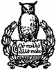

Volume III Contents
Main Contents

NEW YORK
HENRY HOLT AND COMPANY
1909
Copyright, 1909,
by
HENRY HOLT AND COMPANY
Published, September, 1909
THE QUINN & BODEN CO. PRESS
RAHWAY, N.J.
While politicians indecently clamoured for office, as indicated in the
concluding chapter of the preceding volume, President Lincoln,
whenever escape from the patronage hunters permitted, was considering
the wisdom of provisioning Fort Sumter. Grave doubt obtained as to the
government's physical ability to succour the fort, but, assuming it
possible, was it wise as a political measure? The majority of the
Cabinet, including Seward, voted in the negative, giving rise to the
report that Sumter would be abandoned. Union people generally, wishing
to support the brave and loyal action of Major Anderson and his little
band, vigorously protested against such an exhibition of weakness, and
the longer the Government hesitated the more vigorously the popular
will resented such a policy. Finally, on March 29, in spite of General
Scott's advice and Secretary Seward's opinion, the President, guided
by public sentiment, directed a relief expedition to be ready to sail
as early as April 6.
Meanwhile a Confederate constitution had been adopted, a Confederate flag raised over the capitol at Montgomery, and a Confederate Congress assembled, which had authorised the enlistment of 100,000 volunteers, the issue of $1,iii. 2000,000 in treasury notes, and the organisation of a navy. To take charge of military operations at Charleston, the Confederate government commissioned Pierre T. Beauregard a brigadier-general and placed him in command of South Carolina.
Beauregard quickly learned of Lincoln's decision to relieve Sumter, and upon the Confederate authorities devolved the grave responsibility of reducing the fort before the relief expedition arrived. In discussing this serious question Robert Toombs, the Confederate secretary of state, did not hesitate to declare that "the firing upon it at this time is suicide, murder, and will lose us every friend at the North. You will wantonly strike a hornet's nest which extends from mountain to ocean, and legions now quiet will swarm out and sting us to death. It is unnecessary; it puts us in the wrong; it is fatal."[1]
Nevertheless, Jefferson Davis, already overborne by pressure from South Carolina, ordered Beauregard to demand its evacuation, and, if refused, "to reduce it."[2] Answering Beauregard's aides, who submitted the demand on the afternoon of April 11, Anderson refused to withdraw, adding, "if you do not batter the fort to pieces about us, we shall be starved out in a few days."'[3] To this message the Confederate Secretary of War replied: "Do not desire needlessly to bombard Fort Sumter. If Major Anderson will state the time at which, as indicated by him, he will evacuate, and agree in the meantime he will not use his guns against us unless ours should be employed against Sumter, you are authorised thus to avoid the effusion of blood. If this or its equivalent be refused, reduce the fort as your judgment decides to be the most practicable."[4] Four aides submitted this proposition at a quarter before one o'clock on the morning of April 12, to which Anderson, after conferiii. 3ring two hours and a half with his officers, replied, "I will evacuate by noon on the 15th instant, and I will not in the meantime open fire upon your forces unless compelled to do so by some hostile act against this fort or the flag of my Government, should I not receive, prior to that time, controlling instructions from my Government or additional supplies."[5]
The aides refused these terms, and without further consultation with Beauregard notified Anderson that in one hour their batteries would open fire on the fort. Prompt to the minute, at 4.30 o'clock in the morning, a shell from Fort Johnson, signalling the bombardment to begin, burst directly over Sumter. At seven o'clock Anderson's force, numbering one hundred and twenty-eight officers, men, and non-combatant labourers, who had breakfasted upon half rations of pork and damaged rice, began returning the fire, which continued briskly at first and afterwards intermittently until the evacuation on Sunday afternoon, the 14th inst.[6]
Within twenty-four hours the prophecy of Robert Toombs was practically fulfilled, for when, on Monday, April 15, President Lincoln called for 75,000 State militia to execute the laws, the people of the North rose almost as one man to support the government. "At the darkest moment in the history of the Republic," Emerson wrote, "when it looked as if the nation would be dismembered, pulverised into its original elements, the attack on Fort Sumter crystalised the North into a unit, and the hope of mankind was saved."[7]
Much speculation had been indulged respecting the attitude of New York City. It was the heart of the Union and the home of Southern sympathy. Men had argued coolly and philosophically about the right of secession, and journals of wide influence daily exhibited strong Southern leanings. Owing to business connections and social intercourse with the South, merchants had petitioned for concessions so offeniii. 4sive to Lincoln that Southern statesmen confidently relied upon their friendship as an important factor in dividing the North. On many platforms Daniel S. Dickinson, James T. Brady, John Cochrane, and others equally well known and influential, had held the North responsible for conditions that, it was claimed, were driving the South into secession. So recently as December 20, in a meeting of more than ordinary importance, held on Pine Street, at which Charles O'Conor presided, and John A. Dix, John J. Cisco, William B. Astor, and others of similar character were present, Dickinson declared that "our Southern brothers will reason with us when we will reason with them.... The South have not offended us.... But their slaves have been run off in numbers by an underground railroad, and insult and injury returned for a constitutional duty.... If we would remain a united people we must treat the Southern States as we treated them on the inauguration of the government—as political equals."[8]
In a speech at Richmond on March 14 Cochrane promised that New York would sustain Virginia in any policy it adopted,[9] and on April 4 a Confederate commissioner, writing from Manhattan, reported to Jefferson Davis that two hundred of the most influential and wealthy citizens were then arranging the details to declare New York a free city. Several army officers as well as leading ship-builders, said the letter, had been found responsive, through whose assistance recruits from the ranks of the conspirators were to seize the navy yard, forts, and vessels of war, and to hold the harbor and city.[10] While nothing was known to the friends of the Union of the existence of such a conspiracy, deep anxiety prevailed as to how far the spirit of rebellion which had manifested itself in high places, extended among the population of the great metropolis.
The guns aimed at Sumter, however, quickly removed the impression that the greed of commerce was stronger than the love of country. The Stock Exchange resounded with enthusiastic cheers for Major Anderson, and generous loans showed that the weight of the financial and trade centre of the country was on the side of the national government. But more convincing proof of a solid North found expression in the spirit of the great meeting held at Union Square on Saturday, April 20. Nothing like it had ever been seen in America. Men of all ranks, professions, and creeds united in the demonstration. Around six platforms, each occupied with a corps of patriotic orators, an illustrious audience, numbering some of the most famous Democrats of the State, who had quickly discarded political prejudices, stood for hours listening to loyal utterances that were nobly illustrated by the valour of Major Anderson, whose presence increased the enthusiasm into a deafening roar of repeated cheers. If any doubt heretofore existed as to the right of coercing a State, or upon whom rested the responsibility for beginning the war, or who were the real enemies of the Union, or where prominent members of the Democratic party would stand, it had now disappeared. The partisan was lost in the patriot.
Daniel S. Dickinson travelled two hundred miles to be present at this meeting, and his attitude, assumed without qualification or reservation, especially pleased the lovers of the Union. Of all men he had retained and proclaimed his predilections for the South with the zeal and stubbornness of an unconverted Saul. Throughout the long discussion of twenty years his sympathy remained with the South, his ambitions centred in the South, and his words, whether so intended or not, encouraged the South to believe in a divided North. But the guns at Sumter changed him as quickly as a voice converted St. Paul. "It were profitless," he said, his eyes resting upon the torn flag that had waved over Sumter—"it were profitless to inquire for original or remote causes; it is no time for indecision or inaction.... I would assertiii. 6 the power of the government over those who owe it allegiance and attempt its overthrow, as Brutus put his signet to the death-warrant of his son, that I might exclaim with him, 'Justice is satisfied, and Rome is free.' For myself, in our federal relations, I know but one section, one Union, one flag, one government. That section embraces every State; that Union is the Union sealed with the blood and consecrated by the tears of the revolutionary struggle; that flag is the flag known and honoured in every sea under heaven; that government is the government of Washington, and Adams, and Jefferson, and Jackson; a government which has shielded and protected not only us, but God's oppressed children, who have gathered under its wings from every portion of the globe."[11]
Fernando Wood, until recently planning to make New York an independent city, now declared the past buried, with its political associations and sympathies, and pledged the municipality, its money and its men, to the support of the Union. "I am with you in this contest. We know no party, now."[12] Of the fifty or more speeches delivered from the several platforms, perhaps the address of John Cochrane, whose ridiculous Richmond oration was scarcely a month old, proved the most impressive. Cochrane had a good presence, a clear, penetrating voice, and spoke in round, rhetorical periods. If he sometimes illustrated the passionate and often the extravagant declaimer, his style was finished, and his fervid appeals deeply stirred the emotions if they did not always guide the reason. It was evident that he now spoke with the sincere emotion of one whose mind and heart were filled with the cause for which he pleaded. In his peroration, pointing to the torn flag of Sumter, he raised the vast audience to such a pitch of excitement that when he dramatically proclaimed his motto to be, "Our country, our whole country—in any event,iii. 7 a united country," the continued cheering was with great difficulty sufficiently suppressed to allow the introduction of another speaker.[13]
Of the regiments called for New York's quota was seventeen. Governor Morgan immediately communicated it to the Legislature, which authorised in a few hours the enlistment of 30,000 volunteers for two years. Instantly every drill room and armory in the State became a scene of great activity, and by April 19, four days after the call, the Seventh New York, each man carrying forty-eight rounds of ball cartridge, received an enthusiastic ovation as it marched down Broadway on its way to Washington. Thereafter, each day presented, somewhere in the State, a similar pageant. Men offered their services so much faster than the Government could take them that bitterness followed the fierce competition.[14] By July 1 New York had despatched to the seat of war 46,700 men—an aggregate that was swelled by December 30 to 120,361. Loans to the government, offered with an equally lavish hand, approximated $33,000,000 in three months.
To aid in the purchase and arming of steamships and in the movement of troops and forwarding of supplies, President Lincoln, during the excitement incident to the isolation of Washington, conferred extraordinary powers upon Governor Morgan, William M. Evarts, and Moses H. Grinnell, to whom army officers were instructed to report for orders. Similar powers to act for the Treasury Department in the disbursement of public money were conferred upon John A. Dix, George Opdyke, and Richard M. Blatchford. These gentlemen gave no security and received no compensation, but "I am not aware," wrote Lincoln, at a later day, "that a dollar of the public funds, thus confided, without authority of law, to unofficial persons, was either lost or wasted."[15]
The Union Square meeting appointed a Union Defenceiii. 8 Committee to raise money, provide supplies, and equip regiments. For the time this committee became the executive arm of the national government in New York, giving method to effort and concentrating the people's energies for the highest efficiency. John A. Dix, who had seen sixteen years of peace service in the regular army, equipped regiments and despatched them to Washington, while James S. Wadsworth, a man without military experience but of great public spirit, whose courage and energy especially fitted him for the work, loaded steamboats with provisions and accompanied them to Annapolis. Soon afterwards Dix became a major-general of volunteers, while Wadsworth, eager for active service, accepted an appointment on General McDowell's staff with the rank of major. This took him to Manassas, and within a month gave him a "baptism of fire" which distinguished him for coolness, high courage, and great capacity. On August 9 he was made a brigadier-general of volunteers, thus preceding in date of commission all other New Yorkers of similar rank not graduates of West Point.
A few weeks later Daniel E. Sickles, no less famous in the political arena, who was to win the highest renown as a fighter, received similar rank. Sickles, at the age of twenty-two, began public life as a member of the Assembly, and in the succeeding fourteen years served as corporation attorney, secretary of legation at London, State senator, and congressman. A Hunker in politics, an adept with the revolver, and fearless in defence, he had the habit of doing his own thinking. Tammany never had a stronger personality. He was not always a successful leader and he cared little for party discipline, but as an antagonist bent on having his own way his name had become a household word in the metropolis and in conventions. In the anti-slavery crusade his sympathies were Southern. He opposed Lincoln, he favoured compromise, and he encouraged the cotton States to believe in a divided North. Nevertheless, when the Union was assaulted, the soldier spirit that made himiii. 9 major of the Twelfth National Guards in 1852 took him to Washington at the head of the Excelsior Brigade, consisting of five regiments, fully armed and equipped, and ready to serve during the war. He reached the capital at the time when more regiments were offered than General Scott would accept, but with the energy that afterward characterised his action at Gettysburg he sought the President, who promptly gave him the order that mustered his men and put him in command.[16] Other leaders who had voiced Southern sentiments, notably John Cochrane, soon found places at the front. Indeed, those who had professed the warmest friendship for the South were among the first to speak or take up arms against it.
The Confederates, entering upon the path of revolution with the hope of a divided North, exhibited much feeling over this unanimity of sentiment. "Will the city of New York 'kiss the rod that smites her,'" asked the leading paper in Virginia, "and at the bidding of her Black Republican tyrants war upon her Southern friends and best customers? Will she sacrifice her commerce, her wealth, her population, her character, in order to strengthen the arm of her oppressors?"[17] Ten days later another influential representative of Southern sentiment, watching the proceedings of the great Union Square meeting, answered the inquiry. "The statesmen of the North," said the Richmond Enquirer, "heretofore most honoured and confided in by the South,iii. 10 have come out unequivocally in favor of the Lincoln policy of coercing and subjugating the South."[18] The Charleston Mercury called the roll of these statesmen in the several States. "Where," it asked, "are Fillmore, Van Buren, Cochrane, McKeon, Weed, Dix, Dickinson, and Barnard, of New York, in the bloody crusade proposed by President Lincoln against the South? Unheard of in their dignified retirement, or hounding on the fanatic warfare, or themselves joining 'the noble army of martyrs for liberty' marching on the South."[19] Other papers were no less indignant. "We are told," said the Richmond Examiner, "that the whole North is rallying as one man—Douglas, veering as ever with the popular breeze; Buchanan lifting a treacherous and time-serving voice of encouragement from the icy atmosphere of Wheatland; and well-fed and well-paid Fillmore, eating up all his past words of indignation for Southern injuries, and joining in the popular hue-and-cry against his special benefactors."[20] The Enquirer, speaking of Daniel S. Dickinson as "the former crack champion of Southern Rights," sneered at his having given his "adhesion to Lincoln and all his abolition works."[21] To the South which believed in the constitutional right of secession, the contest for the Union was a war of subjugation, and whoever took part in it was stigmatised. "The proposition to subjugate," said the Examiner, "comes from the metropolis of the North's boasted conservatism, even from the largest beneficiary of Southern wealth—New York City."[22]
In the midst of the patriotic uprising of the North, so disappointing and surprising to the South, an event occurred that cast a deep shadow over New York in common with the rest of the country. The press, presumably voicing public opinion, demanded that the army begin the work for which it was organised. Many reasons were given—some quixotic, some born of suspicion, and others wholly unworthy their source. The New York Tribune, in daily articles, becameiii. 11 alarmingly impatient, expressing the fear that influences were keeping the armies apart until peace could be obtained on humiliating terms to the North.[23] Finally, on June 27, appeared a four-line, triple-leaded leader, printed in small capitals, entitled "The Nation's War-Cry." It was as mandatory as it was conspicuous. "Forward to Richmond! Forward to Richmond! The Rebel Congress must not be allowed to meet there on the 20th of July! By that date the place must be held by the National Army!"[24] This war-cry appeared from day to day with editorials indicating a fear of Democratic intrigue, and hinting at General Scott's insincerity.[25]
General Scott did not approve a battle at that time. He thought the troops insufficiently drilled and disciplined. On the other hand, the President argued that a successful battle would encourage the country, maintain the unanimity of the war sentiment, and gain the respect of foreign governments. General McDowell had 30,000 men in the vicinity of Bull Run, Virginia, of whom 1,600 were regulars—the rest, for the most part, three months' volunteers whose term of enlistment soon expired. At Martinsburg, General Patterson, a veteran of two wars, commanded 20,000 Federal troops. Opposed to the Union forces, General Beauregard had an effective army of 22,000, with 9,000 in the Shenandoah Valley under command of Joseph E. Johnston. In obedience to the popular demand McDowell moved his troops slowly toward Beauregard's lines, and on Sunday, July 21, attacked withiii. 12 his whole force, gaining a complete victory by three o'clock in the afternoon. Meantime, however, Johnston, having eluded Patterson, brought to the field at the supreme moment two or three thousand fresh troops and turned a Confederate defeat into a Union rout and panic.[26]
After coolness and confidence had displaced the confusion of this wild stampede, it became clear that the battle of Bull Run had been well planned, and that for inexperienced and undisciplined troops McDowell's army had fought bravely. It appeared plain that had Patterson arrived with 2,300 fresh troops instead of Johnston, the Confederates must have been the routed and panic-stricken party. To the North, however, defeat was the source of much shame. It seemed a verification of the Southern boast that one Confederate could whip two Yankees, and deepened the conviction that the war was to be long and severe. Moreover, fear was expressed that it would minimise the much desired sympathy of England and other foreign governments. But it brought no abatement of energy. With one voice the press of the North demanded renewed activity, and before a week had elapsed every department of government girded itself anew for the conflict.[27] The vigour and enthusiasm of this period have been called a second uprising of the North, and the work of a few weeks exhibited the wonderful resources of a patriotic people.
The battle of Bull Run fomented mutterings, freighted with antagonism
to the war. Certain journals violently resented the suspension of the
writ of habeas corpus, while the Act of Congress, approved August 3,
providing for the freedom of slaves employed in any military or naval
service, called forth such extreme denunciations that the United
States grand jury for the Southern District of New York asked the
Court if the authors were subject to indictment. "These
newspapers,"[28] said the foreman, "are in the frequent practice of
encouraging the rebels now in arms against the Federal Government by
expressing sympathy and agreement with them, the duty of acceding to
their demands, and dissatisfaction with the employment of force to
overcome them. Their conduct is, of course, condemned and abhorred by
all loyal men, but the grand jury will be glad to learn from the Court
that they are also subject to indictment and condign punishment." The
Postmaster-General's order excluding such journals from the mails
intensified the bitterness. The arrests of persons charged with giving
aid and comfort to the enemy also furnished partisans an opportunity
to make people distrustful of such summary methods by magnifying the
danger to personal liberty. In a word, the Bull Run disaster had
become a peg upon which to hang sympathy for the South.[29]
Differences likewise appeared among Republicans. The Weed and anti-Weed factions still existed, but these divisions now grew out of differences far deeper than patronage. After the bombardment of Fort Sumter, Thurlow Weed desired the conflict conducted on lines that would unite the North into one party responding to the cry of "Union, now and forever." He believed this might be done and that rebellion could thus be confined to the extreme cotton region, if the loyal element in the Border States was cherished and representatives of all parties were permitted to participate in civil as well as military affairs. To this end he sought to avoid the question of emancipation, cordially approving the President's course in modifying Fremont's proclamation of the preceding August, which liberated the slaves of traitorous owners in Missouri. Weed pushed his contention to the extreme. Following the spirit of his rejected compromise he insisted that every act of the Government should strengthen and encourage the Union men of the Border States, among which he included North Carolina and Tennessee, and he bitterly resented the policy of urging the army, hastily and without due preparation, to fight "political battles" like that of Bull Run. On the other hand, the radical anti-slavery element of the country, led by Secretary Chase in the Cabinet, by Senator Sumner in Congress, and backed by Horace Greeley in the Tribune, disliked the President's policy of trying to conciliate Kentucky and other Border States by listening to the demands of slavery. This factional difference became doubly pronounced after Lincoln's modification of the Fremont proclamation.
Notwithstanding Democratic criticisms and Republican differences, however, the supporters of Lincoln, anxious toiii. 15 teach the seceding States an object lesson in patriotism, desired to unite both parties into one Union organisation, pledged to the vigorous prosecution of the war and the execution of the laws in all parts of the country. To Republicans this plan looked easy. Most people professed to favour the preservation of the Union, and thousands of young men irrespective of party had enlisted for the suppression of armed rebellion. Moreover, a union of parties at such a critical moment, it was argued, would be more helpful in discouraging the South than victory on the battlefield. Accordingly the Republican State Committee proposed to the Democrats early in August that in the election to occur on November 4 a single ticket be nominated, fairly representative of all parties upon a simple war platform.
About Dean Richmond, chairman of the Democratic State Committee, still clustered Peter Cagger, William B. Ludlow, Sanford E. Church, and other Soft leaders, with Horatio Seymour substantially in control. These men had not participated in the Union Square meeting on April 20, nor had their sentiments been voiced since the fall of Fort Sumter; but it was well known that their views did not coincide with those of Daniel S. Dickinson, John A. Dix, James T. Brady, Greene C. Bronson, and other leaders of the Hards. Richmond's reply, therefore, was not disappointing. He admitted the wisdom of filling public offices with pure and able men who commanded the confidence of the people, and suggested, with a play of sarcasm, that if such an example were set in filling Federal offices, it would probably be followed in the selection of State officers. But the politics of men in office, he continued, was of little importance compared to sound principles. Democrats would unite with all citizens opposed to any war and equally to any peace which is based upon the idea of the separation of these States, and who regard it the duty of the Federal government at all times to hold out terms of peace and accommodation to the dissevered States.
"Our political system," he continued, "was founded iniii. 16 compromise, and it can never be dishonourable in any Administration to seek to restore it by the same means. Above all, they repel the idea that there exists between the two sections of the Union such an incompatibility of institutions as to give rise to an irrepressible conflict between them, which can only terminate in the subjugation of one or the other. Repelling the doctrine that any State can rightfully secede from the Union, they hold next in abhorrence that aggressive and fanatical sectional policy which has so largely contributed to the present danger of the country. They propose, therefore, to invite to union with them all citizens of whatever party, who, believing in these views, will act with them to secure honest administration in Federal and State affairs, a rigid maintenance of the Constitution, economy in public expenditures, honesty in the award of contracts, justice to the soldier in the field and the taxpayer at home, and the expulsion of corrupt men from office."[30]
It was hardly to be expected, perhaps, that Dean Richmond and other representatives of a great party would be willing, even if moved by no other motive than a love of country, to abandon a political organisation that had existed for years, and that had already shown its patriotism by the generous enlistment of its members; but it is doubtful if they would have proclaimed, without the guidance of a State convention, such an elaborate and positive platform of principles, had not the serious defeat at Bull Run and the action of the President in suspending the writ of habeas corpus, subjected the national Administration to severe criticism. This, at least, was the view taken by the radical Republican press, which viciously attacked the patriotism of Richmond and his associates, charging them with using the livery of Democracy to serve the cause of treason.[31]
In the midst of these developments the Democratic State convention, made up of a larger number of old men than usual, assembled at Syracuse on September 4. It was not an enthusiastic body. The division upon national affairsiii. 17 plainly had a depressing influence. Francis Kernan became temporary chairman. At the Oneida bar, Kernan, then forty-five years old, had been for nearly two decades the peer of Hiram Denio, Samuel Beardsley, Ward Hunt, and Joshua Spencer. He was a forceful speaker, cool and self-possessed, with a pleasing voice and good manner. He could not be called an orator, but he was a master of the art of making a perfectly clear statement, and in defending his position, point by point, with never failing readiness and skill, he had few if any superiors. He belonged, also, to that class of able lawyers who are never too busy to take an active interest in public affairs.
In his brief address Kernan clearly outlined the position which the Democracy of the whole country was to occupy. "It is our duty," he said, "to oppose abolitionism at the North and secession at the South, which are equally making war upon our Government. Let us consign them both to a common grave. Never will our country see peace unless we do.... We care not what men are in charge of the Government, it is our duty as patriots and as Democrats to protect and preserve that Government, and resist with arms, and, if need be, with our lives, the men who seek to overthrow it; but this must be no war for the emancipation of slaves."[32]
The vigor of Kernan as a speaker and presiding officer exaggerated by contrast the feebleness of Herman J. Redfield, the permanent president of the convention. Redfield was an old man, a mere reminiscence of the days of DeWitt Clinton, whose speech, read in a low, weak voice, was directed mainly to a defence of the sub-treasury plan of 1840 and the tariff act of 1846.[33] He professed to favour a vigorous prosecution of the war, but there were no words of reproiii. 18bation for its authors, while he expressed the belief that "civil war will never preserve, but forever destroy the union of States." This was the prophecy of Reuben H. Walworth, the ex-chancellor, made at the Albany peace convention in the preceding January, and the applause that greeted the statement then, as it did at Syracuse, indicated a disposition on the part of many to favour concessions that would excuse if it did not absolutely justify secession.
The party platform, however, took little notice of the Redfield speech and the Redfield cheers. It declared that the right of secession did not anywhere or at any time exist; that the seizure of United States property and the sending out of privateers to prey on American commerce had precipitated the war; and that it was the duty of the government to put down rebellion with all the means in its power, and the duty of the people to rally about the government; but it also demanded that Congress call a convention of all the States to revise the Constitution, and that the Administration abandon the narrow platform of the Chicago convention, expel corrupt men from office, and exclude advocates of abolition from the Cabinet, declaring that it would "regard any attempt to pervert the conflict into a war for the emancipation of slaves as fatal to the hope of restoring the Union."
The debate upon the platform was destined to bring into prominence a broader loyalty than even Francis Kernan had exhibited. Arphaxed Loomis moved to restore the resolution, expunged in the committee's report, protesting against the passport system, the State police system, the suppressioniii. 19 of free discussion in the press, and the suspension of the writ of habeas corpus. It is doubtful if the freedom of the press had been materially abridged, since restrictions upon a few newspapers, charged with giving aid and comfort to the enemy, scarcely exceeded the proscription of anti-slavery papers before the war. The suspension of the writ of habeas corpus, however, furnished better grounds for complaint. Men were apprehended, often on the telegram of Secretary Seward, and committed to prison, without any offence being charged or an examination being made. Among others arrested were two men at Malone, besides an editor of the New York News, and a crippled newsboy who sold the News. Public sentiment generally sustained the Administration in such action, but many persons, including conservative Republicans, frequently questioned the right or justice of such procedure. "What are we coming to," asked Senator Trumbull of Illinois, "if arrests may be made at the whim or the caprice of a cabinet minister?"[34] Loomis, in insisting upon his resolution, had these arbitrary arrests in mind, maintaining that it embodied the true principles of Democracy, which he was unwilling to see violated without recording a protest.
This brought to his feet Albert P. Laning of Buffalo. He was younger by a score of years than Loomis, and although never as prominent, perhaps, as the great advocate of legal reformative measures, his remarkable memory and thorough grasp of legal principles had listed him among the strong lawyers of Western New York. To the convention he was well known as a clear, forceful speaker, who had been a student of political history as well as of law, and who, in spite of his ardent devotion to his profession, had revealed, when shaping the policy of his party, the personal gifts and remarkable power of sustained argument that win admiration.
At Syracuse, in 1861, Laning, just then in his early forties, was in the fulness of his intellectual power. He had followed Douglas and favored the Crittenden Compromise, but the fall of Sumter crippled his sympathy for the South and stiffened his support of the Federal administration. Moreover, he understood the difficulty, during a period of war, of conducting an impartial, constitutional opposition to the policy of the Administration, without its degeneration into a faction, which at any moment might be shaken by interest, prejudice, or passion. The motion of Loomis, therefore, seemed to him too narrow, and he opposed it with eloquence, maintaining that it was the duty of all good men not to embarrass the Government in such a crisis. Rather than that bold rebellion should destroy the government, he said, he preferred to allow the President to take his own course. The responsibility was upon him, and the people, irrespective of party, should strengthen his hands until danger had disappeared and the government was re-established in all its strength.
Kernan did not take kindly to these sentiments. Like Loomis he resented arbitrary arrests in States removed from actual hostilities, where the courts were open for the regular administration of justice, and with a few ringing sentences he threw the delegates into wild cheering. Though brief, this speech resulted in restoring the Loomis resolutioniii. 21 to its place in the platform, and in increasing the clamour that Kernan lead the party as a candidate for attorney-general. Kernan was not averse to taking office. For three years, from 1856 to 1859, he had been official reporter for the Court of Appeals, and in 1860 served in the Assembly. Later, he entered Congress, finally reaching the United States Senate. But in 1861 prudence prompted him to decline the tempting offer of a nomination for attorney-general, and although entreated to reconsider his determination, he stubbornly resisted, and at last forced the nomination of Lyman Tremaine of Albany, who had previously held the office.[35]
The work of the convention did not please all members of the party. To some the drift of the speeches and resolutions seemed an encouragement to armed rebellion; to others, although jealous of individual rights, it appeared to confuse the liberty of the press with license. One paper, an able representative of the party, disclaiming any desire "to rekindle animosities by discussing its various objectionable points," felt "bound to express its heartfelt repugnance of the malignant and traitorous spirit which animates the Loomis resolution."[36] These were severe words, showing that others than Laning opposed such criticism of the President.
Dean Richmond's refusal to unite in a Union convention did not stifle the hope that many Democrats might participate in such a meeting, and to afford them an opportunity a People's convention met at Wieting Hall in Syracuse, on September 11, contemporaneously with the Republican State convention. It became evident that the purpose was attainediii. 22 when the Democrats present declared that the banner of their former party no longer marked a place for them to muster. In character the members resembled determined Abolitionists in the forties. Its president, Thomas G. Alvord of Onondaga, had been speaker of the Assembly, a competitor of Gordon Granger for Congress, and a pronounced Hard Shell until the repeal of the Missouri Compromise drove him into the camp of the Softs. One of the delegates, James B. McKean, was soon to lead the Sixty-seventh Regiment to the field; another, Alexander S. Diven of Chemung was to enter Congress, and subsequently to distinguish himself at Antietam and Chancellorsville at the head of the One Hundred and Seventh; other participants, conspicuous in their respective localities, were to suffer bitterly and struggle bravely to maintain the Union. One delegate sung the "Star Spangled Banner," while the others, with radiant faces, broke into cheers. This was followed by several brief and vigorous speeches approving the war and the methods by which it was conducted. "There is no medium, no half way now," said one delegate, "between patriots and traitors."[37] This was the sentiment of the platform, which waived all political divisions and party traditions, declaring that the convention sought only, in this hour of national peril, to proclaim devotion to the Constitution and Union, and to defend and sustain the chosen authorities of the government at whatever cost of blood and treasure.
Rumours of Daniel S. Dickinson's nomination had been in the air from the outset. He had been much in the public eye since the 20th of April. In his zeal for the Union, said the Tribune, "his pointed utterances have everywhere fired the hearts of patriots." Freedom from the blighting influence of slavery seemed to give him easier flight, and his criticism of the Democratic convention was so felicitous, so full of story and wit and ridicule and the fire of genuine patriotism, that his name was quickly upon every lip, and his happy, homely hits the common property of half theiii. 23 people of the State.[38] The mention of his name for attorney-general, therefore, evoked the most enthusiastic applause. Since the constitutional convention of 1846 it had been the custom, in the absence of a candidate for governor, to write the name of the nominee for secretary of state at the head of the ticket; but in this instance the committee deemed it wise to nominate for attorney-general first and give it to the man of first importance. The nomination proved a popular hit. Instantly Syracuse and the State were ablaze, and Republican as well as many Democratic papers prophesied that it settled the result in November. The convention professed to discard party lines and traditions, and its sincerity, thus put early to the test, did much to magnify its work, since with marked impartiality it placed upon its ticket two Hards, two Softs, one American, and four Republicans.[39]
Whenever the People's convention recessed delegates to the Republican convention immediately took control. Indeed, so closely related were the two assemblies that spectators at one became delegates to the other. Weed did not attend the convention, but it adopted his conciliatory policy. "The popular fiat has gone forth in opposition, on the one hand, to secession and disunion, whether in the shape of active rebellion, or its more insidious ally, advocacy of an inglorious and dishonourable peace; and, on the other, to everything that savors of abolition, or tends towards a violation of the guarantees of slave property provided by the Constitution."[40]
It cannot be said that the Democratic campaign opened under flattering conditions. Loomis' resolution, known as the ninth or "secession" plank, had led to serious difficulty. Men recognised that in time of war more reserve was necessary in dealing with an Administration than during a period of peace, for if the government's arm was paralysed it could not stay the arm of the public enemy. This had been the position of Laning, and it appealed strongly to Lyman Tremaine, who believed the machinations of treason had forced the Government to suspend the writ of habeas corpus, and to organise systems of passports and State police. He boldly declined, therefore, to accept a nomination as attorney-general on a platform that emphatically condemned such measures, when deemed essential to the government's safety.
Tremaine, tall, portly, and commanding, belonged to the more independent members of the party. He was not a stranger to public life. Although but forty-two years old he had been an active party worker for a quarter of a century and an office-holder since his majority. Greene County made him supervisor, district attorney, and county judge, and soon after his removal to Albany in 1854 he became attorney-general. But these honours did not break his independence. He inherited a genius for the forum, and although his gifts did not put him into the first class, his name was familiar throughout the State.
Francis C. Brouck's withdrawal soon followed Tremaine's.[41] Then Tammany repudiated the Loomis resolutions,[42] and the Albany Argus shouted lustily for war.[43] But the blow that staggered Richmond came from the candidates who caught the drift of public sentiment, and in a proclamation of few words declared "in favour of vigorously sustaining the Government in its present struggle to maintain the Constitution and the Union, at all hazards, and at anyiii. 25 cost of blood and treasure."[44] This was the act of despair. For days they had waited, and now, alarmed by the evident change, they jumped from the plank that was sinking under them. "It is the first instance on record," said the Herald, "where the nominees of a convention openly and defiantly spit upon the platform, and repudiated party leaders and their secession heresies."[45]
Nevertheless, the difference between the great mass of Democrats and the supporters of the People's party was more apparent than real.[46] Each professed undying devotion to the Union. Each, also, favoured a vigorous prosecution of the war. As the campaign advanced the activity of the army strengthened this loyalty and minimised the criticism of harsh methods. Moreover, the impression obtained that the war would soon be over.[47] McClellan was in command, and the people had not yet learned that "our chicken was no eagle, after all," as Lowell expressed it.[48] Controversy over the interference with slavery also became less acute. John Cochrane, now commanding a regiment at the front, declared, in a speech to his soldiers, that slaves of the enemy, being elements of strength, ought to be captured as much as muskets or cannon, and that whenever he could seize a slave, and even arm him to fight for the government, he would do so.
In conducting the campaign the People's leaders discouniii. 26tenanced any criticism of the Government's efforts to restore the Union. "It is not Lincoln and the Republicans we are sustaining," wrote Daniel S. Dickinson. "They have nothing to do with it. It is the government of our fathers, worth just as much as if it was administered by Andrew Jackson. There is but one side to it."[49] As a rule the Hards accepted this view, and at the ratification of the ticket in New York, on September 20, Lyman Tremaine swelled the long list of speakers. A letter was also read from Greene C. Bronson. To those who heard James T. Brady at Cooper Institute on the evening of October 28 he seemed inspired. His piercing eyes burned in their sockets, and his animated face, now pale with emotion, expressed more than his emphatic words the loathing felt for men who had plunged their country into bloody strife.
Nevertheless, it remained for Daniel S. Dickinson to stigmatise the Democratic party. At the Union Square meeting he had burned his bridges. It was said he had nowhere else to go; that the Hards went out of business when the South went out of the Union; and that to the Softs he was non persona grata. There was much truth in this statement. But having once become a Radical his past affiliations gave him some advantages. For more than twenty years he had been known throughout the State as a Southern sympathiser. In the United States Senate he stood with the South for slavery, and in the election of 1860 he voted for Breckinridge. He was the most conspicuous doughface in New York. Now, he was an advocate of vigorous war and a pronounced supporter of President Lincoln. This gave him the importance of a new convert at a camp meeting. The people believed he knew what he was talking about, and while his stories and apt illustrations, enriched by a quick change in voice and manner, convulsed his audiences, imbedded in his wit and rollicking fun were most convincing argumentsiii. 27 which appealed to the best sentiments of his hearers.[50] Indeed, it is not too much to say that Daniel S. Dickinson, as an entertaining and forceful platform speaker, filled the place in 1861 which John Van Buren occupied in the Free-soil campaign in 1848.
A single address by Horatio Seymour, delivered at Utica on October 28, proved his right to speak for the Democratic party. He had a difficult task to perform. Men had changed front in a day, and to one of his views, holding rebellion as a thing to be crushed without impairing existing conditions, it seemed imperative to divorce "revolutionary emancipators" from the conservative patriots who loved their country as it was. He manifested a desire to appear scrupulously loyal to the Government, counseling obedience to constituted authorities, respect for constitutional obligations, and a just and liberal support of the President, in whose favour every presumption should be given. The suspension of the writ of habeas corpus and the long list of arbitrary arrests had provoked Seymour as it did many conservative Republicans, but however much individual rights may be violated, he said, so long as the country is engaged in a struggle for its existence, confidence, based upon the assumption that imperative reasons exist for these unusual measures, must be reposed in the Administration. This was the incarnation of loyalty.
But Seymour closed his address with an ugly crack of the whip. Dropping his well-selected words with the skill of a practised debater, he blended the history of past wrongs with those of the present, thus harrowing his auditors into aiii. 28 frame of mind as resentful and passionate as his own. When the public safety permits, he said threateningly, there will be abundant time to condemn and punish the authors of injustice and wrong, whether they occupy the presidential chair or seats in the cabinet. "Let them remember the teachings of history. Despotic governments do not love the agitators that call them into existence. When Cromwell drove from Parliament the latter-day saints and higher-law men of his day, and 'bade them cease their babblings;' and when Napoleon scattered at the point of the bayonet the Council of Five Hundred and crushed revolution beneath his iron heel, they taught a lesson which should be heeded this day by men who are animated by a vindictive piety or a malignant philanthropy.... It is the boast of the Briton that his house is his castle. However humble it may be, the King cannot enter. Let it not be said that the liberties of American citizens are less perfectly protected, or held less sacred than are those of the subjects of a Crown."
The slavery question was less easily and logically handled. He denied that it caused the war, but admitted that the agitators did, putting into the same class "the ambitious man at the South, who desired a separate confederacy," and "the ambitious men of the North, who reaped a political profit from agitation." In deprecating emancipation he carefully avoided the argument of military necessity, so forcibly put by John Cochrane, and strangely overlooked the fact that the South, by the act of rebellion, put itself outside the protection guaranteed under the Constitution to loyal and law-abiding citizens. "If it be true," he said, "that slavery must be abolished to save this Union, then the people of the South should be allowed to withdraw themselves from the Government which cannot give them the protection guaranteed by its terms." Immediate emancipation, he continued, would not end the contest. "It would be only the commencement of a lasting, destructive, terrible domestic conflict. The North would not consent that four millions of free negroes should live in their midst.... With what jusiii. 29tice do we demand that the South should be subjected to the evils, the insecurity, and the loss of constitutional rights, involved in immediate abolition?" Then, dropping into prophecy, the broad, optimistic statesmanship of the forties passed into eclipse as he declared that "we are either to be restored to our former position, with the Constitution unweakened, the powers of the State unimpaired, and the fireside rights of our citizens duly protected, or our whole system of government is to fall!"
Seymour, in closing, very clearly outlined his future platform. "We are willing to support this war as a means of restoring our Union, but we will not carry it on in a spirit of hatred, malice, or revenge. We cannot, therefore, make it a war for the abolition of slavery. We will not permit it to be made a war upon the rights of the States. We shall see that it does not crush out the liberties of the citizen, or the reserved powers of the States. We shall hold that man to be as much a traitor who urges our government to overstep its constitutional powers, as he who resists the exercise of its rightful authority. We shall contend that the rights of the States and the General Government are equally sacred."[51]
If the campaign contributed to the South a certain degree of comfort, reviving the hope that it would yet have a divided North to contend against, the election, giving Dickinson over 100,000 majority, furnished little encouragement. The People's party also carried both branches of the Legislature, securing twenty out of thirty-two senators, and seventy out of the one hundred and twenty-eight assemblymen. Among the latter, Henry J. Raymond and Thomas G. Alvord, former speakers, represented the undaunted mettle needed at Albany.
To add to the result so gratifying to the fusionists, George Opdyke defeated Fernando Wood by a small plurality for mayor of New York. Wood had long been known as a Dr. Jekyll and Mr. Hyde. He talked reform and grew degeniii. 30erate; he proclaimed patriotic views and held disloyal sentiments; he listened respectfully to public opinion, and defied it openly in his acts. He did not become a boss. It was ten years later before William M. Tweed centralised Tammany's power in one man. But Wood developed the system that made a boss possible. He dominated the police, he organised the lawless, he allied himself with the saloon, and he used the judiciary. In 1858, being forced out of Tammany, he retreated like a wounded tiger to Mozart Hall, organised an opposition society that took its name from the assembly room in which it met, and declared with emphasis and expletives that he would fight Tammany as long as he lived. From that moment his shadow had kept sachems alarmed, and his presence had thrown conventions into turmoil.
The arts of the card-sharper and thimble-rigger had been prodigally employed to save the candidate of Mozart Hall. Even the sachems of Tammany, to avert disaster, nominated James T. Brady, whose great popularity it was believed would draw strength from both Opdyke and Wood; but Brady refused to be used. Opdyke had been a liberal, progressive Democrat of the Free-Soil type and a pioneer Republican. He associated with Chase in the Buffalo convention of 1848 and coöperated with Greeley in defeating Seward in 1860. He had also enjoyed the career of a busy and successful merchant, and, although fifty years old, was destined to take a prominent part in municipal politics for the next two decades. One term in the Assembly summed up his office-holding experience; yet in that brief and uneventful period jobbers learned to shun him and rogues to fear him. This was one reason why the brilliant and audacious leader of Mozart Hall, in his death struggle with an honest man, suddenly assumed to be the champion of public purity.
Notwithstanding its confidence in General McClellan, whose success in
West Virginia had made him the successor of General Scott, giving him
command of all the United States forces, the North, by midsummer,
became profoundly discouraged. Many events contributed to it. The
defeat at Ball's Bluff on the Potomac, which Roscoe Conkling likened
to the battle of Cannæ, because "the very pride and flower of our
young men were among its victims,"[52] had been followed by
conspicuous incompetence at Manassas and humiliating failure on the
Peninsula. Moreover, financial difficulties increased the despondency.
At the outbreak of hostilities practical repudiation of Southern debts
had brought widespread disaster. "The fabric of New York's mercantile
prosperity," said the Tribune, "lies in ruins, beneath which ten
thousand fortunes are buried. Last fall the merchant was a capitalist;
to-day he is a bankrupt."[53] In September, 1861, these losses
aggregated $200,000,000.[54] Besides, the strain of raising sufficient
funds to meet government expenses had forced a suspension of specie
payment and driven people to refuse United States notes payable on
demand without interest. Meantime, the nation's expenses aggregated
$2,000,000 a day and the Treasury was empty. "I have been obliged,"
wrote the Secretary of the Treasury, "to draw for the last installment
of the November loan."[55]
To meet this serious financial condition, Elbridge G. Spaulding of Buffalo, then a member of Congress, had been designated to prepare an emergency measure to avoid national bankruptcy. "We must have at least $100,000,000 during the next three months," he wrote, on January 8, 1862, "or the government must stop payment."[56] Spaulding, then fifty-two years of age, was president of a bank, a trained financier, and already the possessor of a large fortune. Having served in the Thirty-first Congress, he had returned in 1859, after an absence of eight years, to remain four years longer. Strong, alert, and sufficiently positive to be stubborn, he possessed the confidence of Thaddeus Stevens, chairman of the Ways and Means Committee, who approved his plan of issuing $100,000,000 legal-tender, non-interest bearing treasury notes, exchangeable at par for six-twenty bonds. Spaulding fully appreciated the objections to his policy, but the only other course, he argued, was to sell bonds as in the war of 1812, which, if placed at six percent interest, would not, in his opinion, bring more than sixty cents—a ruinous method of conducting hostilities. However, his plea of necessity found a divided committee and in Roscoe Conkling a most formidable opponent, who attacked the measure as unnecessary, extravagant, unsound, without precedent, of doubtful constitutionality, and morally imperfect.[57]
It was in this debate that Conkling, adroitly choosing the right time and the proper subject, impressed the country with his power as an orator and his ability as a brilliant, resourceful debater, although, perhaps, a destructive rather than constructive legislator. Nature had lavished upon him superb gifts of mind and person. He was of commanding, even magnificent presence, six feet three inches tall, with regular features, lofty forehead, and piercing eyes,—blond and gigantic as a viking. It was difficult, indeed, for a man so superlatively handsome not to be vain, and the endeavour upon his part to conceal the defect was not in eviiii. 33dence. Although an unpopular and unruly schoolboy, who refused to go to college, he had received a good education, learning much from a scholarly father, a college-bred man, and an ornament to the United States District Court for more than a quarter of a century. Moreover, from early youth Conkling had studied elocution, training a strong, slightly musical voice, and learning the use of secondary accents, the choice of words, the value of deliberate speech, and the assumption of an impressive earnestness. In this debate, too, he discovered the talent for ridicule and sarcasm that distinguished him in later life, when he had grown less considerate of the feelings of opponents, and indicated something of the imperiousness and vanity which clouded an otherwise attractive manner.
As he stubbornly and eloquently contested the progress of the legal-tender measure with forceful argument and a wealth of information, Conkling seemed likely to deprive Spaulding of the title of "father of the greenback" until the Secretary of the Treasury, driven to desperation for want of money, reluctantly came to the Congressman's rescue and forced the bill through Congress.[58] By midsummer, however, gold had jumped to seventeen per cent., while the cost of the war, augmented by a call for 300,000 three years' men and by a draft of 300,000 nine months' militia, rested more heavily than ever upon the country. Moreover, by September 1 McClellan had been deprived of his command, the Army of the Potomac had suffered defeat at the second battle of Bull Run, and Lee and Longstreet, with a victorious army, were on their way to Maryland. The North stood aghast!
Much more ominous than military disaster and financial embarrassment, however, was the divisive sentiment over emancipation. Northern armies, moving about in slave communities, necessarily acted as a constant disintegrating force. Slaves gave soldiers aid and information, and soldiers, stimuiii. 34lated by their natural hostility to slave-owners, gave slaves protection and sympathy. Thus, very early in the war, many men believed that rebellion and slavery were so intertwined that both must be simultaneously overthrown. This sentiment found expression in the Fremont proclamation, issued on August 30, 1861, setting free all slaves owned by persons who aided secession in the military department of Missouri. On the other hand, the Government, seeking to avoid the slavery question, encouraged military commanders to refuse refuge to the negroes within their lines, and in modifying Fremont's order to conform to the Confiscation Act of August 6, the President aroused a discussion characterised by increasing acerbity, which divided the Republican party into Radicals and Conservatives. The former, led by the Tribune, resented the attitude of army officers, who, it charged, being notoriously in more or less thorough sympathy with the inciting cause of rebellion, failed to seize opportunities to strike at slavery. Among Radicals the belief obtained that one half of the commanding generals desired to prosecute the war so delicately that slavery should receive the least possible harm, and in their comments in Congress and in the press they made no concealment of their opinion, that such officers were much more anxious to restore fugitive slaves to rebel owners than to make their owners prisoners of war.[59] They were correspondingly flattering to those generals who proclaimed abolition as an adjunct of the war. Greeley's taunts had barbed points. "He is no extemporised soldier, looking for a presidential nomination or seat in Congress," he said of General Hunter, whose order had freed the slaves in South Carolina, Georgia, and Florida. "He is neither a political or civil engineer, but simply a patriot whose profession is war, and who does not understand making war so as not to hurt your enemy."[60]
When the Times, an exponent of the Conservatives, defended the Administration's policy with the declaration thatiii. 35 slaves were used as fast as obtained,[61] the Tribune minimized the intelligence of its editor. "Consider," it said, "the still unmodified order of McDowell, issued a full year ago, forbidding the harbouring of negroes within our lines. Consider Halleck's order, now nine months old and still operative, forbidding negroes to come within our lines at all. McClellan has issued a goodly number of orders and proclamations, but not one of them offers protection and freedom to such slaves of rebels as might see fit to claim them at his hands. His only order bearing upon their condition and prospects is that which expelled the Hutchinsons from his camp for the crime of singing anti-slavery songs."[62]
The dominant sentiment in Congress reflected the feeling of the Radicals, and under the pressure of McClellan's reverses before Richmond, the House, on July 11, and the Senate on the following day, passed the Confiscation Act, freeing forever the slaves of rebel owners whenever within control of the Government. The Administration's failure to enforce this act in the spirit and to the extent that Congress intended, finally brought out the now historic "Prayer of Twenty Millions"—an editorial signed by Horace Greeley and addressed to Abraham Lincoln. It charged the President with being disastrously remiss in the discharge of his official duty and unduly influenced by the menaces of border slave State politicians. It declared that the Union was suffering from timid counsels and mistaken deference to rebel slavery; that all attempts to put down rebellion and save slavery are preposterous and futile; and that every hour of obeisance to slavery is an added hour of deepened peril to the Union. In conclusion, he entreated the Chief Executive to render hearty and unequivocal obedience to the law of the land.[63]
Thus did Greeley devote his great powers to force Lincoln into emancipation. It is impossible, even at this distance of time, to turn the pages of his ponderous volumes without feeling the matchless force of his energy, the strength of his masterly array of facts, his biting sarcasm, his bold assumptions, and his clear, unadorned style. There is about it all an impassioned conviction, as if he spoke because he could not keep silent, making it impossible to avoid the belief that the whole soul and conscience of the writer were in his work. Day after day, with kaleidoscopic change, he marshalled arguments, facts, and historical parallels, bearing down the reader's judgment as he swept away like a great torrent the criticisms of himself and the arguments of his opponents. Nothing apparently could withstand his onslaught on slavery. With one dash of his pen he forged sentences that, lance-like, found their way into every joint of the monster's armour.
Greeley's criticism of the President and the army, however, gave his enemies vantage ground for renewed attacks. Ever since he suggested, at the beginning of hostilities, that the Herald did not care which flag floated over its office, James Gordon Bennett, possessing the genuine newspaper genius, had daily evinced a deep, personal dislike of the Tribune's editor, and throughout the discussion of emancipation, the Herald, in bitter editorials, kept its columns iniii. 37 a glow, tantalising the Tribune with a persistency that recalls Cheetham's attacks upon Aaron Burr. The strategical advantage lay with the Herald, since the initiative belonged to the Tribune, but the latter had with it the preponderating sentiment of its party and the growing influence of a war necessity. Greeley fought with a broad-sword, swinging it with a vigorous and well-aimed effect, while Bennett, with lighter weapon, pricked, stabbed, and cut. Never inactive, the latter sought to aggravate and embitter. Greeley, on the contrary, intent upon forcing the Administration to change its policy, ignored his tormentor, until exasperation, like the gathering steam in a geyser, drove him into further action. In this prolonged controversy the Tribune invariably referred to its adversary as "the Herald," but in the Herald, "Greeley," "old Greeley," "poor Greeley," "Mars Greeley," "poor crazy Greeley," became synonyms for the editor of the Tribune.
The fight of these able and conspicuous journals represented the fierceness with which emancipation was pushed and opposed throughout the State. Conservative men, therefore, realising the danger to which a bitter campaign along strict party lines would subject the Union cause, demanded that all parties rally to the support of the Government with a candidate for governor devoted to conservative principles and a vigorous prosecution of the war. Sentiment seemed to point to John A. Dix as such a man. Though not distinguished as a strategist or effective field officer, he possessed courage, caution, and a desire to crush the rebellion. The policy of this movement, embracing conservative Republicans and war Democrats, was urged by Thurlow Weed, sanctioned by Seward, and heartily approved by John Van Buren, who, since the beginning of hostilities, had avoided party councils. The Constitutional Union party, composed of old line Whigs who opposed emancipation,[64] proposed to lead this movement at its convention, to be held at Troy on September 9, but at the appointed time James Brooks, by prearrangement,iii. 38 appeared with a file of instructed followers, captured the meeting, and gave Horatio Seymour 32 votes to 20 for Dix and 6 for Millard Fillmore. This unexpected result made Seymour the candidate of the Democratic State convention which met at Albany on the following day.
Seymour sincerely preferred another. Early in August he travelled from Utica to Buffalo to resist the friendship and the arguments of Dean Richmond. It cannot be said that he had outlived ambition. He possessed wealth, he was advancing in his political career, and he aspired to higher honours, but he did not desire to become governor again, even though the party indicated a willingness to follow his leadership and give him free rein to inaugurate such a policy as his wisdom and conservatism might dictate. He clearly recognised the difficulties in the way. He had taken ultra ground against the Federal Administration, opposing emancipation, denouncing arbitrary arrests, and expressing the belief that the North could not subjugate the South; yet he would be powerless to give life to his own views, or to modify Lincoln's proposed conduct of the war. The President, having been elected to serve until March, 1865, would not tolerate interference with his plans and purposes, so that an opposition Governor, regardless of grievances or their cause, would be compelled to furnish troops and to keep the peace. Hatred of conscription would be no excuse for non-action in case of a draft riot, and indignation over summary arrests could in nowise limit the exercise of such arbitrary methods. To be governor under such conditions, therefore, meant constant embarrassment, if not unceasing humiliation. These reasons were carefully presented to Richmond. Moreover, Seymour was conscious of inherent defects of temperament. He did not belong to the class of politicians, described by Victor Hugo, who mistake a weather-cock for a flag. He was a gentleman of culture, of public experience, and of moral purpose, representing the best quality of his party; but possessed of a sensitive and eager temper, he was too often influenced by the men immediately about him, andiii. 39 too often inclined to have about him men whose influence did not strengthen his own better judgment.
Richmond knew of this weakness and regretted it, but the man of iron, grasping the political situation with the shrewdness of a phenomenally successful business man, wanted a candidate who could win. It was plain to him that the Republican party, divided on the question of emancipation and weakened by arbitrary arrests, a policy that many people bitterly resented, could be beaten by a candidate who added exceptional popularity to a promised support of the war and a vigorous protest against government methods. Dix, he knew, would stand with the President; Seymour would criticise, and with sureness of aim arouse opposition. While Richmond, therefore, listened respectfully to Seymour's reasons for declining the nomination, he was deaf to all entreaty, insisting that as the party had honoured him when he wanted office, he must now honour the party when it needed him. Besides, he declared that Sanford E. Church, whom Seymour favoured, could not be elected.[65] Having gained the Oneidan's consent, Richmond exercised his adroit methods of packing conventions, and thus opened the way for Seymour's unanimous nomination by making the Constitutional Union convention the voice of one crying in the wilderness.
To a majority of the Democratic party Seymour's selection appealed with something of historic pride. It recalled other days in the beginning of his career, and inspired the hope that the peace which reigned in the fifties, and the power that the Democracy then wielded, might, under his leadership, again return to bless their party by checking a policy that was rapidly introducing a new order of things. After his nomination, therefore, voices became hoarse with long continued cheering. For a few minutes the assembly surrendered to the noise and confusion which characterise a more modern convention, and only the presence of theiii. 40 nominee and the announcement that he would speak brought men to order.
Seymour, as was his custom, came carefully prepared. In his party he now had no rival. Not since DeWitt Clinton crushed the Livingstons in 1807, and Martin Van Buren swept the State in 1828, did one man so completely dominate a political organisation, and in his arraignment of the Radicals he emulated the partisan rather than the patriot. He spoke respectfully of the President, insisting that he should "be treated with the respect due to his position as the representative of the dignity and honor of the American people," and declaring that "with all our powers of mind and person, we mean to support the Constitution and uphold the Union;" but in his bitter denunciation of the Administration he confused the general policy of conducting a war with mistakes in awarding government contracts. To him an honest difference of opinion upon constitutional questions was as corrupt and reprehensible as dishonest practices in the departments at Washington. He condemned emancipation as "a proposal for the butchery of women and children, for scenes of lust and rapine, and of arson and murder, which would invoke the interference of civilised Europe."[66]
The convention thought seriously of making this speech the party platform. But A.P. Laning, declining to surrender the prerogative of the resolutions committee, presented a brief statement of principles, "pledging the Democracy to continue united in its support of the Government, and to use all legitimate means to suppress rebellion, restore the Union as it was, and maintain the Constitution as it is." It also denounced "the illegal, unconstitutional, and arbitrary arrests of citizens of the State as unjustifiable," declaring such arrests a usurpation and a crime, and insisting upon the liberty of speech and the freedom of the press.[67]
The speech of Seymour, as displeasing to many War Democrats as it was satisfactory to the Peace faction, at once aroused conservative Republicans, and Weed and Raymond, backed by Seward, favored the policy of nominating John A. Dix. Seward had distinguished himself as one of the more conservative members of the Cabinet. After settling into the belief that Lincoln "is the best of us"[68] his ambition centered in the support of the President, and whatever aid he could render in helping the country to a better understanding of the Administration's aims and wishes was generously if not always adroitly performed. He did not oppose the abolition of slavery. On the contrary, his clear discernment exhibited its certain destruction if the rebellion continued; but he opposed blending emancipation with a prosecution of the war, preferring to meet the former as the necessity for it arose rather than precipitate an academic discussion which would divide Republicans and give the Democrats an issue.
When Lincoln, on July 22, 1862, announced to his Cabinet a determination to issue an emancipation proclamation, the Secretary questioned its expediency only as to the time of its publication. "The depression of the public mind consequent upon our repeated reverses," he said, "is so great that I fear the effect of so important a step.... I suggest, sir, that you postpone its issue until you can give it to the country supported by military success, instead of issuing it, as would be the case now, upon the greatest disasters of the war."[69] Seward's view was adopted, and in place of the proclamation appeared the Executive Order of July 22, the unenforcement of which Greeley had so fiercely criticised in his "Prayer of Twenty Millions." Thurlow Weed, who, iniii. 42 June, had returned from London heavily freighted with good results for the Union accomplished by his influence with leading Englishmen, held the opinion of Seward. Raymond had also made the Times an able defender of the President's policy, and although not violent in its opposition to the attitude of the Radicals, it never ceased its efforts to suppress agitation of the slavery question.
In its purpose to nominate Dix the New York Herald likewise bore a conspicuous part. It had urged his selection upon the Democrats, declaring him stronger than Seymour. It now urged him upon the Republicans, insisting that he was stronger than Wadsworth.[70] This was also the belief of Weed, whose sagacity as to the strength of political leaders was rarely at fault.[71] On the contrary, Governor Morgan expressed the opinion that "Wadsworth will be far more available than any one yet mentioned as my successor."[72] Wadsworth's service at the battle of Bull Run had been distinguished. "Gen. McDowell told us on Monday," wrote Thurlow Weed, "that Major Wadsworth rendered him the most important service before, during, and after battle. From others we have learned that after resisting the stampede, earnestly but ineffectually, he remained to the last moment aiding the wounded and encouraging surgeons to remain on the field as many of them did."[73] Wadsworth's subsequent insistence that the Army of the Potomac, then commanded by McClellan, could easily crush the Confederates, who, in his opinion, did not number over 50,000[74], had again brought his name conspicuously before the country. Moreover, since the 8th of March he had commanded the forces in and about Washington, and had acted as Stanton's adviser in the conduct of the war.
For twenty years Wadsworth had not been a stranger to the people of New York. His vigorous defence of Silas Wright gave him a warm place in the hearts of Barnburners, and his name, after the formation of the Republican party, became a household word among members of that young organisation. Besides, his neighbours had exploited his character for generosity. The story of the tenant who got a receipt for rent and one hundred dollars in money because the accidental killing of his oxen in the midst of harvest had diminished his earning capacity, seemed to be only one of many similar acts. In 1847 his farm had furnished a thousand bushels of corn to starving Ireland. Moreover, he had endowed institutions of learning, founded school libraries, and turned the houses of tenants into homes of college students. But the Radicals' real reason for making him their candidate was his "recognition of the truth that slavery is the implacable enemy of our National life, and that the Union can only be saved by grappling directly and boldly with its deadly foe."[75]
Prompted by this motive his supporters used all the methods known to managing politicians to secure a majority of the delegates. Lincoln's emancipation proclamation, published on September 23, five days after the battle of Antietam, greatly strengthened them. They hailed the event as their victory. It gave substance, too, to the Wadsworth platform that "the Union must crush out slavery, or slavery will destroy the Union." Reinforced by such an unexpected ally, it was well understood before the day of the convention that in spite of the appeals of Weed and Raymond, and of the wishes of Seward and the President, the choice of the Radicals would be nominated. Wadsworth was not averse. He had an itching for public life. In 1856 his stubborn play for governor and his later contest for a seat in the United States Senate had characterised him as an office-seeker. But whether running for office himself,iii. 44 or helping some one else, he was a fighter whom an opponent had reason to fear.
The Republican Union convention, as it was called, assembled at Syracuse on September 25. Henry J. Raymond became its president, and with characteristic directness made a vigorous reply to Seymour, declaring that "Jefferson Davis himself could not have planned a speech better calculated, under all the circumstances of the case, to promote his end to embarrass the Government of the United States and strengthen the hands of those who are striving for its overthrow."[76] Then William Curtis Noyes read a letter from Governor Morgan declining renomination.[77] The Governor had made a creditable executive, winning the respect of conservatives in both parties, and although the rule against a third term had become firmly established in a State that had tolerated it but once since the days of Tompkins and DeWitt Clinton, the propriety of making a further exception appealed to the public with manifest approval. "But this," Weed said, "did not suit the Tribune and a class of politicians with whom it sympathised. They demanded a candidate with whom abolition is the paramount consideration."[78] Morgan's letter created a ripple of applause, after which the presentation of Wadsworth's name aroused an enthusiasm of longer duration than had existed at Albany. Nevertheless, Charles G. Myers of St. Lawrence did not hesitate to speak for "a more available candidate at the present time." Then, raising his voice above the whisperings of dissent, he named John A. Dix, "who, while Seymour was howling for peace and compromise," said the speaker, "ordered the first man shot that hauled down the American flag." Raymond, in his speech earlier in the afternoon, had quoted the historic despatch iniii. 45 a well-balanced sentence, with the accent and inflection of a trained orator; but in giving it an idiomatic, thrilling ring in contrast with Seymour's record, Myers suddenly threw the convention into wild, continued cheering, until it seemed as if the noise of a moment before would be exceeded by the genuine and involuntary outburst of patriotic emotion. A single ballot, however, giving Wadsworth an overwhelming majority, showed that the Radicals owned the convention.[79]
Parke Godwin of Queens, from the committee on resolutions, presented the platform. Among other issues it urged the most vigorous prosecution of the war; hailed, with the profoundest satisfaction, the emancipation proclamation; and expressed pride in the knowledge that the Republic's only enemies "are the savages of the West, the rebels of the South, their sympathisers and supporters of the North, and the despots of Europe."
The campaign opened with unexampled bitterness. Seymour's convention speech inflamed the Republican party, and its press, recalling his address at the Peace convention in January, 1861, seemed to uncork its pent-up indignation. The Tribune pronounced him a "consummate demagogue," "radically dishonest," and the author of sentiments that "will be read throughout the rebel States with unalloyed delight," since "their whole drift tends to encourage treason and paralyse the arm of those who strike for the Union."[80] It disclosed Seymour's intimate relations with "Vallandigham and the school of Democrats who do not disguise their sympathy with traitors nor their hostility to war," and predicted "that, if elected, Jeff Davis will reiii. 46gard his success as a triumph."[81] Odious comparisons also became frequent. Wadsworth at Bull Run was contrasted with Seymour's prediction that the Union's foes could not be subdued.[82] Seymour's supporters, it was said, believed in recognising the independence of the South, or in a restored Union with slavery conserved, while Wadsworth's champions thought rebellion a wicked and wanton conspiracy against human liberty, to be crushed by the most effective measures.[83] Raymond declared that "every vote given for Wadsworth is a vote for loyalty, and every vote given for Seymour is a vote for treason."[84]
To these thrusts the Democratic press replied with no less acrimony, speaking of Wadsworth as "a malignant, abolition disorganiser," whose service in the field was "very brief," whose command in Washington was "behind fortifications," and whose capacity was "limited to attacks upon his superior officers."[85] The Herald declared him "as arrant an aristocrat as any Southern rebel. The slaveholder," it said, "lives upon his plantation, which his ancestors begged, cheated, or stole from the Indians. Wadsworth lives upon his immense Genesee farms, which his ancestors obtained from the Indians in precisely the same way. The slaveholder has a number of negroes who raise crops for him, and whom he clothes, feeds, and lodges. Wadsworth has a number of labourers on his farms, who support him by raising his crops or paying him rent. The slaveholder, having an independent fortune and nothing to do, joins the army, or runs for office. Wadsworth, in exactly the same circumstances, does exactly the same thing. Wadsworth, therefore, is quite as much an aristocrat as the slaveholder, and cares quite as much for himself and quite as little for the people."[86] Democrats everywhere endeavoured to limit the issue to the two opposing candidates, claiming that Seymour, in conjunction with all conservative men, stood for a vigorous prosecution of the war to save the Union, whileiii. 47 Wadsworth, desiring its prosecution for the destruction of slavery, believed the Union of secondary consideration.
Campaign oratory, no longer softened by the absence of strict party lines, throbbed feverishly with passion and ugly epithet. The strategical advantage lay with Seymour, who made two speeches. Dean Richmond, alarmed at the growing strength of the war spirit, urged him to put more "powder" into his Brooklyn address than he used at the ratification meeting, held in New York City on October 13; but he declined to cater "to war Democrats," contenting himself with an amplification of his convention speech. "God knows I love my country," he said; "I would count my life as nothing, if I could but save the nation's life." He resented with much feeling Raymond's electioneering statement that a vote for him was one for treason.[87] "Recognising at this moment as we do," he continued, "that the destinies, the honour, and the glory of our country hang poised upon the conflict in the battlefield, we tender to the Government no conditional support" to put down "this wicked and mighty rebellion." Once, briefly, and without bitterness, he referred to the emancipation proclamation, but he again bitterly arraigned the Administration for its infractions of the Constitution, its deception as to the strength of the South, and the corruption in its departments.
Seymour's admirers manifested his tendencies more emphatically than he did himself, until denunciation of treason and insistence upon a vigorous prosecution of the war yielded to an indictment of the Radicals. The shibboleth of these declaimers was arbitrary arrests. Two days after the edict of emancipation (September 24) the President issued a proclamation ordering the arrest, without benefit of habeas corpus, of all who "discouraged enlistments," or were guilty of "any disloyal practice" which afforded "aid and comfort to the rebels."[88] This gave rise to an opinion that he intended to "suppress free discussion of politicaliii. 48 subjects,"[89] and every orator warned the people that Wadsworth's election meant the arrest and imprisonment of his political opponents. "If chosen governor," said the Herald, "he will have his adversaries consigned to dungeons and their property seized and confiscated under the act of Congress."[90] In accepting an invitation to speak at Rome, John Van Buren, quick to see the humour of the situation as well as the vulnerable point of the Radicals, telegraphed that he would "arrive at two o'clock—if not in Fort Lafayette."[91]
To the delight of audiences John Van Buren, after two years of political inactivity, broke his silence. He had earnestly and perhaps sincerely advocated the nomination of John A. Dix, but after Seymour's selection he again joined the ranks of the Softs and took the stump. Among other appointments he spoke with Seymour at the New York ratification meeting, and again at the Brooklyn rally on October 22. Something remained of the old-time vigour of the professional gladiator, but compared with his Barnburner work he seemed what Byron called "an extinct volcano." He ran too heedlessly into a bitter criticism of Wadsworth, based upon an alleged conversation he could not substantiate, and into an acrimonious attack upon Lincoln's conduct of the war, predicated upon a private letter of General Scott, the possession of which he did not satisfactorily account for. The Tribune, referring to his campaign as "a rhetorical spree," called him a "buffoon," a "political harlequin," a "repeater of mouldy jokes,"[92] and in bitter terms denounced his "low comedy performance at Tammany," his "double-shuffle dancing at Mozart Hall," his possession of a letter "by dishonourable means for a dishonourable purpose," and his wide-sweeping statements "which gentlemen over their own signatures pronounced lies."[93] It was not a performance to be proud of, and aliii. 49though Van Buren succeeded in stirring up the advertising sensations which he craved, he did not escape without wounds that left deep scars. "Prince John makes a statement," says the Herald, "accusing Charles King of slandering the wife of Andrew Jackson; King retorts by calling the Prince a liar; the poets of the Post take up the case and broadly hint that the Prince's private history shows that he has not lived the life of a saint; the Prince replies that he has half a mind to walk into the private antecedents of Wadsworth, which, it is said, would disclose some scenes exceedingly rich; while certain other Democrats, indignant at Raymond's accusations of treason against Seymour, threaten to reveal his individual history, hinting, by the way, that it would show him to have been heretofore a follower of that fussy philosopher of the twelfth century, Abelard—not in philosophy, however, but in sentiment, romance, and some other things."[94]
Wherever Van Buren spoke Daniel S. Dickinson followed. His admirers, the most extreme Radicals, cheered his speeches wildly, their fun relieving the prosaic rigour of an issue that to one side seemed forced by Northern treachery, to the other to threaten the gravest peril to the country. It is difficult to exaggerate the tension. Party violence ran high and the result seemed in doubt. Finally, conservatives appealed to both candidates to retire in favour of John A. Dix,[95] and on October 20 an organisation, styling itself the Federal Union, notified the General that its central committee had nominated him for governor, and that a State Convention, called to meet at Cooper Institute on the 28th, would ratify the nomination. To this summons, Dix, without declining a nomination, replied from Maryland that he could not leave his duties "to be drawn into any party strife."[96] This settled the question of a compromise candidate.
Elections in the October States did not encourage theiii. 50 Radicals. Pennsylvania, Ohio, and Indiana voiced the sentiments of the opposition, defeating Galusha A. Grow, speaker of the House, and seriously threatening the Radical majority in Congress. This retrogression, accounted for by the absence of soldiers who could not vote,[97] suggested trouble in New York, and to offset the influence of the Seymour rally in Brooklyn a great audience at Cooper Institute listened to a brief letter from the Secretary of State, and to a speech from Wadsworth. Seward did not encourage the soldier candidate. The rankling recollection of Wadsworth's opposition at Chicago in 1860 stifled party pride as well as patriotism, and although the Herald thought it "brilliant and sarcastic," it emphasised Wadsworth's subsequent statement that "Seward was dead against me throughout the campaign."[98]
Wadsworth's canvass was confined to a single speech. He had been absent from the State fifteen months, and although not continuously at the front there was something inexcusably ungenerous in the taunts of his opponents that he had served "behind fortifications." His superb conduct at Bull Run entitled him to better treatment. But his party was wholly devoted to him, and "amid a hurricane of approbation"[99] he mingled censure of Seymour with praise of Lincoln, and the experience of a brave soldier with bitter criticism of an unpatriotic press. It was not the work of a trained public speaker. It lacked poise, phrase, and deliberation. But what it wanted in manner it made up in fire and directness, giving an emotional and loyal audience abundant opportunity to explode into long-continued cheering. Thoughtful men who were not in any sense political partisans gave careful heed to his words. He stood for achievement. He brought the great struggle nearer home, and men listened as to one with a message from the fieldiii. 51 of patriotic sacrifices. The radical newspapers broke into a chorus of applause. The Radicals themselves were delighted. The air rung with praises of the courage and spirit of their candidate, and if here and there the faint voice of a Conservative suggested that emancipation was premature and arbitrary arrests were unnecessary, a shout of offended patriotism drowned the ignoble utterance.
Wadsworth and his party were too much absorbed in the zeal of their cause not to run counter to the prejudices of men less earnest and less self-forgetting. In a contest of such bitterness they were certain to make enemies, whose hostilities would be subtle and enduring, and the October elections showed that the inevitable reaction was setting in. Military failure and increasing debt made the avowed policy of emancipation more offensive. People were getting tired of bold action without achievement in the field, and every opponent of the Administration became a threnodist. However, independent papers which strongly favoured Seymour believed in Wadsworth's success. "Seymour's antecedents are against him," said the Herald. "Wadsworth, radical as he is, will be preferred by the people to a Democrat who is believed to be in favour of stopping the war; because, whatever Wadsworth's ideas about the negro may be, they are only as dust in the balance compared with his hearty and earnest support of the war and the Administration."[100] This was the belief of the Radicals,[101] and upon them the news of Seymour's election by over 10,000 majority fell with a sickening thud.[102] Raymond declared it "a vote of want of confidence in the President;"[103] Wadsworth thought Seward did it;[104] Weed suggested that Wadsworth held "too extreme party views;"[105] and Greeley insisted that it was "a gang of corrupt Republican politicians, who,iii. 52 failing to rule the nominating convention, took revenge on its patriotic candidate by secretly supporting the Democratic nominee."[106] But the dominant reason was what George William Curtis called "the mad desperation of reaction,"[107] which showed its influence in other States as well as in New York. That Wadsworth's personality had little, if anything, to do with his overthrow was further evidenced by results in congressional districts, the Democrats carrying seventeen out of thirty-one. Even Francis Kernan carried the Oneida district against Conkling. The latter was undoubtedly embarrassed by personal enemies who controlled the Welsh vote, but the real cause of his defeat was military disasters, financial embarrassments, and the emancipation proclamation. "All our reverses, our despondence, our despairs," said Curtis, "bring us to the inevitable issue, shall not the blacks strike for their freedom?"[108]
The political reaction in 1862 tied the two parties in the
Legislature. In the Senate, elected in 1861, the Republicans had
twelve majority, but in the Assembly each party controlled sixty-four
members. This deadlocked the election of a speaker, and seriously
jeopardized the selection of a United States senator in place of
Preston King, since a joint-convention of the two houses, under the
law as it then existed, could not convene until some candidate
controlled a majority in each branch.[109] It increased the
embarrassment that either a Republican or Democrat must betray his
party to break the deadlock.
Chauncey M. Depew was the choice of the Republicans for speaker. But the caucus, upon the threat of a single Republican to bolt,[110] selected Henry Sherwood of Steuben. After seventy-seven ballots Depew was substituted for Sherwood. By this time Timothy C. Callicot, a Brooklyn Democrat, refused longer to vote for Gilbert Dean, the Democratic nominee. Deeply angered by such apostasy John D. Van Buren and Saxton Smith, the Democratic leaders, offered Depew eight votes. Later in the evening Depew was visited by Callicot, who promised, if the Republicans would support him for speaker, to vote for John A. Dix for senator and thus break the senatorial deadlock. It was a trying position for Depew. The speakership was regarded as even a greater honor then than it is now, and to a gifted young man of twenty-nine its power and prestige appealed with tremeniii. 54dous force. Van Buren's proposition would elect him; Callicot's would put him in eclipse. Nevertheless, Depew unselfishly submitted the two proposals to his Republican associates, who decided to lose the speakership and elect a United States senator.[111]
The Democrats, alarmed at this sudden and successful flank movement, determined to defeat by disorderly proceedings what their leaders could not prevent by strategy, and with the help of thugs who filled the floor and galleries of the Assembly Chamber, they instigated a riot scarcely equalled in the legislative history of modern times. Boisterous threats, display of pistols, savage abuse of Callicot, and refusals to allow the balloting to proceed continued for six days, subsiding at last after the Governor, called upon to protect a law-making body, promised to use force. Finally, on January 26, nineteen days after the session opened, Callicot, on the ninety-third ballot, received two majority. This opened the way for the election of a Republican United States senator.
Horace Greeley had hoped, in the event of Wadsworth's success, to ride into the Senate upon "an abolition whirlwind."[112] He now wished to elect Preston King or Daniel S. Dickinson. King had made a creditable record in the Senate. Although taking little part in debate, his judgment upon questions of governmental policy, indicating an accurate knowledge of men and remarkable familiarity with details, commended him as a safe adviser, especially in political emergencies. But Weed, abandoning his old St. Lawrence friend, joined Seward in the support of Edwin D. Morgan.
Morgan had a decided taste for political life. When a grocer, living in Connecticut, he had served in the city council of Hartford, and soon after gaining a residence in New York, he entered its Board of Aldermen. Then he beiii. 55came State senator, commissioner of immigration, chairman of the National Republican Committee, and finally governor. Besides wielding an influence acquired in two gubernatorial terms, he combined the qualities of a shrewd politician with those of a merchant prince willing to spend money.
The stoutest opposition to Morgan came from extreme Radicals who distrusted him, and in trying to compass his defeat half a dozen candidates played prominent parts. Charles B. Sedgwick of Syracuse, an all-around lawyer of rare ability, whose prominence as a persuasive speaker began in the Free-Soil campaign of 1848, and who had served with distinction for four years in Congress, proved acceptable to a few Radicals and several Conservatives.[113] Henry J. Raymond, also pressed by the opponents of Morgan, attracted a substantial following, while David Dudley Field, Ward Hunt, and Henry R. Selden controlled two or three votes each. Nevertheless, a successful combination could not be established, and on the second formal ballot Morgan received a large majority. The remark of Assemblyman Truman, on a motion to make the nomination unanimous, evidenced the bitterness of the contest. "I believe we are rewarding a man," he said, "who placed the knife at the throat of the Union ticket last fall and slaughtered it."[114]
The Democrats presented Erastus Corning of Albany,iii. 56 then a member of Congress. Like Morgan, Corning was wealthy. Like Morgan, too, he had a predilection for politics, having served as alderman, state senator, mayor, and congressman. He belonged to a class of business men whose experience and ability, when turned to public affairs, prove of decided value to their State and country. "We should be glad," said the Tribune, "to see more men of Mr. Corning's social and business position brought forward for Congress and the Legislature."[115] The first ballot, in joint convention, gave Morgan 86 to 70 for Corning, Speaker Callicot voting for John A. Dix, and one fiery Radical for Daniel S. Dickinson. Thus did Thurlow Weed score another victory. Greeley was willing to make any combination. Raymond, Sedgwick, Ward Hunt, and even David Dudley Field would quickly have appealed to him. The deft hand of Weed, however, if not the money of Morgan, prevented combinations until the Governor, as a second choice, controlled the election.[116] This success resulted in a combination of Democrats and conservative Republicans, giving Weed the vast patronage of the New York canals.
Perhaps it was only coincidental that Weed's withdrawal from the Evening Journal concurred with Morgan's election, but his farewell editorial, written while gloom and despondiii. 57ency filled the land, indicated that he unerringly read the signs of the times. "I differ widely with my party about the best means of crushing the rebellion," he said. "I can neither impress others with my views nor surrender my own solemn convictions. The alternative of living in strife with those whom I have esteemed, or withdrawing, is presented. I have not hesitated in choosing the path of peace as the path of duty. If those who differ with me are right, and the country is carried safely through its present struggle, all will be well and 'nobody hurt.'"[117] This did not mean that Weed "has ceased to be a Republican," as Greeley put it,[118] but that, while refusing to become an Abolitionist of the Chase and Sumner and Greeley type, he declined longer to urge his conservative views upon readers who possessed the spirit of Radicals. Years afterward he wrote that "from the outbreak of the rebellion, I knew no party, nor did I care for any except the party of the Union."[119]
At the time of his retirement from the Journal, Weed was sixty-six years of age, able-bodied, rich, independent, and satisfied if not surfeited. "So far as all things personal are concerned," he said, "my work is done."[120] Yet a trace of unhappiness revealed itself. Perfect peace did not come with the possession of wealth.[121] Moreover, his political course had grieved and separated friends. For thirty years he looked forward with pleasurable emotions to the time when, released from the cares of journalism, he might return to Rochester, spending his remaining days on a farm, in theiii. 58 suburbs of that city, near the banks of the Genesee River; but in 1863 he found his old friends so hostile, charging him with the defeat of Wadsworth, that he abandoned the project and sought a home in New York.[122]
For several years Weed had made his political headquarters in that city. Indeed, No. 12 Astor House was as famous in its day as 49 Broadway became during the subsequent leadership of Thomas C. Platt. It was the cradle of the "Amens" forty years before the Fifth Avenue Hotel became the abode of that remarkable organization. From 1861 to 1865, owing to the enormous political patronage growing out of the war, the lobbies of the Astor House were crowded with politicians from all parts of New York, making ingress and egress almost impossible. In the midst of this throng sat Thurlow Weed, cool and patient, possessing the keen judgment of men so essential to leadership. "When I was organizing the Internal Revenue Office in 1862-3," wrote George S. Boutwell, "Mr. Weed gave me information in regard to candidates for office in the State of New York, including their relations to the factions that existed, with as much fairness as he could have commanded if he had had no relation to either one."[123]
Although opposed to the course of the Radicals, Weed sternly rebuked those, now called Copperheads,[124] who endeavored to force peace by paralysing the arm of the government. Their denunciation of arrests and of the suspension of habeas corpus gradually included the discouragement of enlistments, the encouragement of desertion, and resistance to the draft, until, at last, the spirit of opposition invaded halls of legislation as well as public meetings and the press.
To check this display of disloyalty the Union people, reiii. 59gardless of party, formed loyal or Union League clubs in the larger cities, whose densely packed meetings commanded the ablest speakers of the country. John Van Buren, fully aroused to the seditious trend of peace advocates, evidenced again the power that made him famous in 1848. In his inimitable style, with admirable temper and freshness, he poured his scathing sarcasm upon the authors of disloyal sentiments, until listeners shouted with delight. The Tribune, forgetful of his flippant work in the preceding year, accorded him the highest praise, while strong men, with faces wet with tears, thanked God that this Achilles of the Democrats spoke for the Republic with the trumpet tones and torrent-like fluency that had formerly made the name of Barnburner a terror to the South. Van Buren was not inconsistent. While favouring a vigorous prosecution of the war he had severely criticised arbitrary arrests and other undemocratic methods, but when "little men of little souls," as he called them, attempted to control the great party for illegal purposes, his patriotism flashed out in the darkness like a revolving light on a rocky coast.
The call of the Loyal League also brought James T. Brady from his law office. Unlike Dickinson, Brady did not approve the teachings or the methods of the Radicals, neither had he like Van Buren supported Seymour. Moreover, he had refused to take office from Tammany, or to accept nomination from a Democratic State convention. However, when the enemies of the Government seemed likely to carry all before them, he spoke for the Union like one divinely inspired. Indeed, it may be said with truth that the only ray of hope piercing the gloom and suspense in the early months of 1863 came from the brilliant outbursts of patriotism heard at the meetings of the Union League clubs.[125] "I pray that my name may be enrolled in that league," wrote Seward. "I would prefer that distinction to any honour my fellow-citizens could bestow upon me. If the country lives, as I trustiii. 60 it will, let me be remembered among those who laboured to save it. The diploma will grow in value as years roll away."[126]
Horatio Seymour did not become a member of the Union League, and his
inaugural message of January 7 gave no indication of a change of
heart. He spoke of his predecessor as having "shown high capacity" in
the performance of his duties; he insisted that "we must emulate the
conduct of our fathers, and show obedience to constituted authorities,
and respect for legal and constitutional obligations;" he demanded
economy and integrity; and he affirmed that "under no circumstances
can the division of the Union be conceded. We will put forth every
exertion of power; we will use every policy of conciliation; we will
hold out every inducement to the people of the South, consistent with
honour, to return to their allegiance; we will guarantee them every
right, every consideration demanded by the Constitution, and by that
fraternal regard which must prevail in a common country; but we can
never voluntarily consent to the breaking up of the Union of these
States, or the destruction of the Constitution." With his usual
severity he opposed arbitrary arrests, deemed martial law destructive
of the rights of States, and declared that the abolition of slavery
for the purpose of restoring the Union would convert the government
into a military despotism.
"It has been assumed," he said, "that this war will end in the ascendency of the views of one or the other of the extremes in our country. Neither will prevail. This is the significance of the late elections. The determination of the great Central and Western States is to defend the rights of the States, the rights of individuals, and to restore our Unioniii. 62 as it was. We must not wear out the lives of our soldiers by a war to carry out vague theories. The policy of subjugation and extermination means not only the destruction of the lives and property of the South, but also the waste of the blood and treasure of the North. There is but one way to save us from demoralisation, discord, and repudiation. No section must be disorganised. All must be made to feel that the mighty efforts we are making to save our Union are stimulated by a purpose to restore peace and prosperity in every section. If it is true that slavery must be abolished by force; that the South must be held in military subjection; that four millions of negroes must be under the management of authorities at Washington at the public expense; then, indeed, we must endure the waste of our armies, further drains upon our population, and still greater burdens of debt. We must convert our government into a military despotism. The mischievous opinion that in this contest the North must subjugate and destroy the South to save our Union has weakened the hopes of our citizens at home, and destroyed confidence in our success abroad."[127]
Although this message failed to recognise the difference between a peaceable South in the Union and a rebellious South attempting to destroy the Union, it is not easy, perhaps, to comprehend how the acknowledged leader of the opposition, holding such views and relying for support upon the peace sentiment of the country, could have said much less. Yet the feeling must possess the student of history that a consummate politician, possessing Seymour's ability and popularity, might easily have divided with Lincoln the honor of crushing the rebellion and thus have become his successor. The President recognized this opportunity, saying to Weed that the "Governor has greater power just now for good than any other man in the country. He can wheel the Democratic party into line, put down rebellion, and preserve the government. Tell him for me that if he will render this service for his country, I shall cheerfully makeiii. 63 way for him as my successor."[128] Seymour's reply, if he made one, is not of record, but Lincoln's message would scarcely appeal to one who disbelieved in the North's ability to subjugate the South. Later in the spring the President, unwilling to give the Governor up, wrote him a characteristic note. "You and I," said he, "are, substantially, strangers, and I write this chiefly that we may become better acquainted. As to maintaining the nation's life and integrity, I assume and believe there cannot be a difference of purpose between you and me. If we should differ as to the means it is important that such difference should be as small as possible; that it should not be enhanced by unjust suspicions on one side or the other. In the performance of my duty the coöperation of your State, as that of others, is needed,—in fact, is indispensable. This alone is a sufficient reason why I should wish to be at a good understanding with you. Please write me at least as long a letter as this, of course saying in it just what you think fit."[129]
It is difficult to fathom the impression made upon Seymour by this letter. The more cultivated Democrats about him entertained the belief that Lincoln, somewhat uncouth and grotesque, was a weak though well-meaning man, and the Governor doubtless held a similar opinion. Moreover, he believed that the President, alarmed by the existence of a conspiracy of prominent Republicans to force him from the White House, sought to establish friendly relations that he might have an anchor to windward.[130] One can imagine the Governor, as the letter lingered in his hand, smiling superciliously and wondering what manner of man this Illinoisan is, who could say to a stranger what a little boy frequently puts in his missive, "Please write me at least as long a letter as this." At all events, he treated the President very cavalierly.[131] On April 14, after delaying three weeks, heiii. 64 wrote a cold and guarded reply, promising to address him again after the Legislature adjourned. "In the meanwhile," he concluded, "I assure you that no political resentments, or no personal objects, will turn me aside from the pathway I have marked out for myself. I intend to show to those charged with the administration of public affairs a due deference and respect, and to yield to them a just and generous support in all measures they may adopt within the scope of their constitutional powers. For the preservation of this Union I am ready to make any sacrifice of interest, passion, or prejudice."[132]
Seymour never wrote the promised letter. His inaugural expressed his honest convictions. He wanted no relations with a President who seemed to prefer the abolition of slavery and the use of arbitrary methods. A few days later, in vetoing a measure authorising soldiers to vote while absent in the army, he again showed his personal antipathy, charging the President with rewarding officers of high rank for improperly interfering in State elections, while subordinate officers were degraded "for the fair exercise of their political rights at their own homes."[133] John Hay did not err in saying "there could be no intimate understanding between two such men."[134]
General Burnside's arrest of Clement L. Vallandigham of Ohio (May, 1863) increased Seymour's aversion to the President. Burnside's act lacked authority of law as well as the excuse of good judgment, and although the President's change of sentence from imprisonment in Fort Warren to banishment to the Southern Confederacy gave the proceeding a humorous turn, the ugly fact remained that a citizen,iii. 65 in the dead of night, with haste, and upon the evidence of disguised and partisan informers, had been rudely deprived of liberty without due process of law. Thoughtful men who reverenced the safeguard known to civil judicial proceedings were appalled. The Republican press of New York thought it indefensible, while the opposition, with unprecedented bitterness, again assailed the Administration. In a moment the whole North was in a turmoil. Everywhere mass meetings, intemperate speeches, and threats of violence inflamed the people. The basest elements in New York City, controlling a public meeting called to condemn the "outrage," indicated how easily a reign of riot and bloodshed might be provoked. To an assembly held in Albany on May 16, at which Erastus Corning presided, Seymour addressed a letter deploring the unfortunate event as a dishonour brought upon the country by an utter disregard of the principles of civil liberty. "It is a fearful thing," he said, "to increase the danger which now overhangs us, by treating the law, the judiciary, and the authorities of States with contempt. If this proceeding is approved by the government and sanctioned by the people, it is not merely a step toward revolution, it is revolution; it will not only lead to military despotism, it establishes military despotism. In this respect it must be accepted, or in this respect it must be rejected. If it is upheld our liberties are overthrown." Then he grew bolder. "The people of this country now wait with the deepest anxiety the decision of the Administration upon these acts. Having given it a generous support in the conduct of the war, we now pause to see what kind of government it is for which we are asked to pour out our blood and our treasure. The action of the Administration will determine, in the minds of more than one-half the people of the loyal States, whether this war is waged to put down rebellion in the South or to destroy free institutions at the North."[135]
At great length Lincoln replied to the resolutions forwarded by Corning. "In my own discretion," wrote theiii. 66 President, "I do not know whether I would have ordered the arrest of Mr. Vallandigham.... I was slow to adopt the strong measures which by degrees I have been forced to regard as being within the exceptions of the Constitution and as indispensable to the public safety.... I think the time not unlikely to come when I shall be blamed for having made too few arrests rather than too many.... Must I shoot a simple-minded soldier boy who deserts, while I must not touch a hair of a wily agitator who induces him to desert? This is none the less injurious when effected by getting a father, a brother, or friend into a public meeting and then working upon his feelings till he is persuaded to write the soldier boy that he is fighting in a bad cause for a wicked administration and contemptible government, too weak to arrest and punish him if he shall desert."[136] This argument, undoubtedly the strongest that could be made in justification, found great favour with his party, but the danger Seymour apprehended lay in the precedent. "Wicked men ambitious of power, with hatred of liberty and contempt of law," said Justice Davis of the United States Supreme Court, in deciding a case of similar character, "may fill the place once occupied by Washington and Lincoln, and if this right [of military arrest] is conceded, and the calamities of war again befall us, the dangers to human liberty are frightful to contemplate."[137]
Much as Seymour resented the arrest of Vallandigham, he did not allow the incident to interfere with his official action, and to the Secretary of War's call for aid when General Lee began his midsummer invasion of Pennsylvania, he responded promptly: "I will spare no effort to send you troops at once," and true to his message he forwarded nineteen regiments, armed and equipped for field service, whose arrival brought confidence.[138] But governed by the sinister reason that influenced him earlier in theiii. 67 year, he refused to acknowledge the President's letter of thanks, preferring to express his opinion of Administration methods unhindered by the exchange of courtesies. This he did in a Fourth of July address, delivered at the Academy of Music in New York City, in which he pleaded, not passionately, not with the acrimony that ordinarily characterised his speeches, but humbly, as if asking a despotic conqueror to return the rights and liberty of which the people had been robbed. "We only ask freedom of speech,—the right to exercise all the franchises conferred by the Constitution upon an American. Can you safely deny us these things?" Mingled also with pathetic appeals were joyless pictures of the ravages of war, and cheerless glimpses into the future of a Republic with its bulwarks of liberty torn away. "We stand to-day," he continued, "amid new made graves; we stand to-day in a land filled with mourning, and our soil is saturated with the blood of the fiercest conflict of which history gives us an account. We can, if we will, avert all these disasters and evoke a blessing. If we will do what? Hold that Constitution, and liberties, and laws are suspended? Will that restore them? Or shall we do as our fathers did under circumstances of like trial, when they battled against the powers of a crown? Did they say that liberty was suspended? Did they say that men might be deprived of the right of trial by jury? Did they say that men might be torn from their homes by midnight intruders?... If you would save your country and your liberties, begin at the hearth-stone; begin in your family circle; declare that their rights shall be held sacred; and having once proclaimed your own rights, claim for your own State that jurisdiction and that government which we, better than all others, can exercise for ourselves, for we best know our own interests."[139]
One week later, on Saturday, July 11, the draft began iniii. 68 the Ninth Congressional District of New York, a portion of the city settled by labourers, largely of foreign birth. These people, repeating the information gained in neighbourhood discussions, violently denounced the Conscription Act as illegal, claiming that the privilege of buying an exemption on payment of $300 put "the rich man's money against the poor man's blood." City authorities apprehended trouble and State officials were notified of the threatened danger, but only the police held themselves in readiness. The Federal Government, in the absence of a request from the Governor, very properly declined to make an exception in the application of the law in New York on the mere assumption that violence would occur. Besides, all available troops, including most of the militia regiments, had been sent to Pennsylvania, and to withdraw them would weaken the Federal lines about Gettysburg.
The disturbance began at the corner of Forty-sixth Street and Third Avenue, the rioters destroying the building in which the provost-marshal was conducting the draft. By this time the mob, having grown into an army, began to sack and murder. Prejudice against negroes sent the rioters into hotels and restaurants after the waiters, some of whom were beaten to death, while others, hanged on trees and lamp-posts, were burned while dying. The coloured orphan asylum, fortunately after its inmates had escaped, likewise became fuel for the flames. The police were practically powerless. Street cars and omnibuses ceased to run, shopkeepers barred their doors, workmen dropped their tools, teamsters put up their horses, and for three days all business was stopped. In the meantime Federal and State authorities coöperated to restore order. Governor Seymour, having hastened from Long Branch, addressed a throng of men and boys from the steps of the City Hall, calling them "friends," and pleadingiii. 69 with them to desist. He also issued two proclamations, declaring the city in a state of insurrection, and commanding all people to obey the laws and the legal authorities. Finally, the militia regiments from Pennsylvania began to arrive, and cannon and howitzers raked the streets. These quieting influences, coupled with the publication of an official notice that the draft had been suspended, put an end to the most exciting experience of any Northern community during the war.
After the excitement the Tribune asserted that the riot resulted from a widespread treasonable conspiracy,[140] and a letter, addressed to the President, related the alleged confession of a well-known politician, who, overcome with remorse, had revealed to the editors of the Tribune the complicity of Seymour. Lincoln placed no reliance in the story, "for which," says Hay, "there was no foundation in fact;"[141] but Seymour's speech "intimated," says the Lincoln historian, "that the draft justified the riot, and that if the rioters would cease their violence the draft should be stopped."[142] James B. Fry, provost-marshal general, substantially endorsed this view. "While the riot was going on," he says, "Governor Seymour insisted on Colonel Nugent announcing a suspension of the draft. The draft had already been stopped by violence. The announcement was urged by the Governor, no doubt, because he thought it would allay the excitement; but it was, under the circumstances, making a concession to the mob, and endangering the successful enforcement of the law of the land."[143]
Of the four reports of Seymour's speech, published the morning after its delivery, no two are alike.[144] Three, however, concur in his use of the word "friends,"[145] and alliii. 70 agree that he spoke of trying to secure a postponement of the draft that justice might be done. It was a delicate position in which he placed himself, and one that ever after gave him and his supporters much embarrassment and cause for many apologies. Nevertheless, his action in nowise impugned his patriotism. Assuming the riot had its inception in the belief which he himself entertained, that the draft was illegal and unjust, he sought by personal appeal to stay the destruction of life and property, and if anyone in authority at that time had influence with the rioters and their sympathisers it was Horatio Seymour, who probably accomplished less than he hoped to.
Seymour's views in relation to the draft first appeared in August. While the Federal authorities prepared the enrolment in June, the Governor, although his coöperation was sought, "gave no assistance," says Fry. "In fact, so far as the government officers engaged in the enrolment could learn, he gave the subject no attention."[146] On the day the drawing began, however, he became apprehensive of trouble and sent his adjutant to Washington to secure a suspension of the draft, but the records do not reveal the reasons presented by that officer. Certainly no complaint was made as to the correctness of the enrolment or the assignment of quotas.[147] Nevertheless, his delay taught him a lesson, and when the Federal authorities notified him later that the drawing would be resumed in August, he lost no time in beginning the now historic correspondence with the President. His letter of August 3 asked that the suspension of the draft be continued to enable the State officials to correct the enrolment, and to give the United States Supreme Court opportunity to pass upon the constitutionality of the Coniii. 71scription Act, suggesting the hope that in the meantime New York's quota might be filled by volunteers. "It is believed by at least one-half of the people of the loyal States," he wrote, "that the Conscription Act, which they are called upon to obey, is in itself a violation of the supreme constitutional law.... In the minds of the American people the duty of obedience and the rights to protection are inseparable. If it is, therefore, proposed on the one hand to exact obedience at the point of the bayonet, and, upon the other hand, to shut off, by military power, all approach to our judicial tribunals, we have reason to fear the most ruinous results."[148]
This letter was neither gracious nor candid. While dealing in columns of figures to prove the inaccuracy of the enrolment, it concealed the fact that, although urged to coöperate with the enrolling officers, he had ignored their invitation to verify the enrolment. In menacing tones, too, he intimated "the consequences of a violent, harsh policy, before the constitutionality of the Act is tested." It was evident he had given much thought to the question, but his prolixity betrayed the feeling of an official who, conscious of having erred in doing nothing in anticipation of riot and bloodshed, wished now to make a big showing of duty performed.
Lincoln's reply not only emphasised the difference between the political aptitude of himself and Seymour, but marked him as the more magnanimous and far the greater man. The President raised no issue as to enrolments, wasted no arguments over columns of figures, and referred in nowise to the past. He briefly outlined a method of verification which quickly established,—what might have been shown in June had the Governor given the matter attention,—an excess of 13,000 men enrolled in the Brooklyn and New York districts. Although he would be glad, said Liniii. 72coln, to facilitate a decision of the Court and abide by it,[149] he declined longer to delay the draft "because time is too important.... We are contending with an enemy who, as I understand, drives every able-bodied man he can reach into his ranks, very much as a butcher drives bullocks into a slaughter-pen. No time is wasted, no argument is used. This produces an army which will soon turn upon our now victorious soldiers already in the field, if they are not sustained by recruits as they should be."[150]
When the drawing was resumed on August 19, 10,000 infantry and three batteries of artillery, picked troops from the Army of the Potomac, beside a division of the State National Guard, backed the Governor's proclamation counselling submission to the execution of the law. In this presence the draft proceeded peacefully.
Meanwhile, the loyal millions of the North, longing for victory in the field, found their prayers answered. Gettysburg and Vicksburg had pierced the spirit of the South, Cumberland Gap had liberated East Tennessee, Fort Smith and Little Rock supplied a firm footing for the army beyond the Mississippi, and the surrender of Port Hudson permitted Federal gunboats to pass unvexed to the sea. The rift in the war cloud had, indeed, let in a flood of sunlight, and, while it lasted, gave fresh courage and larger faith.
The victories of Vicksburg and Gettysburg turned the Republican Union
convention, held at Syracuse on September 2, into a meeting of
rejoicing. Weed did not attend, but the Conservatives, led by Henry J.
Raymond and Edwin D. Morgan, boldly talked of its control. Ward Hunt
became temporary chairman. Hunt was a lawyer whom politics did not
attract. Since his unsuccessful effort to become a United States
senator in 1857 he had turned aside from his profession only when
necessary to strengthen the cause of the Union. At such times he shone
as the representative of a wise patriotism. He did not belong in the
class of attractive platform speakers, nor possess the weaknesses of
blind followers of party chieftains. His power rested upon the
strength of his character as a well-poised student of affairs. What he
believed came forcefully from a mind that formed its own judgments,
and whether his words gave discomfort to the little souls that
governed caucuses, or to the great journalists that sought to force
their own policies, he was in no wise disturbed.
Upon taking the chair Hunt began his remarks in the tone of one who felt more than he desired to express, but as the mention of Gettysburg and Vicksburg revealed the unbounded enthusiasm of the men before him, the optimism that characterised the people's belief in the summer of 1863 quickly took possession of him, and he coupled with the declaration that the rebel armies were nearly destroyed, the opinion that peace was near at hand. For the moment the party seemed solidly united. But when the echoes of longiii. 74 continued cheering had subsided the bitterness of faction flashed out with increased intensity. To the Radicals, Raymond's suggestion of Edwin D. Morgan for permanent chairman was as gall and wormwood, and his talk of an entire new ticket most alarming. However, George Opdyke and Horace Greeley, the Radical leaders, chastened by the defeat of Wadsworth and the election of Morgan to the Senate, did not now forget the value of discretion. Hunt's selection as temporary chairman had been a concession, and in the choice of a permanent presiding officer, although absolutely unyielding in their hostility to Morgan, they graciously accepted Abraham Wakeman, an apostle of the conservative school.[151] Their attitude toward Morgan, however, cost Opdyke a place on the State Committee, and for a time threatened to exclude the Radicals from recognition upon the ticket.
The refusal of men to accept nominations greatly embarrassed Conservatives in harvesting their victory. Thomas W. Olcott of Albany was nominated for comptroller in place of Lucius Robinson. Of all the distinguished men who had filled that office none exhibited a more inflexible firmness than Robinson in holding the public purse strings. He was honest by nature and by practice. Neither threats nor ingenious devices disturbed him, but with a fidelity as remarkable as it was rare he pushed aside the emissaries of extravagance and corruption as readily as a plow turns under the sod. After two years of such methods, however, the representatives of a wide-open treasury noisily demanded a change. But Olcott, a financier of wide repute, wisely declined to be used for such a purpose, and Robinson was accepted.
Daniel S. Dickinson, after the inconsequential treatment accorded him in the recent contest for United States senator, suddenly discovered that domestic reasons disabled him from serving longer as attorney-general. Then James T. Brady declined, although tendered the nomination without aiii. 75 dissenting voice. This reduced the convention, in its search for a conspicuous War Democrat, to the choice of John Cochrane, the well-known orator who had left the army in the preceding February. In choosing a Secretary of State the embarrassment continued. Greeley encouraged the candidacy of Chauncey M. Depew, but concluded, at the last moment, that Peter A. Porter, the colonel of a regiment and a son of the gallant general of the war of 1812, must head the ticket.[152] Porter, however, refused to exchange a military for a civil office, and Depew was substituted.
Depew, then a young man of twenty-nine, gave promise of his subsequent brilliant career. He lived a neighbour to Horace Greeley, whom he greatly admired, and to whom he tactfully spoke the honeyed words, always so agreeable to the Tribune's editor.[153] Perhaps no one in the State possessed a more pleasing personality. He made other people as happy as he was himself. To this charm of manner were added a singularly attractive presence, a pleasing voice, and the oratorical gifts that won him recognition even before he left Yale College. From the first he exhibited a marked capacity for public life. He had an unfailing readiness, a wide knowliii. 76edge of affairs, a keen sense of the ridiculous, and a flow of clear and easy language which never failed to give full and precise expression to all that was in his mind. He rarely provoked enmities, preferring light banter to severe invective or unsparing ridicule. Among his associates he was the prince of raconteurs. In conventions few men were heard with keener interest, and every Republican recognised the fact that a new force had come into the councils of the party. There never was a time when people regarded him as "a coming man," for he took a leading place at once. In 1861, three years after his admission to the bar, the Peekskill voters sent him to the Assembly, and the next year his colleagues selected him for speaker, an honour which he generously relinquished that his party might elect a United States senator. Now, within the same year, he found a place at the head of the ticket, which he led during the campaign with marked ability.[154]
The platform endorsed the Administration, praised the soldiers, opposed a peace that changed the Constitution except in the form prescribed by it, deplored the creation of a spirit of partisan hostility against the Government, and promised that New York would do its full share in maintaining the Union; but it skilfully avoided mentioning the conscription act and the emancipation proclamation, which Seymour charged had changed the war for the Union into a war for abolition. When a delegate, resenting the omission, moved a resolution commending emancipation, Raymond reminded him that he was in a Union, not a Republican convention, and that many loyal men doubted the propriety of such an endorsement. This position proved too conservative for the ordinary up-State delegate, and a motion to table theiii. 77 resolution quickly failed. Thereupon Charles A. Folger of Geneva moved to amend by adding the words, "and as a war measure is thoroughly legal and justifiable." Probably no man in the convention, by reason of his learning and solidity of character, had greater influence. In 1854 he left the Democratic party with Ward Hunt, whom he resembled as a lawyer, and whom he was to follow to the Court of Appeals and like him attain the highest eminence. Just then he was forty-five years old, a State senator of gentle bearing and stout heart, who dared to express his positive convictions, and whose suggested amendment, offered with the firmness of a man conscious of being in the right, encountered slight opposition.
The President's letter, addressed to the Union convention of New York, gave the Radicals great comfort. With direct and forceful language Lincoln took the people into his confidence. There are but three ways, he said, to stop the war; first, by suppressing rebellion, which he was trying to do; second, by giving up the Union, which he was trying to prevent; and third, by some imaginable compromise, which was impossible if it embraced the maintenance of the Union. The strength of the rebellion is in its army, which dominates all the country and all the people within its range. Any offer of terms made by men within that range, in opposition to that army, is simply nothing for the present, because such men have no power whatever to enforce their side of a compromise if one were made with them. Suppose refugees from the South and peace men from the North hold a convention of the States, how can their action keep Lee out of Pennsylvania? To be effective a compromise must come from those in control of the rebel army, or from the people after our army has suppressed that army. As no suggestion of peace has yet come from that source, all thought of peace for the present was out of the question. If any proposition shall hereafter come, it shall not be rejected and kept a secret from you.
To be plain, he continued, you are dissatisfied about theiii. 78 negro. You opposed compensated emancipation and you dislike proclaimed emancipation. If slaves are property, is there any question that by the law of war such property, both of enemies and friends, may be taken when needed? And is it not needed when its taking helps us and hurts our enemy? But you say the proclamation is unconstitutional. If it is not valid, it needs no retraction. If it is valid, it cannot be retracted any more than the dead can be brought to life. You profess to think its retraction would help the Union. Why better after the retraction than before the issue? Those in revolt had one hundred days to consider it, and the war, since its issuance, has progressed as favourably for us as before. Some of the commanders who have won our most important victories believe the emancipation policy the heaviest blow yet dealt to the rebels, and that in one instance, at least, victory came with the aid of black soldiers. You say you will not fight to free negroes. Whenever you are urged, after resistance to the Union is conquered, to continue to fight, it will be time enough to refuse. Do you not think, in the struggle for the Union, that the withdrawal of negro help from the enemy weakens his resistance to you? That what negroes can do as soldiers leaves so much less for white soldiers to do? But why should negroes do anything for us, if we will do nothing for them? and if they, on the promise of freedom, stake their lives to save the Union, shall the promise not be kept?
The signs look better, he concluded. Peace does not appear so distant as it did. When it comes, it will prove that no appeal lies from the ballot to the bullet, and that those who take it are sure to lose their case and pay the costs. "And then there will be some black men who can remember that, with silent tongue, and clenched teeth, and steady eye, and well poised bayonet, they have helped mankind on to this great consummation; while I fear there will be some white ones unable to forget that with malignant heart and deceitful speech they have striven to hinder it."[155]
The influence of this letter, increased by the dignity and power of the President's office, proved a sharp thorn to the Democrats. Recent military successes had made it appear for the time, at least, that rebellion was about to collapse, and the Democratic State Union convention, which convened at Albany on September 9, shifted its policy from a protest against war measures to an appeal for conciliation. In other words, it was against subjugation, which would not leave "the Union as it was, and the Constitution as it is." In its effort to emphasise this plea it refused to recognise or affiliate with the Constitutional Union party, controlled by James Brooks and other extreme peace advocates,[156] and although its platform still condemned emancipation, conscription, and arbitrary arrests, the pivotal declaration, based on "manifestations of a returning allegiance on the part of North Carolina and other seceded States," favoured a wise statesmanship "which shall encourage the Union sentiment of the South and unite more thoroughly the people of the North." Amasa J. Parker, chairman of the convention, who still talked of a "yawning gulf of ruin," admitted that such a policy brought a gleam of hope to the country, and Governor Seymour, at the end of a dreary speech explanatory of his part in the draft-riot,[157] expressediii. 80 a willingness to "bury violations of law and the rights of States and individuals if such a magnanimous course shall be pursued."[158] Lincoln's letter, however, unexpectedly spoiled such an appeal, compelling the convention to "regret" that the President contemplates no measure for the restoration of the Union, "but looking to an indefinite protraction of the war for abolition purposes points to no future save national bankruptcy and the subversion of our institutions."[159]
The Republicans, backed by success in the field, started with an advantage which the cheering news from Maine strengthened. It soon become manifest, too, that the Gibraltar of Democracy resented the destructive work of mobs and rioters. Criticism of Seymour also became drastic. "He hobnobbed with the copperhead party in Connecticut," said the Herald, "and lost that election; he endorsed Vallandigham, and did nothing during the riot but talk. He has let every opportunity pass and rejected all offers that would prove him the man for the place. The sooner he is dropped as incompetent, the better it will be for the ticket."[160] The Tribune imputed nepotism. "His brother," it said, "gets $200 per month as agent, a nephew $150 as an officer, and two nephews and a cousin $1,000 a year each as clerks in the executive departments."[161] But Martin I. Townsend, at a great mass meeting in New York City, presented the crushing indictment against him. Although the clock had tolled the midnight hour, the large audience remained toiii. 81 hear Townsend for the same reason, suggested Edwin D. Morgan, the chairman, that the disciples sat up all night whenever the great apostle was with them. Townsend was then fifty-three years old. For more than a decade his rare ability as a speaker had kept him a favorite, and for a quarter of a century longer he was destined to delight the people. On this occasion, however, his arraignment left a deeper and more lasting impression than his words ordinarily did. "Seymour," he said, "undertook to increase enlistments by refusing the soldier his political franchise. On the supposition that Meade would be defeated, he delivered a Fourth of July address that indicted the free people of the North and placed him in the front rank of men whom rebels delight to honour. If there was a traitor in New York City on that day he was in the company of Horatio Seymour. Finally, he pronounced as 'friends' the men, who, stirred to action by his incendiary words, applied the torch and the bludgeon in the draft riot of July 13, 14, and 15."[162]
In the four speeches delivered in the campaign, Seymour was never cleverer or more defiant.[163] He exhibited great skill in criticising the Administration, charging that disasters had brought bankruptcy, that ill-advised acts of subordinates had sapped the liberties of the people, and that base motives inspired the policy of the Government. He denounced the Radicals as craven Americans, devoid of patriotic feeling, who were trying to make the humiliation and degradation of their country a stepping-stone to continued power. "They say we must fight until slavery is extinguished. We are to upturn the foundations of our Constitution. At this very moment, when the fate of the nation and of individuals trembles in the balance, these madmen ask us to plunge into a bottomless pit of controversy upon indefinite purposes. Does not every man know that weiii. 82 must have a united North to triumph? Can we get a united North upon a theory that the Constitution can be set aside at the will of one man, because, forsooth, he judges it to be a military necessity? I never yet heard that Abraham Lincoln was a military necessity.... The Vice-President says, 'There are men in your midst who want the Union as it was and the Constitution as it is,' and he adds, sneeringly, 'They can't have it.' We will tell him there are many such men, and we say to him we will have it. There has never been a sentiment in the North or South put forth more treasonable, cowardly, and base than this." Referring to the President's call, on October 17, for 300,000 volunteers, to be followed by a draft if not promptly filled, he exclaimed: "Again, 600,000 men are called for—600,000 homes to be entered. The young man will be compelled to give up the cornerstone of his fortune, which he has laid away with toil and care, to begin the race of life. The old man will pay that which he has saved, as the support of his declining years, to rescue his son. In God's name, let these operations be fair if they must be cruel." In conclusion he professed undying loyalty. "We love that flag [pointing to the Stars and Stripes] with the whole love of our life, and every star that glitters on its blue field is sacred. And we will preserve the Constitution, we will preserve the Union, we will preserve our flag with every star upon it, and we will see to it that there is a State for every star."[164]
In their extremity Dean Richmond and Peter Cagger, taking advantage of the President's call for more troops, issued a circular on the eve of election, alleging that the State would receive no credit for drafted men commuted; that towns which had furnished their quotas would be subject to a new conscription; and that men having commuted were liable to be immediately drafted again.[165] This was the prototype of Burchard's "Rum, Romanism, and Rebellion"iii. 83 in 1884, and might have become no less disastrous had not the Provost-marshal General quickly contradicted it. As a parting shot, Seward, speaking at Auburn on the night before election, declared that if the ballot box could be passed through the camps of the Confederate soldiers, every man would vote for the administration of our government by Horatio Seymour and against the administration of Abraham Lincoln.[166]
The October elections foreshadowed the result in November. Although the Democrats had derived great advantage in 1862 because of their bold stand for civil liberty and freedom of speech, a year later such arguments proved of little avail. Gettysburg and Vicksburg had turned the tide, and Seymour and the draft riot carried it to the flood. Depew's majority, mounting higher and higher as the returns came slowly from the interior, turned the Governor's surprise into shame. In his career of a quarter of a century Seymour had learned to accept disappointment as well as success, but his failure in 1863 to forecast the trend of changing public sentiment cost him the opportunity of ever again leading his party to victory.[167]
In his Auburn speech Seward had declared for Lincoln's
renomination.[168] Proof of the intimate personal relations existing
between the President and his Secretary came into national notice in
1862 when a committee of nine Radical senators, charging to Seward's
conservatism the failure of a vigorous and successful prosecution of
the war, formally demanded his dismissal from the Cabinet. On learning
of their action the Secretary had immediately resigned. "Do you still
think Seward ought to be excused?" asked Lincoln at the end of a long
and stormy interview. Four answered "Yes," three declined to vote, and
Harris of New York said "No."[169] The result of this conference led
Secretary Chase, the chief of the Radicals, to tender his resignation
also. But the President, "after most anxious consideration," requested
each to resume the duties of his department. Speaking of the matter
afterward to Senator Harris, Lincoln declared with his usual
mirth-provoking illustration: "If I had yielded to that storm and
dismissed Seward, the thing would all have slumped one way. Now I can
ride; I have got a pumpkin in each end of my bag."[170]
Other causes than loyalty contributed to the President's regard for Seward. In their daily companionship the latteriii. 85 took a genial, philosophical view of the national struggle, not shared by all his Cabinet associates, while Lincoln dissipated the gloom with quaint illustrations of Western life.[171] At one of these familiar fireside talks the President expressed the hope that Seward might be his successor, adding that the friends so grievously disappointed at Chicago would thus find all made right at last. To this Seward, in his clear-headed and kind-hearted way, replied: "No, that is all past and ended. The logic of events requires you to be your own successor. You were elected in 1860, but the Southern States refused to submit. They thought the decision made at the polls could be reversed in the field. They are still in arms, and their hope now is that you and your party will be voted down at the next election. When that election is held and they find the people reaffirming their decision to have you President, I think the rebellion will collapse."[172]
Unlike Seward, Thurlow Weed wabbled in his loyalty to the President. Chafing under the retention of Hiram C. Barney as collector of customs, Weed thought Lincoln too tolerant of Radicals whose opposition was ill concealed. "They will all be against him in '64," he wrote David Davis, then an associate justice of the United States Supreme Court. "Why does he persist in giving them weapons with which they may defeat his renomination?"[173] Barney had become a burden to Lincoln, who really desired to be rid of him. Many complaints of irregularity disclosed corrupt practices which warranted a change for the public good. Besides, said the President, "the establishment was being run almost exclusively in the interest of the Radicals. I felt great delicacy in doing anything that might be offensive to my friend. And yet something had to be done. I told Seward he must find him a diplomatic position. Just then Chase became aware of my little conspiracy. He was very angry and told me the day Barney left the customiii. 86 house, with or without his own consent, he would withdraw from the Treasury. So I backed down."[174]
Lincoln's tolerance did not please Weed, whose infrequent calls at the White House had not escaped notice. "I have been brought to fear recently," the President wrote with characteristic tenderness, "that somehow, by commission or omission, I have caused you some degree of pain. I have never entertained an unkind feeling or a disparaging thought towards you; and if I have said or done anything which has been construed into such unkindness or disparagement it has been misconstrued. I am sure if we could meet we would not part with any unpleasant impression on either side."[175] Such a letter from such a man stirred the heart of the iron-willed boss, who hastened to Washington. He had much to say. Among other things he unfolded a plan for peace. It proposed full amnesty to all persons engaged in the war and an armistice for ninety days, during which time such citizens of the Confederate States as embrace the offered pardon "shall, as a State or States, or as citizens thereof, be restored in all respects to the rights, privileges, and prerogatives which they enjoyed before their secession from the Union." If, however, such offer is rejected, the authority of the United States denied, and the war against the Union continued, the President should partition all territory, whether farms, villages, or cities, among the officers and soldiers conquering the same.[176]
In presenting this plan Weed argued that if the offer was rejected it would secure "a united North in favour of war to the knife." Besides, the armistice, occurring when the season interrupts active army movements, would cause little delay and give ample time for widespread circulation of the proclamation. Respecting the division of lands among soldiers, he said it would stop desertion, avoid the payment of bounties, and quickly fill the army with enterprising yeomen who would want homes after the termination of hostiliiii. 87ties. It had long been practised in maritime wars by all civilized nations, he said, and being a part of international law it could not in reason be objected to, especially as the sufferers would have rejected most liberal offers of peace and prosperity. Weed frankly admitted that Seward did not like the scheme, and that Senator Wilson of Massachusetts eyed it askance; but Stanton approved it, he said, and Dean Richmond authorised him to say that if fairly carried out the North would be a unit in support of the war and the rebellion would be crushed within six months after the expiration of the armistice.[177]
In conversation Weed was the most persuasive of men. To a quiet, gentle, deferential manner, he added a giant's grasp of the subject, presenting its strong points and marshalling with extraordinary skill all the details. Nevertheless, the proposition now laid before the President, leaving slavery as it was, could not be accepted. "The emancipation proclamation could not be retracted," he had said in his famous letter to the New York convention, "any more than the dead could be brought to life." However, Lincoln did not let the famous editor depart empty-handed. Barney should be removed, and Weed, satisfied with such a scalp, returned home to enter the campaign for the President's renomination.[178]
Something seemed to be wrong in New York. Other States through conventions and legislatures had early favored the President's renomination, while the Empire State moved slowly. Party machinery worked well. The Union Central Committee, holding a special meeting on January 4, 1864 at the residence of Edwin D. Morgan, recommended Lincoln's nomination. "It is going to be difficult to restrain the boys," said Morgan in a letter to the President, "and there is not much use in trying to do so."[179] On February 23 the Republican State Committee also endorsed him, and several Union League clubs spoke earnestly of hisiii. 88 "prudence, sagacity, comprehension, and perseverance." But the absence of an early State convention, the tardy selection of delegates to Baltimore, and the failure of the Legislature to act, did not reveal the enthusiasm evinced in other Commonwealths. Following the rule adopted elsewhere, resolutions favourable to the President's renomination were duly presented to the Assembly, where they remained unacted upon. Suddenly on January 25 a circular, signed by Simeon Draper and issued by the Conference Committee of the Union Lincoln Association of New York, proposed that all citizens of every town and county who favoured Lincoln's nomination meet in some appropriate place on February 22 and make public expression to that fact. Among the twenty-five names attached appeared those of Moses Taylor and Moses H. Grinnell. This was a new system of tactics. But the legislative resolutions did not advance because of it.
A month later a letter addressed by several New Yorkers to the National Republican Executive Committee requested the postponement of the Baltimore convention.[180] "The country is not now in a position to enter into a presidential contest," it said. "All parties friendly to the Government should be united in support of a single candidate. Such unanimity cannot at present be obtained. Upon the result of measures adopted to finish the war during the present spring and summer will depend the wish of the people to continue their present leaders, or to exchange them for others. Besides, whatever will tend to lessen the duration of an acrimonious Presidential campaign will be an advantage to the country."[181] If the sentiment of this letter was not new, the number and character of its signers produced a profound sensation. William Cullen Bryant headed the list, and of the twenty-three names, seventeen were leading State senators, among them Charles J. Folger and James M. Cook. "This list," said the Tribune, "contains the names of two-iii. 89thirds of the Unionists chosen to our present State Senate, the absence of others preventing their signing. We understand that but two senators declined to affix their name."[182] Greeley did not sign this letter, but in an earlier communication to the Independent he had urged a postponement of the convention.[183] Moreover, he had indicated in the Tribune that Chase, Fremont, Butler, or Grant would make as good a President as Lincoln, while the nomination of either would preserve "the salutary one-term principle."[184]
It is not easy to determine the cause or the full extent of the dissatisfaction with Lincoln among New York Republicans. Seward's influence and Weed's relations seriously weakened him. After the election of 1862 Radicals openly charged them with Wadsworth's defeat. For the same reason the feeling against Edwin D. Morgan had become intensely bitter. Seeing a newspaper paragraph that these men had been in consultation with the President about his message, Senator Chandler of Michigan, the prince of Radicals, wrote a vehement letter to Lincoln, telling him of a "patriotic organisation in all the free and border States, containing to-day over one million of voters, every man of whom is your friend upon radical measures of your administration; but there is not a Seward or a Weed man among them all. These men are a millstone about your neck. You drop them and they are politically ended forever.... Conservatives and traitors are buried together. For God's sake don't exhume their remains in your message. They will smell worse than Lazarus did after he had been buried three days."[185]
Although Weed had left the President with the promise of aiding him, he could accomplish nothing. The Legislature refused to act, demands for the postponement of the national convention continued to appear, and men everyiii. 90where resented conservative leadership. This was especially true of Greeley and the Tribune, Bryant and the Evening Post, and Beecher and the Independent, not to mention other Radicals and radical papers throughout the State, whose opposition represented a formidable combination. Except for this discontent the Cleveland convention would scarcely have been summoned into existence. Of the three calls issued for its assembling two had their birth in New York, one headed by George B. Cheever, the eminent divine, who had recently toured England in behalf of the Union,—the other by Lucius Robinson, State comptroller, and John Cochrane, attorney-general. Cheever's call denounced "the imbecile and vacillating policy of the present Administration in the conduct of the war,"[186] while Robinson and Cochrane emphasised the need of a President who "can suppress rebellion without infringing the rights of individual or State."[187]
That Weed no longer possessed the wand of a Warwick was clearly demonstrated at the Republican State convention, held at Syracuse on May 26, to select delegates to Baltimore. Each faction, led in person by Greeley and Weed, professed to favour the President's renomination, but the fierce and bitter contest over the admission of delegates from New York City widened the breach. The Weed machine, following the custom of previous years, selected an equal number of delegates from each ward. The Radicals, who denounced this system as an arbitrary expression of bossism, chose a delegation representing each ward in proportion to the number of its Republican voters. The delegation accepted would control the convention, and although the Radicals consented to the admission of both on equal terms, the Weed forces, confident of their strength, refused the compromise. This set the Radicals to work, and at the morning session, amidst the wildest confusion and disorder, they elected Lyman Tremaine temporary chairman by a majorityiii. 91 of six over Chauncey M. Depew, the young secretary of state, whose popularity had given the Conservatives an abnormal strength.
In his speech the Chairman commented upon the death of James S. Wadsworth, killed in the battle of the Wilderness on May 6, from whose obsequies, held at Geneseo on the 21st, many delegates had just returned. Tremaine believed that the soldier's blood would "lie heavy on the souls of those pretended supporters of the government in its hour of trial, whose cowardice and treachery contributed to his defeat for governor."[188] In such a spirit he eulogised Wadsworth's character and patriotism, declaring that if justice had been done him by the Conservatives, he would now, instead of sleeping in his grave, be governor of New York. Although spoken gently and with emotions of sadness, these intolerably aggressive sentences, loudly applauded by the Radicals, stirred the Weed delegates into whispered threats.[189] But Tremaine did not rely upon words alone. He packed the committee on contested seats, whose report, admitting both city delegations on equal terms, was accepted by the enormous majority of 192 to 98, revealing the fact that the great body of up-State Republicans distrusted Thurlow Weed, whose proposition for peace did not include the abolition of slavery. Other reasons, however, accounted for the large majority. Tremaine, no longer trusting to the leadership of Greeley,[190] marshalled the Radical forces with a skill learned in the school of Seymour and Dean Richmond, and when his drilled cohorts went into action the tumultuousiii. 92 and belligerent character of the scene resembled the uproar familiar to one who had trained with Tammany and fought with Mozart Hall. In concluding its work the convention endorsed the President and selected sixty-six delegates, headed by Raymond, Dickinson, Tremaine, and Preston King as delegates-at-large.
The echo of the Syracuse contest reached the Cleveland convention, which assembled on May 31. Of all the distinguished New Yorkers whose names had advertised and given character to this movement John Cochrane alone attended. Indeed, the picturesque speech of Cochrane, as chairman, and the vehement letter of Lucius Robinson, advocating the nomination of Grant, constituted the only attractive feature of the proceedings. Cochrane and Robinson wanted a party in which they could feel at home. To Cochrane the Republican party was "a medley of trading, scurvy politicians, which never represented War Democrats,"[191] while Robinson thought the country "had survived, through three years of war, many bad mistakes of a weak Executive and Cabinet, simply because the popular mind had been intensely fixed upon the single purpose of suppressing rebellion."[192] Both resented the Administration's infringement of individual rights. "Whoever attacks them," said Cochrane, "wounds the vital parts of the Republic. Not even the plea of necessity allows any one to trample upon them."[193] The Cleveland convention, however, did not help these statesmen any more than the nomination of John C. Fremont and John Cochrane, "the two Johns from New York" as they were called, injured the President.[194] When Lincoln heard that instead of the many thousands expected only three or four hundred attended, he opened his Bible and read: "And every one that was in distress, and every one that was iniii. 93 debt, and every one that was discontented, gathered themselves unto him; and he became a captain over them; and there were with him about four hundred."[195]
Lucius Robinson's suggestion that Grant be nominated for President represented the thought of many New Yorkers prominent in political circles. "All eyes and hopes now centre on Grant," wrote Thurlow Weed on April 17. "If he wins in Virginia it will brighten the horizon and make him President."[196] The Herald sounded the praises of the Lieutenant-General in nearly every issue. The Tribune and Times were equally flattering. Even the World admitted that a skilful general handled the army.[197] Other papers throughout the State expressed similar confidence in his victorious leadership, and with the hope of changing the sentiment from Lincoln to Grant a great mass meeting, called ostensibly to express the country's gratitude to the latter, was held in New York City two days before the meeting of the National Republican convention. Neither at this time, however, nor at any other did the movement receive the slightest encouragement from the hero of Vicksburg, or shake the loyalty of the delegates who assembled at Baltimore on June 7.
Henry J. Raymond, evidencing the same wise spirit of compromise exhibited at Syracuse in 1863, reported the platform. It declared the maintenance of the Union and the suppression of rebellion by force of arms to be the highest duty of every citizen; it approved the determination of the government to enter into no compromise with rebels; favoured the abolition of slavery by constitutional amendment; applauded the wisdom, patriotism, and fidelity of the President; thanked the soldiers, and claimed the full protectioniii. 94 of the laws of war for coloured troops; encouraged immigration and the early construction of a railroad to the Pacific coast; pledged the national faith to keep inviolate the redemption of the public debt; and opposed the establishment, by foreign military forces, of monarchical governments in the near vicinity of the United States.[198] On the second day every State voted for Lincoln for President.[199]
The contest for Vice-President renewed the fight of the New York factions. An impression had early taken root in the country that a War Democrat should be selected, and the Radicals of New York, under the leadership of Lyman Tremaine, quickly designated Daniel S. Dickinson as the man. Dickinson's acceptability in New England and New Jersey strengthened his candidacy, while its approval by three or four border and western States seriously weakened Hamlin. Nevertheless, the New York Conservatives vigorously opposed him. Their antagonism did not at first concentrate upon any one candidate. Weed talked of Hamlin and later of Joseph Holt of Kentucky; Raymond thought Andrew Johnson of Tennessee the stronger; and Preston King, to the great surprise of the Radicals, agreed with him. This brought from George William Curtis the sarcastic remark that a Vice-President from the Empire State would prevent its having a Cabinet officer. Tremaine declared that a change in the Cabinet would not be a serious calamity to the country, and Preston King, who attributed his displacement from the United States Senate to the Seward influence, did not object to the Secretary's removal. Thus Raymond's influence gave the doughty War Governor 32 of New York's 66 votes to 28 for Dickinson and 6 for Hamlin. This materially aided Johnson's nomination on the first ballot.[200]
Raymond's power and influence may be said to have climaxed in 1864 at the Baltimore convention. He became chairman of the New York delegation, chairman of the committee on resolutions, chairman of the National Executive Committee, and the principal debater upon the floor, manifesting a tact in the performance of his manifold duties that surprised as much as it charmed. But the reason for his ardent support of Johnson will probably never be certainly known. McClure declared that he acted in accord with the wishes of Lincoln, who discreetly favoured and earnestly desired Johnson's nomination. This view was approved by George Jones, the proprietor of the Times and Raymond's most intimate friend.[201] On the other hand, Nicolay declared that "it was with minds absolutely untrammelled by even any knowledge of the President's wishes that the convention went about its work of selecting his associate on the ticket."[202] In his long and bitter controversy with Nicolay, however, McClure furnished testimony indicating that Lincoln whispered his choice and that Raymond understood it.[203]
While Raymond antagonised the radical supporters of Dickinson, patronage questions were again threatening trouble for the President. Serious friction had followed the appointment of a General Appraiser at New York, and when John J. Cisco, the assistant United States treasurer, tendered his resignation to take effect June 30 (1864), the President desired to appoint one unobjectionable to Senator Morgan; but Secretary Chase, regardless of the preferences of others, insisted upon Maunsell B. Field, then an assistant secretary of the treasury. Morgan vigorously protested, regarding him incompetent to fill such a place. Besides, the designation of Field, who had no political backing in New York, would, he said, offend the conservative wing of the party, which had been entirely ignored in the past.iii. 96 As a compromise the Senator begged the President to select Richard M. Blatchford, Dudley S. Gregory, or Thomas Hillhouse, whom he regarded as three of the most eminent citizens of New York.
Lincoln, in a note to the Secretary, submitted these names. "It will really oblige me," he wrote, "if you will make choice among these three, or any other men that Senators Morgan and Harris will be satisfied with."[204] This brief letter was followed on the same day by one presenting the annoyance to which patronage subjects a President. Happily civil service reform has removed much of this evil, but enough remains to keep an Executive, if not members of Congress, in hot water. "As the proverb goes," wrote Lincoln, "no man knows so well where the shoe pinches as he who wears it. I do not think Mr. Field a very proper man for the place, but I would trust your judgment and forego this were the greater difficulty out of the way. Much as I personally like Mr. Barney it has been a great burden to me to retain him in his place when nearly all our friends in New York were directly or indirectly urging his removal. Then the appointment of Judge Hogeboom to be general appraiser brought me to the verge of open revolt. Now the appointment of Mr. Field would precipitate me in it, unless Senator Morgan and those feeling as he does could be brought to concur in it. Strained as I already am at this point, I do not think I can make this appointment in the direction of still greater strain."[205]
Chase had relieved the tension temporarily by inducing Cisco to withdraw his resignation, but after getting the President's second letter, cleverly intimating that Field's appointment might necessitate the removal of Barney, the Secretary promptly tendered his resignation. If the President was surprised, the Secretary, after reading Lincoln's reply, was not less so. "Your resignation of the office of secretary of the treasury, sent me yesterday, is accepted," said the brief note. "Of all I have said in commendationiii. 97 of your ability and fidelity I have nothing to unsay, and yet you and I have reached a point of mutual embarrassment in our official relation which it seems cannot be overcome or longer sustained consistently with the public service."[206] Secretary Blaine's hasty resignation in 1892, and President Harrison's quick acceptance of it, were not more dramatic, except that Blaine's was tendered on the eve of a national nominating convention. It is more than doubtful if Chase intended to resign. He meant it to be as in previous years the beginning of a correspondence, expecting to receive from the President a soothing letter with concessions. But Lincoln's stock of patience, if not of sedatives, was exhausted.
A few weeks later, after William Pitt Fessenden's appointment to succeed Chase, Simeon Draper became collector of customs. He was one of Weed's oldest friends and in 1858 had been his first choice for governor.[207] But just now Abraham Wakeman was his first choice for collector. Possibly in selecting Draper instead of Wakeman, Lincoln remembered Weed's failure to secure a legislative endorsement of his renomination, a work specially assigned to him. At all events the anti-Weed faction accepted Draper as a decided triumph.
"I shall not attempt to retract or modify the Emancipation
Proclamation," said the President at the opening of Congress in
December, 1863; "nor shall I return to slavery any person who is free
by the terms of that proclamation, or by any of the acts of Congress."
But in submitting a plan for the restoration of the Confederate States
he offered amnesty, with rights of property except as to slaves, to
all persons[208] who agreed to obey the Constitution, the laws, and
the Executive proclamations, and proposed that whenever such persons
numbered one-tenth of the qualified voters of a State they "shall be
recognized as the true government of such State."[209] A week later
the Thirteenth Amendment, forever abolishing slavery, was introduced
into Congress. Thus the purpose of the radical Republicans became
plain.
In January, 1864, Governor Seymour, then the acknowledged head of his party, made his message to the Legislature a manifesto to the Democrats of the country. With measured rhetoric he traced the usurpations of the President and the acknowledged policy that was in future to guide the Administration. He courageously admitted that a majority of the people and both branches of Congress sustained the policy of the President, but such a policy, he declared, subordinating the laws, the courts, and the people themselves to military power, destroyed the rights of States and abrogated cherished principles of government. The past, howiii. 99ever, with its enormous debt, its depreciated currency, its suspension of the writ of habeas corpus, and its abolition of free speech and a free press, did not mean such irretrievable ruin as the national bankruptcy which now threatened to overwhelm the nation. "The problem with which we have to grapple is," he said, "how can we bring this war to a conclusion before such disasters overwhelm us." Two antagonistic theories, he continued, are now before us—one, consecrating the energies of war and the policy of government to the restoration of the Union as it was and the Constitution as it is; the other, preventing by the creation of a new political system the return of the revolted States, though willing to lay down their arms. This alternative will enable an administration to perpetuate its power. It is a doctrine of national bankruptcy and national ruin; it is a measure for continued military despotism over one-third of our country, which will be the basis for military despotism over the whole land.
Every measure to convert the war against armed rebellion into one against private property and personal rights at the South, he continued, has been accompanied by claims to exercise military power in the North. The proclamation of emancipation at the South, and the suspension of the writ of habeas corpus at the North; the confiscation of private property in the seceding States, and the arbitrary arrests, imprisonment, and banishment of the citizens of loyal States; the claim to destroy political organization at the South, and the armed interference by Government in local elections at the North, have been contemporaneous events. We now find that as the strength of rebellion is broken, new claims to arbitrary power are put forth. More prerogatives are asserted in the hour of triumph than were claimed in days of disaster. The war is not to be brought to an end by the submission of States to the Constitution and their return to the Union, but to be prolonged until the South is subjugated and accepts such terms as may be dictated. This theory designs a sweeping revolution and the creation of aiii. 100 new political system. There is but one course, he concluded, which will now save us from such national ruin—we must use every influence of wise statesmanship to bring back the States which now reject their constitutional obligations. The triumphs won by the soldiers in the field should be followed up by the peacemaking policy of the statesmen in the Cabinet. In no other way can we save our Union.[210]
Seymour's claims and portents were in amazing contrast to his proposed measures of safety. Nevertheless he did his work well. It was his intention clearly to develop the ultimate tendencies of the war, and, in a paper of great power and interest, without invective or acerbity, he did not hesitate to alarm the people respecting the jeopardy of their own liberties. Indeed, his message had the twofold purpose of drawing the line distinctly between Administration and anti-Administration forces, and of concentrating public attention upon himself as a suitable candidate for President.[211] Seymour was never without ambition, for he loved politics and public affairs, and the Presidency captivated him. With deepest interest he watched the play at Charleston and at Baltimore in 1860, and had the nomination come to him, Lincoln's election, depending as it did upon New York, must have given Republicans increased solicitude. Developments during the war had stimulated this ambition. The cost of blood and treasure, blended with arbitrary measures deemed necessary by the Government, pained and finally exasperated him until he longed to possess the power of an Executive to make peace. He believed that a compromise, presented in a spirit of patriotic clemency, with slavery undisturbed, would quickly terminate hostilities, and although he made the mistake of surrounding himself with men whose influence sometimes betrayed him into weak and extreme positions, his ability to present his views in a scholarly and patriotic manner, backed by a graceful and gracious bearing, kept him in close touch with a partyiii. 101 that resented methods which made peace dependent upon the abolition of slavery. He never provoked the criticism of those whom he led, nor indulged in levity and flippancy. But he was unsparing in his lectures to the Administration, admonishing it to adopt the principles of government which prevailed when happiness and peace characterised the country's condition, and prophesying the ruin of the Union unless it took his advice. While, therefore, his eulogy of the flag, the soldiers, the Union, and the sacrifices of the people won him reputation for patriotic conservatism, his condemnation of the Government brought him credit for supporting and promoting all manner of disturbing factions and revolutionary movements.
The Regency understood the Governor's ambition, and the Democratic State convention, assembling at Albany on February 24 to designate delegates to Chicago, opened the way for him as widely as possible. It promulgated no issues; it mentioned no candidate; it refused to accept Fernando Wood and his brother as delegates because of their pronounced advocacy of a dishonourable peace; and it placed Seymour at the head of a strong delegation, backed by Dean Richmond and August Belmont, and controlled by the unit rule. It was a remarkable coincidence, too, that the New York Herald, which had pursued the Governor for more than a year with bitter criticism, suddenly lapsed into silence. Indeed, the only shadow falling upon his pathway in the Empire State reflected the temporary anger of Tammany, which seceded from the convention because the McKeon delegation, an insignificant coterie of advocates of peace-on-any-conditions, had been admitted on terms of equality.
As the summer advanced political conditions seemed to favour Seymour. During the gloomy days of July and August the people prayed for a cessation of hostilities. "The mercantile classes are longing for peace," wrote James Russell Lowell,[212] and Horace Greeley, in a letter of perfervidiii. 102 vehemence, pictured to the President the unhappy condition. "Our bleeding, bankrupt, almost dying country," he said, "longs for peace, shudders at the prospect of fresh conscriptions, or further wholesale devastations, and of new rivers of human blood."[213] The President, also yearning for peace and willing to accept almost any proposition if it included the abolition of slavery, waited for a communication from some agent of the Confederacy authorised to treat with him; but such an one had not appeared, although several persons, safely sheltered in Canada, claimed authority. One of these, calling himself William C. Jewett of Colorado, finally convinced Horace Greeley that Clement C. Clay of Alabama and Jacob Thompson of Mississippi, two ambassadors of Jefferson Davis, were ready at Niagara Falls to meet the President whenever protection was afforded them. Upon being informed by Greeley of their presence, Lincoln replied (July 9): "If you can find any person, anywhere, professing to have any proposition of Jefferson Davis in writing for peace, embracing the restoration of the Union and abandonment of slavery, whatever else it embraces, say to him he may come to me with you."[214]
While Greeley, hesitating to undertake the mission himself, indulged in further correspondence with the President, James P. Jaquess, a Methodist clergyman and colonel of an Illinois regiment, with the knowledge of Lincoln, but without official authority except to pass the Union lines, obtained (July 17) an audience with Jefferson Davis, to whom he made overtures of peace. In the interview Davis declared that "we are not fighting for slavery. We are fighting for independence, and that or extermination we will have. We will be free. We will govern ourselves. We will do it if we have to see every Southern plantation sacked and every Southern city in flames.... Say to Mr. Lincoln from me that I shall at any time be pleased to receive proposals for peace on the basis of our independence. Itiii. 103 will be useless to approach me with any other."[215] It is known now that Jaquess' report was substantially correct, but at the time the peace advocate defiantly challenged its truth and the conservative was incredulous.
Meantime Greeley (July 16) proceeded to Niagara Falls. Thompson was not there and Clay had no authority to act. When the famous editor asked fresh instructions Lincoln sent John Hay, his private secretary, with the historic paper of July 18, which stopped further negotiations.[216] In this well-meant effort the President desired to convince his own party of the hopelessness of any satisfactory peace until the surrender of Lee's and Johnston's armies; but to the people, grieved by the death of loved ones, or oppressed by constant anxiety, his brief ultimatum seemed maladroit, while the men who favoured peace simply on condition of the restoration of the Union, without the abolition of slavery, resented his course as arbitrary and needlessly cruel.
Lincoln's unpopularity touched bottom at this moment. The dissatisfaction found expression in a secret call for a second national convention, to be held at Cincinnati on September 28, to nominate, if necessary, a new candidate for President.[217] This movement, vigorously promoted in Ohioiii. 104 by Salmon P. Chase, received cordial support in New York City. George Opdyke directed it, Horace Greeley heartily endorsed it, Daniel S. Dickinson favoured it, and Lucius Robinson and David Dudley Field sympathised with it.[218] Parke Godwin and William Curtis Noyes, if unwilling to go as far as Opdyke and Greeley, would have welcomed Lincoln's withdrawal.[219] Roscoe Conkling, being advised of the scheme, promptly rejected it. "I do not approve of the call or of the movement," he wrote, "and cannot sign it. For that reason it would not be proper or agreeable that I should be present at the conference you speak of."[220]
It is doubtful if Lincoln knew of this conspiracy, but his friends informed him of the critical condition of affairs. "When, ten days ago, I told Mr. Lincoln that his re-election was an impossibility," Weed wrote Seward on Augustiii. 105 22, "I told him the information would also come through other channels. It has doubtless reached him ere this. At any rate nobody here doubts it, nor do I see anybody from other States who authorises the slightest hope of success. The people are wild for peace. They are told the President will only listen to terms of peace on condition that slavery be abandoned."[221] Weed's "other channels" meant a report from the Republican National Executive Committee, which Raymond, then its chairman, submitted to Lincoln on August 22. "The tide is setting strongly against us," he wrote. "Hon. E.B. Washburn writes that 'were an election to be held now in Illinois we should be beaten.' Mr. Cameron says that Pennsylvania is against us. Governor Morton writes that nothing but the most strenuous efforts can carry Indiana. This State, according to the best information I can get, would go 50,000 against us to-morrow. And so of the rest. Two special causes are assigned for this great reaction in public sentiment—the want of military successes, and the impression in some minds, the fear and suspicion in others, that we are not to have peace in any event under this Administration until slavery is abandoned. In some way or other the suspicion is widely diffused that we can have peace with Union if we would. It is idle to reason with this belief—still more idle to denounce it. It can only be expelled by some authoritative act at once bold enough to fix attention, and distinct enough to defy incredulity and challenge respect."[222]
In December, 1860, in the presence of threatened war Lincoln refused to yield to a compromise that would extend slavery into free territory; now, in the presence of failure at the polls, he insisted upon a peace that would abolish slavery. In 1860 he was flushed with victory; in 1864 he was depressed by the absence of military achievement. But he did not weaken. He telegraphed Grant to "hold on with a bulldog grip, and chew and choke as much as possible,"[223] andiii. 106 then, in the silence of early morning, with Raymond's starless letter on the table before him, he showed how coolly and magnanimously a determined patriot could face political overthrow. "This morning, as for some days past," he wrote, "it seems exceedingly probable that this Administration will not be re-elected. Then it will be my duty to so coöperate with the President-elect as to save the Union between the election and the inauguration, as he will have secured his election on such ground that he cannot possibly save it afterwards."[224]
The influence of this popular discouragement exhibited itself in a mass peace convention, called by Fernando Wood and held at Syracuse on August 18. Its great attraction was Clement L. Vallandigham of Ohio, its platform favoured an armistice and a convention of States, and its purpose was the selection of a delegation to Chicago, which should adequately represent the peace faction of the State. The absence of military achievement and the loud cries for peace, it was claimed, had changed the conditions since the adjournment of the Democratic State convention in February, and the necessity for a third party was conceded should the existing peace sentiment be ignored in the formulation of a platform and the selection of candidates at Chicago. Although the assembly indicated no preference for President, its known partiality for Seymour added to its strength. Through the manipulation of Richmond and the Regency, Wood failed to secure the appointment of delegates, but he claimed, with much show of truth, that the meeting represented the sentiment of a great majority of the party. Wood had become intolerable to Dean Richmond and the conservative Democracy, whose withering opposition to his candidacy for the United States Senate in the preceding February had made him ridiculous; but he could not be muzzled, and although his influence rarely disturbed the party in the up-State counties, he was destinediii. 107 to continue in Congress the rest of his life, which ended in 1881.
The Democratic national convention had been called for July 4, but the popular depression, promising greater advantage later in the summer, led to its postponement until August 29. Thus it convened when gloom and despondency filled the land, making Horatio Seymour's journey to Chicago an ovation. At every stop, especially at Detroit, crowds, cheers, speeches, and salvos of firearms greeted him. The convention city recognised him as its most distinguished visitor, and the opponents of a war policy, voicing the party's sentiment for peace, publicly proclaimed him their favourite.
Before Seymour left Albany the Argus announced that he would not be a candidate;[225] but now, flattered by attention, and encouraged by the peace-faction's strategic movement, he declined to indicate his position. Political conditions had made a profound impression upon him. Moreover, deep in his heart Seymour did not fancy McClellan. His public life had been brief, and his accomplishment little either as a soldier or civilian. Besides, his arrest of the Maryland Legislature, and his indifference to the sacredness of the writ of habeas corpus, classing him among those whom the Governor had bitterly denounced, tended to destroy the latter's strongest argument against the Lincoln administration.
Dean Richmond, now a vigorous supporter of McClellan, could not be confused as to the General's strength or the Governor's weakness, and he attempted at an early hour to silence the appeal for Seymour by solidifying the New York delegation for McClellan; but in these efforts he foundiii. 108 it difficult to subdue the personal independence and outspoken ways of the Governor, whose opposition to McClellan was more than a passing cloud-shadow.[226] This delayed matters. So long as a ray of hope existed for the favourite son, the New York delegation declined to be forced into an attitude of opposition. Indeed, the day before the convention opened, it refused, by a vote of 38 to 23, to ascertain its choice for President. When, at last, it became definitely known that McClellan had a majority of each State delegation, practically assuring his nomination under the two-thirds rule on the first ballot, Seymour put an end to the talk of his candidacy. Nevertheless, his vote, dividing the New York delegation, was cast for Samuel Nelson, the distinguished jurist who had succeeded Smith Thompson as an associate justice of the United States Supreme Court. Other anti-McClellan New York delegates preferred Charles O'Conor and James Guthrie of Kentucky. Subsequently, in explaining his action, Seymour disclaimed any doubt of the ability or patriotism of the late commander of the Army of the Potomac.[227]
The New York delegation had as usual a strong if not a controlling influence in the convention. Dean Richmond who led it at Charleston and Baltimore again guided its counsels, while the presence of John Ganson and Albert P. Laning of Buffalo, and Francis Kernan of Utica, added to its forcefulness upon the floor. Next to Seymour, however, its most potent member for intellectual combat was Samuel J. Tilden, who served upon the committee on resolutions. Tilden, then fifty years old, was without any special charm of person or grace of manner. He looked like an invalid. His voice was feeble, his speech neither fluent nor eloquent, and sometimes he gave the impression of indecision. Butiii. 109 his logic was irresistible, his statements exhaustive, and his ability as a negotiator marvellous and unequalled. He was the strong man of the committee, and his presence came very near making New York the dominant factor in the convention.
Tilden's sympathies leaned toward the South. He resented the formation of the Republican party,[228] maintained that a State could repel coercion as a nation might repel invasion,[229] declared at the Tweddle Hall meeting in January, 1861, that he "would resist the use of force to coerce the South into the Union,"[230] and declined to sign the call for the patriotic uprising of the people in Union Square on April 20.[231] On the other hand, he addressed departing regiments, gave money, and in 1862 wrote: "Within the Union we will give you [the South] the Constitution you profess to revere, renewed with fresh guarantees of equal rights and equal safety. We will give you everything that local self-government demands; everything that a common ancestory of glory—everything that national fraternity or Christian fellowship requires; but to dissolve the federal bond between these States, to dismember our country, whoever else consents, we will not. No; never, never never!"[232] Yet in February, 1863, in opposition to the Loyal Publication Society, he assisted in organising a local society which published and distributed "Copperhead" literature.[233] He had not, however, been active in politics since his defeat for attorney-general in 1855. It was during these years that he began the accumulation of his large fortune. He acquired easily. He seemed to know intuitively when to buy and when to sell, and he profited by the rare opportunities offered duringiii. 110 the great depreciation in government bonds. Later, he dealt in railroads, his private gains being so enormous that men thought his ambition for wealth unscrupulously selfish.
But whatever may have been his sentiments respecting the war, Tilden had little liking for Vallandigham in 1864, and after a bitter contest finally defeated him for chairman of the committee on resolutions by a vote of thirteen to eleven in favour of James Guthrie of Kentucky. He also defeated a measure introduced by Washington Hunt suggesting an armistice and a convention of States, and supported a positive declaration that he thought sufficient to hold the war vote. However, the dread of a split, such as had occurred at Charleston and Baltimore in 1860, possessed the committee, and in the confusion of the last moment, by a slight majority, the pivotal declaration pronouncing the war a failure was accepted.[234]
Seymour's election as permanent chairman of the convention gave him abundant opportunity to proclaim his abhorrence of the Administration. His speech, prepared with unusual care, showed the measured dignity and restraint of a trained orator, who knew how to please a popular audience with a glowing denunciation of principles it detested. Every appeal was vivid and dramatic; every allusion told. Throughout the whole ran the thread of one distinct proposition,—that the Republican party had sinned away its dayiii. 111 of grace, and that the patriotic work of the Democratic party must begin at once if the Union was to be saved. To Seymour it was not a new proposition. He had stated it in the last campaign and reiterated it in his latest message; but never before did he impress it by such striking sentences as now fell upon the ears of a delighted convention. "Even now, when war has desolated our land," he said, "has laid its heavy burdens upon labor, when bankruptcy and ruin overhang us, this Administration will not have Union except upon conditions unknown to our Constitution; it will not allow the shedding of blood to cease, even for a little time, to see if Christian charity or the wisdom of statesmanship may not work out a method to save our country. Nay, more than this, it will not listen to a proposal for peace which does not offer that which this government has no right to ask. This Administration cannot now save this Union, if it would. It has, by its proclamations, by vindictive legislation, by displays of hate and passion, placed obstacles in its own pathway which it cannot overcome, and has hampered its own freedom of action by unconstitutional acts. The bigotry of fanatics and the intrigues of placemen have made the bloody pages of the history of the past three years."
It was impossible not to be impressed by such an impassioned lament. There was also much in Seymour himself as well as in his words to attract the attention of the convention.[235] Added years gave him a more stately, almost a picturesque bearing, while a strikingly intelligent face changed its expression with the ease and swiftness of an actor's. This was never more apparent than now, when he turned, abruptly, from the alleged sins of Republicans to the alleged virtues of Democrats. Relaxing its severity, his counteiii. 112nance wore a triumphant smile as he declared in a higher and more resonant key, that "if this Administration cannot save the Union, we can! Mr. Lincoln values many things above the Union; we put it first of all. He thinks a proclamation worth more than peace; we think the blood of our people more precious than the edicts of the President. There are no hindrances in our pathway to Union and to peace. We demand no conditions for the restoration of our Union; we are shackled with no hates, no prejudices, no passions. We wish for fraternal relationships with the people of the South. We demand for them what we demand for ourselves—the full recognition of the rights of States. We mean that every star on our Nation's banner shall shine with an equal lustre."[236] As the speaker concluded, the audience, with deafening applause, testified its approval of these sentiments. Yet one wonders that he could end without saying a word, at least, in condemnation of the Secessionists, whose appeal from the ballot to the bullet had inaugurated "the bloody pages of the history of the past three years."
The platform, adopted without debate, reaffirmed devotion to the Union, expressed sympathy with soldiers and prisoners of war, denounced interference in military elections, and stigmatised alleged illegal and arbitrary acts of the government. The second resolution, prepared by Vallandigham, declared that "this convention does explicitly resolve as the sense of the American people, that after four years of failure to restore the Union by the experiment of war, justice, humanity, liberty, and the public welfare demand that immediate efforts be made for a cessation of hostilities, with a view to an ultimate convention of the States, or other peaceable means, to the end that the earliest practicable moment peace may be restored on the basis of the Federal Union of the States."[237]
It is difficult to excuse Tilden's silence when this fatal resolution was adopted. In the final haste to report the platform, the deep significance of Vallandigham's words may not have been fully appreciated by the Committee;[238] but Tilden understood their meaning, and vigorous opposition might have avoided them.[239] He seems, however, to have shared the fear of McClellan's friends that the defeat of the resolution would endanger the integrity of the convention, and to have indulged the hope that McClellan's letter of acceptance would prove an antidote to the Ohioan's peace-poison. But his inaction did little credit either to his discernment or judgment, for the first ballot for President disclosed the groundlessness of his timidity,[240] and the first work of the campaign revealed the inefficiency of the candidate's statements.[241] Indeed, so grievous was Tilden's mistake that his distinguished biographer (Bigelow) avoidediii. 114 his responsibility for declaring the war a failure by ignoring his presence at Chicago.
Meanwhile the cheers for McClellan that greeted the returning delegates were mingled with those of the country over Sherman's capture of Atlanta and Farragut's destruction of the Mobile forts.
The brilliant victories of Sherman and Farragut had an appreciable
effect upon Republicans. It brought strong hope of political success,
and made delegates to the Syracuse convention (September 7) very
plucky. Weed sought to control, but the Radicals, in the words of
Burke's famous sentence, were lords of the ascendant. They proposed to
nominate Reuben E. Fenton, and although the Chautauquan's popularity
and freedom from the prejudices of Albany politics commended him to
the better judgment of all Republicans, the followers of Greeley
refused to consult the Conservatives respecting him or any part of the
ticket. Resenting such treatment Weed indicated an inclination to
secede, and except that his regard for Fenton steadied him the
historic bolt of the Silver Grays might have been repeated.[242]
Fenton was a well-to-do business man, without oratorical gifts or statesmanlike qualities, but with a surpassing genius for public life. He quickly discerned the drift of public sentiment and had seldom made a glaring mistake. He knew, also, how to enlist other men in his service and attach them to his fortunes. During his ten years in Congress he developed a faculty for organisation, being able to coördinate all his resources and to bring them into their place in the accomplishment of his purposes. This was conspicuously illustrated in the Thirty-seventh Congress when he formed a combination that made Galusha A. Grow speaker of the House. Besides, by careful attention to theiii. 116 wants of constituents and to the work of the House, backed by the shrewdness of a typical politician who rarely makes an enemy, he was recognised as a sagacious counsellor and safe leader. He had previously been mentioned for governor, and in the preceding winter Theodore M. Pomeroy, then representing the Auburn district in Congress, presented him for speaker.[243] Schuyler Colfax controlled the caucus, but the compliment expressed the esteem of Fenton's colleagues.
He was singularly striking and attractive in person, tall, erect, and graceful in figure, with regular features and wavy hair slightly tinged with gray. His sloping forehead, full at the eyebrows, indicated keen perceptive powers. He was suave in address, so suave, indeed, that his enemies often charged him with insincerity and even duplicity, but his gracious manner, exhibited to the plainest woman and most trifling man, won the hearts of the people as quickly as his political favours recruited the large and devoted following that remained steadfast to the end. Perhaps no one in his party presented a stronger running record. He belonged to the Barnburners, he presided at the birth of the Republican party, he stood for a vigorous prosecution of the war regardless of the fate of slavery, and he had avoided the Weed-Greeley quarrels. If he was not a statesman, he at least possessed the needed qualities to head the State ticket.
As usual John A. Dix's name came before the convention. It was well known that party nomenclature did not represent his views, but his admirers, profoundly impressed with his sterling integrity and weight of character, insisted, amidst the loudest cheering of the day, that his name be presented. Nevertheless, an informal ballot quickly disclosed that Fenton was the choice, and on motion of Elbridge G. Lapham the nomination became unanimous.[244]iii. 117 Other nominations fell to the Radicals.[245] Not until Greeley was about to capture first place as a presidential elector-at-large, however, did the Conservatives fully realise how badly they were being punished. Then every expedient known to diplomacy was exhausted. Afternoon shaded into evening and evening into night. Still the contest continued. It seems never to have occurred to the Weed faction that Horace Greeley, whom it had so often defeated, could be given an office, even though its duties covered but a single day, and in its desperation it discovered a willingness to compromise on any other name. But Greeley's friends forced the fight, and to their great joy won a most decisive victory.[246]
While the Weed men were nursing their resentment because of the honour thus suddenly thrust upon the most famous American editor,[247] a great surprise convulsed the Democratic State convention.[248] The report that Horatio Seymour sought release from official labours because of ill health and the demands of private business, created the belief that he would decline a renomination even if tendered by acclamation. Indeed, the Governor himself, in conversation with Dean Richmond, reiterated his oft-expressed determination not to accept. The Regency, believing him sincere, agreed upon William F. Allen of Oswego, although other candidates, notably William Kelly of Dutchess, theiii. 118 nominee of the Softs in 1860, and Amasa J. Parker of Albany, were mentioned. Lucius Robinson, declining to be considered for second place, urged the nomination of Dix for governor. Of these candidates Seymour was quoted as favourable to Parker. Still a feeling of unrest disturbed the hotel lobbies. "There is some talk," said the Herald, "of giving Seymour a complimentary vote, with the understanding that he will then decline, but this is opposed as a trick to place him in the field again, although those who pretend to speak for him positively declare that he will not accept the nomination upon any contingency."[249] When told on convention morning that Seymour would accept if nominated by acclamation, Richmond ridiculed the idea. His incredulity was strengthened by the statement of two Oneida delegates, whom the Governor, only a few moments before, had instructed to withdraw his name if presented. Thus matters stood until the convention, having enthusiastically applauded an indorsement of Seymour's administration, quickly and by acclamation carried a motion for his renomination, the delegates jumping to their feet and giving cheer after cheer. Immediately a delegate, rising to a question of privilege, stated that the Governor, in the hearing of gentlemen from his own county, had positively declined to accept a nomination because his health and the state of his private affairs forbade it. As this did not satisfy the delegates, a committee, appointed to notify Seymour of his selection, reported that the Governor whose temporary illness prevented his attendance upon the convention, had had much to say about private affairs, ill health, and excessive labour, but that since the delegates insisted upon his renomination, he acquiesced in their choice.[250]
Seymour's action was variously interpreted. Some pronounced it tricky; others, that he declined because he feared defeat.[251] But there was no evidence of insincerity. Heiii. 119 wanted the office less in 1864 than he did in 1862. It had brought labour and anxiety, and no relief from increasing solicitude was in sight if re-elected. But his friends, resenting the New York delegation's action in withholding from him its support for President, determined to be avenged by renominating him for governor. They knew that Dean Richmond, whose admiration for the Governor had not been increased by the latter's performance at Chicago, wanted a candidate of more pronounced views respecting a vigorous prosecution of the war, and that in his support of Allen he had the convention well in hand. Wisely distrusting the Regency, therefore, they worked in secret, talking of the honour and prestige of a complimentary vote, but always declaring, what Seymour himself emphasised, that the Governor would not again accept the office. Not a misstep left its print in the proceedings. Before the chairman put the motion for his renomination, a delegate from Oneida, rising to withdraw the name, was quieted by the assurance that it was only complimentary. An Albany lieutenant of Dean Richmond, obtaining the floor with the help of a stentorian voice, began to block the movement, but quickly subsided after hearing the explanation from a delegate at his side that it was only complimentary. When the motion had carried, however, and the Oneida gentleman began fulfilling the Governor's directions, came the cry, "Too late, too late. We have nominated the candidate!" So perfectly was the coup d'état arranged that the prime mover of the scheme was appointed chairman of the committee to wait upon the Governor. Afterwards people recalled, with a disposition to connect Seymour with this master-stroke in politics, that he had never declined by letter, and that the reaiii. 120sons given, like the illness that kept him from facing the convention, were largely imaginary. "That crowd saw how beautifully they were done," said Depew, then secretary of state at Albany, "while Dean Richmond's language was never printed."[252]
Scarcely had the convention adjourned before the brilliant achievements in the Shenandoah valley thrilled the North from Maine to California. On September 19, at the battle of Winchester, General Sheridan defeated General Early, and on the 22d, at Fisher's Hill, put him to flight. "Only darkness," Sheridan telegraphed Grant, "has saved the whole of Early's army from total destruction. I do not think there ever was an army so badly routed."[253] These victories, recalling those of Stonewall Jackson in 1862, appealed to the popular imagination and quickly reassured the country. Besides, on September 21, the withdrawal of Fremont and Cochrane, the Cleveland candidates, united Radical and Conservative in a vigorous campaign for Lincoln. A private letter from Grant, who participated in the glory accorded Sherman and Sheridan, told the true condition of the Confederacy. "The rebels," he said, "have now in their ranks their last man. They have robbed the cradle and the grave equally to get their present force. Besides what they lose in frequent skirmishes and battles, they are now losing, from desertions and other causes, at least one regiment per day. With this drain upon them the end is not far distant, if we only be true to ourselves."[254]
This story, coupled with recent victories, turned the Democratic platform into a lie. Instead of being a failure, the war was now recognised as a grand success, and radical speakers, replying to the clamour for a cessation of hostilities, maintained that the abolition of slavery was the only condition that promised a permanent peace. Brilliant descriptions of Grant's work, aided by his distinguished lieutenants, were supplemented later in the campaign by the recital of "Sheridan's Ride," which produced the wildest enthusiasm. Indeed, the influence of the army's achievements, dissipating the despondency of the summer months, lifted the campaign into an atmosphere of patriotism not before experienced since the spring of 1861, and established the belief that Lincoln's re-election meant the end of secession and slavery. "There will be peace," said John Cochrane, "but it will be the peace which the musket gives to a conquered host."[255]
Referring to the farewell speech of Alexander H. Stephens upon his retirement from public life in 1859, George William Curtis, with the eloquence that adorned his addresses at that period, thrilled his audience with an exciting war picture: "Listen to Mr. Stephens in the summer sunshine six years ago. 'There is not now a spot of the public territory of the United States over which the national flag floats where slavery is excluded by the law of Congress, and the highest tribunal of the land has decided that Congress has no power to make such a law. At this time there is not a ripple upon the surface. The country was never in a profounder quiet.' Do you comprehend the terrible significance of those words? He stops; he sits down. The summer sun sets over the fields of Georgia. Good-night, Mr. Stephens—a long good-night. Look out from your window—how calm it is! Upon Missionary Ridge, upon Lookout Mountain, upon the heights of Dalton, upon the spires of Atlanta, silence and solitude; the peace of the Southern policy of slavery and death. But look! Hark! Through the greatiii. 122 five years before you a light is shining—a sound is ringing. It is the gleam of Sherman's bayonets, it is the roar of Grant's guns, it is the red daybreak and wild morning music of peace indeed, the peace of national life and liberty."[256]
The sulkers now came out of their tents. Daniel S. Dickinson, no longer peddling his griefs in private ears, declared "there was no doubt of the President's triumphant election;"[257] the tone of Bryant and the Evening Post changed; Beecher renewed hope through the Independent and preached a political sermon every Sunday evening; Weed and Raymond discontinued their starless letters to Lincoln; George Opdyke cancelled the call for a second national convention and another candidate for President; and Horace Greeley, silent as to his part in the recent conspiracy, joined the army of Union orators. Catching again the spirit of the great moral impulse and that lofty enthusiasm which had aroused the people of the North to the decisive struggle against slavery, these leaders sprang to the work of advancing the cause of liberty and human rights.
The Democrats sought to evade Vallandigham's words of despair, written into the Chicago platform, by eulogising McClellan, but as the glory of Antietam paled in the presence of Sherman's and Sheridan's victories, they declared that success in the field did not mean peace. "Armed opposition is driven from the fields of Kentucky, Missouri, Maryland, and parts of Louisiana," said Horatio Seymour, "and yet this portion of country, already conquered, requires more troops to hold it under military rule than are demanded for our armies to fight the embattled forces of the Confederacy. You will find that more men will be needed to keep the South in subjection to the arbitrary projects of the Administration than are required to drive the armies of rebellion from the field. The peace you are promised isiii. 123 no peace, but is a condition which will perpetuate and make enduring all the worst features of this war."[258]
In their eagerness Democratic speakers, encouraged by the New York World, then the ablest and most influential journal of its party, turned with bitterness, first upon Lincoln's administration, and finally upon Lincoln himself. "Is Mr. Lincoln honest?" asked the World. "That he has succumbed to the opportunities and temptations of his present place is capable of the easiest proof."[259] This was sufficient for the stump orator and less influential journal to base angry and extravagant charges of wrong-doing, which became frequent and noisy.[260] John Van Buren called Lincoln a "twenty-second-rate man," and declared the country "irretrievably gone" if McClellan was defeated.[261] Seymour did not charge Lincoln with personal dishonesty, but he thought his administration had rendered itself a partner in fraud and corruption. "I do not mean to say," he declared, "that the Administration is to be condemned because, under circumstances so unusual as those which have existed during this war, bad men have taken advantage of the confusion in affairs to do wrong. But I do complain that when these wrongs are done, the Government deliberately passes laws that protect the doer, and thus make wrong-doing its own act. Moreover, in an election like this, when the Government is spending such an enormous amount of money, and the liability to peculation is so great, the Administration that will say to contractors, as has been openly said in circulars, 'You have had a good contract, out of which you have made money, and we expect you to use a part of that money to assist to replace us in power,' renders itself a partner in fraud and corruption."[262]
After Pennsylvania, Ohio, and Indiana swung into line on October 10 no doubt remained as to the general result. But Republican confidence in New York was greatly shaken by the disclosure of a conspiracy to use the soldier vote for fraudulent purposes. Under an amendment to the Constitution, ratified in March, 1864, soldiers in the field were allowed to vote, provided properly executed proxies were delivered to election inspectors in their home districts within sixty days next previous to the election, and to facilitate the transmission of such proxies agents for the State were appointed at Baltimore, Washington, and other points. Several of these agents, charged with forgery, were arrested by the military authorities, one of whom confessed that enough forged proxies had been forwarded from Washington "to fill a dry-goods box." Of these spurious ballots several hundred were seized, and two of the forgers committed to the penitentiary.[263] "We are informed," said the Tribune, "that Oswego county is flooded with spurious McClellan votes of every description. There are forged votes from living as well as from dead soldiers; fictitious votes from soldiers whose genuine votes and powers of attorney are in the hands of their friends. These packages correspond with the work described in the recent Baltimore investigation."[264] Meantime Governor Seymour, uneasy lest the liberties of his agents be limited, directed Amasa J. Parker, William F. Allen, and William Kelly to proceed to Washington and "vindicate the laws of the State" and "expose all attempts to prevent soldiers from voting, or to detain or alter the votes already cast." These commissioners, after a hurried investigation, reported that "although there may have been irregularities, they have found no evidence that any frauds have been committed by any person connected with the New York agency."[265] Nevertheless, the sequel showed thatiii. 125 this plot, if not discovered, would probably have changed the result in the State.
During the last month of the campaign the interest of the whole country centred in New York. Next to the election of Lincoln, Republicans everywhere desired the defeat of Seymour. To them his speech at Chicago had been a malignant indictment of the Government, and his one address in the campaign, while it did not impute personal dishonesty to the President, had branded his administration as a party to fraud. Lincoln regarded the contest in New York as somewhat personal to himself, and from day to day sought information with the anxious persistency that characterised his inquiries during the canvass in 1860. Fenton fully appreciated the importance of vindicating the President, and for the admirable thoroughness of the campaign he received great credit.
After the polls had closed on November 8 it soon became known that although the President had 179 electoral votes to 21 for McClellan, New York was in grave doubt. On Wednesday approximated returns put Republicans 1,400 ahead. Finally it developed that in a total vote of 730,821, Lincoln had 6,749 more than McClellan, and Fenton 8,293 more than Seymour. Fenton's vote exceeded Lincoln's by 1,544. "We believe this the only instance," said the Tribune, "in which a Republican candidate for governor polled a heavier vote than that cast for our candidate for President at the same election."[266] The Legislature was largely Republican, and the twenty congressmen, a gain of five, included Roscoe Conkling and John A. Griswold, an intrepid, energetic spirit—the very incarnation of keen good sense. Like Erastus Corning, whom he succeeded in Congress, Griswold was a business man, whose intelligent interest in public affairs made him mayor of Troy at the age of twenty-eight. In 1862 he carried his district as a Democrat by over 2,000 majority, but developing more political independence than friend or foe had anticipated, he refused to follow his partyiii. 126 in war legislation, and with Moses F. Odell, a Democratic colleague from Brooklyn, boldly supported the Thirteenth Amendment. This made him a Republican.
To this galaxy also belonged Henry J. Raymond. He had come into possession of great fame. His graceful and vigorous work on the Times, supplemented by his incisive speeches and rare intelligence in conventions, had won many evidences of his party's esteem, but with a desire for office not less pronounced than Greeley's[267] he coveted a seat in Congress from a district which gave a Tammany majority of 2,000 in 1862. To the surprise of his friends he won by a plurality of 386. It was the greatest victory of the year, and, in the end, led to the saddest event of his life.
For the moment the surrender of Lee and the collapse of the
Confederacy left the Democrats without an issue. The war had not been
a failure, peace had come without the intervention of a convention of
the States, the South was "subjugated," the abolition of slavery
accomplished, arbitrary arrests were forgotten, the professed fear of
national bankruptcy had disappeared, and Seymour's prophetic gift was
in eclipse. Nothing had happened which he predicted—everything had
transpired which he opposed. Meanwhile, under the administration of
Andrew Johnson, the country was gradually recovering from the awful
shock of Abraham Lincoln's assassination.
Substantially following Lincoln's policy, the President had issued, on May 29, 1865, a proclamation of amnesty pardoning such as had participated in rebellion,[268] with restoration of all rights of property except as to slaves, on condition that each take an oath to support the Constitution and to obey the laws respecting emancipation. He also prescribed a mode for the reconstruction of States lately in rebellion. This included the appointment of provisional governors authorised to devise the proper machinery for choosing legislatures, which should determine the qualificaiii. 128tion of electors and office-holders. In this preliminary scheme Johnson limited the voters to white men. Personally he declared himself in favour of a qualified suffrage for negroes, but he thought this a matter to be determined by the States themselves.
A policy that excluded the negro from all participation in public affairs did not commend itself to the leaders of the Radicals. It was believed that Mississippi's denial of even a limited suffrage to the negro, such as obtained in New York, indicated the feeling of the Southern people, and the Union conventions of Pennsylvania, dominated by Thaddeus Stevens, and of Massachusetts, controlled by Charles Sumner, refused to endorse the President's scheme. During the summer Horace Greeley, in several earnest and able editorials, advocated negro suffrage as a just and politic measure, but he carefully avoided any reflection upon the President, and disclaimed the purpose of making such suffrage an inexorable condition in reconstruction.[269] Nevertheless, the Radicals of the State hesitated to leave the civil status of coloured men to their former masters.
Johnson's policy especially appealed to the Democrats, and at their State convention, held at Albany on September 9 (1865), they promised the President their cordial support, commended his reconstruction policy, pledged the payment of the war debt, thanked the army and navy, and denounced the denial "of representation to States in order to compel them to adopt negro equality or negro suffrage as an element of their Constitutions."[270] Indeed, with one stroke of the pen the convention erased all issues of the war, and with one stroke of the axe rid itself of the men whom it held responsible for defeat. It avoided Seymour for president of the convention; it nominated for secretary of state Henry W. Slocum of Onondaga, formerly a Republican office-holder, whose superb leadership as a corps commander placed himiii. 129 among New York's most famous soldiers; it preferred John Van Buren to Samuel J. Tilden for attorney-general; and it refused Manton Marble's platform, although the able editor of the World enjoyed the hospitality of the committee room. Further to popularise its action, it welcomed back to its fold Lucius Robinson, whom it nominated for comptroller, an office he was then holding by Republican suffrage.
Robinson's political somersault caused no surprise. His dislike of the Lincoln administration, expressed in his letter to the Cleveland convention, influenced him to support McClellan, while the Radicals' tendency to accept negro suffrage weakened his liking for the Republican party. However, no unkind words followed his action. "Robinson is to-day," said the Tribune, "what he has always been, a genuine Democrat, a true Republican, a hearty Unionist, and an inflexibly honest and faithful guardian of the treasury. He has proved a most valuable officer, whom every would-be plunderer of the State regards with unfeigned detestation, and, if his old associates like him well enough to support his re-election, it is a proof that some of the false gods they have for years been following have fallen from their pedestals and been crumbled into dust."[271]
The Union Republican convention, held at Syracuse on September 20, followed the policy of the Democrats in the nomination of Slocum. Officers of distinguished service abounded. Daniel E. Sickles, a hero of Gettysburg; Francis G. Barlow, the intrepid general of Hancock's famous corps; Henry W. Barnum, a soldier of decided valour and energy;iii. 130 Charles H. Van Wyck, who left Congress to lead a regiment to the field; John H. Martindale, a West Point graduate of conspicuous service in the Peninsular campaign, and Joseph Howland, whose large means had benefited the soldiers, were especially mentioned. Of this galaxy all received recognition save Sickles and Van Wyck, Chauncey M. Depew being dropped for Barlow, Cochrane for Martindale, Bates for Barnum, and Schuyler for Howland. In other words, the officials elected in 1863, entitled by custom to a second term, yielded to the sentiment that soldiers deserved recognition in preference to civilians.[272]
The question of negro suffrage troubled the convention. The Radicals had a decided majority—"not less than fifty," Greeley said; but Weed and Raymond, now the acknowledged friends of the President, had the power. Shortly after Johnson took the oath of office, Preston King presented Weed to the new Executive and the three breakfasted together. King's relations with the President bore the stamp of intimacy. They had served together in Congress, and on March 4, 1865, that ill-fated inauguration day when Johnson's intoxication humiliated the Republic, King concealed him in the home of Francis P. Blair at Silver Springs, near Washington.[273] After Lincoln's death King became for a time the President's constant adviser, and through his influence, it was believed, Johnson foreshadowed in one of his early speeches a purpose to pursue a more unfriendly policy towards the South than his predecessor had intended. For a time it was thought King would displace Seward iniii. 131 the Cabinet if for no other reason than because of the latter's part in defeating the former's re-election to the Senate in 1863. However, differences between them were finally adjusted by King's acceptance of the collectorship of the port of New York in place of Draper. This, it was understood, meant a complete reconciliation of all the factions in the State. Within sixty days thereafter, King, in a moment of mental aberration, took his life by jumping from a Jersey City ferry-boat.
There was something peculiarly pathetic in the passing of King. In accepting the collectorship he yielded to the solicitation of friends who urged him to retain it after his health, due to worry and overwork, was seriously impaired. "He thought it incumbent upon him," says Weed, "to sign nothing he did not personally examine, becoming nervously apprehensive that his bondsmen might suffer."[274] It was surmised, also, that the President's change of policy occasioned him extreme solicitude as well as much embarrassment, since the threatened breach between President and Radicals made him sensitive as to his future course. He was a Radical, and, deeply as he regarded the President, he hesitated to hold an office, which, by associating him with the Administration, would discredit his sincerity and deprive him of the right to aid in overthrowing an obnoxious policy. Premeditated suicide was shown by the purchase, while on his way to the ferry, of a bag of shot which sank the body quickly and beyond immediate recovery.
Every delegate in the Syracuse convention knew that Weed's cordial relations with Johnson, established through Preston King, made him the undisputed dispenser of patronage. Nevertheless, the failure of Pennsylvania and Massachusetts to endorse the President's policy, supplemented by Mississippi's action, made a deep impression upon radical delegates. Besides, it had already been noised abroad that Johnson could not be influenced. Senator Wade of Ohio discovered it early in July, and in August, after two atiii. 132tempts, Stevens gave him up as inexorable.[275] "If something is not done," wrote the Pennsylvanian, "the President will be crowned King before Congress meets."[276] Under these circumstances the leading Radicals desired to vote for a resolution affirming the right of all loyal people of the South to a voice in reorganising and controlling their respective State governments, and Greeley believed it would have secured a large majority on a yea and nay vote.[277] But Raymond resisted. His friendship for Johnson exhibited at the Baltimore convention had suddenly made him an acknowledged power with the new Administration which he was soon to represent in Congress, and he did not propose allowing the Tribune's editor to force New York into the list of States that refused to endorse the President.
Such a course, he believed, would give the State to the Democrats, whose prompt and intrepid confidence in the President had plainly disconcerted the Republicans. Besides, Raymond disbelieved in the views of the extreme Radicals, who held that States lately in rebellion must be treated as conquered provinces and brought back into the Union as new States, subject to conditions prescribed by their conquerors. As chairman of the committee on resolutions, therefore, the editor of the Times bore down heavily on the Radical dissenters, and in the absence of a decided leader they allowed their devotion to men to overbear attachment to principles. As finally adopted the platform recognised Johnson's ability, patriotism, and integrity, declared the war debt sacred, thanked the soldiers and sailors, commended the President's policy of reconstruction, and expressed the hope that when the States lately in rebellion are restored to the exercise of their constitutional rights, "it will be done in the faith and on the basis that they will be exercised in the spirit of equal and impartial justice, and with a view to the elevation and perpetuation ofiii. 133 the full rights of citizenship of all their people, inasmuch as these are principles which constitute the basis of our republican institutions."[278] Greeley pronounced this language "timid and windy."[279]
In the campaign that followed the Democrats flattered the President, very cleverly insisting that the Radicals' devotion to negro suffrage made them his only real opponents. On the other hand, conservative Republicans, maintaining that the convention did not commit itself to an enfranchisement of the negro, insisted that it was a unit in its support of the President's policy, and that the Democrats, acting insincerely, sought to destroy the Union party and secure exclusive control of the Executive. "They propose," said the Times, "to repeat upon him precisely the trick which they practised with such brilliant success upon John Tyler and Millard Fillmore, both of whom were taken up by the Democracy, their policy endorsed, and their supporters denounced. Both were flattered with the promise of a Democratic nomination and both were weak enough to listen and yield to the temptation. Both were used unscrupulously to betray their principles and their friends, and when the time came both were remorselessly thrown, like squeezed oranges, into the gutter. The game they are playing upon President Johnson is precisely the same. They want the offices he has in his gift, and when his friends are scattered and overthrown they will have him at their mercy. Then, the power he gives them will be used for his destruction."[280]
Horatio Seymour made two speeches. With charming candor he admitted that "signal victories have been won by generals who have made the history of our country glorious." But to him the great debt, the untaxed bonds, the inflation of the currency, the increased prices, and the absence of congressmen from the States lately in rebellion, seemed as full of peril as war itself. In his address atiii. 134 Seneca Falls his field of view, confined to war-burdens and rights withheld from "subjugated" States, did not include the vision that thrilled others, who saw the flag floating over every inch of American territory, now forever freed from slavery. "When we were free from debt," he said, "a man could support himself with six hours of daily toil. To-day he must work two hours longer to pay his share of the national debt.... This question of debt means less to give your families.... It reaches every boy and girl, every wife and mother.... It affects the character of our people." Prosperity also troubled him. "We see upon every hand its embarrassing effect. The merchant does not know whether he will be a loser or gainer. We see men who have been ruined without fault, and men who have made great fortunes without industry. Inquire of the person engaged in mechanical operations and he will say that labour has lost its former certain reward." He disapproved the national banking act because the new banks "have converted the debt of the country into currency and inflated prices;" he disputed the correctness of the Treasury debt statement because "it is the experience of all wars that long after their close new claims spring up, which render the expense at least fifty per cent. more than appeared by the figures;" and he condemned the national system of taxation because it "disables us to produce as cheaply at home as we can buy in the markets of the world."[281]
The brief campaign promised to be spiritless and without incident until John Van Buren, in his extended canvass for attorney-general, freely expressed his opinion of Horatio Seymour. Van Buren was not an admirer of that statesman. He had supported him with warmth in 1862, but after the development of the Governor's "passion for peace" he had little sympathy with and less respect for his administration. In the campaign of 1864 he practically ignored him, and the subsequent announcement of his defeat liberated Van Buren's tongue. "Seymour is a damned fool," he said. "Heiii. 135 spoiled everything at Chicago, and has been the cause of most of the disasters of the Democratic party."[282] At Troy he declared that "the Democracy were suffering now from the infernal blunder at Chicago last year," and that "if Seymour and Vallandigham had been kicked out of the national convention it would have been a good thing for the party."[283]
This opinion scarcely expressed the sentiment of a majority of Democrats, but those who had preferred John A. Dix as the man of destiny held Seymour and his school of statesmen responsible for the party's deplorable condition. It had emerged from the war defeated in every distinctive principle it had promulgated, and in the absence of an available issue it now sought to atone for the past and to gain the confidence of the people by nominating candidates who were either active in the field or recognised as sincerely devoted to a vigorous prosecution of the war. To aid in this new departure Van Buren threw his old-time fire into the campaign, speaking daily and to the delight of his audiences; but he soon discovered that things were looking serious, and when the Union Republican ticket was elected by majorities ranging from 28,000 to 31,000, with two-thirds of the Assembly and all the senators save one, he recognised that the glory of Lee's surrender and the collapse of the Confederacy did not strengthen the Democratic party, although one of its candidates had led an army corps, and another, with eloquence and irresistible argument, had stirred the hearts of patriotic Americans in the darkest hours of the rebellion.[284]
When Congress convened in December, 1865, President Johnson, in a calm
and carefully prepared message, advocated the admission of Southern
congressmen whenever their States ratified the Thirteenth Amendment.
He also recommended that negro suffrage be left to the States. On the
other hand, extreme Radicals, relying upon the report of Carl Schurz,
whom the President had sent South on a tour of observation, demanded
suffrage and civil rights for the negro, and that congressional
representation be based upon actual voters instead of population.
Schurz had remained three months in South Carolina, Georgia, Alabama,
Mississippi, and Louisiana, and to him "treason, under existing
circumstances, does not appear odious in the South. The people are not
impressed with any sense of its criminality. And there is yet among
the Southern people an utter absence of national feeling.... While
accepting the abolition of slavery, they think that some species of
serfdom, peonage, or other form of compulsory labour is not slavery,
and may be introduced without a violation of their pledge." Schurz,
therefore, recommended negro suffrage as "a condition precedent to
readmission."[285]
On the contrary, General Grant, who had spent a couple of weeks in the South upon the invitation of the President, reported that the mass of thinking men accepted conditions in good faith; that they regarded slavery and the right toiii. 137 secede as settled forever, and were anxious to return to self-government within the Union as soon as possible; that "while reconstructing they want and require protection from the government. They are in earnest in wishing to do what is required by the government, not humiliating to them as citizens, and if such a course was pointed out they would pursue it in good faith."[286]
The North had been too happy over the close of the war and the return of its soldiers to anticipate the next step, but when Thaddeus Stevens of Pennsylvania, the leader of the Radicals, opened the discussion in Congress on December 10 (1865), the people quickly saw the drift of things. Stevens contended that hostilities had severed the original contract between the Southern States and the Union, and that the former, in order to return to the Union, must come in as new States upon terms made by Congress and approved by the President. In like manner he argued that negroes, if denied suffrage, should be excluded from the basis of representation, thus giving the South 46 representatives instead of 83. "But why should slaves be excluded?" demanded Stevens. "This doctrine of a white man's government is as atrocious as the infamous sentiment that damned the late Chief Justice to everlasting fame, and, I fear, to everlasting fire."[287]
Stevens' speech, putting Johnson's policy squarely in issue, was answered by Henry J. Raymond, now the selected and acknowledged leader of the Administration in the House. Raymond had entered Congress with a prestige rarely if ever equalled by a new member. There had been greater orators, abler debaters, and more profound statesmen, but no one had ever preceded him with an environment more influential. He was the favourite of the President; he had been brought into more or less intimate association with all the men of his party worth knowing; he was the close friend of Weed and the recognized ally of Seward; his good williii. 138 could make postmasters and collectors, and his displeasure, like that of a frigid and bloodless leader, could carry swift penalty. Indeed, there was nothing in the armory of the best equipped politician, including able speaking and forceful writing, that he did not possess, and out of New York as well as within it he had been regarded the earnest friend and faithful champion of Republican doctrines. On the surface, too, it is doubtful if a member of Congress, whether new or old, ever seemed to have a better chance of winning in a debate. Only three months before the people of the North, with great unanimity, had endorsed the President and approved his policy. Besides, the great body of Republicans in Congress preferred to work with the President. He held the patronage, he had succeeded by the assassin's work to the leadership of the party, and thus far had evinced no more dogmatism than Stevens or Sumner. Moreover, the sentiment of the North at that time was clearly against negro suffrage. All the States save six[288] denied the vote to the negro, and in the recent elections three States had specifically declared against extending it to him.
Thus fortified Raymond did not object to speaking for the Administration. To him Stevens' idea of subjecting the South to the discipline and tutelage of Congress was repulsive, and his ringing voice filled the spacious hall of the House with clear-cut sentences. He denied that the Southern States had ever been out of the Union. "If they were," he asked, "how and when did they become so? By what specific act, at what precise time, did any one of those States take itself out of the American Union? Was it by the ordinance of secession? An ordinance of secession is simply a nullity, because it encounters the Constitution which is the supreme law of the land. Did the resolutions of those States, the declaration of their officials, the speeches of theiii. 139 members of their Legislatures, or the utterances of their press, accomplish the result desired? Certainly not. All these were declarations of a purpose to secede. Their secession, if it ever took place, certainly could not date from the time when their intention to secede was first announced. They proceeded to sustain their purpose of secession by arms against the force which the United States brought to bear against them. Were their arms victorious? If they were, then their secession was an accomplished fact. If not, it was nothing more than an abortive attempt—a purpose unfulfilled. They failed to maintain their ground by force of arms. In other words, they failed to secede. But if," he concluded, "the Southern States did go out of the Union, it would make those in the South who resisted the Confederacy guilty of treason to an independent government. Do you want to make traitors out of loyal men?"[289]
Raymond received close attention. Several leaders acknowledged their interest by asking questions, and the congratulations that followed evidenced the good will of his colleagues. His speech had shown none of the usual characteristics of a maiden effort. Without advertising his intention to speak, he obtained the floor late in the afternoon, referred with spirit to the sentiments of the preceding speaker, and moved along with the air of an old member, careless of making a rhetorical impression but intensely in earnest in what he had to present. As an argument in favor of the adoption of a liberal policy toward the South, regardless of its strict legal rights, the speech commended itself to his colleagues as an admirable one, but it entirely failed to meet Stevens' logic that the States lately in rebellion could not set up any rights against the conqueror except such as were granted by the laws of war. In his reply the Pennsylvanian taunted Raymond with failing to quote a single authority in support of his contention. "I admit the gravity of the gentleman's opinion," he said, "and withiii. 140 the slightest corroborating authority should yield the case. But without some such aid I am not willing that the sages of the law—Grotius, Vattel, and a long line of compeers—should be overthrown and demolished by the single arm of the gentleman from New York. I pray the gentleman to quote authority; not to put too heavy a load upon his own judgment; he might sink under the weight. Give us your author."[290]
As the debate continued it became evident the President's friends were losing ground. Aside from the withering blows of Stevens, unseen occurrences which Raymond, in his eagerness to champion Johnson's policy, did not appreciate or willingly ignored, had a most disturbing influence. The Northern people welcomed peace and approved the generosity of the government, but they wanted the South to exhibit its appreciation by corresponding generosity to the government's friends. Its acts did not show this. Enactments in respect to freedmen, passed by the President's reconstructed legislatures, grudgingly bestowed civil rights. A different punishment for the same offence was prescribed for the negroes; apprentice, vagrant, and contract labour laws tended to a system of peonage; and the prohibition of public assemblies, the restriction of freedom of movement, and the deprivation of means of defence illustrated the inequality of their rights. Such laws, for whatever purpose passed, had a powerful effect on Northern sentiment already influenced by reported cruelties, while the Southern people's aversion to Union soldiers settling in their midst intensified the feeling. Moreover, Southern and Democratic support of the President made Republicans distrust his policy. If States can be reconstructed in a summer and congressmen admitted in a winter, it was said, the South, helped by the Democracy of the North, might again be in control of the Government within two years. These considerations were bound to affect the judgment of Republicans, and when Stevens began to talk and the real condiiii. 141tions in the South came to be known, it aroused party indignation to a high pitch in the House.
Raymond, in his brilliant rejoinders, endeavoured to recover lost ground. He had created no enemies. On the contrary his courtesy and tact smoothed the way and made him friends. But after weeks of discussion an effort to adopt a resolution of confidence in the President met with overwhelming defeat. Stevens asked that the resolution be referred to the Committee on Reconstruction—Raymond demanded its adoption at once. On a roll-call the vote stood 32 to 107 in favour of reference, Raymond and William A. Darling of New York City being the only Republicans to vote against it. It was a heavy blow to the leader of the Conservatives. It proved the unpopularity of Johnson's policy and indicated increasing estrangement between the President and his party. Moreover, it was personally humiliating. On a test question, with the whole power of the Administration behind him, Raymond had been able, after weeks of work, to secure the support of only one man and that a colleague bound to him by the ties of personal friendship.
The division in the party spread with the rapidity of a rising thunder cloud. On February 6 Congress passed the Freedman's Bureau Bill, designed to aid helpless negroes, which the President vetoed. A month later his treatment of the Civil Rights Bill, which set in motion the necessary machinery to enforce the Thirteenth Amendment, shattered the confidence of the party. "Surely," declared Senator Trumbull of Illinois, "we have authority to enact a law as efficient in the interest of freedom as we had in the interest of slavery."[291] But the President promptly vetoed it, because, he said, it conferred citizenship on the negro, invaded the rights of the States, had no warrant in the Constitution, and was contrary to all precedent.
The President had developed several undesirable characteristics, being essentially obstinate and conceited, the posiii. 142sessor of a bad temper, and of a coarse and vulgar personality. His speech on February 22, in which he had invoked the wild passions of a mob, modified the opinions even of conservative men. "It is impossible to conceive of a more humiliating spectacle," said Sherman.[292] "During the progress of events," wrote Weed, "the President was bereft of judgment and reason, and became the victim of passion and unreason."[293] But up to this time the party had hoped to avoid a complete break with the Executive. Now, however, the question of passing the Civil Rights Bill over his veto presented itself. Not since the beginning of the government had Congress carried an important measure over a veto. Besides, it meant a complete and final separation between the President and his party. Edwin D. Morgan so understood it, and although he had heretofore sustained the President, he now stood with the Radicals. Raymond also knew the gravity of the situation. But Raymond, who often wavered and sometimes exhibited an astonishing fickleness,[294] saw only one side to the question, and on April 9 when the House, by a vote of 122 to 41, overrode the veto, he was one of only seven Unionists to support the President.[295]
After the passage of the Civil Rights Bill the President's friends proposed to invoke, through a National Union convention to be held at Philadelphia on August 14, the supiii. 143port of conservative Republicans and Democrats. Weed told Raymond of the project and Seward urged it upon him. Raymond expressed a disinclination to go to the convention because it seemed likely to fall into the hands of former Confederates and their Northern associates, and to be used for purposes hostile to the Union party, of which, he said, he was not only a member, but the chairman of its national committee. Seward did not concur in this view. He said it was not a party convention and need not affect the party standing of those who attended it. He was a Union man, he declared, and he did not admit the right of anybody to turn him out of the Union party. Moreover, he wanted Raymond to attend the convention to prevent its control by the enemies of the Union party.
Raymond, still undecided, called with Seward upon the President, who favoured neither a new party nor the restoration to power of the Democratic party, although the movement, he said, ought not to repel Democrats willing to act with it. He wanted the matter settled within the Union party, and thought the proposed convention, in which delegates from all the States could again meet in harmony, would exert a wholesome influence on local conventions and nominations to Congress.[296] Raymond, however, was still apprehensive. He deemed the Thirteenth and Fourteenth Amendments "reasonable, wise, and popular;" thought the President had "made a great mistake in taking grounds against them;" and declared that notwithstanding the peppery method of their passage "the people will not be stopped by trifles." The outcome of the convention also worried him. "If it should happen to lay down a platform," he continued, "which shall command the respect of the country, it would be such a miracle as we have no right to expect in these days. However," he concluded, "I shall be governed in my course toward it by developments. I do not see theiii. 144 necessity of denouncing it from the start, nor until more is known of its composition, purposes, and actions."[297]
Raymond did not attend the preliminary State convention held at Saratoga on August 9. He left this work to Weed, who, with the help of Dean Richmond, made an excellent showing in numbers and enthusiasm. The support of the Democrats was assured because they would benefit, and the presence of Tilden, Kernan, William H. Ludlow, and Sanford E. Church created no surprise; but the interest manifested by John A. Dix, Hamilton Fish, Moses Taylor, Marshall O. Roberts, Francis B. Cutting, and Richard M. Blatchford amazed the Republicans. Henry J. Raymond was made a delegate-at-large, with Samuel J. Tilden, John A. Dix, and Sanford E. Church.
At Philadelphia the convention derived a manifest advantage from having all the States, South as well as North, fully represented, making it the first real "National" convention to assemble, it was said, since 1860. Besides, it was a picturesque convention, full of striking contrasts and unique spectacles. In the hotel lobbies Weed and Richmond, walking together, seemed ubiquitous as they dominated the management and arranged the details. Raymond and Church sat side by side in the committee on resolutions, while the delegates from Massachusetts and South Carolina, for spectacular effect, entered the great wigwam arm in arm. This picture of apparent reconciliation evoked the most enthusiastic cheers, and became the boast of the Johnsonians until the wits likened the wigwam to Noah's Ark, into which there went, "two and two, of clean beasts, and of beasts that are not clean, and of fowls, and of everything that creepeth upon the earth."
John A. Dix became temporary chairman, and the resolutions, reciting the issue between the President and the Republicans, laid great emphasis upon the right of every State, without condition, to representation in Congress as soon asiii. 145 the war had ended. But Raymond, presumably to please Southern delegates,[298] pressed the argument far beyond the scope of the resolutions, maintaining that even if the condition of the Southern States rendered their admission unsafe because still disloyal in sentiment and purpose, Congress had no power to deny them rights conferred by the Constitution. This reckless claim amazed his friends as much as it aroused his enemies, and he at once became the object of most cutting reproaches. "Had he been elected as a Copperhead," said the Tribune, "no one could have complained that he acted as a Copperhead, and had Judas been one of the Pharisees instead of one of the Disciples, he would not be the worst example that Presidents and Congressmen can follow."[299] Ten days later the Republican National committee removed him from the chairmanship, a punishment promptly followed by his removal from the committee.[300] Raymond, in his talk with Seward, had anticipated trouble of this character, but the humiliation was now doubly deep because it separated him from friends whose staunch support had contributed to his strength. Moreover, in a few weeks he was compelled to abandon the President for reasons that had long existed. "We have tried hard," he wrote, "to hold our original faith in his personal honesty, and to attribute his disastrous action to errors of judgment and infirmities of temper. The struggle has often been difficult, and we can maintain it no longer."[301] But the change came too late. He had followed too far. It added to the sadness, also, because his popularity was never to return to any considerable extent during the remaining three years of his brilliant life.
Raymond's congressional experience, confined to a single term, added nothing to his fame. He delivered clever speeches, his wide intelligence and courteous manner won him popularity, and to some extent he probably influencediii. 146 public opinion; but his brief career left no opportunity to live down his fatal alliance with Johnson. Indeed, it may well be doubted if longer service or more favourable conditions would have given him high standing as a legislator. Prominence gained in one vocation is rarely transferred to another. Legislation is a profession as much as medicine or law or journalism, the practice of which, to gain leadership, must be long and continuous, until proposed public measures and their treatment worked out in the drudgery of the committee room, become as familiar as the variety of questions submitted to lawyers and physicians. The prolonged and exacting labour as a journalist which had given Raymond his great reputation, must, in a measure, have been repeated as a legislator to give him similar leadership in Congress. At forty-five he was not too old to accomplish it. Samuel Shellabarger of Ohio, who made his greatest speech in reply to Raymond, began his congressional life at forty-nine, and Thaddeus Stevens, the leader of the House, at fifty-seven. But the mental weariness, already apparent in Raymond's face, indicated that the enthusiasm necessary for such preparation had departed. Besides, he lacked the most important qualification for a legislative leader—the rare political sagacity to know the thoughts of people and to catch the tiniest shadow of a coming event.
Seward shared Raymond's unpopularity. Soon after assuming office President Johnson outlined a severe policy toward the South, violently denouncing traitors, who, he declared, must be punished and impoverished. "The time has arrived," he said, "when the American people should be educated that treason is the highest crime and those engaged in it should suffer all its penalties."[302] These sentiments, reiterated again and again, extorted from Benjamin F. Wade, the chief of Radicals, an entreaty that he would limit the number to be hung to a good round dozen and no more.[303] Suddenly the President changed his tone toiii. 147 one of amnesty and reconciliation, and in answering the question, "who has influenced him?" Sumner declared that "Seward is the marplot. He openly confesses that he counselled the present fatal policy."[304] Blaine also expressed the belief that the Secretary of State changed the President's policy,[305] a suggestion that Seward himself corroborated in an after-dinner speech at New York in September, 1866. "When Mr. Johnson came into the Presidency," said the Secretary, "he did nothing until I got well, and then he sent for me and we fixed things."[306]
But Seward did more to exasperate Republicans than change a harsh policy to one of reconciliation. He believed in the soundness of the President's constitutional views and the correctness of his vetoes, deeming the course of Congress unwise.[307] It is difficult, therefore, to credit Blaine's unsupported statement that Seward "worked most earnestly to bring about an accommodation between the Administration and Congress."[308] The split grew out of the President's veto messages which Seward approved and probably wrote.
Until the spring of 1866 Seward's old friends believed he had remained in the Cabinet to dispose of diplomatic questions which the war left unsettled, but after his speech at Auburn on May 22 the men who once regarded him as a champion of liberty and equality dropped him from their list of saints. He argued that the country wanted reconciliation instead of reconstruction, and denied that the President was unfaithful to the party and its cardinal principles of public policy, since his disagreements with Congress on the Freedman's Bureau and Civil Rights Bills "have no real bearing upon the question of reconciliation." Nor was thereiii. 148 any "soundness in our political system, if the personal or civil rights of white or black, free born or emancipated, are not more secure under the administration of a State government than they could be under the administration of the National government."[309] This sentiment brought severe criticism. "Mr. Seward once earned honour by remembering the negro at a time when others forgot him," said the Independent; "he now earns dishonour by forgetting the negro when the nation demands that the negro should be remembered."[310]
Seward's participation in the President's tour of the country contributed to destroy his popularity. This Quixotic junketing journey quickly passed into history as the "swinging-around-the-circle" trip, which Lowell described as an "advertising tour of a policy in want of a party."[311] Seward had many misgivings. The memory of the President's condition on inauguration day and of his unfortunate speech on February 22 did not augur well for its success. "But it is a duty to the President and to the country," he wrote, "and I shall go on with right good heart."[312] In the East the party got on very well, but at Cleveland and other Western cities the President acted like a man both mad and drunk, while people railed at him as if he were the clown of a circus. "He sunk the Presidential office to the level of a grog-house," wrote John Sherman.[313]
Seward's position throughout was pathetic. His apologies and commonplace appeals for his Chief contrasted strangely with the courageous, powerful, and steady fight against the domination of slavery which characterised his former visits to Cleveland, and the men who had accepted him as their ardent champion deprecated both his acts andiii. 149 his words. It called to mind Fillmore's desertion of his anti-slavery professions, and Van Buren's revengeful action in 1848. "Distrusted by his old friends," said the Nation, "he will never be taken to the bosom of his old enemies. His trouble is not that the party to which he once belonged is without a leader, but that he wanders about like a ghost—a leader without a party."[314]
The knowledge that Republicans, to overcome the President's vetoes,
must have a two-thirds majority in Congress, precipitated a State
campaign of unusual energy. The contest which began on April 9, when
Johnson disapproved the Civil Rights Bill, was intensified by the
Philadelphia convention and the President's "swing-around-the-circle;"
but the events that made men bitter and deeply in earnest were the
Memphis and New Orleans riots, in which one hundred and eighty negroes
were killed and only eleven of their assailants injured. To the North
this became an object-lesson, illustrating the insincerity of the
South's desire, expressed at Philadelphia, for reconciliation and
peace.
The Republican State convention, meeting at Syracuse on September 5, echoed this sentiment. In the centre of the stage the Stars and Stripes, gracefully festooned, formed a halo over the portrait of Abraham Lincoln, while a Nast caricature of President Johnson betrayed the contempt of the enthusiastic gathering. Weed and Raymond were conspicuous by their absence. The Radicals made Charles H. Van Wyck chairman, Lyman Tremaine president, George William Curtis chairman of the committee on resolutions, and Horace Greeley the lion of the convention. At the latter's appearance delegates leaped to their feet and gave three rounds of vociferous cheers. The day's greatest demonstration, however, occurred when the chairman, in his opening speech, stigmatised the New York friends of the President.[315] Van Wyck prudently censored his bitternessiii. 151 from the press copy, but the episode reflected the intense unpopularity of Seward, Weed, and Raymond.
In the privacy of the club Seward's old-time champions had spoken of "the decline of his abilities," "the loss of his wits," and "that dry-rot of the mind's noble temper;" but now, in a crowded public hall, they cheered any sentiment that charged a betrayal of trust and the loss of principles. Of course Seward had not lost his principles, nor betrayed his trust. He held the opinions then that he entertained before the removal of the splints and bandages from the wounds inflicted by the bowie-knife of the would-be assassin. He had been in thorough accord with Lincoln's amnesty proclamation, issued in December, 1863, as well as with his "Louisiana plan" of reconstruction, and Johnson's proclamation and plan of reconstruction, written under Seward's influence, did not differ materially. But Seward's principles which rarely harmonised with those of the Radicals, now became more conspicuous and sharply defined because of the tactlessness and uncompromising spirit of Lincoln's successor. Besides, he was held responsible for the President's follies. To a convention filled with crutches, scarred faces, armless sleeves, and representatives of Andersonville and Libby Prisons, such an attitude seemed like a betrayal of his trust, and the resentment of the delegates, perhaps, was not unnatural.
If Seward was discredited, Reuben E. Fenton was conspicuously trusted. According to Andrew D. White, a prominent State senator of that day, the Governor was not a star of the magnitude of his Republican predecessors.[316] Others probably held the same opinion. Fenton's party, however, renominated him by acclamation, and then showed its inconsistency by refusing a like honour to Thomas G. Alvord, the lieutenant-governor. The service of the Onondaga Chief, as his friends delighted to call him, had been as creditable ifiii. 152 not as important as the Governor's, but the brilliant gifts of Stewart L. Woodford, a young soldier of patriotic impulses, attracted a large majority of the convention.[317] Up to that time, Woodford, then thirty years of age, was the youngest man nominated for lieutenant-governor. He had made a conspicuous sacrifice to become a soldier. In 1861 Lincoln appointed him an assistant United States attorney, but the silenced guns of Sumter inspired him to raise a company, and he marched away at its head, leaving the civil office to another. Later he became commandant of the city that sheltered the guns first trained upon the American flag, and after his return, disciplined and saddened by scenes of courage and sacrifice, the clarion notes of the young orator easily commanded the emotions of his hearers. No one ever wearied when he spoke. His lightest word, sent thrilling to the rim of a vast audience, swayed it with the magic of control. He was not then at the fulness of his power or reputation, but delegates had heard enough to desire his presence in the important campaign of 1866, and to stimulate his activity they made him a candidate.
The platform declared that while the constitutional authority of the Federal government cannot be impaired by the act of a State or its people, a State may, by rebellion, so far rupture its relations to the Union as to suspend its power to exercise the rights which it possessed under the Constitution; that it belonged to the legislative power of the government to determine at what time a State may safely resume the exercise of its rights; and that the doctrine that such State is itself to judge when it is in proper condition to resume its place in the Union is false, as well as the other doctrine that the President was alone sole judge of the period when such suspension shall be at an end.iii. 153
If these propositions created no surprise, the refusal squarely to meet the suffrage issue created much adverse comment. One resolution expressed a hope that the adoption of the Fourteenth Amendment would tend to the equalisation of all political rights among citizens of the Union, but although Greeley submitted a suffrage plank, as he did in the preceding year, Curtis carefully avoided an expression favourable even to the colored troops.
"Extreme opinions usually derive a certain amount of strength from logical consistency," wrote Raymond. "Between the antecedent proposition of an argument and its practical conclusion there is ordinarily a connection which commends itself to the advocates of principle. But the radicalism which proposes to reconstruct the Union has not this recommendation. Its principles and its policy are not more alike than fire and water. What it contends for theoretically it surrenders practically."[318] Although this was clearly a just criticism, the radicalism of Congress showed more leniency in practice than in theory. The Northern people themselves were not yet ready for negro suffrage, and had the South promptly accepted the Fourteenth Amendment and the congressional plan of reconstruction, it is doubtful if the Fifteenth Amendment would have been heard of.
Conservative Republicans, however, were too well satisfied with their work at Philadelphia to appreciate this tendency of Congress. The evidence of reconciliation had been spectacular, if not sincere, and they believed public opinion was with them. The country, it was argued, required peace; the people have made up their minds to have peace; and to insure peace the Southern States must enjoy their constitutional right to seats in Congress. "This is the one question now before the country," said the Post; "and all men of every party who desire the good of the country and can see what is immediately necessary to produce this good, will unite to send to Congress only men who will vote for the imiii. 154mediate admission of Southern representatives."[319] In the opinion of such journals the situation presented a rare opportunity to the Democratic party. By becoming the vehicle to bring real peace and good will to the country, it would not only efface its questionable war record, but it could "spike the guns" of the Radicals, control Congress, sustain the President, and carry the Empire State. This was the hope of Raymond and of Weed, back of whom, it was said, stood tens of thousands of Republicans.
To aid in the accomplishment of this work, great reliance had been placed upon the tour of the President. Raymond reluctantly admitted that these anticipations were far from realised,[320] although the managers thought the tour through New York, where the President had been fairly discreet, was of value in marshalling the sentiment of Republicans. Besides, it seemed to them to show, in rural districts and towns as well as in the commercial centres, a decided preference for a policy aimed to effect the union of all the States according to the Constitution.
To encourage the coöperation of Republicans, the Democrats, led by Dean Richmond, agreed, temporarily at least, to merge their name and organisation in that of the National Union party. This arrangement was not easily accomplished. The World hesitated and the Leader ridiculed, but when the Democracy of the State approved, these journals acquiesced.[321] In obedience to this understanding the Democratic State committee called a National Union State convention, and invited all to participate who favoured the principles enunciated by the Philadelphia convention. The obscuration of State policies and partisan prejudices made this broad and patriotic overture, devoted exclusively to a more perfect peace, sound as soft and winning as the spider's invitation to the fly. "If the action of the convention is in harmony with the spirit of the call," wrote Rayiii. 155mond, "it cannot fail to command a large degree of popular support."[322] As county delegations equally divided between Republicans and Democrats arrived at Albany on September 11, it was apparent that the invitation had been accepted at its face value. Although no Republican of prominence appeared save Thurlow Weed, many Republicans of repute in their respective localities answered to the roll call. These men favoured John A. Dix for governor. To them he stood distinctly for the specific policy announced at Philadelphia. In his opening address at that convention he had sounded the key-note, declaring a speedy restoration of the Union by the admission of Southern representatives to Congress a necessary condition of safe political and party action. Besides, Dix had been a Democrat all his life, a devoted supporter of the government during the war, and it was believed his career would command the largest measure of public confidence in the present emergency.
This had been the opinion of Dean Richmond, whose death on August 27 deprived the convention of his distinguished leadership. This was also the view of Edwards Pierrepont, then as afterward a powerful factor in whatever circle he entered. Although a staunch Democrat, Pierrepont had announced, at the historic meeting in Union Square on April 20, 1861, an unqualified devotion to the government, and had accepted, with James T. Brady and Hamilton Fish, a place on the union defence committee. Later, he served on a commission with Dix to try prisoners of state, and in 1864 advocated the election of Lincoln. There was no dough about Pierrepont. He had shown himself an embodied influence, speaking with force, and usually with success. He possessed the grit and the breadth of his ancestors, one of whom was a chief founder of Yale College, and his presence in the State convention, although he had not been at Philadelphia, encouraged the hope that it would concentrate the conservative sentiment and strength of New York, and restore Democracy to popular confidence. Stimulated by hisiii. 156 earnestness, the up-State delegates, when the convention opened, had practically settled Dix's nomination.
There were other candidates. A few preferred Robert H. Pruyn of Albany, a Republican of practical energy and large political experience, and until lately minister to Italy, while others thought well of Henry C. Murphy of Brooklyn, a Democrat and State senator of recognised ability. But next to Dix the favourite was John T. Hoffman, then mayor of New York. It had been many years since the Democrats of the metropolis had had a State executive. Edwards Pierrepont said that "no man in the convention was born when the last Democratic governor was elected from New York or Brooklyn."[323] This, of course, was hyperbole, since Pierrepont himself could remember when, at the opening of the Erie Canal, Governor DeWitt Clinton, amidst the roar of artillery and the eloquence of many orators, passed through the locks at Albany, uniting the waters of Lake Erie with those of the Hudson. Perhaps the thought of Clinton, climbing from the mayoralty to the more distinguished office of governor, added to the desire of Hoffman, for although the latter's capacity was limited in comparison with the astonishing versatility and mental activity of Clinton, he was not without marked ability.
Hoffman's life had been full of sunshine and success. He was a distinguished student at Union College, an excellent lawyer, an effective speaker, and a superb gentleman. Slenderly but strongly built, his square, firm chin and prominent features, relieved by large brown eyes, quickly attracted attention as he appeared in public. "In the winter of 1866," wrote Rhodes, "I used frequently to see him at an early morning hour walking down Broadway on his way to the City Hall. Tall and erect, under forty and in full mental and physical vigor, he presented a distinguished appearance and was looked at with interest as he passed with long elastic strides. He was regarded as one of the coming men of the nation. He had the air of a very successful man whoiii. 157 is well satisfied with himself and confident that affairs in general are working for his advantage."[324]
Not always overstocked with eligibles whom it could admire and trust, Tammany, proud of the young man's accomplishments, elected him in 1860, at the age of thirty-two, recorder of the city, the presiding officer of what was then the principal criminal court. Here he acquitted himself, especially in the draft riot of 1863, with such credit that Republicans and Democrats united in re-electing him, and in 1865, before the expiration of his second term as recorder, Tammany made him mayor. It was a hard, close contest. Indeed, success could not have come to Tammany without the aid of Hoffman's increasing popularity. This office, however, plunged him at once into partisan politics, and gave to his career an uncertain character, as if a turn of chance would decide what path of political life he was next to follow. Now, at the age of thirty-eight, Tammany proposed making him governor.
But Hoffman represented neither the principles nor the purposes of the Philadelphia convention. The success of that movement depended largely upon the pre-eminent fitness of the men who led it. The question was, would the State be safer in the hands of a well-known Democratic statesman like Dix than in the control of Fenton and the Radicals? Dix stood for everything honest and conservative. For more than three decades his prudence had been indissolubly associated with the wise discretion of William L. Marcy and Silas Wright, while Hoffman, the exponent of unpurged Democracy, charged with promoting its welfare and success, was the one man whom conservative Republicans wished to avoid, and whom, in their forcible presentation of Dix, they were driving out of the race.
Democratic leaders saw the situation with alarm. They had endorsed the Philadelphia movement to get into power,—not to give it to Dix and the Conservatives. The Presiiii. 158dent's reconstruction policy, benefiting their party in the South and thus strengthening it in national elections, had been adopted with sincerity, but they did not seriously propose to merge their organisation in the State with another, giving it the reins and the whip. "The New York delegation to Philadelphia," said the World, "was appointed by a gathering of politicians at Saratoga, who neither represented, had any authority to bind, nor made any pretence of binding the Democratic organisation of the State."[325] Indeed, it was treated as a surprising revelation that conservative Republicans and Dix Democrats should come to Albany with such a notion. However, the Dix appeal, developing wonderful strength, could not be reasoned with, and in their desperation the Democrats sought an adjournment until the morrow. This the convention refused, granting only a recess until four o'clock. In the meantime Dix's chances strengthened. It was plain that his nomination, on lines approved by Seward, meant a split in Republican ranks, and the up-State delegates, fearing delay, stood for early action. Then came the inevitable trick. On reassembling a motion to adjourn was voted down three to one, but Sanford E. Church, the chairman, declaring it carried, put on his hat and quickly left the hall. It was an audacious proceeding. Two-thirds of the convention stood aghast, and Church, the next morning, found it necessary to make an abject apology. Nevertheless, his purpose had been accomplished. Adjournment gave Tammany the time fiercely to assail Dix, who was now charged with consigning Democrats to Fort Lafayette, suppressing Democratic legislatures, and opposing Seymour in 1864. John Morrissey, the pugilist and congressman, declared that Dix could not poll twenty thousand votes in New York City. Meanwhile Democratic leaders, closing the door against Weed and the Conservatives, quietly agreed upon Hoffman. Had Dean Richmond lived a month longer this coup d'état would probably not have occurred. In vigour of intellect, in terseness of expression, and in grasp of quesiii. 159tions presented for consideration, Richmond was recognised as the first unofficial man in America, and he had long thought it time for the Democratic party to get into step with the progress of events.
The next morning, as prearranged, Edwards Pierrepont took the floor, and after characterising the assembly as a Democratic convention whose programme had been settled in advance by Democrats, he formally and apparently with the assent of Dix coolly withdrew the latter's name, moving that the nomination of John T. Hoffman be made by acclamation.[326] This was carried with shouts of wild exultation. Many Dix supporters, anticipating the outcome, had silently left the hall, but enough remained to hear, with profound astonishment, the confession of Pierrepont that he had united with Tammany for the nomination of Hoffman before the meeting of the Philadelphia convention. Why, then, it was asked, did he advocate Dix the day before? and upon whose authority did he withdraw Dix's name? After such an exposure it could not be said of Pierrepont that he was without guile. "It was the occasion of especial surprise and regret," wrote Weed, "that even before the National Union State convention had concluded its labours, Judge Pierrepont should have assumed that it was a Democratic convention, and that its programme had been settled in advance by Democrats. This was not less a surprise when I remembered that on the day previous to that announcement, Judge Pierrepont concurred fully with me in the opinion that the nomination of General Dix for governor was expedient and desirable."[327]
But the worst blow to a union of political interests was yet to come. To afford the people safety in their persons, security in their property, and honesty in the administrationiii. 160 of their government, a Republican Legislature had placed the affairs of New York City largely in control of Boards and Commissions. Tammany naturally resented this invasion of home rule, and after reaffirming the principles of the Philadelphia movement, the convention declared that "recent legislation at Albany has usurped a supreme yet fitful control of the local affairs which counties and municipalities are entitled to regulate."[328] To Conservatives nothing could have been more offensive than such a declaration. "There are thousands of Republicans," said Raymond, "who long for a restoration of the Union by the admission to their seats in Congress of loyal men from loyal States, but who will be quite likely to prefer taking their chances of securing this result from the action of the Republican party, modified as it may be by reflection and moderate counsels, rather than seek it in the way marked out for them by the Albany Democratic convention."[329]
Thus the clash began. Conservatives resented the evident intention of the Democrats to strengthen their party at the expense of the Philadelphia movement. "We desire to call special attention," said a Buffalo paper, "to the necessity of carrying out in good faith the understanding which was entered into at the Philadelphia convention that all old party antecedents and future action should be merged in the National Union organisation. It was not contemplated then, or since, to strengthen the Democratic party by that movement, and any effort in that direction now cannot fail to be mischievous."[330] Before the month of September expired Raymond warned the World that he was not pledged to the action of the Albany convention. "No Republican went into it for any such purpose," he said. "No hint of putting it to any such use was given in the call or in any of its preliminary proceedings. The convention was called to give effect to the principles and policy of the Philadelphia convention, and Republicans who approved those principlesiii. 161 concurred in the call. But how did this give that convention the right to commit them in favour of measures alien from its ostensible purpose, and at war with their entire political action? It is utterly preposterous to suppose that they can coöperate with the Democratic party in the accomplishment of any such design."[331]
Five days later Raymond announced his support of the Republican ticket.[332] It was significant of his sincerity that he declined to run again for Congress. Thomas E. Stewart, a conservative Republican, was easily elected in the Sixth District, and Raymond could have had the same vote, but without "the approval of those who originally gave me their suffrage," he said, "a seat in Congress ceases to have any attraction. With the Democratic party, as it has been organised and directed since the rebellion broke out, I have nothing in common."[333] It is impossible not to feel a high respect for the manner in which Raymond, having come to this determination, at once acted upon it. He resented no criticism; he allowed no gleam of feeling to creep into his editorials. Few men could have avoided the temptation to assume the tone of the wronged one who endures much and will not complain. Instinctively, however, Raymond felt the bad taste and unwisdom of such a style, and he joined heartily and good-naturedly in the effort to elect Reuben E. Fenton.
Thurlow Weed, on the other hand, remained a Conservative. Indeed, he went a step farther in the way of irreconciliation, preferring Hoffman and Tammany, he said, to "the reckless, red-radicalism which rules the present Congress.... The men who now lead the radical crusade against the President," he continued, explanatory of his course, "attempted during the war to divide the North. That calamity was averted by the firmness and patriotism of conservative Republicans. In 1864 the same leaders, as hostile to Mr. Lincoln as they are to President Johnson, atiii. 162tempted to defeat his election by a flank movement at Cleveland. Mr. Greeley wrote private letters to prominent Republicans inviting their coöperation in a scheme to defeat Mr. Lincoln's election. The same leaders went to Washington last December with the deliberate intention to quarrel with the President, who up to that day and hour had followed in the footsteps of his illustrious predecessor. Their denunciations have been systematic and fiendish. If, under a keen sense of injustice, he has since erred in judgment or temper, none will deny the sufficiency of the provocation. That it would have been wiser, though less manly, to forbear, I admit. But no nature, merely human, excepting, perhaps, that of Abraham Lincoln, can patiently endure wanton public indignities and contumely."[334]
After the October elections it became apparent that the North would support Congress rather than the President. One cause of distrust was the latter's replacement of Republican office-holders with men noted for disloyalty during the war. Weed complained that the appointment of an obnoxious postmaster in Brooklyn "has cost us thousands of votes in that city."[335] During the campaign Johnson removed twelve hundred and eighty-three postmasters, and relatively as many custom-house employés and internal revenue officers.[336] Among the latter was Philip Dorsheimer of Buffalo. Indeed, the sweep equalled the violent action of the Council of Appointment in the days when DeWitt Clinton and Ambrose Spencer, resenting opposition to Morgan Lewis, sent Peter B. Porter to the political guillotine for supporting Aaron Burr. Such wholesale removals, however, did not arrest the progress of the Republican party. After Johnson's "swing around the circle," Conservatives were reduced to a few prominent men who could not consistently retrace their steps, and to hungry office-holders who were known as "the bread and butter brigade."[337] Theiii. 163 Post, a loyal advocate of the President's policy, thought it a melancholy reflection "That its most damaging opponent is the President, who makes a judicious course so hateful to the people that no argument is listened to, and no appeals to reason, to the Constitution, to common sense, can gain a hearing."[338] Henry Ward Beecher voiced a similar lament. The great divine had suffered severe criticism for casting his large influence on the side of Johnson, and he now saw success melting away because of the President's vicious course. "Mr. Johnson just now and for some time past," he wrote, "has been the greatest obstacle in the way of his own views. The mere fact that he holds them is their condemnation with a public utterly exasperated with his rudeness and violence."[339] A few weeks later the Brooklyn minister, tired of the insincerity of the President and of his Philadelphia movement, opened the campaign with a characteristic speech in support of the Republican candidates.[340]
In animation, frequent meetings, and depth of interest, the campaign resembled a Presidential contest. The issues were largely national. As one of the disastrous results of Johnson's reconstruction policy, Republicans pointed to the New Orleans and Memphis massacres, intensified by the charge of the Southern loyalists that "more than a thousand devoted Union citizens have been murdered in cold blood since the surrender of Lee."[341] The horrors of Andersonville, illuminated by eye witnesses, and the delay to try Jefferson Davis, added to the exasperation. On the other hand, Democrats traced Southern conditions to opposition to the President's policy, charging Congress with a base betrayal of the Constitution in requiring the late Confederate States to ratify the Fourteenth Amendment as a condition precedent to the admission of their representatives. The great debate attracted to the rostrum the ablest and best known speakers. For the Republicans, Roscoe Conkling, sounding the aciii. 164cepted key-note, now for the first time made an extended tour of the State, speaking in fourteen towns and cities. On the other hand, true to the traditions of his life, John A. Dix threw his influence on the side of the President.
Hoffman, also, patiently traversed the State, discussing constitutional and legal principles with the care of an able lawyer. There was much in Hoffman himself to attract the enthusiasm of popular assemblages. Kind and sympathetic, with a firm dignity that avoided undue familiarity, he was irresistibly fascinating to men as he moved among them. He had an attractive presence, a genial manner, and a good name. He had, too, a peculiar capacity for understanding and pleasing people, being liberal and spontaneous in his expressions of sympathy, and apparently earnest in his attachment to principle. He was not an orator. He lacked dash, brilliant rhetoric, and attractive figures of speech. He rarely stirred the emotions. But he pleased people. They felt themselves in the presence of one whom they could trust as well as admire. The Democratic party wanted a new hero, and the favourite young mayor seemed cut out to supply the want.
However, Hoffman did not escape the barbed criticism of the Republican press. Raymond had spoken of his ability and purity, and of his course during the war as patriotic.[342] Weed, also, had said that "during the rebellion he was loyal to the government and Union."[343] To overcome these certificates of character, the Tribune declared that "Saturn is not more hopelessly bound with rings than he. Rings of councilmen, rings of aldermen, rings of railroad corporations, hold him in their charmed circles, and would, if he were elected, use his influence to plunder the treasury and the people."[344] It also charged him with being disloyal. In 1866 and for several years later the standing of pronounced Copperheads was similar to that of Tories after the Revolution, and it seriously crippled a candidate for office to beiii. 165 classed among them. Moreover, it was easy to discredit a Democrat's loyalty. To most members of the Union party the name itself clothed a man with suspicion, and the slightest specification, like the outcropping of a ledge of rocks, indicated that much more was concealed than had been shown. On this theory, the Republican press, deeming it desirable, if not absolutely essential, to put Hoffman into the disloyal class, accepted the memory of men who heard him speak at Sing Sing, his native town, in 1864. As they remembered, he had declared that "Democrats only had gone to war;" that "volunteering stopped when Lincoln declared for an abolition policy;" and that he "would advise revolution and resistance to the government" if Lincoln was elected without Tennessee being represented in the electoral college.[345] Other men told how "at one of the darkest periods of the war, Hoffman urged an immediate sale of United States securities, then under his control and held by the sinking fund of the city."[346] In the Tribune's opinion such convenient recollections of unnamed and unknown men made him a "Copperhead."[347]
Although New York indicated the same direction of the popular will that had manifested itself in Pennsylvania and other October States, the heavy and fraudulent registration in New York City encouraged the belief that Tammany would overcome the up-State vote.[348] However, the pronounced antagonism to the President proved too serious a handicap, and the Radicals, electing Fenton by 13,000 majority,[349] carried both branches of the Legislature, and twenty out of thirty-one congressmen. It was regarded a great victory for Fenton, who was really opposed by one of the most formidable combinations known to the politics of the State. Besides the full strength of the Democratic party, the combined liquor interest antagonised him, while theiii. 166 Weed forces, backed by the Johnsonised federal officials, were not less potent. Indeed, Seward publicly predicted Republican defeat by 40,000 majority.[350]
The result also insured the election of a Republican to the United States Senate to succeed Ira Harris on March 4, 1867. Candidates for the high honour were numerous. Before the end of November Horace Greeley, having suffered defeat for Congress in the Fourth District, served notice of his desire.[351] George William Curtis had a like ambition. Lyman Tremaine, too, was willing. Charles J. Folger, the strong man of the State Senate, belonged in the same class, and Ransom Balcom of Binghamton, who had achieved an enviable reputation as a Supreme Court judge, also had his friends. But the three men seriously talked of were Ira Harris, Noah Davis, and Roscoe Conkling.
Harris had been something of a disappointment. He had performed the duties of judge and legislator with marked ability, but in Washington, instead of exercising an adequate influence on the floor of the Senate, he contented himself with voting, performing committee work, and attending to the personal wants of soldiers and other constituents. President Lincoln, referring to the Senator's persistency in pressing candidates for office, once said: "I never think of going to sleep now without first looking under my bed to see if Judge Harris is not there wanting something for somebody."[352]
Davis had been on the Supreme bench since 1857, and although he had had little opportunity to develop statesmanship, his enthusiastic devotion to the Union had discovered resources of argument and a fearless independence which were destined to win him great fame in the trial of William M. Tweed. People liked his nerve, believed in his honesty, confided in his judgment, and revelled in the retorts that leaped to his lips. There was no question, either, howiii. 167 he would stand if called to vote upon the impeachment of the President, a proceeding already outlined and practically determined upon by the majority in Congress. This could not be said with confidence of Ira Harris. Although his radicalism had stiffened as the time for a re-election approached, he had not always been terribly in earnest. It was not his nature to jump to the support of a measure that happened to please the fancy of the moment. Yet his votes followed those of Senator Fessenden, and his voice, if not strong in debate, expressed the wisdom and judgment of a safe counsellor.
In the House of Representatives Conkling had displayed real ability. Time had vindicated his reasons for demanding a bankrupt law, and his voice, raised for economy in the public expense, had made him of special service during the war. He voted to reduce the mileage of congressmen, he opposed the creation of wide-open commissions, and he aided in uncovering frauds in the recruiting service. In the darkest hour of rebellion he approved Vallandigham's arrest and refused to join a movement to displace Lincoln for another candidate. On his return to Congress, after his defeat in 1862, he had passed to the Committee on Ways and Means, and to the Joint Committee on Reconstruction. Of the Radicals no one surpassed him in diligence and energy. He voted to confiscate the property of rebels, he stood with Stevens for disfranchising all persons who voluntarily adhered to the late insurrection until July 4, 1870, and he would agree to no plan that operated to disfranchise the coloured population. Indeed, to the system of constructive legislation which represented the plan of reconstruction devised by Congress, he practically devoted his time.
Of the New York delegation Conkling was admittedly the ablest speaker, although in a House which numbered among its members James A. Garfield, Thaddeus Stevens, and James G. Blaine, he was not an admitted star of the first magnitude. Blaine's serious oratorical castigation, administered after a display of offensive manners, had disarmediii. 168 him except in resentment.[353] The Times spoke of him as of "secondary rank,"[354] and the Tribune, the great organ of the party, had declined to put upon him the seal of its approval. Besides, his vanity and arrogance, although not yet a fruitful subject of the comic literature of the day, disparaged almost as much as his brilliant rhetoric exalted him. Careful observers, however, had not failed to measure Conkling's ability. From Paris, William Cullen Bryant wrote his friends to make every effort to nominate him, and Parke Godwin extended the same quality of support.[355] His recent campaign, too, had made men proud of him. Although disaffected Republicans sought to drive him from public life, and the Tribune had withheld its encouragement, he gained a great triumph.
But men talked geography. Seward and Preston King had represented western New York, and since Morgan had succeeded King, a western man, it was argued, should suciii. 169ceed Harris. This strengthened Noah Davis. Never in the history of the State, declared his friends, had a United States senator been taken from territory west of Cayuga Bridge, a section having over one million people, and giving in the recent election 27,000 Republican majority. On this and the strength of their candidate the western counties relied, with the further hope of inheriting Harris' strength whenever it left him. On the other hand, Harris sought support as the second choice of the Davis men. Greeley never really got into the race. Organisation would probably not have availed him, but after serving notice upon his friends that their ardent and button-holing support would not be sanctioned by him, the impression obtained that Greeley was as ridiculous as his letter.[356] When Lyman Tremaine withdrew from the contest he threw his influence to Conkling. This jolted Harris. Then Andrew D. White changed from Curtis to the Oneidan. Curtis understood the situation too well to become active. "The only chance," he wrote, "is a bitter deadlock between the three, or two, chiefs. The friends of Davis proposed to me to make a combination against Conkling, the terms being the election of whichever was stronger now,—Davis or me,—and the pledges of the successful man to support the other two years hence. I declined absolutely."[357] As Harris weakened, Reuben E. Fenton, hopeful of becoming Edwin D. Morgan's successor in 1869, restrained any rush to Davis.
The potential influence of Ellis H. Roberts, editor of the Utica Herald, a paper of large circulation in northern and central New York, proved of great assistance to Conkling. Roberts was of Welsh origin, a scholar in politics, strong with the pen, and conspicuously prominent in the discussion of economic issues. When in Congress (1871-75) he served upon the Ways and Means Committee. In 1867 his friends sent him to the Assembly especially to promote the election of Utica's favourite son, and in his sincere, earnestiii. 170 efforts he very nearly consolidated the Republican press of the State in Conkling's behalf. During the week's fierce contest at Albany he marshalled his forces with rare skill, not forgetting that vigilance brings victory.[358]
Thus the strife, without bitterness because free from factional strife, remained for several days at white-heat. "On reaching here Tuesday night," Conkling wrote his wife, "the crowd took and held possession of me till about three o'clock the next morning. Hundreds came and went, and until Thursday night this continued from early morning to early morning again. The contest is a very curious and complex one. Great sums of money are among the influences here. I have resolutely put down my foot that no friend of mine, even without my knowledge, shall pay a cent, upon any pretext nor in any strait, come what will. If chosen, it will be by the men of character, and if beaten this will be my consolation. The gamblers say that I can have $200,000 here from New York in a moment if I choose, and that the members are fools to elect me without it."[359] As evidence of the want of faith in legislative virtue, the Times gave the answer of a veteran lobbyist, who was asked respecting the chances of Freeman Clarke. "Who's Clark?" he inquired. "Formerly the comptroller of the currency," was the reply. "Oh, yes," said the lobbyist; "and if he controlled the currency now, he would have a sure thing of it."[360]
Conkling's winning card was his forensic ability. In the United State Senate, since the days of Seward, New York had been weak in debating power, and the party's desire to be represented by one who could place the Empire State in the front rank of influence appealed strongly to many of theiii. 171 legislators. Andrew D. White, therefore, raised a whirlwind of applause at the caucus when he declared, in seconding Conkling's nomination, that what the Empire State wanted was not judicial talent "but a voice."[361]
Nevertheless, so evenly did the members divide that it took five ballots to make a nomination. Conkling led on the first ballot and Davis on the second. On the third, Conkling stood one ahead, and three on the fourth, with Harris clinging to six votes. The disposition of these six would make a senator, and by gaining them Conkling became the nominee on the fifth ballot.[362] Had they gone to Noah Davis, Fenton's way to the Senate in 1869 must have been blocked. But the Governor was watchful. At the critical moment on the last ballot, one vote which had been twice thrown for Davis went back to Folger. The Chautauquan did not propose to take any chances.
The election of Roscoe Conkling to the United States Senate made him
the most prominent, if not the most influential politician in New
York. "No new senator," said a Washington paper, "has ever made in so
short a time such rapid strides to a commanding position in that
body."[363]
Conkling was not yet established, however. His friends who wished to make him chairman of the Republican State convention which assembled at Syracuse on September 24, 1867, discovered that he was not beloved by the Radical leaders. He had a habit of speaking his own mind, and instead of confining his thoughts to the committee room, or whispering them in the ears of a few alleged leaders, it was his custom to take the public into his confidence. Horace Greeley, jealous of his prerogative, disapproved such independence, and Governor Fenton, the Tribune's protégé, had apprehensions for his own leadership. Besides, it was becoming more apparent each day that the men who did not like Greeley and preferred other leadership to Fenton's, thought well of Conkling. He was not a wild partisan. Although a stiff Radical he had no reason to feel bitter toward men who happened to differ with him on governmental policies. His life did not run back into the quarrels between Greeley and Thurlow Weed, and he had no disposition to be tangled up with them; but when he discovered that Greeley had little use for him, he easily formed friendships among men who had little use for Greeley. It was noticeable thatiii. 173 Conkling did not criticise Raymond's erratic run after Andrew Johnson. He heard Shellabarger's stinging reply, he listened to the editor's hopeless appeal for support, and he voted against the resolution of confidence in the President, but he added nothing to Raymond's humiliation. Perhaps this accounted for the latter's appreciation of the young Senator. At all events, the Times complimented while the Tribune remained silent. It was evident the great Republican organ did not intend advertising the ability of the strenuous, self-asserting Senator, who was rapidly becoming a leader.
The existence of this jealousy quickly betrayed itself to Conkling's admirers at the State convention. On the surface men were calm and responsive. But in forming the committee on permanent organisation Fenton's supporters, who easily controlled the convention, secretly arranged to make Lyman Tremaine chairman. When this plan came to the ears of the Conkling men, one of them, with the shrewdness of a genuine politician, surprised the schemers by moving to instruct the committee to report the Senator for permanent president. This made it necessary to accept or squarely to reject him, and wishing to avoid open opposition, the Governor's managers allowed the convention to acquiesce in the motion amid the vociferous cheers of the Senator's friends.
Conkling's speech on this occasion was one of interest. He outlined a policy for which, he contended, his party in the Empire State ought to stand. This was a new departure in New York. Heretofore, its chosen representatives, keeping silent until a way had been mapped out in Washington or elsewhere, preferred to follow. Conkling preferred to lead. There was probably not a Republican in the State capable of forming an opinion who did not know that from the moment Conkling became a senator the division of the party into two stout factions was merely a question of time. That time had not yet come, but even then it was evident to the eye of a close observer that the action of the Radicals,iii. 174 led by Fenton, turned in a measure upon their distrust of Conkling and his supporters.
This was manifest in the cool treatment accorded the New York City delegates who represented the bolting Republicans of the year before. Conkling's friends, disposed to be liberal, argued that the vote of a "returning sinner" counted as much on election day as that of a saint. On the other hand, the Fenton forces, while willing to benefit by the suffrage of Conservatives, were disinclined to admit to the convention men tainted with the sin of party treason, who would naturally strengthen their adversaries. In the end, after a fierce struggle which absorbed an entire session, the Conservatives were left out.
Opposition to the State officials who had shown a disposition to favour the Senator was less open but no less effective. The exposure of canal frauds in the preceding winter, showing that for a period of six years trifling causes had been deemed sufficient to displace low bids for high ones, thus greatly enriching a canal ring at the expense of the State, involved only the Canal Commissioner. Indeed, every reason existed why Barlow and his soldier associates whose army records had strengthened their party in 1865 should receive the usual endorsement of a renomination; but to avoid what, it was claimed, might otherwise be regarded an invidious distinction, the Greeley Radicals cleverly secured a new ticket.[364] "In their zeal to become honest," said Horatio Seymour, "the Republicans have pitched overboard all the officials who have not robbed the treasury."[365]
The platform no longer revealed differences in the party.iii. 175 It affirmed impartial suffrage, protested against maladministration and corruption in State affairs, supported Congress in its policy of reconstruction, and rebuked all tampering with the financial obligations of the Union. Upon these plain, simple issues Conservatives and Radicals stood united. Those who, in 1865, thought the restoration of the Union on the President's plan would have been wise, conceded that under the changed conditions in 1867 it would be impracticable as well as unsafe and impolitic. Indeed, in his conduct of the Times, Raymond was again in accord with the Republicans, but he did not seek to renew his former relations with the party. Being complimented for "keeping in the background,"[366] he replied that "when, a year ago, he declined a re-election to Congress, it was for the purpose of devoting himself wholly to the editorship of the Times, a position more to his taste than any other, and which carries with it as much of influence, honour, and substantial reward as any office in the gift of Presidents or political parties."[367] Had he appreciated the truth of this wise statement in 1864 his sun might not have set in a cloud. "His parliamentary failure," says Blaine, "was a keen disappointment to him, and was not improbably one among many causes which cut short a brilliant and useful life."[368]
The passing of Raymond and the advent of John T. Hoffman as a factor in the State illustrate the curious work often wrought by political changes. Raymond's efforts in behalf of reconciliation and peace happened to concur in point of time with the demands of Tammany for Hoffman and home-rule, and the latter proved the more potent.
Hoffman's appearance in State politics marked the beginning of a new era. The increased majority in New York City in 1866, so disproportionate to other years, and the naturalisation of immigrants at the rate of one thousand a day, regardless of the period of their residence in the couniii. 176try,[369] indicated that a new leader of the first magnitude had appeared, and that methods which differentiated all moral principles had been introduced. For ten years William Marcy Tweed had been sachem or grand sachem of Tammany and chairman of its general committee. In climbing the ladder of power he had had his ups and downs. He endured several defeats, notably for assistant alderman, for re-election to Congress after a service of one term, and for sheriff of New York County. But his popularity suffered no eclipse. Ever since he led the ropes as a volunteer fireman, carrying a silver-mounted trumpet, a white fire coat, and a stiff hat, the young men of his class had made a hero of the tall, graceful, athletic chief. His smiles were winning and his manners magnetic. From leading a fire company he quickly led the politics of his district and then of his ward, utilising his popularity by becoming in 1859 a member of the Board of Supervisors, and in 1863 deputy street commissioner. As supervisor he influenced expenditures and the making of contracts, while the street deputy-ship gave him control of thousands of labourers and sent aldermen after him for jobs for their ward supporters. Thus intrenched he dropped chair-making, a business inherited from his father, put up the sign of lawyer, and became known to friends and foes as Boss Tweed, a title to which he did not object.
Like Hoffman, Tweed had a most agreeable personality. Always scrupulously neat in his dress and suave in manner, he possessed the outward characteristics of a gentleman, being neither boastful nor noisy, and never addicted to the drink or tobacco habit. To his friends the warmth of his greeting and the heartiness of his hand-shake evidenced the active sympathies expressed in numberless deeds of kindness and charity. Yet he could be despotic. If he desired a motion carried in his favour he neglected to call for negative votes, warning opponents with significant glances of the danger of incurring his displeasure. Once, when his rulingiii. 177 as chairman of a Tammany nominating convention raised a storm of protests, he blocked the plans of his adversaries by adjourning the meeting and turning off the gas.
Although Tweed, perhaps, was often at fault in his estimate of men who frequently deceived him, he selected his immediate lieutenants with intelligent care. In 1857 he had George G. Barnard elected recorder and Peter B. Sweeny district attorney. About the same time Richard B. Connolly became county clerk. When Barnard's term expired in 1860 he advanced him to the Supreme Court and took up Hoffman for recorder. Later Hoffman became mayor and Connolly city comptroller. After Hoffman's second promotion A. Oakey Hall was made mayor. In his way each of these men contributed strength to the political junta which was destined to grow in influence and power until it seemed invincible. Hall had been a versifier, a writer of tales in prose, a Know-nothing, a friend of Seward, and an anti-Tammany Democrat. As a clubman, ambitious for social distinction, he was known as "elegant Oakey." Although "without ballast," as Tweed admitted, he was indispensable as an interesting speaker of considerable force, who yielded readily to the demands of a boss. Connolly, suave and courtly, was at heart so mean and crafty that Tweed himself held him in the utmost contempt as a "Slippery Dick." But he was a good bookkeeper. Besides, however many leeches he harboured about him, his intimate knowledge of Tweed's doings kept him in power. Perhaps Barnard, more in the public eye than any other, had less legal learning than wit, yet in spite of his foppish dress he never lacked sufficient dignity to float the appearance of a learned judge. He was a handsome man, tall and well proportioned, with peculiarly brilliant eyes, a jet black moustache, light olive complexion, and a graceful carriage. Whenever in trouble Tweed could safely turn to him without disappointment. But the man upon whom the Boss most relied was Sweeny. He was a great manipulator of men, acquiring the cognomen of Peter Brains Sweeny in recognition of his admittediii. 178 ability. He had little taste for public life. Nevertheless, hidden from sight, without conscience and without fear, his sly, patient intrigues surpassed those of his great master. The Tribune called him "the Mephistopheles of Tammany."[370]
The questionable doings of some of these men had already attracted the attention of the press. It was not then known that a thirty-five per cent. rake-off on all bills paid by the city was divided between Tweed and Connolly, or that Sweeny had stolen enough to pay $60,000 for his confirmation as city chamberlain by the Board of Aldermen;[371] but the prompt subscription of $175,000 by a few members of Tammany for the erection of a new hall on Fourteenth Street, the cornerstone of which was laid on July 4, 1867, showed that some folks were rapidly getting rich.[372] In the year after Hoffman's defeat for governor the aim of Tweed and his lieutenants was to carry city elections and control State conventions, with dreams of making Hoffman governor and then President, and of electing Tweed to the United States Senate.
With this ambitious scheme in view the Tammany braves, reaching Albany on October 3, 1867, demanded that Hoffman be made president of the Democratic State convention. It was a bold claim for a defeated candidate. After Fenton's election in 1864 Seymour had deemed it proper to remain in the background, and for two years did not attend a State convention. He had now reappeared, and the up-State delegates, delighted at his return, insisted upon his election as president. Instantly this became the issue. The friends of the Governor pointed to his achievements and to his distinguished position as the great apostle of Democracy. On the other hand, Tammany, with its usual assurance, talked of its 50,000 majority given the Democratic ticket in 1866, declared that Seymour had had enough, and that Hoffman needed the endorsement to secure his re-election asiii. 179 mayor in the following December. Thus the contest raged. Tammany was imperious and the country delegates stubborn. One year before these men had allowed their better judgment to be coerced into a condemnation of John A. Dix because of his alleged ill treatment of Democrats; but now, standing like a stone wall for Seymour, they followed their convictions as to the best interests of the party. In the end Hoffman became temporary chairman and Seymour president. The generous applause that greeted Hoffman's appearance must have satisfied his most ardent friend until he witnessed the spontaneous and effusive welcome accorded Seymour. If it was noisy, it was also hearty. It had the ring of real joy, mingled with an admiration that is bestowed only upon a leader who captivates the imagination by recalling glorious victory and exciting high hopes of future success.[373]
The selection of candidates provoked no real contests,[374] but the platform presented serious difficulties. The Democratic party throughout the country found it hard to digest the war debt. Men who believed it had been multiplied by extravagance and corruption in the prosecution of an unholy war, thought it should be repudiated outright, while many others, especially in the Western States, would pay it in the debased currency of the realm. To people whose circulating medium before the war was mainly the bills of wild-cat banks, greenbacks seemed like actual money and the best money they had ever known. It was attractive and everywhere of uniform value. Moreover, as the Government was behind it the necessity for gold and silver no longer appealed to them. The popular policy, therefore,iii. 180 made the 5-20 bonds payable in greenbacks instead of coin. Of the whole interest-bearing debt of $2,200,000,000, there were outstanding about $1,600,000,000 of 5-20's, or securities convertible into them, and of these $500,000,000 became redeemable in 1867. Their redemption in gold, worth from 132 to 150, it was argued, would not only be a discrimination in favour of the rich, but a foolish act of generosity, since the law authorising the bonds stipulated that the interest should be paid in "coin" and the principal in "dollars." As greenbacks were lawful money they were also "dollars" within the meaning of the legal tender act, and although an inflation of the currency, made necessary by the redemption of bonds, might increase the price of gold and thus amount to practical repudiation, it would in nowise modify the law making the bonds payable in paper "dollars." This was known as the "Ohio idea." It was a popular scheme with debtors, real estate owners, shopkeepers, and business men generally, who welcomed inflation as an antidote for the Secretary of the Treasury's contraction of the currency. Democratic politicians accepted this policy the more readily, too, because of the attractive cry—"the same currency for the bondholder and the ploughboy."
There was much of this sentiment in New York. Extreme Democrats, taught that the debt was corruptly incurred, resented the suggestion of its payment in gold. "Bloated bondholders" became a famous expression with them, to whom it seemed likely that the $700,000,000 of United States notes, if inflated to an amount sufficient to pay the bonds, would ultimately force absolute repudiation. These views found ready acceptance among delegates to the State convention, and to put himself straight upon the record, John T. Hoffman, in his speech as temporary chairman, boldly declared "the honour of the country pledged to the payment of every dollar of the national debt, honestly and fully, in the spirit as well as in the letter of the bond."[375]
Seymour, with his usual dexterity, declined to commit himself or his party to any decided policy. Although he would "keep the public faith," and "not add repudiation to the list of crimes which destroy confidence in republican governments," his arguments shed no light on the meaning of those words. He declared that "waste and corruption had piled up the national debt," and that it was "criminal folly to exempt bonds from taxation." Then, entering into a general discussion of finance, he arraigned the war party for its extravagance, infidelity, and plundering policy. "Those who hold the power," he said, "have not only hewed up to the line of repudiation, but they have not tried to give value to the public credit. It is not the bondholder, it is the office holder who sucks the blood of the people. If the money collected by the government was paid to lessen our debt we could command the specie of the world. We could gain it in exchange for our securities as the governments of Europe do. Now, they are peddled out at half price in exchange for dry-goods and groceries. The reports of the Secretary of the Treasury show that we could swiftly wipe out our debt if our income was not diverted to partisan purposes. Do not the columns of the press teem with statements of official plunder and frauds in every quarter of our land, while public virtue rots under this wasteful expenditure of the public fund? It is said it is repudiation to force our legal tenders upon the bondholders. What makes it so? The low credit of the country. Build that up; make your paper as good as gold, and this question cannot come up. The controversy grows out of the fact that men do not believe our legal tenders ever will be as good as gold. If it is repudiation to pay such money, it is repudiation to make it, and it is repudiation to keep it debased by waste and by partisan plans to keep our country in disorder and danger."[376]
Perhaps no American ever possessed a more irritating way of presenting the frailties of an opposite party. Theiii. 182 unwholesome sentiment of his Tweddle Hall and draft-riot speeches, so shockingly out of key with the music of the Union, provoked the charge of sinning against clear light; but ordinarily he had such a faculty for skilfully blending truth with hyperbole in a daring and spirited argument that Greeley, who could usually expose the errors of an opponent's argument in a dozen sentences, found it woven too closely for hasty answer. On this occasion his speech compelled the committee on resolutions, after an all day and night session, to refer the matter to Samuel J. Tilden and two associates, who finally evaded the whole issue by declaring for "equal taxation." This meant taxation of government bonds without specification as to their payment. John McKeon of New York City attacked the words as "equivocal" and "without moral effect," but the influence of Seymour and Tilden carried it with practical unanimity.
The power of Seymour, however, best exhibited itself in the treatment accorded Andrew Johnson. The conventions of 1865 and 1866 had sustained the President with energy and earnestness, endorsing his policy, commending his integrity, and encouraging him to believe in the sincerity of their support. In recognition Johnson had displaced Republicans for Democrats until the men in office resembled the appointees of Buchanan's administration. The proceedings of the convention of 1867, however, contained no evidence that the United States had a Chief Executive. Nothing could have been more remorseless. The plan, silently matured, was suddenly and without scruple flashed upon the country that Andrew Johnson, divested of respect, stripped of support, and plucked of offices, had been coolly dropped by the Democracy of the Empire State.
The campaign opened badly for the Republicans. Weighted with canal frauds the party, with all its courage and genius, seemed unequal to the odds against which it was forced to contend. The odious disclosures showed that the most trifling technicalities, often only a misspelled or an interlined word, and in one instance, at least, simply an inkiii. 183 blot, had been held sufficient to vacate the lowest bids, the contracts afterward being assigned to other bidders at largely increased amounts. So insignificant were these informalities that in many cases the official who declared the bids irregular could not tell upon the witness stand wherein they were so, although he admitted that in no instance did the State benefit by the change. Indeed, without cunning or reason, the plunderers, embracing all who made or paid canal accounts, declared bids informal that contracts at increased prices might be given to members of a ring who divided their ill-gotten gains. These increases ranged from $1,000 to $100,000 each, aggregating a loss to the State of many hundreds of thousands of dollars. "The corruption is so enormous," said the World, "as to render absurd any attempt at concealment."[377]
Republicans offered no defence except that their party, having had the courage to investigate and expose the frauds and the methods of the peculators, could be trusted to continue the reform. To this the World replied that "a convention of shoddyites might, with as good a face, have lamented the rags hanging about the limbs of our shivering soldiers, or a convention of whisky thieves affect to deplore the falling off of the internal revenue."[378] Moreover, Democrats claimed that the worst offender was still in office as an appointee of Governor Fenton,[379] and that the Republican nominee for canal commissioner had been guilty of similar transactions when superintendent of one of the waterways.[380] These charges became the more glaring because Republicans refused to renominate senators who had been chiefly instrumental in exposing the frauds. "They take great credit to themselves for having found out this coriii. 184ruption in the management of the canals," said Seymour. "But how did they exhibit their hatred of corruption? Were the men who made these exposures renominated? Not by the Republicans. One of them is running upon our ticket."[381] On another occasion he declared that "not one of the public officers who are charged and convicted by their own friends of fraud and robbery have ever been brought to the bar of justice."[382] The severity of such statements lost none of its sting by the declaration of Horace Greeley, made over his own signature, that Republican candidates were "conspicuous for integrity and for resistance to official corruption."[383]
The practical failure of the constitutional convention to accomplish the purpose for which it assembled also embarrassed Republicans. By the terms of the Constitution of 1846 the Legislature was required, in each twentieth year thereafter, to submit to the people the question of convening a convention for its revision, and in 1866, an affirmative answer being given, such a convention began its work at Albany on June 4, 1867. Of the one hundred and sixty delegates, ninety-seven were Republicans. Its membership included many men of the highest capacity, whose debates, characterised by good temper and forensic ability, showed an intelligent knowledge of the needs of the State. Their work included the payment of the canal and other State debts, extended the term of senators from two to four years, increased the members of the Assembly, conferred the right of suffrage without distinction of colour, reorganised the Court of Appeals with a chief justice and six associate justices, and increased the tenure of supreme and appellate judges to fourteen years, with an age limit of seventy.
Very early in the life of the convention, however, the press, largely influenced by the New York Tribune, began to discredit its work. Horace Greeley, who was a member, talkediii. 185 often and always well, but the more he talked the more he revealed his incapacity for safe leadership. He seemed to grow restive as he did in Congress over immaterial matters. Long speeches annoyed him, and adjournments from Friday to the following Tuesday sorely vexed him, although this arrangement convenienced men of large business interests. Besides, committees not being ready to report, there was little to occupy the time of delegates. Nevertheless, Greeley, accustomed to work without limit as to hours or thought of rest, insisted that the convention ought to keep busy six days in the week and finish the revision for which it assembled. When his power to influence colleagues had entirely disappeared, he began using the Tribune, whose acrid arguments, accepted by the lesser newspapers, completely undermined all achievement. Finally, on September 24, the convention recessed until November 12.
Democrats charged at once that the adjournment was a skulking subterfuge not only to avoid an open confession of failure, but to evade submitting negro suffrage to a vote in November. The truth of the assertion seemed manifest. At all events, it proved a most serious handicap to Republicans, who, by an act of Congress, passed on March 2, 1867, had forced negro suffrage upon the Southern States. Their platform, adopted at Syracuse, also affirmed it. Moreover, their absolute control of the constitutional convention enabled them, if they had so desired, to finish and submit their work in the early autumn. This action subjected their convention resolve for "impartial suffrage" to ridicule as well as to the charge of cowardice. If you shrink from giving the ballot to a few thousand negroes at home, it was asked, why do you insist that it should be conferred on millions in the South? If, as you pretend, you wish the blacks of this State to have the ballot, why do you not give it to them? How can you blame the South for hesitating when you hesitate? "It is manifest," said the World, "that the Republicans do not desire the negroes of this State to vote. Their refusal to present the question in this election is a confession thatiii. 186 the party is forcing on the South a measure too odious to be tolerated at home."[384]
This charge, perhaps, was the most disturbing influence Republicans had to meet in the campaign. Responsibility for canal frauds made them wince, since it appealed strongly and naturally to whatever there was of discontent among the people, but their apparent readiness to force upon the South what they withheld in New York seemed so unreasonable and unjust that it aided materially in swelling the strength of the Democrats.
James T. Brady, Henry C. Murphy, John T. Hoffman, and Samuel J. Tilden made the campaign attractive, speaking with unsparing severity to the great audiences gathered in New York City. Although somewhat capricious in his sympathies, Brady seemed never to care who knew what he thought on any subject, while the people, captivated by his marvellously easy mode of speech, listened with rapture as he exercised his splendid powers. It remained for Seymour, however, to give character to the discussion in one of his most forcible philippics. He endeavoured to show that the ballot, given to a few negroes in New York, could do little harm compared to the enfranchisement of millions of them in the Southern States. The Radicals, he said, not only propose to put the white men of the South under the blacks, but the white men of the North as well. To allow three millions of negroes, representing ten Southern States, to send twenty senators to Washington, while more than half the white population of the country, living in nine Northern States, have but eighteen senators, is a home question. "Will you sanction it?" he asked. "Twenty senators, recollect, who are to act in relation to interests deeply affecting you. Can you afford to erect such a government of blacks over the white men of this continent? Will you give them control in the United States Senate and thus in fact disfranchise the North? This to you is a local question. It will searchiii. 187 you out just as surely as the tax-gatherer searches you out."[385]
Republicans acknowledged their weakness. An opposition that invited attention to disclosures as sensational and corrupt as they were indefensible had deeper roots than ordinary political rivalry, while the question of manhood suffrage, like a legacy of reciprocal hate, aroused the smouldering prejudices that had found bitter expression during the discussion of emancipation. Moreover, the feeling developed that the narrow and unpatriotic policy which ruled the Syracuse convention had displaced good men for unsatisfactory candidates. This led to the substitution of Thomas H. Hillhouse for comptroller, whose incorruptibility made him a candidate of unusual strength. But the sacrifice did not change the political situation, aggravated among other things by hard times. The wave of commercial depression which spread over Europe after the London financial panic of May, 1866, extended to this country during the last half of 1867. A reaction from the inflated war prices took place, quick sales and large profits ceased, and a return to the old methods of frugality and good management became necessary. In less than two years the currency had been contracted $140,000,000, decreasing the price of property and enhancing the face value of debts, and although Congress, in the preceding February, had suspended further contraction, business men charged financial conditions to contraction and the people held the party in power responsible.
Indeed, the people had become tired of Republican rule, and their verdict changed a plurality of 13,000, given Fenton in 1866, to a Democratic majority of nearly 48,000, with twenty-two majority on joint ballot in the Legislature. New York City gave the Democrats 60,000 majority. Thousands of immigrants had been illegally naturalised, and a fraudulent registration of 1,500 in one ward indicated the extent of the enormous frauds that had been practised by Boss Tweediii. 188 and his gang;[386] but the presence of large Democratic gains in the up-State counties showed that Republican defeat was due to other causes than fraudulent registration and illegal voting. "Outside the incapables and their miserable subalterns who managed the Syracuse convention," said one Republican paper, "a pervading sentiment existed among us, not only that we should be beaten, but that we needed chastisement."[387] Another placed the responsibility upon "a host of political adventurers, attracted to the party by selfish aggrandisements."[388] The Tribune accepted it as a punishment for cowardice on the negro suffrage question. "To say that we are for manhood suffrage in the South and not in the North is to earn the loathing, contempt, and derision alike of friends and foes."[389] Thus had Republican power disappeared like Aladdin's palace, which was ablaze with splendour at night, and could not be seen in the morning.
The fall elections of 1867 made a profound impression in the Empire
State. Pennsylvania gave a small Democratic majority, Ohio defeated a
negro suffrage amendment by 50,000, besides electing a Democratic
legislature, and New York, leading the Democratic column, surprised
the nation with a majority of nearly 48,000. In every county the
Republican vote had fallen off. It was plain that reconstruction and
negro suffrage had seriously disgruntled the country. The policy of
the Republicans, therefore, which had hitherto been one of delay in
admitting Southern States to representation in Congress, now changed
to one of haste to get them in, the party believing that with negro
enfranchisement and white disfranchisement it could control the South.
This sudden change had alarmed conservatives of all parties, and the
Democratic strength shown at the preceding election encouraged the
belief that the radical work of Congress might be overthrown. "The
danger now is," wrote John Sherman, "that the mistakes of the
Republicans may drift the Democratic party into power."[390]
The action of Congress after the removal of Edwin M. Stanton, then secretary of war, did not weaken this prediction. The Senate had already refused its assent to the Secretary's suspension, and when the President, exercising what he believed to be his constitutional power, appointed Adjutant-General Thomas in his place, it brought the contest to a crisis. Stanton, barricaded in the War Office, refused to leave, while Thomas, bolder in talk than in deeds,iii. 190 threatened to kick him out.[391] In support of Stanton a company of one hundred men, mustered by John A. Logan, a member of Congress, occupied the basement of the War Department. Not since the assassination of Lincoln had the country been in such a state of excitement. Meanwhile former propositions of impeachment were revived, and although without evidence of guilty intent, the House, on February 14, resolved that Andrew Johnson be impeached of high crimes and misdemeanours. This trial, which continued for nearly three months, kept the country flushed with passion.
New York Democrats greatly enjoyed the situation. To them it meant a division of the Republican party vastly more damaging than the one in 1866. Opposition to Grant's candidacy also threatened to widen the breach. The Conservatives, led by Thurlow Weed, wishing to break the intolerant control of the Radicals by securing a candidate free from factional bias, had pronounced for the Soldier's nomination for President as early as July, 1867,[392] and although the current of Republican journalism as well as the drift of party sentiment tended to encourage the movement, the Radicals opposed it. Grant's report on the condition of the South in 1865, and his attendance upon the President in 1866 during the famous swing-around-the-circle, had provoked much criticism. Besides, his acceptance of the War Office after Stanton's suspension indicated marked confidence in the Chief Executive. Indeed, so displeasing had been his record since the close of the war that the Tribune ridiculed his pretensions, predicting that if any man of his type of politics was elected it would be by the Democrats.[393] Even after the loss of the elections the Tribune continued its opposition. "We object to the Grant movement," it said. "It is of the ostrich's simple strategy that deceives only himself. There are times in which personal preference and personal popularity go far; but they are not these times.iii. 191 Does any one imagine that General Grant, supported by the Republicans, would carry Maryland or Kentucky, under her present Constitution, against Seymour or Pendleton?"[394] Many agreed with Greeley. Indeed, a majority of the Radicals, deeming Grant unsound on reconstruction and the negro, preferred Chief Justice Chase.
Very unexpectedly, however, conditions changed. Stanton's suspension in August, 1867, led to Grant's appointment as secretary of war, but when the Senate, early in the following January, refused to concur in Johnson's action, Grant locked the door of the War Office and resumed his post at army headquarters. The President expressed surprise that he did not hold the office until the question of Stanton's constitutional right to resume it could be judicially determined. This criticism, delivered in Johnson's positive style, provoked a long and heated controversy, involving the veracity of each and leaving them enemies for life. The quarrel delighted the Radicals. It put Grant into sympathy with Congress, and Republicans into sympathy with Grant. Until then it was not clear to what party he belonged. Before the war he acted with the Democrats, and very recently the successors of the old Albany Regency had been quietly preparing for his nomination.[395] Now, however, he was in cordial relation with Republicans, whose convention, held at Syracuse on February 5, 1868, to select delegates to the National convention, indorsed his candidacy by acclamation. The Conservatives welcomed this action as their victory. Moreover, it was the first formal expression of a State convention. Republicans of other Commonwealths had indicated their readiness to accept Grant as a candidate, but New York, endorsing him before the termination of his controversy with the President, anticipated their action and set the party aflame. Indeed, it looked to Republicans as if this nomination assured success at a moment when their chances had seemed hopeless.
In like manner the convention recommended Reuben E. Fenton for Vice-President. Fenton had made an acceptable governor. Under his administration projects for lengthening the locks on the Erie Canal and other plans for extending the facilities of transportation were presented. Another memorable work was the establishment of Cornell University, which has aptly been called "the youngest, the largest, and the richest" of the nearly thirty colleges in the State. Even the Times, the great organ of the Conservatives, admitted that the Governor's "executive control, in the main, has been a success."[396] Opposition to his promotion, however, presented well-defined lines. To Thurlow Weed he represented the mismanagement which defeated the party,[397] and to Conkling he appealed only as one on whom to employ with effect, when occasion offered, his remarkable resources of sarcasm and rhetoric. The Governor understood this feeling, and to avoid its influence delegates were instructed to vote for him as a unit, while three hundred devoted friends went to Chicago. Daniel E. Sickles became chairman of the delegation.
The Republican convention convened at Chicago on May 20, and amidst throat-bursting cheers and salvos of artillery Ulysses S. Grant was nominated for President by acclamation. For Vice-President a dozen candidates were presented, including Henry Wilson of Massachusetts, Reuben E. Fenton of New York, Benjamin Wade of Ohio, and Schuyler Colfax of Indiana. Fenton's friends, finding the Northern States pre-empted by other candidates, turned to the South, hoping to benefit as Wade's strength receded. Here, however, it was manifest that Wilson would become the Buckeye's residuary legatee. Fenton also suffered from the over-zeal of friends. In seconding his nomination an Illinois delegate encountered John A. Logan, who coolly remarked that Fenton would get three votes and no more from his State. To recover prestige after this blow Daniel E.iii. 193 Sickles, in a brief speech, deftly included him with Morton of Indiana, Curtin of Pennsylvania, Andrew of Massachusetts, and other great war governors. In this company Fenton, who had served less than four months at the close of the war, seemed out of place, and Sickles resumed his seat undisturbed by any demonstration except by the faithful three hundred.[398] Fenton's vote, however, was more pronounced than the applause, although his strength outside of New York came largely from the South, showing that his popularity centred in a section whose representatives in National Republican conventions have too often succumbed to influences other than arguments.[399]
The echo of Fenton's defeat seriously disturbed the Syracuse State convention (July 8). The Conservatives of New York City, many of whom had now become the followers of Conkling, objected to the Fenton method of selecting delegates, and after a bitter discussion between Matthew Hale of Albany and Charles S. Spencer, the Governor's ardent friend, the convention limited the number of delegates from a city district to the Republican vote actually cast, and appointed a committee to investigate the quarrel, with instructions to report at the next State convention.
The selection of a candidate for governor also unsettled the Republican mind. Friends of Lyman Tremaine, Charles H. Van Wyck, Frederick A. Conkling (a brother of the Senator), Stewart L. Woodford, and John A. Griswold hadiii. 194 not neglected to put their favourites into the field at an early day, but to all appearances Horace Greeley was the popular man among the delegates. Although Conkling had snuffed out his senatorial ambition, he had been the directing power of the February convention, and was still the recognised guide-post of the party. Besides, the withdrawal of Tremaine, Van Wyck, and Conkling practically narrowed the rivalry to Greeley and Griswold. Indeed, it seemed as if the ambition of the editor's life was at last to be satisfied. Weed was in Europe, Raymond still rested "outside the breastworks," and the Twenty-third Street organisation, as the Conservatives were called, sat on back seats without votes and without influence.
Greeley did not go to Syracuse. But his personal friends appeared in force, led by Reuben E. Fenton, who controlled the State convention. Greeley believed the Governor sincerely desired his nomination. Perhaps he was also deceived in the strength of John A. Griswold. The people, regarding Griswold's change from McClellan to Lincoln as a political emancipation, had doubled his majority for Congress in 1864 and again in 1866. The poor loved him, the workmen admired him, and business men backed him. Though but forty-six years old he had already made his existence memorable. In their emphasis orators expressed no fear that the fierce white light which beats upon an aspirant for high office would disclose in him poor judgment, or any weakness of character. To these optimistic speeches delegates evinced a responsiveness that cheered his friends.
But the real noise of the day did not commence until Chauncey M. Depew began his eulogy of the great editor. The applause then came in drifts of cheers as appreciative expressions fell from the lips of his champion. It was admitted that Depew's speech adorned the day's work.[400] He referred to Greeley as "the embodiment of the principles of his party," "the one man towering above all others in iniii. 195tellect," who "has contributed more than any other man toward the enfranchisement of the slaves," and "with his pen and his tongue has done more for the advancement of the industrial classes." In conclusion, said the speaker, "he belongs to no county, to no locality; he belongs to the State and to the whole country, because of the superiority of his intellect and the purity of his patriotism."[401] As the speaker finished, the applause, lasting "many minutes,"[402] finally broke into several rounds of cheers, while friends of Griswold as well as those of Greeley, standing on chairs, swung hats and umbrellas after the fashion of a modern convention. Surely, Horace Greeley was the favourite.
The roll-call, however, gave Griswold 247, Greeley 95, Woodford 36. For the moment Greeley's friends seemed stunned. It was worse than a defeat—it was utter rout and confusion. He had been led into an ambuscade and slaughtered. The Tribune, in explaining the affair, said "it was evident in the morning that Griswold would get the nomination. His friends had been working so long and there were so many outstanding pledges." Besides, it continued, "when the fact developed that he had a majority, it added to his strength afterward."[403] Why, then, it was asked, did Greeley's friends put him into a contest already settled? Did they wish to humiliate him? "Had Greeley been here in person," said the Times, with apparent sympathy, "the result might have been different."[404] The Nation thought otherwise. "In public," it said, "few members of conventions have the courage to deny his fitness for any office, such are the terrors inspired by his editorial cowskin; but the minute the voting by ballots begins, the cowardly fellows repudiate him under the veil of secrecy."[405] The great disparity between the applause and the vote for the editor became the subject of much suppressed amusement. "The highly wrought eulogium pronounced by Depew was applauded to the echo," wrote a correspondent of the Times,iii. 196 "but the enthusiasm subsided wonderfully when it came to putting him at the head of the ticket."[406] Depew himself appreciated the humour of the situation. "Everybody wondered," said the eulogist, speaking of it in later years, "how there could be so much smoke and so little fire."[407] To those conversant with the situation, however, it was not a mystery. Among conservative men Greeley suffered discredit because of his ill-tempered criticisms, while his action in signing Jefferson Davis's bail-bond was not the least powerful of the many influences that combined to weaken his authority. It seemed to shatter confidence in his strength of mind. After that episode the sale of his American Conflict which had reached the rate of five hundred copies a day, fell off so rapidly that his publishers lost $50,000.[408]
The platform approved the nomination of Grant and Colfax, held inviolate the payment of the public debt in the spirit as well as the letter of the law, commended the administration of Fenton, and demanded absolute honesty in the management and improvement of the canals; but adopting "the simple tactics of the ostrich" it maintained the most profound silence in regard to suffrage of any kind—manhood, universal, impartial, or negro.[409]
The day the Syracuse convention avoided Greeley, the National Democratic convention which had assembled in Tammany's new building on July 4, accepted a leader under whom victory was impossible. It was an historic gathering. The West sent able leaders to support its favourite greenback theory, the South's delegation of Confederate officers recalled the picturesque scenes at Philadelphia in 1866, and New England and the Middle States furnished a strongiii. 197 array of their well-known men. Samuel J. Tilden headed the New York delegation, Horatio Seymour became permanent president, and in one of the chairs set apart for vice presidents, William M. Tweed, "fat, oily, and dripping with the public wealth,"[410] represented the Empire State.
The chairmanship of the committee on resolutions fell to Henry C. Murphy of Brooklyn. Murphy was a brave fighter. In 1832, when barely in his twenties, he had denounced the policy of chartering banks in the interest of political favourites and monopolists, and the reform, soon after established, made him bold to attack other obnoxious fiscal systems. As mayor of Brooklyn he kept the city's expenditures within its income, and in the constitutional convention of 1846 he stood with Michael Hoffman in preserving the public credit and the public faith. To him who understood the spirit of the Legal Tender Act of 1862, it seemed rank dishonesty to pay bonds in a depreciated currency, and he said so in language that did not die in the committee room. But opposed to him were the extremists who controlled the convention. These Greenbackers demanded "that all obligations of the government, not payable by their express terms in coin, ought to be paid in lawful money," and through them the Ohio heresy became the ruling thought of the Democratic creed.
Although New York consented to the Pendleton platform, it determined not to sacrifice everything to the one question of finance by permitting the nomination of the Ohio statesman. There were other candidates. Andrew Johnson was deluded into the belief that he had a chance; Winfield S. Hancock, the hero of the famous Second Army Corps, who had put himself in training while department commander at New Orleans, believed in his star; Salmon P. Chase, chief justice of the United States Supreme Court, having failed to capture the nomination at Chicago, was willing to lead whenever and by whomsoever called; while Thomas A. Hendricks of Indiana, then a United States senator andiii. 198 supporter of the "Ohio idea," hoped to succeed if Pendleton failed. Of these candidates Seymour favoured Chase. If nominated, he said, the Chief Justice would disintegrate the Republican party, carry Congress, and by uniting conservative Republicans and Democrats secure a majority of the Senate. It was known that the sentiments of Chase harmonised with those of Eastern Democrats except as to negro suffrage, and although on this issue the Chief Justice declined to yield, Seymour did not regard it of sufficient importance to quarrel about. Indeed, it was said that Seymour had approved a platform, submitted to Chase by Democratic progressionists, which accepted negro suffrage.[411]
Samuel J. Tilden, appreciating the importance of defeating Pendleton, at once directed all the resources of a cold, calculating nature to a solution of the difficult problem. To mask his real purpose he pressed the name of Sanford E. Church until the eighth ballot, when he adroitly dropped it for Hendricks. It was a bold move. The Hoosier was not less offensive than the Buckeye, but it served Tilden's purpose to dissemble, and, as he apprehended, Hendricks immediately took the votes of his own and other States from the Ohioan. This proved the end of Pendleton, whose vote thenceforth steadily declined. On the thirteenth ballot California cast half a vote for Chase, throwing the convention into wild applause. For the moment it looked as if the Chief Justice, still in intimate correspondence with influential delegates, might capture the nomination. Vallandigham, who preferred Chase to Hendricks, begged Tilden to cast New York's vote for him, but the man of sheer intellect was not yet ready to show his hand. Meanwhile Hancock divided with Hendricks the lost strength of Pendleton. Amidst applause from Tammany, Nebraska, on the seventeenth and eighteenth ballots, cast three votes for John T. Hoffman. This closed the fourth day of the convention, the eighteenth ballot registering 144½ votes for Hancock, 87 for Hendricks, 56½ for Pendleton, and 28 scattering.iii. 199
On the morning of the fifth and last day, the New York delegation, before entering the convention, decided by a vote of 37 to 24 to support Chase provided Hendricks could not be nominated. Seymour favoured the Chief Justice in an elaborate speech, which he intended delivering on the floor of the convention, and for this purpose had arranged with a delegate from Missouri to occupy the chair. It was known, too, that Chase's strength had increased in other delegations. Eleven Ohio delegates favoured him as their second choice, while Maine, Massachusetts, Rhode Island, Georgia, and Wisconsin could be depended upon. Indeed, it was in the air that the Chief Justice would be nominated. When the convention opened, however, a letter several days old was read from Pendleton withdrawing from the contest. This quickly pushed Hendricks to 107. On the twenty-first ballot he rose to 132 and Hancock fell off to 135½, while four votes for Chase, given by Massachusetts, called out hisses[412] as well as applause, indicating that the ambitious Justice was not entirely persona grata to all of the Westerners. To the confused delegates, worn out with loss of sleep and the intense heat, the situation did not excite hopes of an early settlement. New York could not name Chase since Pendleton's withdrawal had strengthened Hendricks, while the nomination of a conservative Union soldier like Hancock, so soon after the close of the war, would inevitably exasperate the more radical element of the party. Thus it looked as if the motion to adjourn to meet at St. Louis in September presented the only escape. Pending a roll-call, however, this motion was declared out of order, and the voting continued until the Ohio delegation, having returned from a conference, boldly proposed the name of Horatio Seymour. The delegates, hushed into silence by the dominating desire to verify rumours of an impending change, now gave vent to long, excited cheering. "The folks were frantic," said an eyewitness; "the delegates daft. All other enthusiasms wereiii. 200 as babbling brooks to the eternal thunder of Niagara. The whole mass was given over to acclaims that cannot even be suggested in print."[413]
Seymour had positively declined a score of times. As early as November, 1867, after the Democratic victories of that month, he had addressed a letter to the Union, a Democratic paper of Oneida, stating that for personal reasons which he need not give, he was not and could not be a candidate. Other letters of similar purport had frequently appeared in the press. To an intimate friend he spoke of family griefs, domestic troubles, impaired health, and the impossibility of an election. Besides, if chosen, he said, he would be as powerless as Johnson, a situation that "would put him in his grave in less than a year."[414] In the whole convention there was not a man who could truthfully say that the Governor, by look, or gesture, or inflection of voice, had encouraged the hope of a change of mind. Within forty-eight hours every Democrat of influence had sounded him and gone away sorrowful. Now, when order was restored, he declined again. His expressions of gratitude seemed only to make the declaration stronger. "I do not stand here," he said, "as a man proud of his opinion or obstinate in his purposes, but upon a question of duty and of honour I must stand upon my own convictions against the world. When I said here, at an early day, that honour forbade my accepting a nomination, I meant it. When I said to my friends I could not be a candidate, I meant it. And now, after all that has taken place here, I could not receive the nomination without placing myself in a false position. Gentlemen, I thank you for your kindness, but your candidate I cannot be."[415]
Vallandigham replied that in times of great public exigency personal consideration should yield to the public good, and Francis Kernan, disclaiming any lot or part in Ohio's motion, declared that others than the New York delegationiii. 201 must overcome the sensitiveness of the chairman. Still, he said, Horatio Seymour ought to abide the action of the convention. These speeches over, the roll-call monotonously continued, each State voting as before until Wisconsin changed from Doolittle to Seymour. In an instant the chairman of each State delegation, jumping to his feet, changed its vote to the New Yorker. The pandemonium was greater than before, in the midst of which Seymour, apparently overwhelmed by the outcome, retired to a committee room, where Church, Joseph Warren of the Buffalo Courier, and other friends urged him to yield to the demands of the Democracy of the country. He was deeply affected. Tears filled his eyes, and he piteously sought the sympathy of friends.[416] Soon after he left the building. Meanwhile Tilden rose to change the vote of the Empire State from Hendricks to Seymour. "It is fit on this occasion," he said, "that New York should wait for the voice of all her sister States. Last evening I did not believe this event possible. There was one obstacle—Horatio Seymour's earnest, sincere, deep-felt repugnance to accept this nomination. I did not believe any circumstance would make it possible except that Ohio, with whom we have been unfortunately dividing our votes, demanded it. I was anxious that whenever we should leave this convention there should be no heart-burnings, no jealousy, no bitter disappointment; and I believe that in this result we have lifted the convention far above every such consideration. And I believe further that we have made the nomination most calculated to give us success."[417]
This did not then seem to be the opinion of many men outside the convention. The nomination did not arouse even a simulated enthusiasm upon the streets of the metropolis.[418] In Washington Democratic congressmen declared that but one weaker candidate was before the convention,[419] while dispatches from Philadelphia and Boston represented "promiiii. 202nent Democrats disgusted at Seymour and the artifices of his friends."[420] Even Tammany, said the Times, "quailed at the prospect of entering upon a canvass with a leader covered with personal dishonour, as Seymour had said himself he would be, if he should accept. Men everywhere admit that such a nomination, conferred under such circumstances, was not only pregnant with disaster, but if accepted stained the recipient with personal infamy."[421]
Not since the Democratic party began holding national conventions had the tactics practised at New York been equaled. The convention of 1844 must always be ranked as a masterpiece of manipulation, but its diplomacy was played to defeat Van Buren rather than nominate a candidate. In 1852 circumstances combined to prevent the nomination of the convention's first or second choice, and in the end, as a ball-player at the bat earns first base through the errors of a pitcher, Franklin Pierce benefited. But in 1868 nothing was gained by errors. Although there was a chief candidate to defeat, it was not done with a bludgeon as in 1844. Nor were delegates allowed to stampede to a "dark horse" as in 1852. On the contrary, while the leading candidate suffered slow strangulation, the most conspicuous man in the party was pushed to the front with a sagacity and firmness that made men obey the dictates of a superior intelligence, and to people who studied the ballots it plainly appeared that Samuel J. Tilden had played the game.
Tilden had not sought prominence in the convention. He seldom spoke, rarely figured in the meeting of delegates, and except to cast the vote of the New York delegation did nothing to attract attention. But the foresight exhibited in changing from Church to Hendricks on the eighth ballot discovered a mind singularly skilled in controlling the actions of men. The play appeared the more remarkable after the revelation of its influence. New York did not want Hendricks. Besides, up to that time, the Hoosier had receivediii. 203 less than forty votes, his own State refusing to unite in his support. Moreover, since adjoining States save Michigan warmly advocated Pendleton, all sources of growth seemed closed to him. Yet Tilden's guiding hand, with infallible sagacity, placed New York's thirty-three votes on Indiana and absolutely refused to move them. To dispose of Hendricks, Vallandigham and other Ohio delegates offered to support Chase, and if the chairman of the New York delegation had led the way, a formidable coalition must have carried the convention for the Chief Justice. But the man whose subtile, mysterious influence was already beginning to be recognised as a controlling factor in the party desired Seymour, and to force his nomination he met at Delmonico's, on the evening of the fourth day, Allen G. Thurman, George E. Pugh, Washington McLean, George W. McCook, and George W. Morgan, Ohio's most influential delegates, and there arranged the coup d'état that succeeded so admirably. This scheme remained a profound secret until the Ohio delegation retired for consultation after the twenty-first ballot, so that when Seymour was addressing the New York delegation in behalf of Chase, Tilden knew of the pending master-stroke. "The artful Tilden," said Alexander Long, a well-known politician of the day, "is a candidate for the United States Senate, and he thinks that with Seymour the Democrats can carry both branches of the New York Legislature."[422]
Tilden disclaimed all instrumentality in bringing about the nomination. "I had no agency," he wrote, "in getting Governor Seymour into his present scrape."[423] He likewise professed ignorance as to what the convention would do. "I did not believe the event possible," he said, "unless Ohio demanded it."[424] This admission, frankly conceding the necessity of Ohio's action which he had himself forced, shattered the sincerity of Tilden's disclaimer.
Seymour also had difficulty in preserving the appearance of sincerity. The press claimed that when he saw the nomination coming to him with the approval of Pendleton's supporters he quickly retired instead of further insisting upon his declination. This insinuation allied his dramatic performance with Tilden's tactics, and he hesitated to expose himself to such a compromising taunt. In this emergency Tilden endeavoured very adroitly to ease his mind. "My judgment is," he wrote a mutual friend, "that acceptance under present circumstances would not compromise his repute for sincerity or be really misunderstood by the people; that the case is not analogous to the former instances which have made criticism possible; that the true nature of the sacrifice should be appreciated, while on the other hand the opposite course would be more likely to incite animadversion; that, on the whole, acceptance is the best thing. I think a decision is necessary, for it is not possible to go through a canvass with a candidate declining. I am sincerely willing to accept such action as will be most for the honour of our friend; at the same time my personal wish is acceptance. You may express for me so much on the subject as you find necessary and think proper."[425]
On August 4, when Seymour finally accepted, he neither apologised nor explained. "The nomination," he wrote, "was unsought and unexpected. I have been caught up by the overwhelming tide which is bearing us on to a great political change, and I find myself unable to resist its pressure."[426] Those who recalled the Governor's alleged tortuous course at Chicago and again at Albany in 1864 did not credit him with the candour that excites admiration. "Such men did not believe in the sincerity of Seymour's repeated declinations," said Henry J. Raymond, "and therefore accepted the final result with the significant remark, 'I told you so.'"[427] Horace Greeley was more severe. "The meansiii. 205 by which Horatio Seymour obtained his nomination," he wrote, "are characteristic of that political cunning which has marked his career. The whole affair was an adroit specimen of political hypocrisy, by which the actual favourite of the majority was not only sold, but was induced to nominate the trickster who had defeated him."[428]
After Seymour's nomination the first expression of the campaign occurred in Vermont. Although largely Republican the Democrats made an unusually animated contest, sending their best speakers and furnishing the needed funds. Nevertheless, the Republicans added 7,000 to their majority of the preceding year. This decisive victory, celebrated in Albany on September 2, had a depressing influence upon the Democratic State convention then in session, ending among other things the candidacy of Henry C. Murphy for governor. The up-State opponents of the Tweed ring, joined by the Kings County delegation, hoped to make a winning combination against John T. Hoffman, and for several days Murphy stood up against the attacks of Tammany, defying its threats and refusing to withdraw. But he wilted under the news from Vermont. If not beaten in convention, he argued, defeat is likely to come in the election, and so, amidst the noise of booming cannon and parading Republicans, he allowed Hoffman to be nominated by acclamation.[429]
In the selection of a lieutenant-governor Tammany did not fare so well. Boss Tweed, in return for Western support of Hoffman, had declared for Albert P. Laning of Bufiii. 206falo, and until District Attorney Morris of Brooklyn seconded the nomination of another, Laning's friends had boasted a large majority. Morris said he had no objection to Laning personally. He simply opposed him as a conspirator who had combined with Tammany to carry out the programme of a grasping clique. He wished the country delegates who had unconsciously aided its wire-pulling schemes to understand that it sought only its own aggrandisement. It cared nothing for the Democratic party except as it contributed to its selfish ends. This corrupt oligarchy, continued the orator, his face flushed and his eyes flashing with anger, intends through Hoffman to control the entire patronage of the State, and if Seymour is elected it will grasp that of the whole country. Suppose this offensive ring, with its unfinished courthouse and its thousand other schemes of robbery and plunder, controls the political power of the State and nation as it now dominates the metropolis, what honest Democrat can charge corruption to the opposite party? Did men from the interior of the State understand that Hoffman for governor means a ring magnate for United Sates senator? That is the game, and if it cannot be played by fair means, trickery and corruption will accomplish it. Kings County, which understands the methods of this clique, has not now and he hoped never would have anything in common with it, and he warned the country members not to extend its wicked sway.[430]
Morris' speech anticipated the startling disclosures of 1871, and as the orator raised his voice to a pitch that could easily be heard throughout the hall, the up-State delegates became deeply interested in his words. He did not deal in glittering generalities. He was a prosecuting officer in a county adjoining Tammany, and when he referred to the courthouse robbery he touched the spot that reeked with corruption. The Ring winced, but remained speechless. Tweed and his associate plunderers, who had spent three millions on the courthouse and charged on their books aniii. 207 expenditure of eleven, had no desire to stir up discussion on such a topic and be pilloried by a cross-examination on the floor of the convention. A majority of the delegates, however, convinced that Tammany must not control the lieutenant-governor, nominated Allen C. Beach of Jefferson, giving him 77 votes to 47 for Laning.[431]
In the light of this result Murphy's friends seriously regretted his hasty withdrawal from the contest. Morris intended arraigning Tammany in his speech, nominating the Brooklyn Senator for governor, and the latter's supporters believed that Hoffman, whom they recognised as the personal representative of the Tweed ring, must have gone down under the disclosures of the District Attorney quite as easily as did Laning. This hasty opinion, however, did not have the support of truth. Hoffman's campaign in 1866 strengthened him with the people of the up-counties. To them he had a value of his own. In his speeches he had denounced wrongs and rebuked corruption, and his record as mayor displayed no disposition to enrich himself at the expense of his reputation. He was careful at least to observe surface proprieties. Besides, at this time, Tammany had not been convicted of crime. Vitriolic attacks upon the Tweed Ring were frequent, but they came from men whom it had hurt. Even Greeley's historic philippic, as famous for its style as for its deadly venom, came in revenge for Tweed's supposed part in defeating him for Congress in 1866.[432]
Horatio Seymour’s nomination for President worried his Republican
opponents in New York. It was admitted that he would adorn the great
office, and that if elected he could act with more authority and
independence than Chief Justice Chase, since the latter must have been
regarded by Congress as a renegade and distrusted by Democrats as a
radical. It was agreed, also, that the purity of Seymour's life, his
character for honesty in financial matters, and the high social
position which he held, made him an especially dangerous adversary in
a State that usually dominated a national election. On the other hand,
his opponents recalled that whenever a candidate for governor he had
not only run behind his ticket, but had suffered defeat three out of
five times. It was suggested, too, that although his whole public life
had been identified with the politics of the Commonwealth, his name,
unlike that of Daniel D. Tompkins, DeWitt Clinton, or Silas Wright,
was associated with no important measure of State policy. To this
criticism Seymour's supporters justly replied that as governor, in
1853, he had boldly championed the great loan of ten and one-half
millions for the Erie Canal enlargement.
As usual national issues controlled the campaign in New York. Although both parties denounced corruption in the repair of the Erie Canal, the people seemed more concerned in a return of good times and in a better understanding between the North and South. The financial depression of the year before had not disappeared, and an issue of greenbacks in payment of the 5-20 bonds, it was argued, would overiii. 209come the policy of contraction which had enhanced the face value of debts and decreased the price of property. Pendleton's tour through Maine emphasised this phase of the financial question, and while Democrats talked of "The same currency for ploughboy and bondholder," Republicans insisted upon "The best currency for both ploughboy and bondholder."
The campaign in Maine, however, satisfied Republicans that the Southern question, forced into greater prominence by recent acts of violence, had become a more important issue than the financial problem. In Saint Mary's parish, Louisiana, a Republican sheriff and judge were shot, editors and printers run out of the county, and their newspaper offices destroyed. But no arrests followed. In Arkansas a Republican deputy sheriff was tied to a negro and both killed with one shot. In South Carolina a colored State senator, standing on the platform of a street car, suffered the death penalty, his executioners publicly boasting of their act. In Georgia negro members of the Legislature were expelled. Indeed, from every Southern State came reports of violence and murder. These stories were accentuated by the Camilla riot in Georgia, which occurred on September 19. With banners and music three hundred Republicans, mostly negroes, were marching to Camilla to hold a mass meeting. Two-thirds of them carried arms. Before reaching the town the sheriff endeavoured to persuade them to lay aside their guns and revolvers, and upon their refusal a riot ensued, in which eight or nine negroes were killed and twenty or thirty wounded. As usual their assailants escaped arrest and injury. General Meade, commander of the department, reported that "the authors of this outrage were civil officers who, under the guise of enforcing the law and suppressing disorder, had permitted a wanton sacrifice of life and blood."[433]
The mere recital of these incidents aroused Northern feeling. It was the old story—murder without arrests oriii. 210 investigation. The knowledge, too, that it was in part the work of the Ku-Klux-Klan, a secret organisation pledged to disfranchise the negro by intimidation, intensified the bitterness. It is probably true that many reported atrocities were merely campaign stories. It is likely, too, that horse thieves and illicit distillers screened their misdeeds behind the Ku-Klux. It is well understood, also, that ambitious carpet-bag agitators, proving bad instructors for negroes just emerging from slavery, added largely to the list of casualties, making crime appear general throughout the South. But whether violence was universal or sporadic Republicans believed it a dangerous experiment to commit the government to the hands of "rebels and copperheads," and in their contest to avoid such an alleged calamity they emphasised Southern outrages and resurrected Seymour's speech to the draft rioters in July, 1863. To give the latter fresh interest Nast published a cartoon entitled "Matched,"[434] which represented Grant demanding the unconditional surrender of Vicksburg, while Seymour, addressing a mob of foreigners wet with the blood of their victims, called them "my friends." Nast presented another cartoon which disturbed the Democracy. It represented John T. Hoffman standing before a screen behind which a gang of thieves was busily rifling the city treasury. The face of Hoffman only was depicted, but the picture's serious note of warning passed for more than a bit of campaign pleasantry. Frank P. Blair, the Democratic candidate for Vice-President, also furnished a text for bitter invective because of his declaration that "there is but one way to restore the government and the Constitution and that is for the President-elect to declare the Reconstruction Acts null and void, compel the army to undo its usurpations at the South, disperse the carpet-bag State governments, allow the white people to reorganise their own governments and elect senators and representatives."[435] Republicans charged that this representediii. 211 the Democratic policy. On the other hand, the closing sentence of Grant's brief letter of acceptance, "Let us have peace," became the shibboleth of his followers, who claimed that the courteous and deferential spirit shown at Appomattox would characterise his administration. Indeed, the issue finally resolved itself to "Blair and Revolution" or "Grant and Peace," and after a contest of unusual bitterness Republicans carried the October States, although with greatly reduced majorities. Pennsylvania gave only 10,000, Ohio 17,000, and Indiana less than 1,000.
Though these elections presaged a Republican victory in November, Democrats, still hopeful of success, renewed their efforts with great energy. Blair went to the rear and Seymour took the stump. With studied moderation Seymour had written his letter of acceptance to catch the wavering Republican voter. He made it appear that the South was saved from anarchy by the military, and that the North, to the sincere regret of many Republicans and their ablest journals, was no longer controlled by the sober judgment of the dominant party's safest leaders. "There is hardly an able man who helped to build up the Republican organisation," he said, "who has not within the past three years warned it against its excesses." These men he pictured as forced to give up their sentiments or to abandon their party, arguing that the latter's policy must be more violent in future unless checked by a division of political power. "Such a division," he said, adroitly seeking to establish confidence in himself, "tends to assure the peace and good order of society. The election of a Democratic Executive and a majority of Democratic members to the House of Representatives would not give to that party organisation the power to make sudden or violent changes, but it would serve to check those extreme measures which have been deplored by the best men of both political organisations."[436]
Preaching this gospel of peace Seymour passed through Western New York, Pennsylvania, Ohio, Indiana, andiii. 212 Illinois, attempting to overcome the prestige of Grant's great fame, and to stem the tide of Northern prejudice against Southern outrages. Meanwhile Roscoe Conkling, having returned from a pleasure trip to Denver, entered the campaign with earnestness against his brother-in-law. He desired especially to carry Oneida County, to which he devoted his energies in the closing days of the contest, making a schoolhouse canvass that lifted the issue above local pride in its distinguished citizen who headed the Democratic ticket. In going the rounds he met "Black Paddy," a swarthy Irishman and local celebrity, who announced that he had "turned Democrat."
"How so?" asked the Senator.
"Shure, sir," replied the quick-witted Celt, "O'im payin' ye a compliment in votin' for your brother-in-law."[437]
Near the close of the campaign, in accordance with the habit of many years, William H. Seward returned to Auburn to speak to his neighbors and townsmen. No one then realised that this was to be his last political meeting, or that before another presidential election occurred he would have entered upon his long sleep on Fort Hill. But the hall was as full as if it had been so advertised. He was neither an old man, being sixty-seven, nor materially changed in appearance. Perhaps his face was a trifle thinner, his hair lighter, and his jaw more prominent, but his mental equipment survived as in the olden days when the splendid diction hit the tone and temper of the anti-slavery hosts. His speech, however, showed neither the spirit that nerved him in the earlier time, nor the resources that formerly sustained him in vigorous and persuasive argument. He spoke rather in a vein of extenuation and reminiscence, as one whose work, judged by its beginnings, had perhaps ended unsatisfactorily as well as illogically, and for which there was no sufficient reason.[438]
This speech had the effect of widening the breach betweeniii. 213 him and his old associates, who bitterly resented his apparent indifference in the great contest, while men of a younger generation, looking at him with wonder and interest, found it hard to realise that he had been one of the most conspicuous and energetic figures in political life. How complete was the loss of his political influence is naïvely illustrated by Andrew D. White. "Mr. Cornell and I were arranging a programme for the approaching annual commencement when I suggested Mr. Seward for the main address. Mr. Cornell had been one of Mr. Seward's lifelong supporters, but he received this proposal coldly, pondered it for a few moments silently, and then said dryly: 'Perhaps you are right, but if you call him you will show to our students the deadest man that ain't buried in the State of New York.'"[439]
Samuel J. Tilden voiced the supreme ante-election confidence of the Democrats. "Speaking from an experience of more than thirty years in political observation and political action," he said, "I do not hesitate to say that in no presidential conflict since the days of Andrew Jackson have omens of victory to any party or any cause been so clear, so numerous, and so inspiring as those which now cheer the party of the national Democracy to battle in the cause of American liberty."[440] The victory of 1867, in the opinion of leading Democrats, had removed the Empire State from the doubtful list, but while proclaiming their confidence of success many of them knew that a confidential circular, issued from the rooms of the Democratic State Committee and bearing the signature of Samuel J. Tilden, instructed certain persons in each of the up-State counties to telegraph William M. Tweed, "the minute the polls close and at his expense," the probable Republican majority.[441] Its purpose was plain. The conspirators desired to know how many fraudulent votes would be needed to overcome the Republiiii. 214can superiority, and their method, then novel and ingenious, avoided all chance of failure to carry the State. Tilden denied knowledge of this circular. He also disclaimed its evil purpose, but preferred to remain silent rather than denounce the forgers.[442]
Forewarned by the returns of 1867 Griswold's supporters, fearing fraud in the metropolis, invoked the aid of the United States Court to prevent the use of forged naturalisation papers, which resulted in the indictment of several men and the publication of fraudulent registry lists. Against such action John T. Hoffman, as mayor, violently protested. "We are on the eve of an important election," said his proclamation. "Intense excitement pervades the whole community. Unscrupulous, designing, and dangerous men, political partisans, are resorting to extraordinary means to increase it. Gross and unfounded charges of fraud are made by them against those high in authority. Threats are made against naturalised citizens, and a federal grand jury has been induced to find, in great haste and secrecy, bills of indictment for the purpose, openly avowed, of intimidating them in the discharge of their public duties.... Let no citizen, however, be deterred by any threats or fears, but let him assert his rights boldly and resolutely, and he will find his perfect protection under the laws and the lawfully constituted authorities of the State. By virtue of authority invested in me I hereby offer a reward of $100 to be paid on the arrest and conviction of any person charged ... with intimidating, obstructing or defrauding any voter in the exercise of his right as an elector."[443] Thus did the Tweed Ring strike back.
The result of the election in the country at large deeply disappointed the Democrats. Grant obtained 214 electoral votes in twenty-six States, while Seymour secured 80 in eight States. In New York, however, the conspirators did their word well. Although the Republicans won a majority iniii. 215 both branches of the Legislature and elected eighteen of the thirty-one congressmen, Seymour carried the State by 10,000 and Hoffman by 27,946.
After the election the Union League Club charged that in New York City false naturalisation and fraudulent voting had been practised upon a gigantic scale. It appeared from its report that one man sold seven thousand fraudulent naturalisation certificates; that thousands of fictitious names, with false residences attached, were enrolled, and that gangs of repeaters marched from poll to poll, voting many times in succession. The Tribune showed that in twenty election districts the vote cast for Hoffman largely exceeded the registry lists, already heavily padded with fictitious names, and that by comparison with other years the aggregate State vote clearly revealed the work of the conspirators.[444] Instead of being the choice of the people, it said, "Hoffman was 'elected' by the most infamous system of fraud."[445] Andrew D. White wrote that "the gigantic frauds perpetrated in the sinks and dens of the great city have overborne the truthful vote and voice of the Empire State. The country knows this, and the Democratic party, flushed with a victory which fraud has won, hardly cares to deny it."[446] A few months later Conkling spoke of it as a well known fact that John T. Hoffman was counted in. "The election was a barbarous burlesque," he continued. "Many thousand forged naturalisation papers were issued; some of them were white and some were coffee-coloured. The same witnesses purported to attest hundreds and thousands of naturalisation affidavits, and the stupendous fraud of the whole thing was and is an open secret.... Repeating, ballot-box stuffing, ruffianism, and false counting decided everything. Tweed made the election officers, and the election officers were corrupt. Thirty thousand votes were falsely added to the Democratic majority in New York and Brooklyn alone. Taxes and elections were the mere spoiliii. 216 and booty of a corrupt junta in Tammany. Usurpation and fraud inaugurated a carnival of corrupt disorder; and obscene birds without number swooped down to the harvest and gorged themselves on every side in plunder and spoliation."[447]
When Congress convened a committee, appointed to investigate naturalisation frauds in the city of New York, reported that prior to 1868 the Common Pleas and Superior Courts, controlling matters of naturalisation, annually averaged, from 1856 to 1867, 9,000 new voters, but that after the Supreme Court began making citizens on October 6, 1868, the number rapidly increased to 41,112. Several revelations added interest to this statement. Judge Daly served in the Common Pleas, while McCunn, Barnard, Cardozo, and others whom Tweed controlled, sat in the Supreme and Superior Courts. Daly required from three to five minutes to examine an applicant, but McCunn boasted that he could do it in thirty seconds, with the result that the Supreme Court naturalised from 1,800 to 2,100 per day, whereas the Common Pleas during the entire year acted upon only 3,140. On the other hand, the Supreme and Superior Courts turned out 37,967. "One day last week one of our 'upright judges,'" said the Nation, "invited a friend to sit by him while he played a little joke. Then he left off calling from the list before him and proceeded to call purely imaginary names invented by himself on the spur of the moment: John Smith, James Snooks, Thomas Noakes, and the like. For every name a man instantly answered and took a certificate. Finally, seeing a person scratching his head, the judge called out, 'George Scratchem!' 'Here,' responded a voice. 'Take that man outside to scratch,' said his honour to an usher, and resumed the more regular manufacture of voters."[448]
To show that a conspiracy existed to commit fraud, theiii. 217 committee submitted valuable evidence contributed by the clerks of these courts. Instead of printing the usual number of blank certificates based on the annual average of 9,000, they ordered, between September 16 and October 23, more than seven times as many, or 69,000, of which 39,000 went to the Supreme Court. As this court had just gone into the naturalisation business the order seemed suspiciously large. At the time of the investigation 27,068 of these certificates were unaccounted for, and the court refused an examination of its records. However, by showing that the vote cast in 1868, estimated upon the average rate of the increase of voters, should have been 131,000 instead of 156,000, the committee practically accounted for them. The Nation unwittingly strengthened this measured extent of the fraud, declaring on the day the courts finished their work, that of "the 35,000 voters naturalised in this city alone, 10,000 are perhaps rightly admitted, 10,000 have passed through the machine without having been here five years, and the other 15,000 have never been near the courtroom."[449] A table also published by the committee showed the ratio of votes to the population at each of the five preceding presidential elections to have been 1 to 8, while in 1868 it was 1 to 4.65. "The only fair conclusion from these facts would be," said the Nation, "that enormous frauds were perpetrated."[450]
On the other hand, the Democratic minority of the committee, after examining Hoffman and Tweed, who disclaimed any knowledge of the transactions and affected to disbelieve the truth of the charges, pronounced the facts cited "stale slanders," and most of the witnesses "notorious swindlers, liars, and thieves," declaring that the fraudulent vote did not exceed 2,000, divided equally between the two parties. Moreover, it pronounced the investigation a shameful effort to convict the Democracy of crimes that were really the result of the long-continued misgovernment of the Republicans. If that party controlled the city, declared oneiii. 218 critic, it would become as adept in "repeating" as it was in "gerrymandering" the State, whose Legislature could not be carried by the Democrats when their popular majority exceeded 48,000 as in 1867. This sarcastic thrust emphasised the notorious gerrymander which, in spite of the Tammany frauds, gave the Republicans a legislative majority of twenty-four on joint-ballot.
The election of a legislative majority in 1868 plunged the Republicans
into a fierce contest over the choice of a successor to Edwin D.
Morgan, whose term in the United States Senate ended on March 4. In
bitterness it resembled the historic battle between Weed and Greeley
in 1861. Morgan had made several mistakes. His support of Johnson
during the first year of the latter's Administration discredited him,
and although he diligently laboured to avoid all remembrance of it,
the patronage which the President freely gave had continued to
identify him with the Johnsonised federal officials. To overcome this
distrust he presented letters from Sumner and Wade, testifying to his
loyalty to the more radical element of the party.[451] A revival of
the story of his opposition to Wadsworth in 1862 also embarrassed him.
He had overcome it when first elected to the Senate by the sustaining
hand of Thurlow Weed, whose position in the management of the party
was strengthened by Wadsworth's defeat; but now Weed was absent, and
to aid in meeting the ugly charges which rendered his way devious and
difficult, Morgan had recourse to Edwin M. Stanton, who wrote that
Wadsworth, distinguishing the Senator from his betrayers, repeatedly
spoke of him as a true friend and faithful supporter.[452]
Morgan's strength, though of a negative kind, had its head concealed under the coils of Conkling's position. It wasiii. 220 manifest that the latter's admirers were combining to depose Reuben E. Fenton, Morgan's chief competitor for the senatorial toga. Chester A. Arthur, looking into the future, had already recognised the need of a new alignment, and the young Senator evidenced the qualities that appealed to him. There was a common impression that if Morgan were re-elected, he would yield to the greater gifts of Conkling and the purpose, now so apparent, was to crush Fenton and make Conkling the head of an organisation which should include both Senators. John A. Griswold understood this and declined to embarrass Morgan by entering the race.
Fenton at this time was at the height of his power. His lieutenants, headed by Waldo M. Hutchins, the distributor of his patronage, excelled in the gifts of strategy, which had been illustrated in the election of Truman G. Younglove for speaker. They were dominated, also, by the favourite doctrine of political leaders that organisation must be maintained and victory won at any cost save by a revolution in party policy, and they entered the senatorial contest with a courage as sublime as it was relentless. Their chief, too, possessed the confidence of the party. His radicalism needed no sponsors. Besides, his four years' service as governor, strengthened by the veto of several bills calculated to increase the public burdens, had received the unmistakable approval of the people.
Nevertheless he was heavily handicapped. Greeley, still smarting under Fenton's failure to support him for governor in 1868, declared for Marshall O. Roberts, while Noah Davis, surprised at his insincerity, aided Morgan. If Greeley's grievance had merit, Davis' resentment was certainly justified. The latter claimed that after Conkling's election in 1867, Fenton promised to support him in 1869, and that upon the Governor's advice, to avoid the prejudice against a judge who engaged in politics, he had resigned from the Supreme Court and made a winning race for Congress.[453]
But the Commercial Advertiser, a journal then conducted by Conservatives, placed the most serious obstacle in Fenton's pathway, charging that an intimate friend of the Governor had received $10,000 on two occasions after the latter had approved bills for the New York Dry Dock and the Erie Railroad Companies.[454] Although the Sun promptly pronounced it "a remarkable piece of vituperation,"[455] and the Tribune, declaring "its source of no account," called it "a most scurrilous diatribe,"[456] the leading Democratic journal of the State accepted it as "true."[457] The story was not new. In the preceding summer, during an investigation into the alleged bribery of members of the Legislature of 1868, Henry Thompson, an Erie director, was asked if his company paid Governor Fenton any money for approving the bill legalising the acts of its directors in the famous "Erie war." Thompson refused to answer as the question fell without the scope of the committee's jurisdiction. Thereupon Thomas Murphy testified that Thompson told him that he saw two checks of $10,000 each paid to Hamilton Harris, the Governor's legal adviser, under an agreement that Fenton should sign the bill. Murphy added that afterwards, as chairman of a Republican political committee, he asked Jay Gould, president of the Erie company, for a campaign contribution, and was refused for the reason that he had already given $20,000 for Fenton. Harris and Gould knew nothing of the transaction.[458]
Matthew Hale, chairman of the Senate investigating committee, did not include this testimony in his report, and the startling and improbable publication in the Commercial Advertiser must have withered as the sensation of a day, had not the belief obtained that the use of money in senatorial contests played a prominent and important part. This scandalous practice was modern. Until 1863 nothing had been heard of the use of money in such contests. But what wasiii. 222 then whispered, and openly talked about in 1867 as Conkling testified, now became a common topic of conversation. "It is conceded on all hands," said the Times, editorially, "that money will decide the contest."[459]
Talk of this kind appealed to the pessimist who believes a legislator is always for sale, but Speaker Younglove, an assemblyman of long experience, knowing that good committee appointments were more potent than other influences, tactfully withheld the announcement of his committees. Such a proceeding had never before occurred in the history of the State, and twelve years later, when George H. Sharpe resorted to the same tactics, William B. Woodin declared that it made Younglove "a political corpse."[460] Nevertheless, Morgan soon understood that chairmanships and assignments on great committees were vastly more attractive than anything he had to offer, and on January 16 (1869) the first ballot of the caucus gave Fenton 52 votes to 40 for Morgan. A month later, Richard M. Blatchford, then a justice of the United States Supreme Court, wrote Thurlow Weed: "Morgan loses his election because, you being sick, his backbone was missing."[461]
William M. Tweed had become a State senator in 1867. At this time he
held seventeen city offices.[462] But one more place did not embarrass
him, and in entering upon his new career he promptly invoked the
tactics that strengthened him in the metropolis. Through the influence
of a Republican colleague on the Board of Supervisors he secured
appointments upon the important committees of Finance and Internal
Affairs, the first passing upon all appropriations, and the second
controlling most of the subordinate legislation in the State including
Excise measures. This opportunity for reviewing general legislation
gave him the advantage of a hawk circling in the sky of missing no
chance for plunder. By means of generous hospitality and a natural
affability he quickly won the esteem of his fellow senators, many of
whom responded to his gentle suggestion of city clerkships for
constituents. In his pretended zeal to serve Republicans he had
offered, during the recent contest for United States senator, to
marshal the Democrats to the support of Charles J. Folger, the leader
of the Senate, provided two Republican senators and twelve assemblymen
would vote for him.[463] Persons familiar with Tweed's true character
understood that a senator of Folger's integrity and ability would be
less in the way at Washington than in Albany, but his apparent desire
to help the Genevan did him no harm.
Thus intrenched in the good will of his colleagues Tweed,iii. 224 early in the session, began debauching the tax levies for the city and county of New York. His party controlled the Assembly, and his henchman, William Hitchman, whom he had made speaker, controlled its committees. What the Senate did, therefore, would be approved in the House. The tax levies contained items of expense based upon estimates by the different departments of the municipal and county governments. They were prepared by the comptroller, examined by the city council and county supervisors respectively, and submitted to the Legislature for its approval. In the process they might be swelled by the comptroller and the two boards, but the Legislature, acting as an outside and disinterested party, usually trimmed them. Tweed, however, proposed to swell them again. Accordingly projects for public improvements, asylums, hospitals, and dispensaries that never existed except on paper, appeared as beneficiaries of county and city. The comptroller concealed these thefts by the issue of stocks and bonds and the creation of a floating debt, which formed no part of his statements.[464] When the committee on appropriations reported these additions, "the increase," it was claimed in the progress of the discussion, "was called for only by plunderers."
The passage of these vicious appropriations, requiring the help of Republicans, gave rise to numerous charges of bribery and corruption. "It was fully believed here," said the Tribune, "that tax levies supplied the means for fabricating naturalisation papers and hiring repeaters whereby Republicans were swindled out of the vote of this State."[465] Other corrupt practices in connection with important railroad legislation, having special reference to the passage of the so-called "Erie Bill," likewise attracted public attention. But Matthew Hale's investigating committee, after a long and fruitless session in the summer of 1868, expressed the opinion that the crime of bribery could not be proven under the law as it then existed, since both partiesiii. 225 to the transaction were liable to punishment. This led to a new statute exempting from prosecution the giver of a bribe which was accepted.
However, the Legislature elected in November, 1868, proved no less plastic in the hands of the Boss, who again corrupted the tax levies. After allowing every just item the committee coolly added six millions,[466] an amount subsequently reduced to three.[467] This iniquity was immediately denounced and exposed through pamphlets, journals, and debates. Men frankly admitted that no reason or economic principle justified the existence of such monstrous levies. Indeed, every honest influence, legal, social, and political, opposed it. The press condemned it, good men mourned over it, and wise men unmasked it. But with the help of twenty Republicans, backed by the approval of John T. Hoffman, the bill became a law. This time, however, indignation did not die with the Legislature. The Tribune, charging that the twenty Republican assemblymen whose names it published were "bought and paid with cash stolen by means of tax levies," insisted that "the rascals" should not be renominated. "We firmly believe," it added, "that no Republican voted for these levies except for pay ... and we say distinctly that we do not want victory this fall if it is to be in all respects like the victory of last fall."[468]
Local party leaders, resenting the Tribune's declarations, packed conventions, renominated the black-listed legislators, and spread such demoralisation that George William Curtis, Thomas Hillhouse, and John C. Robinson withdrew from the State ticket. As a punishment for his course the State Committee, having little faith in the election of its candidates, substituted Horace Greeley for comptroller in place of Hillhouse.[469] In accepting the nomination Greeley exiii. 226pressed the hope that it never would be said of him that he asked for an office, or declined an honourable service to which he was called.[470]
If corruption had demoralised Republicans, fear of a repetition of the Tweed frauds paralysed them. The plan of having counties telegraph the votes needed to overcome an up-State majority could be worked again as successfully as before, since the machinery existed and the men were more dexterous. Besides, danger of legal punishment had disappeared. The Union League Club had established nothing, the congressional investigation had resulted in no one's arrest, and Matthew Hale's committee had found existing law insufficient. Moreover, Hale had reported that newspaper charges were based simply upon rumours unsupported by proof.[471]
Tweed understood all this, and his confidence whetted an ambition to control the State as absolutely as he did the city. At the Syracuse convention which assembled in September (1869) Tilden represented the only influence that could be vitalised into organised opposition. Tilden undoubtedly despised Tweed. Yet he gave him countenance and saved the State chairmanship.[472]
The campaign pivoted on the acceptance or rejection of the new State constitution, framed by the convention of 1867 and submitted by the Legislature of 1869. From the first the constitutional convention had become a political body. Republicans controlled it, and their insistence upon unrestricted negro suffrage gave colour to the whole document, until the Democrats, demanding its defeat, focused upon it their united opposition. As a candidate for comptroller Horace Greeley likewise became an issue. Democrats could not forget his impatient, petulant, and, as they declared, unfair charges of election frauds, and every satirist made merry at his expense. To denunciation and abuse, however, Greeley paid no attention. "They shall be most welcome to vote against me if they will evince unabated devotion to the cause of impartial suffrage."[473] But the people, tired of Republican rule, turned the State over to the Democrats regardless of men.[474]
Although this result was not unexpected, no one dreamed that the Democracy would win every department of the State government, executive, legislative, and judicial. For seventeen years the Democrats had twice elected the governor and once secured the Assembly, while the Republicans, holding the Senate continuously and the governorship and Assembly most of the time, had come to regard themselves the people's lawmakers and the representatives of executive authority. But Tweed's quiet canvass in the southern tier of counties traversed by the Erie Railroad exhibited rare cunning in the capture of the State Senate. Until this fortress of Republican opposition surrendered, Hoffman's appointments, like those of Seward in 1839, could not be confirmed.iii. 228
After this election William M. Tweed's supremacy was acknowledged. In 1867 he had captured the Assembly and elected most of the State officials; in 1868, after forcing the nomination of John T. Hoffman, he made him governor by a system of gigantic frauds; and now in 1869, having employed similar tactics in the southern tier of counties, he had carried the Senate by four majority, secured the Assembly by sixteen, and for the third time elected the State officials. This made him leader of the State Democracy. Seymour so understood it, and Tilden knew that he existed only as a figure-head.
Tweed's power became more apparent after the Legislature opened in January, 1870. He again controlled the Assembly committees through William Hitchman, his speaker; he arranged them to his liking in the Senate through Allen C. Beach, the lieutenant-governor; and he sweetened a majority of the members in both houses with substantial hopes of large rewards. This defeated an organisation, called the Young Democracy, which hoped to break his power by the passage of a measure known as the Huckleberry Charter, transferring the duties of State commissions to the Board of Aldermen. Then Tweed appeared with a charter. Sweeny was its author and home-rule its alleged object. It substituted for metropolitan commissions, devised and fostered by Republicans, municipal departments charged with equivalent duties, whose heads were appointed by the mayor. It also created a department of docks, and merged the election of city and state officials. Its crowning audacity, however, was the substitution of a superintendent of public works for street commissioner, to be appointed by the mayor for a term of four years, and to be removable only after an impeachment trial, in which the entire six judges of the Common Pleas Court must participate. It was apparent that this charter perpetuated whatever was most feared in the system of commissions, and obliterated all trace of the corrective. It was obvious, also, that by placing officials beyond the reach of everybody interested in their good beiii. 229haviour except the Courts, whose aid could be invoked only by the mayor, and by him only for the extreme offense of malfeasance, it gave a firmer hold to a Ring actuated by the resolute determination to enrich itself at the public expense.
Yet this measure encountered little opposition. The Young Democracy, backed by Tilden and the remnant of the Albany Regency, exposed its dangerous features, the Times called it an "abominable charter,"[475] and Manton Marble bitterly denounced it. But Tweed raised no flag of truce, and after the distribution of a million of dollars the Sweeny charter had an easy passage through both houses, the Senate recording but two votes against it and the Assembly only five.[476] It was said that five Republican senators received $40,000 each, and six others $10,000 each. Six hundred thousand went to a lobbyist to buy assemblymen.[477] Within three days after its passage (April 5) the Governor had approved it, the Mayor had appointed Tweed to the position of most power, and Sweeny had taken the place of most lucre. Thereafter, as commissioner of public works, the Boss was to be "the bold burglar," and his silent partner "the dark plotter." A week later the departments of police and health, the office of comptroller, the park commission, and the great law bureau had passed into the control of their pals, with Connolly as "sneak-thief" and Hall "the dashing bandit of the gang."[478] Indeed, a month had scarcely elapsed before the ad interim Board of Audit, authorised by the Legislature as an additional scheme for theft, and composed of Tweed, Hall, and Connolly, had ordered the payment of $6,000,000, and within the year, as subsequent revelations disclosed, its bills aggregated $12,250,000, of which 66 per cent. went to the thieves.[479]
John T. Hoffman approved Tweed's measures. During the earlier months of his gubernatorial career his veto of several bills granting aid to railroads gave promise of independence, but after Tweed and Sweeny became directors of the Erie he approved the measure enabling corrupt operators to retain possession of the road for an indefinite period in defiance of the stockholders. It is probable that the real character and fatal tendency of his associates had not been revealed to him. Nevertheless, ambition seems to have blunted a strong, alert mind. The appointment of Ingraham, Cardozo, and Barnard to the General Term of the Supreme Court within the city of New York, if further evidence were needed, revealed the Governor's subserviency. To avoid the Tweed judges as well as interruption to the business of the Courts, the Bar Association asked the Executive to designate outside judges. Tweed understood the real object, and before the lawyers' committee, consisting of Charles O'Conor, Joseph H. Choate, Henry Nicoll, William H. Peckham, and William E. Curtis, could reach Albany, the Governor, under telegraphic instructions from the Boss, appointed the notorious trio. Such revelations of weakness plunged the Evening Post and other admirers into tribulation. "The moral of Hoffman's fall," said the Nation, "is that respectable citizens must give up the notion that good can be accomplished by patting anybody on the back who, having got by accident or intrigue into high official position, treats them to a few spasms of virtue and independence.... Had Hoffman held out against the Erie Ring he would have had no chance of renomination, all hope of the Presidency would be gone, and he would find himself ostracised by his Democratic associates."[480]
Hoffman knew this as well as the Nation, and his obedience made him the favourite of the Democratic State convention which assembled at Rochester on September 21, 1870. It was a Tweed body. When he nodded the delegates became unanimous. Tilden called it to order and had his pocketiii. 231 picked by a gentleman in attendance.[481] "We hope he has a realising sense of the company he keeps," said the Nation, "when he opens conventions for Mr. Tweed, Mr. Hall, and Mr. Sweeny."[482] A week later it expressed the opinion that "Tilden's appearance ought to be the last exhibition the country is to witness of the alliance of decent men for any purpose with these wretched thieves and swindlers."[483] The plundering Boss denied so much as a hearing to the Young Democracy whom Tilden encouraged, while their delegates, without vote or voice or seat, witnessed the renomination of Hoffman by acclamation, and saw the programme, drafted by Tweed, executed with unanimity. Mighty was Tammany, and, mightier still, its Tweed! The Rochester authorities urged the departure of the delegates before dark, and upon their arrival at Jersey City the next morning the local police made indiscriminate arrests and locked up large batches of them, including a Commissioner of Charities and Correction.[484]
The Republican State convention which assembled at Saratoga on
September 7 was not so harmonious as the Tammany body. For several
years Senator Morgan and Governor Fenton had represented the two
sections of the party, the latter, soon after his inauguration on
January 1, 1865, having commenced building his political machine. As
an organiser he had few equals. One writer declares him "the ablest
after Van Buren."[485] At all events he soon became the head of the
party, controlling its conventions and distributing its patronage.
After entering the Senate he paid assiduous attention to the
President. The repeal of the Tenure-of-Office Act and an effort to
secure the confirmation of Alexander T. Stewart for secretary of the
treasury opened the way to Grant's heart, and for these and other
favours he received the lion's share of appointments. In the meantime
his opponents insisted that under cover of loud radical professions he
had relied wholly upon trickery for success, banning able men and
demoralising the party.[486]
To these criticisms and Conkling's advances the President presented a listening ear. Conkling had not thrust himself upon Grant, but the more the President tired of Fenton's importunities, the more he liked Conkling's wit and sarcasm and forceful speech. As patronage gradually disappeared Fenton redoubled his efforts to retain it, until in his desperation he addressed a letter to the Chief Executive, referring to his own presidential aspirations, and offering toiii. 233 withdraw and give him New York if the question of offices could be satisfactorily arranged.[487] This ended their relations.
Subsequent appointments, however, did not meet with more favour. Fenton declared them fatal to party harmony, since some of the new officials, besides holding confidential relations with Tammany, had been friendly to the Philadelphia movement in 1866 and to Hoffman in 1868. Bitter criticism especially followed the nomination of Thomas Murphy for collector of New York in place of Moses H. Grinnell. "The President appointed Murphy without consulting either Senator," says Stewart, for thirty years a senator from Nevada. "Grant met him at Long Branch, and being thoroughly acquainted with the country and quite a horseman he made himself such a serviceable friend that the Chief Executive thought him a fit person for collector."[488] The New York Times said, "the President has taken a step which all his enemies will exult over and his friends deplore."[489] The Tribune was more severe. "The objection is not that he belongs to a particular wing of the Republican party," it said, "but that he does not honestly belong to any; that his political record is one of treachery well rewarded; his business record such that the merchants of New York have no confidence in him; and the record of his relations to the government such that, until cleared up, he ought to hold no place of trust under it."[490] Yet Murphy bore endorsements from men of the highest respectability. "Of those who in writing recommended his appointment or confirmation," said Conkling, "are Edwin D. Morgan, George Opdyke, Henry Clews, John A. Griswold, Charles J. Folger, Matthew Hale, George Dawson, and others. Their signatures are in my possession."[491]
Nevertheless, Conkling preferred another, and until urgediii. 234 by his friend Stewart to secure Murphy's confirmation "to avoid the possible appointment of a less deserving man," he hesitated to act. "I told him that the struggle to confirm Murphy would enlighten the President as to the political situation in New York, and that he would undoubtedly accord him the influence to which he was entitled. Then, to force the fight, Conkling, at my suggestion, objected to further postponement."[492] The contest came on July 11, 1870.
Fenton recalled Murphy's malodorous army contracts, spoke of his disloyalty to the party while a member of the State Senate, submitted proof of his unscrupulous business relations with the leaders of Tammany, and denounced his political treachery in the gubernatorial contest of 1866. In this fierce three hours' arraignment the Senator spared no one. He charged that Charles J. Folger and Chester A. Arthur had appeared in Washington in Murphy's behalf, because to the latter's potent and corrupt influence with Tammany, Folger owed his election to the Court of Appeals in the preceding May,[493] while Arthur, through Murphy's unclean bargaining with Tweed, was fattening as counsel for the New York City Tax Commission.[494]
In his reply Conkling spoke for an hour in his most vigorous style. "Every sentence," said Stewart, "was replete with logic, sarcasm, reason, and invective. Sometimes the senators would rise to their feet, so great was the effect upon them. Toward the conclusion of his speech Conkling walked down the aisle to a point opposite the seat of Fenton. 'It is true,' he said, 'that Thomas Murphy is a mechanic, a hatter by trade; that he worked at his trade in Albany supportingiii. 235 an aged father and mother and crippled brother, and that while thus engaged another visited Albany and played a very different rôle.' At this point he drew from his pocket a court record, and extending it toward Fenton, he continued,—'the particulars of which I will not relate except at the special request of my colleague.' Fenton's head dropped upon his desk as if struck down with a club. The scene in the Senate was tragic."[495]
It was a desperate battle. For several weeks heated politicians, with pockets full of affidavits, had hurried to Washington from all parts of New York, and while it was admitted that the appointee was not a shining credit to his backers, the belief obtained that the control of the party in the State depended upon the result. The two Senators so understood it, and their preparation for the contest omitted all amenities. Fenton, regardless of whom he hit, relied upon carefully drawn charges sustained by affidavits; Conkling trusted to a fire of scathing sarcasm, supported by personal influence with his Democratic colleagues and the President's power in his own party. The result showed the senior Senator's shrewdness, for when he ceased talking the Senate, by a vote of 48 to 3, confirmed the appointment.
From Washington the contest was transferred to Saratoga. Fenton, desiring to impress and coerce the appointing power, made a herculean effort to show that although Conkling had the ear of the President, he could control the convention, and his plan included the election of Charles H. Van Wyck for temporary chairman and himself for permanent president. No doubt existed that at this moment he possessed great power. Delegates crowded his headiii. 236quarters, and a score of lieutenants reported him far in the lead. From Fenton's accession to the governorship a majority of the State Committee had supported him, while chairmen, secretaries, and inspectors of the Republican district organisations in New York City, many of whom held municipal appointments under Tweed, had been welded together in the interest of the Chautauquan's ascendency. To try to break such a combine was almost attempting the impossible. Indeed, until the President, in a letter dated August 22, expressed the wish that Conkling might go as a delegate, the Senator had hesitated to attend the convention.[496] Even on the eve of its meeting he counselled with friends on the policy of not taking his seat, while his backers talked of harmony and proposed George William Curtis for chairman. The confident Fenton, having retired for the night, would listen to no compromise. Meanwhile the senior Senator, accompanied by Thomas Murphy, visited the rooms of the up-State delegates, telling them that a vote for Fenton was a blow at the Administration.[497] This was the argument of desperation. It meant to one man the loss of a federal office and to another the hope that one might be gained. Such a significant statement, addressed by the favourite of the President to internal revenue and post-office officials, naturally demoralised the Fenton ranks, and when the convention acted Curtis had 220 votes to 150 for Van Wyck.[498] Promptly upon this announcement Conkling, with great cunning, as if acting the part of a peacemaker, moved that the committee on organisation report Van Wyck for permanent president. The acceptance of this suggestion withoutiii. 237 dissent settled Fenton, who an hour later heard Conkling named at the head and himself at the foot of the committee on resolutions.
Thus far Conkling's success had been as unexpected as it was dazzling. Heretofore he had been in office but not in power. Now for the first time he had a strong majority behind him. He could do as he liked. He possessed the confidence of the President, the devotion of his followers, and the admiration of his opponents, who watched his tactics in the selection of a candidate for governor with deepest interest. It was a harrowing situation. For several weeks Horace Greeley had been the principal candidate talked of, and although the editor himself did not "counsel or advise" his nomination, he admitted that "he would feel gratified if the convention should deliberately adjudge him the strongest candidate."[499] Several circumstances added to his strength. Conkling had encouraged his candidacy to checkmate Fenton's support of Marshall O. Roberts. For this reason the President also favoured him. Besides, Stewart L. Woodford, who really expected little, offered to withdraw if Greeley desired it,[500] while DeWitt C. Littlejohn, always a Titan in the political arena, likewise side-stepped. These influences, as Conkling intended, silenced Fenton and suppressed Roberts.
On the other hand, Greeley's old-time enemies had not disappeared. No one really liked him,[501] while party managers, the shadow of whose ill-will never ceased to obscure his chances, shook their heads. Reasons given in 1868 were repeated with greater emphasis, and to prevent his nomination which now seemed imminent, influences that had suddenly made him strong were as quickly withdrawn. It was intimated that the President preferred Woodford, and to defeat Fenton's possible rally to Roberts use was again made of Curtis. The latter did not ask such preferment, but Conkling, who had made him chairman, promised him the governorship and Curtis being human acquiesced. In the fierceiii. 238 encounter, however, this strategy, as questionable as it was sudden, destroyed Greeley, humiliated Curtis, and nominated Woodford.[502] Conkling's tactics neither commended his judgment nor flattered his leadership. But Conkling did not then possess the nerve openly to make war upon Greeley. On the contrary, after secretly informing his lieutenants of his preference for Curtis, he dodged the vote on the first ballot and supported Greeley on the second, thus throwing his friends into confusion. To extricate them from disorder he sought an adjournment, while Fenton, very adroitly preventing such an excursion to the repair-shop, forced the convention to support Woodford or accept Greeley. The feeling obtained that Conkling had lost the prestige of his early victory, but in securing control of the State Committee he began the dictatorship that was destined to continue for eleven years.
The New York Times charged Greeley's defeat upon Fenton, insisting that "the fault is not to be laid at the door of Senator Conkling."[503] Conkling also explained that "Greeley was pertinaciously supported by all those connected with the custom-house. He failed from a want of confidence in him, so general among the delegates that electioneering and persuasion could not prevail against it, and even those who voted for him declared, in many instances, that they did so as a harmless compliment, knowing that he could not be nominated."[504] Greeley himself avoidediii. 239 the controversy, but his acknowledgment of Fenton's loyal support and his sharp censure of Curtis indicated full knowledge of Conkling's strategy, to whom, however, he imputed no "bad faith," since "his aid had not been solicited and none promised."[505] Nevertheless, the great editor did not forget!
The campaign that followed the control of Tweed and Conkling combined
the spectacular and the dramatic. The platform of each party was
catchy. Both congratulated Germany for its victories and France for
its republic. Cuba also was remembered. But here the likeness ceased.
Democrats praised Hoffman, arraigned Grant, sympathised with Ireland,
demanded the release of Fenian raiders and the abolition of vexatious
taxes, declared the system of protection a robbery, and resolved that
a license law was more favourable to temperance than prohibition. On
the other hand, Republicans praised the President, arraigned the
Governor, applauded payments on the national debt and the reduction of
taxation, denounced election frauds and subventions to sectarian
schools, and resolved that so long as towns and cities have the right
to license the sale of liquor, they should also have the right to
prohibit its sale. The live issue, however, was Tammany and the Tweed
frauds. Congress had authorised Circuit Courts of the United States to
appoint in every election district one person from each party to watch
the registration and the casting and the count of votes. It had also
empowered United States marshals to appoint deputies to keep order at
the polls and to arrest for offences committed in their presence.
Against these acts the Democrats vigorously protested, declaring them
unconstitutional, revolutionary, and another step toward
centralisation, while Republicans pointed out their necessity in the
interest of a fair vote and an honest count.
To Conkling the result of the campaign was of the utmostiii. 241 importance. He had suddenly come into power, and success would materially aid him in carrying out his policy of reorganising the party in the metropolis. For many years, under an arrangement with Tammany, Republicans had held important municipal positions. This custom had grown out of the appointment of mixed commissions, created by Republican legislatures, which divided the patronage between the two parties. But since 1865, under Fenton's skilful manipulation, these Tammany-Republicans, as they were called, had become the ardent promoters of the Fenton machine, holding places on the general and district committees, carrying primaries with the aid of Democratic votes, and resorting to methods which fair-minded men did not approve. Among other things it was charged that Fenton himself had a secret understanding with Democratic leaders.[506] These rumours had aroused the suspicions of many Republicans, who thought it time to dissolve the Tammany partnership, and having obtained control of the State Committee in the late convention, Conkling proposed to reorganise the New York general committee. Fenton was not unmindful of Conkling's purpose. It had been disclosed in the convention, and to defeat it the Chautauquan was indifferent to ways and means. During much of the campaign he absented himself from the State, while threats of avenging the appointment of Murphy and the removal of Grinnell created the apprehension that his faction would secretly oppose the ticket.[507]
Throughout the canvass Conkling was energetic. He spoke frequently. That his temper was hot no one who looked at him could doubt, but he had it in tight control. Although he encountered unfriendly demonstrations, especially in New York, the pettiness of ruffled vanity did not apiii. 242pear. Nothing could be more easy and graceful than his manner on these occasions. His expository statements, lucid, smooth, and equally free from monotony and abruptness, were models of their kind. In dealing with election frauds in New York his utterances, without growing more vehement or higher keyed, found expression in the fire of his eye and the resistless strength of his words. The proud, bold nature of the man seemed to flash out, startling and thrilling the hearer by the power of his towering personality.
Revelations of fraud had been strengthened by the publication of the Eighth Census. In many election districts it appeared that the count was three, four, five, and even six times as large as an honest vote could be. Proofs existed, including in some instances a confession, that in 1868 the same men registered more than one hundred times under different names—one man one hundred and twenty-seven times. Instances were known and admitted in which the same man on the same day voted more than twenty times for John T. Hoffman. "To perpetuate this infamy," declared Conkling, "Mayor Hall has invented since the publication of the census new escapes for repeaters by changing the numbers and the boundaries of most of the election districts, in some cases bisecting blocks and buildings, so that rooms on the same premises are in different districts, thus enabling colonised repeaters to register and vote often, and to find doors of escape left open by officials who have sworn to keep them closed." The registration for 1870, although twenty thousand less than in 1868, he declared, contained seventeen thousand known fraudulent entries.[508] The newspapers strengthened his arguments. In one of Nast's cartoons Tweed as "Falstaff" reviews his army of repeaters, with Hoffman as sword-bearer, and Comptroller Sweeny, Mayor Hall, James Fisk, Jr., and Jay Gould as spectators.[509] Another pre-election cartoon, entitled "Theiii. 243 Power behind the Throne," presented Governor Hoffman crowned and robed as king, with Tweed grasping the sword of power and Sweeny the axe of an headsman.[510]
Democrats resented these attacks. People, still indifferent to or ignorant of Tweed's misdeeds, rested undisturbed. The Citizens' Association of New York had memorialised the Legislature to pass the Tweed charter, men of wealth and character petitioned for its adoption, and the press in the main approved it.[511] Even the World, after its bitter attacks in the preceding winter upon the Ring officials, championed their cause.[512] "There is not another municipal government in the world," said Manton Marble, "which combines so much character, capacity, experience, and energy as are to be found in the city government of New York under the new charter."[513] The final Democratic rally of the campaign also contributed to Tammany's glory. Horatio Seymour was the guest of honor and August Belmont chairman. Conspicuous in the list of vice-presidents were Samuel J. Tilden, George Tichnor Curtis, Augustus Schell, and Charles O'Conor, while Tweed, with Hoffman and McClellan, reviewed thirty thousand marchers in the presence of one hundred thousand people who thronged Union Square, attracted by an entertainment as lavish as the fêtes of Napoleon III. To many this prodigal expenditure of money suggested as complete and sudden a collapse to Tweed as had befallen the French Emperor, then about to become the prisoner of Germany. In the midst of the noise Seymour, refraining from committing himself to Tammany's methods, read a carefully written essay on the canals.[514] It was noted, too, that Tilden did not speak.
The election resulted in the choice of all the Democratic candidates, with sixteen of the thirty-one congressmen andiii. 244 a majority in each branch of the Legislature. Hall was also re-elected mayor.[515] Republicans extracted a bit of comfort out of the reduced majority in New York City, but to all appearances Tammany had tightened its grip. Indeed, on New Year's Day, 1871, when Hoffman and Hall, with almost unlimited patronage to divide, were installed for a second time, the Boss had reason to feel that he could do as he liked. From a modest house on Henry Street he moved to Fifth Avenue. At his summer home in Greenwich he erected a stable with stalls of finest mahogany. His daughter's wedding became a prodigal exhibition of great wealth, and admittance to the Americus Club, his favourite retreat, required an initiation fee of one thousand dollars. To the poor he gave lavishly. In the winter of 1870-71 he donated one thousand dollars to each alderman to buy coal and food for the needy. His own ward received fifty thousand. Finally, in return for his gifts scattered broadcast to the press and to an army of protégés, it was proposed to erect a statue "in commemoration of his services to the Commonwealth of New York." His followers thought him invulnerable, and those who despised him feared his power. In New York he had come to occupy something of the position formerly accorded to Napoleon III by the public opinion of Europe.
Tweed's legislative achievements, increasing in boldness, climaxed in the session of 1871 by the passage of the Acts to widen Broadway and construct the Viaduct Railroad. The latter company had power to grade streets, to sell five millions of its stock to the municipality, and to have its property exempted from taxation,[516] while the Broadwayiii. 245 swindle, estimated to cost the city between fifty and sixty millions,[517] enabled members of the Ring to enrich themselves in the purchase of real estate. To pass these measures Tweed required the entire Democratic vote, so that when one member resigned to avoid expulsion for having assaulted a colleague,[518] he found it necessary to purchase a Republican to break the deadlock. The character of Republican assemblymen had materially changed for the better, and the belief obtained that "none would be brazen enough to take the risk of selling out;"[519] but an offer of seventy-five thousand dollars secured the needed vote.[520] Thus did the power of evil seem more strongly intrenched than ever.
Meanwhile the constant and unsparing denunciation of the New York Times, coupled with Nast's cartoons in Harper's Weekly, excited increasing attention to the Ring. As early as 1869 Nast began satirising the partnership of Tweed, Sweeny, Connolly, and Hall, and in 1870 the Times opened its battery with an energy and sureness of aim that greatly disturbed the conspirators. To silence its suggestive and relentless attacks Tweed sought to bribe its editor, making an offer of one million dollars.[521] A little later he sent word to Nast that he could have half a million.[522] Failing in these attempts the Ring, in November, 1870, secured an indorsement from Marshall O. Roberts, Moses Taylor, John Jacob Astor, and three others of like position, that the financial affairs of the city, as shown by the comptroller's books, were administered correctly. It subsequently transpired thatiii. 246 some of these men were associated with Tweed in the notorious Viaduct job,[523] but for the time their certificate re-established the Ring's credit more firmly than ever. "There is absolutely nothing in the city," said the Times, "which is beyond the reach of the insatiable gang who have obtained possession of it."[524]
While Roberts and his associates were certifying to the correctness of Connolly's books, William Copeland, a clerk in the office, was making a transcript of the Ring's fraudulent disbursements. Copeland was a protégé of ex-sheriff James O'Brien, who had quarrelled with Connolly because the latter refused to allow his exorbitant bills, and with the Copeland transcript he tried to extort the money from Tweed. Failing in this he offered the evidence to the Times. A little later the same journal obtained a transcript of fraudulent armoury accounts through Matthew J. O'Rourke, a county bookkeeper. When knowledge of the Times' possessions reached the Ring, Connolly offered George Jones, the proprietor, five million dollars to keep silent. "I cannot consider your proposition," said Jones.[525]
The Times' publication of the armoury expenses furnished by O'Rourke created a sensation, but the excitement over the Copeland evidence grew into a fierce tempest. These figures, carefully tabulated and printed in large type, showed that the new courthouse, incomplete and miserably furnished, involved a steal of $8,000,000. One plasterer received $38,187 for two days' work. Another, during a part of two months, drew nearly $1,000,000. A carpenter received $350,000 for a month's labour. A single item of stationery aggregated $186,495, while forty chairs and three tables cost $179,729. In supplying aldermen with carriages, mostly for funerals, two liverymen earned $50,000 in a few days. Advertising in city newspapers amounted to $2,703,308. Carpets purchased at five dollars per yard would cover Cityiii. 247 Hall Park three times over. As these disclosures appeared in successive issues the people realised that a gang of very common thieves had been at work. It was a favourite method to refuse payment for want of money until a claimant, weary of waiting, accepted the suggestion of Connolly's agent to increase the amount of his bill. This turned an honest man into a conspirator and gave the Ring the benefit of the raise.[526]
On September 4, 1871, a mass meeting of indignant citizens, held in Cooper Union, created the Committee of Seventy, and charged it with the conduct of investigations and prosecutions. Before it could act vouchers and cancelled warrants, covering the courthouse work for 1869 and 1870, had been stolen from the comptroller's office.[527] This increased the excitement. At last Connolly, to escape becoming a scape-goat, appointed Andrew H. Green deputy comptroller, and the Governor designated Charles O'Conor to act in behalf of the Attorney-General. Thus the Committee of Seventy passed into complete control of the situation, and under the pressure of suits and arrests the Ring rapidly lost its power and finally its existence. On October 26, 1871, Tweed was arrested and held to bail in the sum of $1,000,000, Jay Gould becoming his chief bondsman. Soon after Sweeny retired from the Board of Park Commissioners, Connolly resigned as comptroller, and Tweed gave up the offices of grand sachem of Tammany, director of the Erie Railway, and commissioner of public works. Of all his associates Mayor Hall alone continued in office, serving until the end of 1872, the close of his term.[528]
Having anticipated a little it may not be improper to anticipate a little more, and say what became of other memiii. 248bers of this historic Ring. When the public prosecutor began his work Sweeny and Connolly fled to Europe.[529] After one mistrial, Tweed, found guilty on fifty-one counts, was sent to prison for twelve years on Blackwell's Island, but at the end of a year the Court of Appeals reversed the sentence, holding it cumulative. Being immediately rearrested Tweed, in default of bail fixed at $3,000,000, remained in jail until his escape in December, 1875. Disguised by cutting his beard and wearing a wig and gold spectacles, he concealed his whereabouts for nearly a year, going to Florida in a schooner, thence to Cuba in a fishing smack, and finally to Spain, where he was recognised and returned to New York on a United States man-of-war. He re-entered confinement on November 23, 1876, and died friendless and moneyless in Ludlow Street jail on April 12, 1878.
Meantime the Legislature of 1871 had ordered the impeachment of Barnard and Cardozo of the Supreme Court, and McCunn of the Superior Court. Their offences extended beyond the sphere of Tweed's operations, indicating the greed of a Sweeny and the disregard of all honorable obligations. Cardozo, the most infamous of the trio, called the Machiavelli of the Bench, weakened under investigation and resigned to avoid dismissal. Barnard and McCunn, being summarily removed, were forever disqualified from holding any office of trust in the State. McCunn died three days after sentence, while Barnard, although living for seven years, went to his grave at the early age of fifty.
The aggregate of the Ring's gigantic swindles is known only approximately. Henry F. Taintor, the auditor employed by Andrew H. Green, estimated it between forty-five and fifty millions; an Aldermanic committee placed it at sixty millions; and Matthew J. O'Rourke, after thorough study, fixed it at seventy-five millions, adding that if his report had included the vast issues of fraudulent bonds, theiii. 249 swindling by franchises and favours granted, and peculation by blackmail and extortion, the grand total would aggregate two hundred millions. Of the entire sum stolen only $876,000 were recovered.[530]
"It were idle," said Horace Greeley, soon after the election in
November, 1870, "to trace the genealogy of the feud which has divided
Republicans into what are of late designated Fenton and Conkling men.
Suffice it that the fatal distraction exists and works inevitable
disaster. More effort was made in our last State convention to triumph
over Senator Fenton than to defeat Governor Hoffman, and in selecting
candidates for our State ticket the question of Fenton and anti-Fenton
was more regarded by many than the nomination of strong and popular
candidates. Since then every Fenton man who holds a federal office has
felt of his neck each morning to be sure that his head was still
attached to his shoulders."[531]
Conkling's effort to obtain control of the State Committee provoked this threnody. Subsequently, without the slightest warning, Fenton's naval officer, general appraiser, and pension agent were removed.[532] But as the year grew older it became apparent that designs more fatal in their consequences than removals from office threatened the Fenton organisation. It was not a secret that the Governor had kept his control largely through the management of politicians, entitled "Tammany Republicans," of whom "Hank" Smith, as he was familiarly called, represented an active type. Smith was a member of the Republican State committee and of the Republican general city committee. He was also a county supervisor and a Tweed police commissioner. Moreover, he was the very model of a reiii. 251sourceful leader, acute and energetic, strong and unyielding, and utterly without timidity in politics. In supporting Fenton he appointed Republicans to city offices, took care of those discharged from the custom-house, and used the police and other instruments of power as freely as Thomas Murphy created vacancies and made appointments.[533] In his despotic sway he had shown little regard for opposition leaders and none whatever for minorities, until at last a faction of the general city committee, of which Horace Greeley was then chairman, petitioned the State committee for a reorganisation. So long as Fenton controlled State conventions and State committees, Smith's iron rule easily suppressed such seceders; but when the State committee revealed a majority of Conkling men, with Cornell as chairman, these malcontents found ready listeners and active sympathisers.
Alonzo B. Cornell, then thirty-nine years old, had already entered upon his famous career. From the time he began life as a boy of fifteen in an Erie Railroad telegraph office, he had achieved phenomenal success in business. His talents as an organiser easily opened the way. He became manager of the Western Union telegraph lines, the promoter of a steamboat company for Lake Cayuga, and the director of a national bank at Ithaca. Indeed, he forged ahead so rapidly that soon after leaving the employ of the Western Union, Jay Gould charged him with manipulating a "blind pool"iii. 252 in telegraph stocks.[534] His education and experience also made him an expert in political manipulation, until, in 1868, he shone as the Republican candidate for lieutenant-governor. After his defeat and Grant's election, he became surveyor of the port of New York, a supporter of Conkling, and the champion of a second term for the President. His silence, deepened by cold, dull eyes, justified the title of "Sphinx," while his massive head, with bulging brows, indicated intellectual and executive power. He was not an educated man. Passing at an early age from his studies at Ithaca Academy into business no time was left him, if the disposition had been his, to specialise any branch of political economic science. He could talk of politics and the rapid growth of American industries, but the better government of great cities and the need of reform in the national life found little if any place among his activities. In fact, his close identification with the organisation had robbed him of the character that belongs to men of political independence, until the public came to regard him only an office-holder who owed his position to the favour of a chief whom he loyally served.
Very naturally the scheme of the malcontents attracted Cornell, who advised Horace Greeley that after careful and patient consideration the State Committee,[535] by a vote of 20 to 8, had decided upon an entire reorganisation of his committee. Cornell further declared that if their action was without precedent so was the existing state of political afiii. 253fairs in the city, since never before in the history of the party had the general committee divided into two factions of nearly equal numbers, one ordering primaries for the election of a new committee, and the other calling upon the State committee to direct an entire reorganisation. However, he continued, abundant precedent existed for the arbitrary reorganisation of assembly, district, and ward committees by county committees. Since the State committee bore the same official relation to county committees that those committees sustained to local organisations within their jurisdiction, it had sufficient authority to act in the present crisis.[536]
Conscious of the motive inspiring Cornell's action, Greeley replied that the State committee was the creature of State conventions, delegated with certain powers confined to the interval of time between such conventions. It executed its annual functions and expired. When contesting delegations from rival general committees had presented themselves in 1868, the State convention, rather than intrust the reorganisation to the State committee, appointed a special committee for the purpose, and when, in 1869, that committee made its report, the State convention resolved that the general committee of 1870 should thereafter be the regular and the only organisation. Nor was that all. When a resolution was introduced in the State convention of 1870 to give the State committee power to interfere with the general committee, the convention frowned and peremptorily dismissed it. Neither did the State committee, Greeley continued, take anything by analogy. County committees had never assumed to dissolve or reorganise assembly or district committees, nor had the power ever been conceded them, since assembly and district committees were paramount to county committees. But aside from this the general committee had other and greater powers than those of county committees, for the State convention in 1863, in 1866, and again in 1869 ordered that Republican electors in each cityiii. 254 and assembly district should be enrolled into associations, delegates from each of which composed the general committee. No such power was conceded to county committees.[537]
Although this statement seemed to negative its jurisdiction to interfere, the State committee, exposing the real reason for its action, based its right to proceed on the existence of improper practices, claiming that certain officers and members of the Greeley and district committees held positions in city departments under the control of Tammany, and that when members of Republican associations were discharged from federal offices by reason of Democratic affiliations, they were promptly appointed to places under Democratic officials.[538] To this the Greeley committee replied that Republicans holding municipal offices did so under a custom growing out of mixed commissions of Republicans and Democrats, which divided certain places between the two parties—a custom as old as the party itself, and one that had received the sanction of its best men. Indeed, it continued, George Opdyke, a member of the State committee, had himself, when mayor, appointed well-known Democrats on condition that Republicans should share the minor offices,[539] and a Republican governor and Senate, in placing a Tammany official at the head of the street-cleaning department, invoked the same principle of division.[540] Several members of the State committee had themselves, until recently, held profitable places by reason of such an understanding without thought of their party fealty being questioned. It was a recognition of the rights of the minority. As to the wisdom of such a policy the committee did not express an opinion, but it suggested that if members of the general committee or of district associations, holding such city places, should be charged with party infidelity, prompt expulsion would follow proof of guilt. It declared itself as anxious to maintain party purityiii. 255 and fidelity as the State committee, and for the purpose of investigating all charges it appointed a sub-committee.[541]
It was manifest from the first, however, that no investigation, no purging of the rolls, no compromise would avail. The charge had gone forth that "Tammany Republicans" controlled the Greeley committee, and in reply to the demand for specifications the State committee accused Henry Smith and others with using Tammany's police, taking orders from Sweeny, and participating in Ring enterprises to the detriment of the Republican party.[542] "These men," said the Times, "are receiving the devil's pay, and consequently, it is to be presumed, are doing the devil's work. Republicans under Tammany cannot serve two masters. A Republican has a right to serve Tweed if he chooses. But he ought not at the same time to be taken into the confidence of Republicans who wage war against Tammany for debasing the bench, the bar, and every channel of political life."[543]
To articles of this character Greeley replied that the Republicanism of Cornell and Smith did not differ. They had graced the same ticket; they had gone harmonious members of the same delegation to the last State convention; and they were fellow members of the State committee, created by that convention, Smith being aided thither by Cornell's vote.[544] In the presence of such evidence the Fenton faction declared that there was neither soundness nor sincerity in the Times' statements or in the State committee's charges. Nevertheless, it was known then and publicly charged afterward that, although thoroughly honest himself, Greeley had long been associated with the most selfish politicians in the State outside of Murphy and the Tammany Ring.[545] Thus the accusation against "Tammany Republicans" became a taking cry, since the feeling generally obtained that it was quite impossible for a man to perform service for Tweed and be aiii. 256 faithful Republican. Formerly the question had assumed less importance, but Tammany, identified with fraudulent government, a corrupt judiciary, and a dishonest application of money, could no longer be treated as a political organisation. Its leaders were thieves, it was argued, and a Republican entering their service must also be corrupt. In his letter to John A. Griswold, Conkling openly charged the Greeley committee with being corrupted and controlled by Tammany money.[546]
The controversy, bitter enough before, became still more bitter now. Conscious that all was lost if the State committee succeeded, the Greeley organisation, by a vote of 99 to 1, declined to be reorganised. "The determination of the State committee to dissolve the regular Republican organisation of the city of New York and to create another, without cause and without power," it said, "is an act unprecedented in its nature, without justification, incompatible with the principles and life of the Republican party, and altogether an act of usurpation, unmitigated by either policy or necessity."[547] Greeley alone appeared willing to yield. He offered a resolution, which, while describing the State committee's order as an injustice and a wrong, agreed to obey it; but an adverse majority of 91 to 9 showed that his associates interpreted his real feelings.[548]
Thus the break had come. It was not an unusual event for the general city committee to quarrel. For many years Republican contentions in the metropolis had occupied the attention of the party throughout the State. In fact a State convention had scarcely met without being wearied with them. But everything now conspired to make the spirit of faction unrelenting and to draw the line sharply between friend and foe. The removal of Grinnell, the declaration of Greeley against Grant's renomination,[549] the intense bitterness between Conkling and Fenton, and the boast of theiii. 257 State committee that it would control the State convention and substitute its own creature for the Greeley committee, all coalesced against harmony and a compromise.
Moreover, even the appearance of relations between Greeley and Conkling had ceased. "Mr. Conkling's frenzy," said the Tribune, "generally comes on during executive session, when, if we may be allowed the metaphor, he gets upon stilts and supports his dignity.... We can see the pose of that majestic figure, the sweep of that bolt-hurling arm, the cold and awful gleam of that senatorial eye, as he towers above the listening legislators." It spoke of him as the "Pet of the Petticoats," the "Apollo of the Senate," the "darling of the ladies' gallery," who "could look hyacinthine in just thirty seconds after the appearance of a woman." Then it took a shot at the Senator's self-appreciation. "No one can approach him, if anybody can approach him, without being conscious that there is something great about Conkling. Conkling himself is conscious of it. He walks in a nimbus of it. If Moses' name had been Conkling when he descended from the Mount, and the Jews had asked him what he saw there, he would promptly have replied, 'Conkling!' It is a little difficult to see why Mr. Conkling did not gain a reputation during the war. Many men took advantage of it for the display of heroic qualities. But this was not Conkling's opportunity. Is he a man to make a reputation while his country is in danger? He was not. Probably he knew best when to hitch his dogcart to a star. Such a man could afford to wait. Wrapped in the mantle of his own great opinion of himself, he could afford to let his great genius prey upon itself until the fulness of time."[550] Of course, after this there could be no relations between the editor and the senator. These editorials recalled the Blaine episode, and although not so steeped in bitterness, as a character-study they did not differ from the prototype.
This was the condition of affairs when the Republican convention met at Syracuse on September 27. Exceptiii. 258 Greeley every prominent leader in the State attended. The question whether the rival general committee created by the State organisation should be recognised involved the whole party, and the audience assembled surpassed any previous attendance. The presence of a multitude of federal officials as delegates and leaders indicated that the Administration at Washington also took a deep interest. There was much doubt and solicitude as to the result, for no opportunity had been given the factions to measure strength since the convention of 1870. The nomination of a minority candidate for speaker of the Assembly in the preceding January had been claimed as a Fenton victory, but the selection of James W. Husted, then at the threshold of a long and conspicuous career, did not turn on such a hinge. Husted had strength of his own. Although never to become an orator of great power and genuine inspiration, his quickness of perception, coupled with the manners of an accomplished gentleman, brilliant in conversation and formidable in debate, made him a popular favourite whose strength extended beyond faction. Now, however, the issue was sharply drawn, and when Alonzo B. Cornell called the convention to order, the opposing forces, marshalled for a fight to the finish, announced Andrew D. White and Chauncey M. Depew as their respective candidates for temporary chairman. White's recent appointment as a commissioner to San Domingo had been a distinct gain to the President's scheme of annexation, and he now appeared at the convention in obedience to Cornell's solicitation.[551] To gain a bit of advantage Depew, in the interest of harmony, he said, withdrew in favour of G. Hilton Scribner of Westchester, who had headed a young men's association formed to allay strife between the rival senators. The suggestion being accepted, Depew then moved to make Scribner and White temporary and permanent chairmen. Upon the temporary chairman depended the character of the committees, and Cornell, with a frown upon his large, sallow, cleanly shaven face, promptly ruled the motion out of order.iii. 259 When a Fenton delegate appealed from the Chair's ruling, he refused to put the question.
Instantly the convention was upon its feet. Demands for roll-call and the shouts of a hundred men stifled the work of the gavel. Police interference increased the noise. In the midst of the confusion the stentorian voice of John Cochrane, a Fenton delegate, declared "the roll entirely wrong."[552] This aggravated the situation. Finally, when delegates and chairman had physically exhausted themselves, Waldo M. Hutchins was allowed to suggest that in all cases of contested seats the names of delegates be passed. To this Cornell reluctantly agreed amidst loud applause from the Fenton faction, which desired its action interpreted as an unselfish concession in the interest of harmony; but the tremendous surprise subsequently displayed upon the announcement of White's election by 188 to 159 revealed its insincerity. It had confidently counted on twenty-one additional votes, or a majority of thirteen.[553] Thus, in a moment, were brightest hopes and fairest prospects blasted.
It was easy to speculate as to the cause of this overthrow. To declare it the triumph of patronage; to assert that delegates from Republican strongholds supported Fenton andiii. 260 that others from counties with overwhelming Democratic majorities sustained Conkling; to stigmatise the conduct of Cornell as an unprecedented exhibition of tyranny, and to charge White with seeking the votes of Fenton members on the plea that his action would promote harmony,[554] probably did not economise the truth. Explanations, however, could not relieve the anguish of defeat or nerve the weak to greater effort. Many delegates, filled with apprehension and anxious to be on the winning side, thought annihilation more likely than any sincere and friendly understanding, a suspicion that White's committee appointments quickly ratified. Although the Fenton faction comprised nearly one-half the convention, the Committee on Credentials stood 12 to 2 in favour of Conkling. Of course the famous president of Cornell University did not select this committee. He simply followed custom and fathered the list of names Cornell handed him.[555] "But in blindly consenting to be thus used by the State committee," wrote Greeley, "he became the instrument of such an outrage as no respectable presiding officer of any prominent deliberative body has ever committed."[556]
To the Fenton faction this severe criticism of a presumably fair man seemed justified after his jug-handle committee had made its jug-handle report. It favoured seating all contesting delegates outside of the City, admitted the Greeley delegates and their opponents with the right to cast half of one vote, and recognised the organisation established by the State committee as the regular and the only one. By this time the dullest delegate understood the trend ofiii. 261 affairs. Indeed, dismissals and appointments in the civil service had preceded the assembling of the convention until politicians understood that the way to preferment opened only to those obedient to the new dictator. Accordingly, on the next roll-call, the weak-kneed took flight, the vote standing 202 to 116. Upon hearing the astounding result a Fenton delegate exclaimed, "Blessed are they that expect nothing, for they shall not be disappointed."[557]
In discussing the resolution to abolish the Greeley committee the question narrowed itself to members holding office under Tammany, the Greeley organisation maintaining that it had simply inherited the custom, not created it, while Cornell and his associates, having "Hank" Smith in mind, declared it impossible to avoid the custom without destroying the committee. To some of the Conkling leaders this seemed unnecessarily severe. Having showed their teeth they hesitated to lacerate the party, especially after the mad rush to the winning side had given them an overwhelming majority. At last, it fell to Hamilton Ward, a friend of the Senator, for six years a member of Congress, a forcible speaker, and still a young man of nerve, who was to become attorney-general and a judge of the Supreme Court, to propose as a substitute that the State committee be directed to consolidate and perfect the two city organisations. The Fenton people promptly acquiesced, and their opponents, after eliminating Smith by disallowing a member of the organisation to hold office under Tammany, cheerfully accepted it.
This compromise, thus harmoniously perfected in the presence and hearing of the convention, was loudly applauded, and the chairman had risen to put the motion when Conkling interrupted, "Not yet the question, Mr. President!" Until then the Senator had been a silent spectator. Indeed, not until the previous roll-call did he become a member of the convention. But he was now to become its master. His slow, measured utterances and deep chest-tones commandediii. 262 instant attention. If for a moment, as he calmly declared opposition to the substitute, he seemed to stand alone, his declaration that a horde of Tammany ballot-box stuffers, pirates, and robbers had controlled and debauched the Republican organisation in the city of New York called forth the loudest applause of the evening. His next statement, that the time had come when such encroachments must cease, renewed the cheering. Having thus paid his respects to the Greeley committee, Conkling argued that a new State committee could not do in the four weeks preceding election what it had taken the old committee months to accomplish. The campaign must be made not with a divided organisation, but with ranks closed up. Reading from an editorial in the Tribune, he claimed that it approved the committee's report, and he begged the convention to take the editor at his word, shake hands, bury animosities and disappointments, make up a ticket equally of both factions, and accept the reorganisation of the city committee, so that double delegations might not appear at the next national convention to parade their dissensions. He disclaimed any unkind feeling, and in favouring the admission of both city delegations, he said, he supposed he had worked in the interest of harmony.
This appeal has been called one of Conkling's "most remarkable speeches."[558] Unlike the Senator's usual efforts laboured preparation did not precede it. The striking passage and the impressive phrase are entirely wanting. Epigrammatic utterances are the supreme test of a great orator or poet, but Conkling's speech of September 27 added nothing to that vocabulary. It may be said to lack every element of a well-ordered oration. As preserved in the newspapers of the day[559] it is hard, if not impossible, to find sufficientiii. 263 rhetorical merit to entitle it to a place in any volume of ordinary addresses. It wanted the persuasive power that allures by an exquisite choice of words, or charms by noble and sympathetic elocution. Even the style of his appeal for harmony was too self-assured and his faith in his own superiority too evident. Nevertheless, of the living who heard his explosive exclamation, "Not yet the question, Mr. President," and the flaming sentences arraigning the Greeley Republicans as partners of Tammany, it lingers in the memory as a forceful philippic, full of pose and gesture and dramatic action. Its influence, however, is not so clear. The power of patronage had already twice carried the convention, and that this incentive would have done so again had Conkling simply whispered to his lieutenants, must be evident to all who read the story. Ward's motion was lost by 154 to 194, the Conkling vote being eight less than on the preceding roll-call.[560]
Conkling desired a solid delegation at the next Republican National Convention, and the recognition of the organisation established by the State committee assured it, whereas the Ward amendment, by including the Greeley constituency, inspired the fear of a divided one.[561] Perhaps the failure of his friends to appreciate this fear justified Conkling's interference, but a single word of dissent was sufficient to alarm them, while a less arrogant and dominating spirit might easily have avoided making the bitter assault which provoked a storm of hostile criticism. Greeley's stinging retort illuminated the Senator's insincerity. "Conkling declared it right," said the editor, "to abolish the regular organisation because corrupted and controlled by Tammany money, and then invited its delegates to an equal share in making the platform and selecting a ticket. If he believed what he said, he was guilty of party treason in the offer;iii. 264 if he did not, he added the folly of insult to the crime of foul slander."[562] This was the view of the Greeley delegates, and refusing to accept the offered terms, Moses H. Grinnell, Marshall O. Roberts, and their associates, amid ironical cheers, withdrew from the convention.
After this business progressed smoothly and easily. There were no divisions, no debates, and no questions of importance. Nominations aroused little enthusiasm,[563] and the platform which Greeley called "the miracle of clumsiness,"[564] indorsed the administration of President Grant, denounced the crimes of the Tweed ring, and recommended local option. Meanwhile the seceders, assembled in Wild's Opera House, gave vent to bitter criticism and the whispered scandal of hotel lobbies.[565] When this proceeding finally ended they separated with the consciousness that their last performance, at least, had made them ridiculous.
While Conkling was disposing of Greeley and the Fenton organisation,
Samuel J. Tilden prepared to crush Tammany. Tweed had reason to fear
Tilden. In 1869 he accused the Ring of being "opposed to all good
government."[566] Afterward, in 1870, the defeat of the Young
Democracy's charter added to his bitterness. On the evening of the day
on which that vote occurred, Tweed jeered Tilden as the latter passed
through the hotel corridor, while Tilden, trembling with suppressed
emotion, expressed the belief that the Boss would close his career in
jail or in exile.[567] One wonders that Tilden, being a natural
detective, should have delayed strenuous action until the Times'
exposure, but when, at last, a knowledge of the colossal frauds
suddenly opened the way to successful battle, he seized the advantage
with the skill and persistency of a master.
In his crusade he did not unite with Republicans, for whom he had no liking. He was not only an intense partisan, but he had a positive genius for saying bitter things in the bitterest way. To him the quarter of a century covered by Van Buren, Marcy, and Wright, shone as an era of honour and truth, while the twenty-four years spanned by the Republicans and the party from whence they sprung brought shame and disgrace upon the State. "The Republicans made the morals of the legislative bodies what they haveiii. 266 recently become. When Seward and Weed took the place of Wright, Marcy, and Flagg, public and official morality fell in the twinkling of an eye. Even our city government, until 1870, was exactly what a Republican legislature made it. The league between corrupt Republicans and corrupt Democrats, which was formed during Republican ascendency, proved too strong for honest men. The charter of 1870 which I denounced in a public speech, had the votes of nearly all the Republicans and Democrats."[568] Still, he admitted that Tammany was synonymous with Democracy, and that its corruption, especially since its blighting influence had become so notorious and oppressive, impeded and dishonoured the party. Under its rule primaries had been absurdities and elections a farce. Without being thoroughly reorganised, therefore, the party, in his opinion, could not exist.[569]
In this spirit Tilden entered upon the great work of his life. Two classes of Democrats faced him—the more clamorous reformers and the enemies of all reform. To the latter reorganisation seemed a reckless step. It argued that the loss of the Tammany vote meant the dissolution of the party, and that a great organisation ought not to be destroyed for the wrong of a few individuals, since the party was not responsible for them. Besides, the executive power of the State, with its vast official patronage scattered throughout all the counties, would oppose such a policy. On the other hand, the first class, possessing little faith in the party's ability to purge itself, threatened to turn reform into political revolution. It desired a new party. Nevertheless, Tilden did not hesitate. He issued letters to thousands of Democrats, declaring that "wherever the gangrene of corruption has reached the Democratic party we must take a knife and cut it out by the roots;"[570] he counselled with Horatio Seymour and Charles O'Conor; he origiiii. 267nated the movement that ultimately sent a reform delegation to the State convention; he consented to stand for the Assembly; and finally, to secure the fruit of three months' work, he raised one-half the funds expended by the Democratic reform organisation.
The Ring had not been an indifferent observer of these efforts. While it cared little for the control of a State convention without a governor to nominate, its continued existence absolutely depended upon a majority in the Senate. Tweed planned to carry the five senatorial districts in the city, and to re-elect if possible the eight Republican senators whom he had used the year before.[571] This would insure him control. To achieve his purpose word was sent to Tilden early in August that he could name the delegates to the State convention and the candidates upon the State ticket if he would not interfere with Tammany's legislative nominations. If Tilden had not before distrusted Tweed, such a proposition must have aroused his suspicion. But Tilden, conscious of the need of an anti-Tweed legislature, had surmised the Ring's plan as early as Tweed devised it, and he replied with firmness that everything beside the legislative ticket was of minor importance to him. Similar propositions, presented by powerful men from all parts of the State with the plea that a compromise would "save the party," received the same answer.[572] Meanwhile, he laboured to shorten the life of the Ring. To him Richard Connolly appealed for protection against Tweed's treachery, and at Tilden's suggestion the comptroller turned over his office to Andrew H. Green, thus assuring the protection of the records which subsequently formed the basis of all civil and criminal actions. Tilden's sagacity in procuring the opinion of Charles O'Conor also secured the Mayor's acquiescence in Green's possession of the office, while his patient investigation of the Broadway Bank accounts discovered the judicial proofs that opened the prison doors.
These were fatal blows to the Ring. The leading Democratic papers of the interior, notably the Buffalo Courier and Albany Argus, came boldly out demanding the dismissal of the shameless robbers who were disgracing the name and destroying the future of their party. Moreover, Tilden, like an avenging angel, with all the skill and knowledge of his kind, had united into one great reform party the four Democratic organisations of the city, pledged to oppose Tammany.[573] This formidable combination, having complied with every requirement of the State committee, selected delegates to the State convention. The hearts of Tweed and his associates may well have sunk within them as they studied this list. There were able lawyers like William E. Curtis; powerful merchants like Havermeyer; influential editors like Ottendorfer; solid business men like Schell; and determined members of the Committee of Seventy like Roswell D. Hatch, who had been conspicuous in tracking the thieves. But the name that must have shone most formidably in the eyes of Tweed was that of Charles O'Conor. It stood at the head of the list like a threatening cloud in the sky, ready to bring ruin upon the Ring. The moral support of his great legal fame, affirming the validity of Andrew H. Green's possession of the comptroller's office, had intimidated O'Gorman, Tweed's corporation counsel, and shattered the plot to forcibly eject Tilden's faithful friend under colour of judicial process. Thus the reform party seemed to be in the ascendant. With confidence Tilden expressed the belief that the State convention would repudiate Tammany.[574]
Although it had become well known that Tilden would not compromise, Tweed lost none of his former prestige. His control of the State convention which assembled atiii. 269 Rochester on October 4 (1871) seemed as firm as on that day in 1870 when he renominated John T. Hoffman. It was still the fashion to praise all he said and all he did. Before his arrival the Reformers claimed a majority, but as the up-State delegates crowded his rooms to bend the obsequious knee he reduced these claims to a count, finding only forty-two disobedient members. He was too tactful, however, to appear in the convention hall. His duty was to give orders, and like a soldier he pitched his headquarters near the scene of action, boasting that his friends were everywhere ready for battle.
In his opening speech Tilden touched the Ring frauds with the delicacy of a surgeon examining an abscess, and the faint response that greeted his condemnation of corruption satisfied him that the convention did not appreciate the danger of party blood-poisoning. The truth of this diagnosis more fully appeared when Tammany, "in the interest of harmony," waived its right to participate in the proceedings. The whirlwind of applause which greeted this "unselfish act" had scarcely subsided when a delegate from Kings county, acting for Tweed, moved the previous question on a resolution reciting that hereafter, on the call of the roll, the city of New York be omitted since it presented no delegation bearing the prestige of regularity. This threw the Reformers into an animated counsel. They knew of the proposed withdrawal of Tammany, which seemed to them to smooth the way for the acceptance of their credentials, but the resolution came with startling suddenness. It narrowed the question of their admission to a mere technicality and cut off debate. Tilden, appreciating the ambuscade into which he had fallen, exhausted every expedient to modify the parliamentary situation, knowing it to be in the power of the convention to accept another delegation regardless of its regularity, as the Republicans had done at Syracuse in the previous week. But the delegates derisively laughed at his awkward predicament as they adopted the resolution by a vote of 90 to 4.iii. 270
By this act the convention clearly indicated its purpose to treat the fraud issue as a local matter and to keep it out of the State campaign. It intended to denounce the crime and the criminals, and to allow no one to become a delegate who had aided or in anywise profited by the conspiracy, but it would not recognise a delegation which desired to reorganise the party in the metropolis by humiliating a great association whose regularity had been accepted for many years, and which had finally turned the State over to the Democracy. This view had the support of every office-holder and of every appointee of the Executive, whose great desire to "save the party" had its inspiration in a greater desire to save themselves. On the other hand, the minority argued that allowing Tammany voluntarily to withdraw from the convention was equivalent to its endorsement, thus giving its nominations regularity. This would compel the Democratic masses, in order to participate in the primaries, to vote its ticket. Tilden sought to avoid this regularity just as Conkling had destroyed the Greeley committee, and if office-holders had supported him as they did the Senator he must have won as easily.
The convention's treatment of Horatio Seymour also exhibited its dislike of the reformer. Seymour came to the convention to be its president, and upon his entrance to the hall had been hailed, amidst tumultuous cheers, as "Our future president in 1872." While waiting the conclusion of the preliminary proceedings he observed Francis Kernan sitting outside the rail with the rejected Reformers. Hesitatingly, and in the hope, he said, of arousing no unpleasant discussion, he moved the admission of the veteran Democrat, whom he described as grown gray in the party harness, and whose very presence was a sufficient credential to his title to a seat. Kernan, being in sympathy with Tilden, was non persona grata to Tammany, and Seymour had scarcely resumed his seat when the ubiquitous delegate from Kings, with a flourish of rhetoric, promptly substituted another, who, he alleged, was the regularly electediii. 271 delegate as well as "the friend of that great Democrat, John T. Hoffman." The convention, frantic with delight at the mention of the Governor's name, saw the Oneidan grow lividly pale with chagrin at this exhibition of Tammany's manners. Seymour had lived long in years, in fame, and in the esteem of his party. He could hardly have had any personal enemies. He possessed no capricious dislikes, and his kindly heart, in spite of a stateliness of bearing, won all the people who came near him. To be thus opposed and bantered in a Democratic assembly was a deep humiliation, and after expressing the hope that the Tammany man would fight for the Democratic party as gallantly in future as he had fought against it in the past, the illustrious statesman withdrew his motion. When, later, his name was announced as presiding officer of the permanent organisation, the convention discovered to its dismay that Seymour, feigning sickness, had returned to Utica.[575]
At the end of the day's work it was plain that Tweed had controlled the convention. The Reformers had been excluded, the committee on contested seats had refused them a hearing, Seymour was driven home, and a eulogy of Tammany's political services had been applauded to the echo. The platform did, indeed, express indignation at the "corruption and extravagance recently brought to light in the municipal affairs of the city of New York," and condemned "as unworthy of countenance or toleration all who are responsible," but the contrast between the acts of the convention and the words of its platform made its professions of indignation seem incongruous if not absolutely empty. When one speaker, with rhetorical effect, pronounced the frauds in New York "the mere dreams of Republican imagination" delegates sprang to their feet amidst ringing cheers. In the joy of victory, Tweed, with good-naturediii. 272 contempt, characterised Seymour, Tilden, and Kernan as "three troublesome old fools."[576]
After adjournment the Reformers made no concealment of their bitter dissatisfaction. Oswald Ottendorfer, editor of the most powerful German Democratic organ then in the State, threatened to issue an address denouncing their betrayal, and William E. Curtis, referring to the refusal of the credentials' committee, declared that a voice from the Democratic masses of New York, seeking relief from a gang of thieves, was stronger, higher, and more sublime than mere questions of technicality. Under the spur of this threatened revolt, the convention, when it reconvened the next day, listened to the Reformers. Their recital was not a panegyric. Ottendorfer said that the operation of the previous question exposed the party to the suspicion that Tammany's seats would be open for their return after the storm of indignation had subsided. O'Conor, in a letter, declared that absolute freedom from all complicity in the great official crime and an utter intolerance of all persons suspected of sympathy with it must be maintained, otherwise its action would inflict a fatal wound upon the party. Curtis characterised the question as one of life or death to a great community weighed down by oppression and crime, and maintained that the convention, if it sought to avoid its duty by the subterfuge already enacted, would show both sympathy and complicity with the oligarchy of terror and infamy. These statements did not please the Ring men, who, with much noise, passed contemptuously out of the hall.
Riotous interruption, however, did not begin until Tilden announced that the real point of the controversy was to estop Tammany, after nominating five senators and twenty-one assemblymen, from declaring the Democratic masses out of the party because they refused to vote for its candidates. The whip of party regularity was Tweed's last reliance, and when Tilden proclaimed absolution to those who disregarded it, the friends of Tammany drowned his words with loudiii. 273 calls to order. The excitement threatened to become a riot, but Tilden, caring as little for disapprobation as the son of Tisander in the story told by Herodotus, calmly awaited silence. "I was stating," he continued, without the slightest tremor of a singularly unmusical voice, "what I considered the objection to Tammany Hall, aside from the cloud that now covers that concern, and I am free to avow before this convention that I shall not vote for any one of Mr. Tweed's members of the Legislature. And if that is to be regarded the regular ticket, I will resign my place as chairman of the State committee and help my people stem the tide of corruption. When I come to do my duty as an elector, I shall cast my vote for honest men."[577] Then, to show his independence if not his contempt of the Tweed-bound body, Tilden suddenly waived aside the question of the Reformers' admission and moved to proceed to the nomination of a State ticket.[578]
The convention was stunned. It became dizzy when he denied Tammany's right to be regarded as the regular organisation, but his proclamation, defiantly and clearly made, that hereafter he should bolt its nominations even if the convention refused to impeach its regularity, struck a trenchant blow that silenced rather than excited. Such courage, displayed at such a critical moment, was sublime. An organised revolt against an association which had for years been accepted as regular by State conventions meant the sacrifice of a majority and an invitation to certain defeat, yet he hurled the words of defiance into the face of the convention with the energy of the Old Guard when called upon to surrender at Waterloo. The course taken by Tildeniii. 274 on this memorable occasion made his own career, and also a new career for his party. From that hour he became the real leader of the Democracy. Although more than a twelvemonth must pass before his voice gave the word of command, his genius as a born master was recognised.
The attitude of the Reformers strengthened the Republicans, whose distractions must otherwise have compassed their defeat. Murphyism and Tweedism resembled each other so much that a contest against either presented a well-defined issue of political morality. The greater importance of the Tammany frauds, however, obscured all other issues. To preserve their organisation in the up-State counties the Democrats made creditable local nominations and professed support of the State ticket, but in the city the entire voting population, irrespective of former party alignments, divided into Tammany and anti-Tammany factions. As the crusade progressed the details of the great crime, becoming better understood, made Tammany's position intolerable. Every respectable journal opposed it and every organisation crucified it. In a double-page cartoon, startling in its conception and splendidly picturesque, Nast represented the Tammany tiger, with glaring eyes and distended jaws, tearing the vitals from the crushed and robbed city, while Tweed and his associates sat enthroned.[579] "Let's stop those damned pictures," proposed Tweed when he saw it. "I don't care so much what the papers write about me—my constituents can't read; but they can see pictures."[580]
On October 26 all doubt as to the result of the election was dissipated. Until then belief in Tweed's direct profit in the Ring's overcharges was based upon presumption. No intelligent man having an accurate knowledge of the facts could doubt his guilt, since every circumstance plainly pointed to it, but judicial proof did not exist until furnished by the investigation of the Broadway Bank, which Tilden personally conducted. His analysis of this information disiii. 275closed the fact that two-thirds of the money paid under the sanction of the Board of Audit had passed into the possession of public officials and their accomplices, some of it being actually traced into Tweed's pocket, and upon this evidence, verified by Tilden's affidavit, the Attorney-General based an action on which a warrant issued for Tweed's arrest. This announcement flashed over the State eleven days before the election. It was a powerful campaign document. People had not realised what an avenging hand pursued Tammany, but they now understood that Tweed was a common thief, and that Tilden, by reducing strong suspicion to a mathematical certainty, had closed the mouths of eulogists and apologists.
The result of the election carried dismay and confusion to Tammany. Its register, its judges, its aldermen, a majority of its assistant aldermen, fourteen of its twenty-one assemblymen, and four of its five senators were defeated, while Tweed's majority fell from 22,000 in 1869 to 10,000. As expected the Republicans reaped the benefit of the anti-Tammany vote, carrying the State by 18,000 majority and the Legislature by 79 on joint ballot.[581] To obliterate Tweedism, Tilden had overthrown his party, but he had not fallen, Samsonlike, under the ruin.
Although the Tammany exposure had absorbed public attention, the
Republican party did not escape serious criticism. Reconstruction had
disappointed many of its friends. By controlling the negro vote
Republican administrations in several Southern States had wrought
incalculable harm to the cause of free-government and equal suffrage.
The State debt of Alabama had increased from six millions in 1860 to
forty millions, that of Florida from two hundred thousand to fifteen
millions, and that of Georgia from three millions to forty-four
millions. "I say to-day, in the face of heaven and before all
mankind," declared Tilden, "that the carpet-bag governments are
infinitely worse than Tweed's government of the city of New
York."[582]
Following such gross misgovernment the reactionary outbreaks influenced Congress to pass the so-called Ku-Klux Act of April 20, 1871, designed to suppress these outrages. This measure, although not dissimilar to others which protected the negro in his right of suffrage, met with stout Republican opposition, the spirited debate suddenly heralding a serious party division. Trumbull held it unconstitutional, while Schurz, reviewing the wretched State governments of the South, the venal officials who misled the negro, and the riotous corruption of men in possession of great authority, attacked the policy of the law as unwise and unsound.
Not less disturbing was the failure of Congress to grant universal amnesty. To this more than to all other causesiii. 277 did the critics of the Republican party ascribe the continuance of the animosities of the war, since it deprived the South of the assistance of its former leading men, and turned it over to inexperienced, and, in some instances, to corrupt men who used political disabilities as so much capital upon which to trade. The shocking brazenness of these methods had been disclosed in Georgia under the administration of Governor Bullock, who secured from Congress amnesty for his legislative friends while others were excluded. Schurz declared "When universal suffrage was granted to secure the equal rights of all, universal amnesty ought to have been granted to make all the resources of political intelligence and experience available for the promotion of the welfare of all."[583]
The South had expected the President to develop a liberal policy. The spirit displayed at Appomattox, his "Let us have peace" letter of acceptance, and his intervention in Virginia and Mississippi soon after his inauguration, encouraged the belief that he would conciliate rather than harass it. His approval of the Ku-Klux law, therefore, intensified a feeling already strained to bitterness, and although he administered the law with prudence, a physical contest occurred in the South and a political rupture in the North. The hostility of the American people to the use of troops at elections had once before proved a source of angry contention, and the criticism which now rained upon the Republican party afforded new evidence of the public's animosity.
These strictures would have awakened no unusual solicitude in the minds of Republicans had their inspiration been confined to political opponents, but suddenly there came to the aid of the Democrats a formidable array of Republicans. Although the entering wedge was a difference of policy growing out of conditions in the Southern States, other reasons contributed to the rupture. The removal of Motley as minister to England, coming so soon after Sumner's suciii. 278cessful resistance to the San Domingo scheme, was treated as an attempt to punish a senator for the just exercise of his right and the honest performance of his duty. Nine months later Sumner was discontinued as chairman of the Committee on Foreign Relations. If doubt existed as to the ground of Motley's removal, not a shadow clouded the reason for Sumner's deposition. The cause assigned was that he no longer maintained personal and social relations with the President and Secretary of State, but when Schurz stigmatised it as "a flimsy pretext" he voiced the opinion of a part of the press which accepted it as a display of pure vindictiveness. "The indignation over your removal," telegraphed John W. Forney, "extends to men of all parties. I have not heard one Republican approve it."[584] Among Sumner's correspondents Ira Harris noted the popular disapproval and indignation in New York. "Another term of such arrogant assumption of power and wanton acquiescence," said Schurz, "may furnish the flunkies with a store of precedents until people cease to look for ordinary means of relief."[585]
More disturbing because more irritating in its effects was the Administration's disposition to permit the control of its patronage by a coterie of senators, who preferred to strengthen faction regardless of its influence. Under this policy something had occurred in nearly every Northern State to make leading men and newspapers bitter, and as the years of the Administration multiplied censure became more drastic. Perhaps the influence of Conkling presented a normal phase of this practice. The Senator stood for much that had brought criticism upon the party. He approved the Southern policy and the acquisition of San Domingo. He indulged in a personal attack on Sumner, advised his deposition from the Committee on Foreign Affairs, commended the removal of Motley, and voted against the confirmation of E. Rockwood Hoar for associate justice ofiii. 279 the Supreme Court.[586] He also opposed civil service reform.
A statesman so pronounced in his views and in control of abundant patronage was not likely to change a contest for personal advantage into a choice of public policies. Such an one appointed men because of their influence in controlling political caucuses and conventions. "The last two State conventions were mockeries," declared Greeley, "some of the delegates having been bought out of our hands and others driven out of the convention.... I saw numbers, under threats of losing federal office, dragooned into doing the bidding of one man."[587] The removal of officials whose names stood high in the roll of those who had greatly honoured their State deeply wounded many ardent Republicans, but not until the appointment and retention of Thomas Murphy did criticism scorn the veil of hint and innuendo. This act created a corps of journalistic critics whose unflagging satire and unswerving severity entertained the President's opponents and amazed his friends. They spoke for the popular side at the moment of a great crisis. Almost daily during the eighteen months of Murphy's administration the press of the whole country, under the lead of the Tribune, pictured the collector as a crafty army contractor and the partner of Tweed. "I think the warmest friends of Grant," wrote Curtis, "feel that he has failed terribly as President, not from want of honesty but from want of tact and great ignorance. It is a political position and he knew nothing of politics."[588] The sacrifice of the best men among his cabinet advisers added greatly to this unrest. In one of his letters, Lowell, unintentionally overlooking Hamilton Fish, declared that E. Rockwood Hoar and Jacob D. Cox were "the only really strong men in the Cabinet."[589] After the latter's forcediii. 280 resignation and the former's sudden exit to make room for a Southern Republican in order to placate carpet-bag senators for the removal of Sumner, the great critics of the Administration again cut loose. "How long," asked Bowles, "does the President suppose the people will patiently endure this dealing with high office as if it were a presidential perquisite, to be given away upon his mere whim, without regard to the claims of the office? It was bad enough when he only dealt so with consulates and small post-offices; but now that he has come to foreign ministers and cabinet officers it is intolerable."[590]
Under these conditions Republicans had been losing strength. In the election of 1870 their numbers, for the first time since 1864, had fallen below a two-thirds majority in the national House, while the Democrats gained four United States senators. In the same year Carl Schurz, with the assistance of the Democrats, had carried Missouri on the issue of universal amnesty. As the disaffection with the Administration became more pronounced, this faction, assuming the name of Liberal Republicans, met in convention at Jefferson City on January 24, 1872, and invited all Republicans who favoured reform to meet in national mass convention at Cincinnati on May 1. This call acted like a lighted match in a pile of shavings, prominent Republicans in every State, including many leading newspapers, giving it instant and hearty response. Among other journals in New York the Nation and the Evening Post guardedly approved the movement, and the World, although a Democratic organ, offered conditional support. The Tribune also encouraged the hope that it would eventually swing into line.
Horace Greeley's principles were in substantial accord with those of his party. He had little liking for civil service reiii. 281form; the integrity of the national debt invoked his unflagging support; and the suppression of the Ku-Klux, although favouring a liberal Southern policy, had received his encouragement.[591] Nor had he said anything in speech or writing disrespectful of the President. He did not favour his renomination, but he had faith in the essential honesty and soundness of Republican voters. Moreover, the demand for "a genuine reform of the tariff" made it impossible to reconcile his policy with that of the Liberal Republicans of Missouri.
Nevertheless, Greeley's position in the Republican party had become intolerable. Conkling controlled the city and State machines, Fenton belonged in a hopeless minority, and Grant resented the Tribune's opposition to his succession. Besides, the editor's friends had been deeply humiliated. The appointment of Murphy was accepted as "a plain declaration of war."[592] The treatment of the Greeley committee, overthrown by the power of patronage, also festered in his heart. "For more than a year," he said, "to be an avowed friend of Governor Fenton was to be marked for proscription at the White House."[593] Thus, with the past unforgiven and the future without hope, the great journalist declared that "We propose to endure this for one term only."[594]
From the first it was apparent that the Republican schism, to be successful, needed the support of the Tribune. Although its influence had materially suffered during and since the war, it still controlled a great constituency throughout the North, and the longer its chief hesitated to join the new party the more earnest and eloquent did the appeals of the Liberals become. At last, relying upon a compromise of their economic differences, Greeley accepted the invitation to meet the Missouri reformers in convention.[595] His action was the occasion for much rejoicing, andiii. 282 on April 13 the Liberals of New York City began their campaign amidst the cheers of an enthusiastic multitude assembled at Cooper Institute.[596] The Fenton leaders, conspicuously posted on the platform, indicated neither a real love of reform nor an absence of office-seekers, but the presence among the vice-presidents of E.L. Godkin of the Nation and Parke Godwin of the Post removed all doubt as to the sincere desire of some of those present to replace Grant with a President who would discourage the use of patronage by enforcing civil service reform, and encourage good government in the South by enacting universal amnesty. To Schurz's charge that the national Republican convention would be made up of office-holders, Oliver P. Morton declared, three days later in the same hall, that there would be more office-seekers at Cincinnati than office-holders at Philadelphia.[597]
The managers of the Liberal Republican movement preferred Charles Francis Adams for President. Adams' public life encouraged the belief that he would practise his professed principles, and although isolated from all political associations it was thought his brilliant championship of the North during the temporising of the English government would make his nomination welcome. David Davis and Lyman Trumbull of Illinois were likewise acceptable, and Salmon P. Chase had his admirers. Greeley's availability was also talked of. His signature to the bail-bond of Jefferson Davis, releasing the ex-president of the Confederacy from prison, attracted attention to his presidential ambition, while his loud declaration for universal amnesty opened the way for a tour of the South. At a brilliant reception in Union Square, given after his return, he described the carpet-bagger as "a worthless adventurer whom the Southern States hate and ought to hate," likening him to the New York legislator "who goes to Albany nominally to legisiii. 283late, but really to plunder and steal."[598] His excessive zeal for Democratic support led to the intimation that he had economised his epithets in criticising the Tweed ring.[599] As early as February, Nast, with his usual foresight, pictured "H.G., the editor" offering the nomination to "H.G., the farmer," who, rejoicing in the name of Cincinnatus, had turned from the plough toward the dome of the Capitol in the distance.[600] To the charge that he was a candidate for President, Greeley frankly admitted that while he was not an aspirant for office, he should never decline any duty which his political friends saw fit to devolve upon him.[601]
Nevertheless, the men whose earnest efforts had prepared the way for the Liberal movement did not encourage Greeley's ambition. Especially were his great newspaper associates dumb. A week before the convention Bowles of the Springfield Republican mentioned him with Sumner and Trumbull as a proper person for the nomination, but Godkin of the Nation, Halstead of the Cincinnati Commercial, and Horace White of the Chicago Tribune remained silent. The Evening Post spoke of him as "the simple-minded philanthropist, with his various scraps of so-called principles."[602] Jacob D. Cox, Stanley Matthews, and George Hoadley, the conspicuous Liberal triumvirate of Ohio, repudiated his candidacy, and Schurz, in his opening speech as president of the convention, without mentioning names, plainly designated Adams as the most suitable candidate and Greeley as the weakest.[603]
The first New Yorker to appear at Cincinnati was Reuben E. Fenton, followed by John Cochrane, Waldo M. Hutchins, Sinclair Tousey, and other seceders from the Syracuse convention of 1871. These political veterans, with the cunning practised at ward caucuses, quickly organised the New York delegation in the interest of Greeley. On motion of Cochrane, Hutchins became chairman of a committee to nameiii. 284 sixty-eight delegates, the people present being allowed to report two delegates from their respective congressional districts. These tactics became more offensive when the committee, instead of accepting the delegates reported, arbitrarily assumed the right to substitute several well-known friends of Greeley. Not content with this advantage, the majority, on motion of Cochrane, adopted the unit rule, thus silencing one-third of the delegation.[604] Henry R. Selden, whose reputation for fair dealing had preceded him, characterised this performance as "a most infamous outrage," and upon hearing a protest of the minority, presented by Theodore Bacon of Rochester, Schurz denounced the proceeding "as extraordinary" and "as indicating that the reform movement, so far as it concerned New York, was virtually in the hands of a set of political tricksters, who came here not for reform, but for plunder."[605]
Next to the "tricksters" the platform-makers embarrassed the convention. It was easy to recognise the equality of all men before the law, to pledge fidelity to the Union, to oppose the re-election of the President, to denounce repudiation, to demand local self-government for the Southern States, to ask "the immediate and absolute removal of all disabilities imposed on account of the rebellion," and to favour "a thorough reform of the civil service;" but for a tariff reform assemblage to frame a resolution which the apostle of protection could accept required great patience and persistence. The vexatious delay became so intolerable that delegates insisted upon making a ticket before adopting a platform. Cochrane bitterly opposed such a resolution since Greeley's candidacy, if not his support of the movement, depended upon the convention's attitude on the tariff. Indeed, not until the committee on resolutions had accepted what the editor himself dictated was the knotty point finally settled. "Recognising," said the platform, "that there are in our midst honest but irreconcilable difiii. 285ferences of opinion with regard to the respective systems of protection and free-trade, we remit the discussion of the subject to the people in their congressional districts and to the decision of Congress thereon, wholly free from executive interference or dictation."
Although the resolution was out of keeping with the spirit of the movement, it seemed proper to pay this extortionate price for Greeley's support, since his conspicuous championship of protection made it impossible for him to acquiesce in any impairment of that doctrine; but the advantage that such a concession gave his candidacy appears not to have occurred to the leaders who embodied whatever of principle and conviction the convention possessed. Indeed, no scheme of the managers contemplated his nomination. To many persons Greeley's aspiration took the form of "a joke."[606] Nor was his name seriously discussed until the delegates assembled at Cincinnati. Even then the belief obtained that after a complimentary vote to him and other favourite sons, Adams would become their beneficiary. But the work of Fenton quickly betrayed itself. In obedience to a bargain, Gratz Brown of Missouri, at the end of the first ballot, withdrew in favour of Greeley, and although Adams held the lead on the next four ballots, the strength of Davis and Trumbull shrivelled while Greeley's kept increasing. Yet the managers did not suspect a stampede. Eighty per cent. of the New Yorker's votes came from the Middle and Southern States.[607] Moreover, the Trumbull men held the balance of power. After several notable changes Adams still led by half a hundred. On the sixth ballot, however, to the surprise and chagrin of the Adams managers, Trumbull's delegates began breaking to Greeley, and in the confusion which quickly developed into a storm of blended cheers and hisses, Illinois and the Middle West carried the Tribune's chief beyond the required number ofiii. 286 votes.[608] Gratz Brown was then nominated for Vice-President.
Greeley's nomination astounded the general public as much as it disappointed the Liberal leaders. Bowles called the result "a fate above logic and superior to reason,"[609] but the Evening Post thought it due to "commonplace chicanery, intrigue, bargaining, and compromise."[610] Stanley Matthews, who was temporary chairman of the convention, declared himself greatly chagrined at the whole matter. "I have concluded," he said, "that as a politician and a President maker, I am not a success."[611] Hoadly published a card calling the result "the alliance of Tammany and Blair," and William Cullen Bryant, Oswald Ottendorfer of the Staats-Zeitung, and other anti-protectionists of New York, made a fruitless effort to put another candidate before the country.[612] In the end the Nation and the Evening Post supported President Grant.
The nomination deeply mortified the Democrats. They had encouraged the revolt, expecting the selection of Adams, or Trumbull, or David Davis, whom they could readily adopt, but Greeley, a lifelong antagonist, plunged them into trouble. No other Republican had so continuously vilified them. From his introduction to political life in 1840 he had waged a constant and personal warfare, often using his strong, idiomatic English with the ferocity of a Wilkes.iii. 287 A caricature by Greeley was as much feared as a cartoon by Nast. He spared no one. He had assailed Seymour with a violence that might well seem to have made any form of political reconciliation impossible. With equal skill he had aimed his epithets at every Democratic statesman and politician from Van Buren to Fernando Wood, the sting of his relentless and merciless criticism goading each one into frenzy. For them now to assume to overlook such treatment and accept its author as a political associate and exemplar seemed a mockery. Several Democratic journals, following the lead of the World, refused to do so, while others, shrouding their disinclination in a non-committal tone, awaited the assembling of the State convention which met at Rochester on May 15. Seymour did not attend this meeting, and although Tilden carefully avoided an expression of opinion, the delegates, after approving the Cincinnati platform, insisted upon referring the choice of candidates to the national convention, sending John T. Hoffman as a delegate-at-large to represent them.
One month later the Democratic national convention met at Baltimore.[613] Although the delegates, especially those from the South, indicated a growing sentiment in favour of Greeley, the absence of veteran leaders from the North created much comment. Hendricks of Indiana sent his regrets; Seymour also remained at home; and Tilden, Kernan, and Sanford E. Church found it convenient to be otherwise engaged. But August Belmont appeared, and for the last time, after twelve years of service and defeat as chairman of the national committee, called the convention to order. John T. Hoffman also appeared. He was the best known if not the wisest delegate in the convention, and as he actively joined the Southern leaders in encouraging the new order of things, it was easy to understand how his star might still have been in the ascendant had his political associates been content with power without plunder. Samuel S. Cox, recently characterised by Greeley as "our carpet-iii. 288bag representative in Congress" who had "cast in his lot with thieves,"[614] also smoothed the way for his critic's nomination. He could forgive if he did not forget.
Next to Cox sat John Kelly, the new boss of Tammany. The combativeness indicated by the form of the head was accentuated by the conspicuous jaw, the firm, thin-lipped mouth, and the closely cropped hair and beard, already fading into white; but there was nothing rough or rowdyish in his manner or appearance. He dressed neatly, listened respectfully, and spoke in low, gentle tones, an Irish sense of humour frequently illuminating a square, kindly face. It was noticeable, too, that although he began life as a mason and had handled his fists like a professional, his hands were small and shapely. Kelly had served two years as alderman, four years in Congress, and six years as sheriff. He had also represented his county in the national conventions of 1864 and 1868. His character for honesty had not been above suspicion. Men charged that he was "counted in" as congressman, and that while sheriff he had obtained a large sum of money by illegal methods.[615] In 1868 he suddenly sailed for Europe because of alleged ill-health, where he remained until late in 1871. He was a rich man then.[616] Now, at the age of fifty-one, he was destined to make himself not less powerful or widely known than the great criminal whom he succeeded.[617] With the aid of Tiliii. 289den, O'Conor, and other men conspicuous in the reform movement, he had reorganised Tammany in the preceding April, increasing a new general committee to five hundred members, and with great shrewdness causing the appointment of committees to coöperate with the Bar Association, with the Committee of Seventy, and with the Municipal Taxpayers' Association. These represented regenerated Tammany. Kelly affected extreme modesty, but as he moved about the hall of the national convention, urging the nomination of Greeley, the delegates recognised a master in the art of controlling men.
If any doubt had existed as to Greeley's treatment at Baltimore, it quickly disappeared on the assembling of the convention, for the question of nomination or indorsement alone disturbed it. If it adopted him as its own candidate fear was entertained that Republicans would forsake him. On the other hand, it was claimed that many Democrats who could only be held by party claims would not respect a mere indorsement. Southern delegates argued that if Democrats hoped to defeat their opponents they must encourage the revolt by giving it prestige and power rather than smother it by compelling Liberals to choose between Grant and a Democrat. The wisdom of this view could not be avoided, and after adopting the Cincinnati platform without change, the convention, by a vote of 686 to 46, stamped the Cincinnati ticket with the highest Democratic authority.[618] Little heartiness, however, characterised the proceedings. Hoffman, in casting New York's vote, arousediii. 290 much enthusiasm, but the response to the announcement of Greeley's nomination was disappointing. The Tribune attributed it to the intense heat and the exhaustion of the delegates,[619] but the Nation probably came nearer the truth in ascribing it to "boiled crow."[620] This gave rise to the expression "to eat crow," meaning "to do what one vehemently dislikes and has before defiantly declared he would not do."[621]
The Republicans of New York welcomed the outcome of the Democratic
national convention. There was a time in its preliminary stages when
the Liberal movement, blending principle and resentment, had assumed
alarming proportions. Discontent with the Administration, stimulated
by powerful journals, seemed to permeate the whole Republican party,
and the haste of prominent men to declare themselves Liberals,
recalling the unhappy division in the last State convention and the
consequent falling off in the Republican vote, added to the
solicitude. Moreover, the readiness of the Democrats to approve the
principles of the Missouri reformers suggested a coalition far more
formidable than the Philadelphia schism of 1866. That movement was to
resist untried Reconstruction, while the Missouri division was an
organised protest against practices in the North as well as in the
South which had become intolerable to men in all parties. Gradually,
however, the Republican revolt in New York disclosed limitations which
the slim attendance at Cincinnati accentuated. Several congressional
districts had been wholly unrepresented, and few prominent men had
appeared at Cincinnati other than free-traders and Fenton leaders.
Such an exhibition of weakness had an exhilarating effect upon
Republicans, who received the nomination of Greeley with derision.
In this frame of mind the friends of the Administration, meeting in State convention at Elmira on May 15, sent a delegation to Philadelphia, headed by the venerable Gerrit Smith, which boasted that it was without an office-holder.iii. 292 Three weeks later the Republican national convention, amidst great enthusiasm, unanimously renominated Grant for President. A single ballot sufficed also for the selection of Henry Wilson of Massachusetts for Vice-President.[622] The platform, to offset the Liberals' arraignment, favoured civil service reform, the abolition of the franking privilege, the prohibition of further land grants to corporations, an increase in pensions, and "the suppression of violent and treasonable organisations" in the South.
At their State convention, held in Utica on August 21, Republicans felt no fear of factional feuds since the aggressive Fenton leaders had passed into the Liberal camp. But reasons for alarm existed. The election in 1871, carried by the inspiration of a great popular uprising in the interest of reform, had given them control of the Legislature, and when it assembled honest men rejoiced, rogues trembled, and Tweed failed to take his seat. The people expected the shameless Erie ring and its legislation to be wiped out, corrupt judges to be impeached, a new charter for New York City created, the purity of the ballot-box better protected, canal management reformed, and a variety of changes in criminal practice. But it proved timid and dilatory. At the end of the session the Tweed charter still governed, the machinery of the courts remained unchanged, and reforms in canal management, in elections, and in the city government had been sparingly granted. In cases of proven dishonesty its action was no less disappointing. It allowed a faithless clerk of the Senate to resign without punishment;[623] it permitted the leaders of the Tammany ring to continue in office; it decided that a man did not disqualify himself for a seat in the Senate by taking bribes;[624] and it failed to attack the Erie ring until the reign of Jay Gould wasiii. 293 destroyed by the bold action of Daniel E. Sickles.[625] Never did a party more shamelessly fail in its duty. Even credit for the impeachment of the Tweed judges belonged to Samuel J. Tilden. "That was all Tilden's work, and no one's else," said Charles O'Conor. "He went to the Legislature and forced the impeachment against every imaginable obstacle, open and covert, political and personal."[626]
Such a record did not inspire the party with confidence, and its representatives looked for a head to its State ticket who could overcome its shortcomings. Of the names canvassed a majority seemed inclined to William H. Robertson of Westchester. He had been an assemblyman, a representative in Congress, a judge of his county for twelve years, and a State senator of distinguished service. Although prudent in utterance and somewhat cautious in entering upon a course of action, his indefatigable pursuit of an object, coupled with conspicuous ability and long experience, marked him as one of the strong men of New York, destined for many years to direct the politics of his locality.
Nevertheless, a feeling existed that his course in the Senate had lacked force. The New York Times severely criticised it, regarding him too much of a tenderfoot in pushing the reform movement, and on the eve of the convention it opposed his candidacy.[627] The Times, then the only paper in New York City upon which the party relied with confidence to fight its battles, exerted an influence which could scarcely be overrated. However, it is doubtful if its opposition could have avoided Robertson's nomination had not the name of John A. Dix been sprung upon the convention. It came with great suddenness. No open canvass preceded it. Thurlow Weed, who had proposed it to nearly every convention since 1861, was in Utica, but toiii. 294 Henry Clews, the well-known banker, belonged the credit of presenting it "on behalf of the business men of New York." The captivating suggestion quickly caught the delegates, who felt the alarming need of such a candidate, and the audience, rising to its feet, broke into cheers, while county after county seconded the nomination. One excited delegate, with stentorian voice, moved that it be made by acclamation, and although the Chair ruled the motion out of order, the withdrawal of Robertson's name quickly opened a way for its passage.
This incident produced a crop of trouble. Because Clews happened to be the guest of Conkling, Robertson, grievously disappointed, assumed that the Senator had inspired the coup d'état, and from that moment began the dislike which subsequently ripened into open enmity. "As a matter of fact," wrote Clews, "Conkling knew nothing of my intention, but he was either too proud or too indifferent to public sentiment to explain."[628]
Dix's political course had been a tortuous one. He followed the Van Burens in 1848, becoming the Barnburners' candidate for governor, and immediately preceding the reduction of Fort Sumter advocated the restoration of the Missouri compromise, perpetuating slavery in all territory south of 36° 30´. After the war he joined President Johnson, presided at the famous Philadelphia convention in 1866, and in return received appointments as minister to The Hague and later to France. For several years, under the changing conditions of Weed's leadership, he figured as a possible candidate for governor, first of one party and then of the other, but the Republicans declined to accept him in 1862 and 1864, and the Democrats refused to take him in 1866. After President Grant had relieved him of the French mission by the appointment of Elihu B. Washburne, he inclined like Weed himself to the Liberal movement until the nomination of Greeley, whom they both despised.iii. 295
Seymour charged Dix with being "a mercenary man," who "rented out his influence gained from political positions to companies of doubtful character for large pay."[629] At a later day he sketched his readiness "to change his politics" for "a large consideration and pay down." It was a drastic arraignment. "Starting out with a view of being an Anti-Mason," wrote Seymour, "he shifted to the Democratic party for the office of adjutant-general. He hesitated between Cass and Van Buren until he was nominated for governor by the Free-Soilers. He went back to the Democratic party for the New York post-office under Pierce. He went over to Buchanan for a place in the cabinet; and from his Free-Soil views he became so violent for the South that he would not vote for Douglas, but supported Breckinridge. After presiding at an anti-war meeting he went over to Lincoln, when he was made a major-general. To get a nomination for the French mission he took part with President Johnson. To get confirmed he left him for Grant. In 1868 he intrigued for a presidential nomination from the Democratic party; as in 1866 he had tried to be nominated by the same party for the office of governor. I think this history shows that he valued his political principles at a high rate, and never sold them unless he got a round price and pay down."[630]
Of the same age as Dix, Weed knew his history perfectly, which during and after the war resembled his own. But he had faith that Dix's war record would more than offset his political vagaries. "When there was danger that Washington would fall into the hands of the rebels," he said, "Dix severed his relations with the Democratic administration, and in concert with Secretary Holt, Mr. Stanton, and Mr. Seward, rendered services which saved the nation's capital. A few weeks afterward, when in command of Fort McHenry, by a prompt movement against a treasonable design of members of the Legislature, he prevented Maryland fromiii. 296 joining the Secessionists."[631] Moreover, Weed insisted that conservative Democrats and business men, having confidence in his integrity, would vote for him regardless of party.
The platform, endorsing the National Administration, failed to mention the record of the Legislature. Praise for members of Congress accentuated this omission. To enlarge the canal for steam navigation it favoured an appropriation by the general government.[632]
The Democrats and Liberals met in separate State conventions at Syracuse on September 4. In numbers and enthusiasm the Liberals made a creditable showing. Many Republicans who had assisted at the birth of their party and aided in achieving its victories, adorned the platform and filled the seats of delegates. John Cochrane called the convention to order, Truman G. Younglove, speaker of the Assembly in 1869, acted as temporary chairman, Chauncey M. Depew became its president, and Reuben E. Fenton, with Waldo M. Hutchins, Archibald M. Bliss, Edwin A. Merritt, D.D.S. Brown, and Frank Hiscock, served upon the committee of conference. Among others present were Sinclair Tousey, William Dorsheimer, George P. Bradford, and Horatio N. Twombly. In his speech on taking the chair, Depew, who had attended every Republican State convention since 1858, declared that he saw before him the men whom he had learned to recognise as the trusted exponents of party policy in their several localities.[633]
In apportioning the State offices the Democrats, after much wrangling, conceded to the Liberals the lieutenant-iii. 297governor, prison inspector, and fifteen of the thirty-four electors. This settlement resulted, amidst much enthusiasm, in the nomination of Depew for lieutenant-governor.
The Democrats experienced more difficulty in selecting a candidate for governor. The withdrawal of Hoffman, who "usually made his appointments to office," said John Kelly, "on the recommendation of the Tammany ring and at the solicitation of the Canal ring," was inevitable,[634] and long before he declined several aspirants had betrayed their ambition.[635] But a decided majority of the delegates, "fully four-fifths" declared the New York Times,[636] preferred Sanford E. Church, then chief judge of the Court of Appeals, who became known as the "ring candidate."[637] On the other hand, Kernan had the support of Tilden, against whom the same combination arrayed itself that controlled at Rochester in 1871. Although the Tweed ring had practically ceased to exist, its friendships, rooted in the rural press and in the active young men whom it had assisted to positions in Albany and New York, blocked the way. Besides, Kernan himself had invited open hostility by vigorously supporting Tilden in his crusade against Tammany. Thus the contest became complicated and bitter.
It was an anxious moment for Tilden. Kelly stood for Schell, Kings County presented Church, and Robinson and Beach held their friends firmly in hand. With the skill of an astute leader, however, Tilden weakened the support of Church by publishing his letters declining to be a candidate, and by invoking the influences which emphasised the division between Beach and Schell, gained Robinson for Kernan. The audacity of such tactics staggered the opposition,iii. 298 and when Beach surrendered, Tammany and Kings hastened into line. This led to Kernan's nomination by acclamation.[638] As further evidence of harmony Kelly moved the appointment of Tilden as a State committeeman-at-large, and subsequently, on the organisation of the committee, continued him as its chairman.
Both conventions endorsed the Cincinnati platform, denounced the Legislature for its failure to expel dishonest members, and charged the National Administration with corruption and favoritism. As a farewell to the Governor, the Democrats resolved that "the general administration of John T. Hoffman meets the approbation of this convention."[639]
Hoffman's political career closed under circumstances that a more heroic soul might have avoided. In his last message he had repudiated the Ring. He had also made some atonement by authorising such suits against it as Charles O'Conor might advise,[640] and by vetoing the Code Amendment Bill, devised by Cardozo and designed to confer authority upon the judges to punish the press for attacking the Ring; but the facts inspiring Nast's cartoon, which pictured him as the Tammany wooden Indian on wheels, pushed and pulled by the Erie and Tweed combination, had fixed the Governor in the popular mind as the blind tool of rings. "I saw him in 1885," says Rhodes, "at theiii. 299 Schweizerhof in Lucerne. Accompanied by his wife he was driving through Switzerland; and in this hotel, full of his own countrymen, he sat neglected, probably shunned by many. The light was gone from his eyes, the vigour from his body, the confidence from his manner; consciousness of failure brooded in their stead. He had not become dissipated. Great opportunities missed; this was the memory that racked him, body and spirit, and left him nerveless and decrepit, inviting death."[641] He died in Germany in 1888.
For mayor of New York, John Kelly nominated Abram R. Lawrence, a lawyer of ability and integrity, whom the Liberals endorsed. The anti-Tammany forces, not yet willing to surrender to the new Boss, divided their strength, the Apollo Hall Democracy nominating James O'Brien, its founder, while the associations centring about the Committee of Seventy supported William F. Havermeyer, whom the Republicans endorsed. Havermeyer had twice been mayor.[642] He belonged among the enemies of jobbery, and although sixty-seven years of age his mental and physical powers remained unimpaired. The contest, thus narrowed to Lawrence and Havermeyer, assured a good mayor.
The campaign opened encouragingly for Democrats and Liberals. "The antagonisms which civil war has created between the kindred populations of our country," declared Tilden, in his speech at the Syracuse convention, "must be closed up now and forever."[643] This was the key-note of his party, and, apart from the personal question of candidates, was the only serious issue of the campaign. In his letter of acceptance Greeley added a new phrase to the vocabulary of the common people: "I accept your nomination," he said, "in the confident trust that the masses of our countrymen North and South are eager to clasp hands across the bloody chasm."[644]
This was a taking cry, and as the great editor moved across Pennsylvania, Ohio, and Indiana, the general demonstration of interest created considerable uneasiness at Republican headquarters. "His name had been honoured for so many years in every Republican household," says Blaine, "that the desire to see and hear him was universal, and secured to him the majesty of numbers at every meeting."[645] Greeley's friends interpreted these vast audiences as indications of a great tidal wave which would sweep Grant and his party from power. In the latter part of September they confidently counted upon carrying the October States. The South's endorsement of the Thirteenth, Fourteenth, and Fifteenth Amendments, its declaration that the public credit must be sacredly maintained, and its denunciation of repudiation in every form and guise, created the belief that the North and South would, indeed, "clasp hands across the bloody chasm."
In New York, however, although the Democratic leaders stood loyally by their candidate, pushing Kernan boldly to the front wherever Greeley seemed weak, the inequality of the fight was apparent. Tammany and old-time Democrats could not forget that the Tribune's editor had classed them with blacklegs, thieves, burglars, gamblers, and keepers of dens of prostitution.[646] Moreover, only three Republican newspapers had declared for Greeley,[647] while many leaders like Lyman Tremaine and James W. Husted, whose critiiii. 301cism of the President had encouraged the belief that they would favour the Cincinnati nominee, preferred Grant.[648] Besides, the business men of the country thought the Republican party without Greeley safer than the Democratic party with Greeley.
After the Cincinnati convention a Republican Congress passed a General Amnesty Act, approved May 22, and in the interest of "a free breakfast table" placed tea and coffee on the free list. The reduction of the public debt at the rate of one hundred millions a year, as well as large annual reductions in the rate of taxation, also inspired confidence, while to the President and his Secretary of State belonged great credit for the Geneva arbitration. This amicable and dignified adjustment of differences between England and the United States, leading to new rules for the future government of Anglo-American relations, and making impossible other than a friendly rivalry between the two nations, sent a thrill of satisfaction through the American people. Until then the settlement of such irritating questions had not come by the peaceful process of law.
As the campaign progressed both sides indulged in bitter personalities. In his Cooper Institute speech, an address of great power, Conkling's invective and sarcasm cut as deeply as Nast's cartoons.[649] Greeley's face, dress, and manners readily lent themselves to caricature. "I have been assailed so bitterly," wrote Greeley, "that I hardly knew whether I was running for President or the Penitentiary."[650] The Tribune told of a negro woman who was heard cursing him in the streets of an Ohio river town because he had "sold her baby down South before the war."[651] Grant didiii. 302 not escape. Indeed, he was lampooned until he declared that "I have been the subject of abuse and slander scarcely ever equalled in political history."[652]
Early elections increased Republican confidence. North Carolina, then a doubtful State, gave a Republican majority in August.[653] Vermont and Maine followed in September, and Pennsylvania, Ohio, and Indiana practically settled the question in October. Finally, the election on November 5 gave Greeley, by small majorities, Georgia, Kentucky, Maryland, Missouri, Tennessee, and Texas, or sixty-six electoral votes to two hundred and seventy-two for Grant, whose popular majority exceeded three-quarters of a million. Dix carried New York by 55,451 majority.[654] Of thirty-two congressmen the Republicans elected twenty-three, with a legislative majority of seventy on joint ballot. To the surprise of Tammany, Havermeyer was elected mayor by over 8,000 plurality, although Greeley carried the city by 23,000 majority.[655] A comparison of the vote with that cast for Seymour in 1868 showed that a marked percentage of Democrats refused to support Greeley, and that a larger percentiii. 303age did not vote at all.[656] Other slights added to his disappointment. "I was an Abolitionist for years," he said, "when to be one was as much as one's life was worth even here in New York, and the negroes have all voted against me. Whatever of talents and energy I have possessed, I have freely contributed all my life long to Protection; to the cause of our manufactures. And the manufacturers have expended millions to defeat me. I even made myself ridiculous in the opinion of many whose good wishes I desired, by showing fair play and giving a fair field in the Tribune to Woman's Rights; and the women have all gone against me."[657]
Before the vote of the State was officially canvassed Greeley had gone to his rest.[658] The campaign had overtaxed his strength, and upon his return from the western speaking tour he watched at the bedside of his wife until her decease on October 30. After the election he resumed editorial charge of the Tribune, which he formally relinquished on the 15th of the preceding May, but it was plain that the robust animal spirits which characterised his former days were gone.[659] The loss of his wife, the mortification of defeat, the financial embarrassment of his paper, and the exhaustion of his physical powers had broken him. The announcement of his death, however, although the public got an early intimation of the cruel work which his troubles were making upon a frame that once seemed to be of iron, came with the shock of sudden calamity. The whole countryiii. 304 recognised that in the field of his real conquests the most remarkable man in American history had fallen, and it buried him with the appreciation that attends a conqueror. At the funeral President Grant, Vice-President Colfax, and the Vice-President-elect, Henry Wilson, rode in the same carriage.[660]
The Legislature which convened January 6, 1873, re-elected Roscoe
Conkling to the United States Senate. There was no delay and no
opposition. Cornell was in the watch-tower as speaker of the Assembly
and other lieutenants kept guard in the lobbies.[661] The Republican
caucus nominated on the 8th and the election occurred on the
21st.[662] A few months later (November 8) the President, in
complimentary and generous terms, offered Conkling the place made
vacant by the death of Chief Justice Chase (May 7). His industry and
legal training admirably fitted him for the position, but for reasons
not specified he declined the distinguished preferment just as he had
refused in December, 1870, the offer of a law partnership with an
annual compensation of fifty thousand dollars. Probably the suggestion
that he become a presidential candidate influenced his decision,
especially as the President favoured his succession.[663]
At this time Conkling, then forty-four years old, may be said to have reached the height of his power, if not of his fame. His opponents were under his feet. Greeley was dead, Fenton's long and successful career had closed in the gloom of defeat and the permanent eclipse of his influence in public affairs, and others were weakened if not destroyed by their party desertion. Moreover, the re-election of a Presiiii. 306dent whom he had supported and defended with an opulent vocabulary that made his studied addresses models of speech, continued his political control. About half a dozen able lieutenants, holding fat offices in the great patronage centres, revolved with the fidelity of planets, while in every custom-house and federal office in the State trained politicians performed the function of satellites. To harness the party more securely hundreds of young men, selected from the various counties because of their partisan zeal, filled the great departments at Washington. "In obedience to this system," said George William Curtis, "the whole machinery of the government is pulled to pieces every four years. Political caucuses, primary meetings, and conventions are controlled by the promise and expectation of patronage. Political candidates for the lowest or highest positions are directly or indirectly pledged. The pledge is the price of the nomination, and when the election is determined, the pledges must be redeemed. The business of the nation, the legislation of Congress, the duties of the departments, are all subordinated to the distribution of what is well called spoils."[664]
President Grant is quoted as declaring that the Senator never sought an appointment from him.[665] This statement is probably true, but not on the theory of the Latin maxim, Qui facit per alium, facit per se.[666] No occasion existed for him to make requests since his agents, well known to the President, cabinet, and collectors, could obtain the necessary appointments without the Senator's participation or even knowledge. Nevertheless, he relied upon public patronage as an instrument of party and factional success, and uniformly employed it throughout his career. The principal objection of the independent press to his appointment as chief justice implied his devotion to practical politics andiii. 307 an absence of the quality of true statesmanship.[667] Indeed, in spite of his transcendent gifts, his hold upon party and people was never stronger than the machine's, since the influence of his control tended to transform political action into such subserviency that men of spirit, though loving their party, frequently held aloof from its service.
But Conkling used only the methods inherited with his leadership, and to all appearances the grasp of the Republican party in New York in January, 1873, was as firm as the most ardent partisan could desire. This feeling controlled the State convention at Utica on September 24 to such a degree that its action resembled the partisan narrowness of a ward caucus. Conkling did not attend, but his lieutenants, evidently considering the party vote as a force which only needed exhortation or intimidation to bring out, dropped Barlow, the attorney-general, without the slightest regard to public sentiment, and visited the penalty of party treason upon Thomas Raines, the State treasurer, for his support of Greeley. From a party viewpoint perhaps Raines deserved such treatment, but Francis C. Barlow's conduct of his office had been characterised by the superb daring with which he met the dangers and difficulties of many battlefields, making him the connecting link between his party and the Reform movement. He had prosecuted the Erie spoilers, and was then engaged in securing the punishment of the Tammany ring. O'Conor spoke of his "austere integrity" in refusing to accept millions as a compromise.[668] Moreover it was conceded that Barlow, with the possible exception of Tilden and O'Conor, knew more of the canal frauds than any one in the State. The list of suits brought by him showed the rottenness of the whole system of canal management, while a recent letter, denouncing a leader of the Ring, did not veil his hostility to its individual members.[669] This attack, boldly directediii. 308 against a prominent Republican, aroused the fierce opposition of the contract manipulators, whose influence sufficed not only to defeat him, but to nominate the very man he had accused.
To add to its shame the party in New York City made a bargain with Apollo Hall, an organisation gotten up by James O'Brien, the ex-sheriff, for the purpose of selling to the highest bidder. In 1871 by skilful manœuvres the party freed itself from any suspicion of an alliance with this faction, and had thus to a very great extent obtained the direction of the Reform movement; but now, by dropping Barlow, ignoring his disclosures, and accepting O'Brien's offer, already rejected by Tammany with contempt, it sacrificed its hold upon the solid part of the community which had been taught that a vote for the Republican ticket was the only way to obtain the fruits of reform.[670]
At the Democratic convention which met in Utica on October 1, Thomas Raines, whose adhesion to Greeley had made him a martyr, was nominated by acclamation. Here, however, the enthusiasm ended. The overwhelming defeat of the previous year had sapped the party of confidence, and candidates whom the convention desired refused to accept, while those it nominated brought neither prominence nor strength.[671] The platform denounced the "salary grab,"iii. 309 passed in the closing hours of the last Congress, and condemned the Crédit Mobilier disclosures which had recently startled the country and disgraced Congress.[672] Through its executive committee the Liberal party indorsed the Democratic nominees except for comptroller and prison inspector. For these offices it preferred the Republicans' choice of Hopkins and Platt.
Meanwhile the financial crash which began on September 18 by the failure of Jay Cooke & Co., spread an intense gloom over the State as well as the country, and although by the middle of October the panic, properly defined, had ended, a commercial crisis continued. By November 1 several railroads had defaulted in the payment of interest on their bonds, cotton and iron mills had closed, and many labourers were thrown out of employment. Criticism of the Administration's financial policy naturally followed, and men whose purchasing power had ceased turned against the Republicans, giving the State to the Democrats by 10,000 majority. With the aid of the Liberals, Hopkins and Platt received about 4,000 majority. On the question of electing or appointing judges, the people by an overwhelming vote pronounced in favour of election.
As in other "off years" the result of this contest indicated a general drift of political opinion. Ever since the Republican party came into power ebbs and flows had occurred at alternating biennial periods. A Democratic revival in 1862 followed Lincoln's election in 1860; his re-election in 1864 saw a similar revival in 1865; and Grant's decisive vote in 1868 brought a conservative reaction in 1870. It was perhaps natural to expect that after the President'siii. 310 re-election in 1872 something of the kind would happen in 1873. Nevertheless, Samuel J. Tilden saw in the result something more than the usual reaction. He believed the failure of the Republicans to associate themselves intimately with reformers and to manifest a loathing for all corrupt alliances, had added greatly to their burden, and early in the summer of 1874 he determined to run for governor.
On his return from Europe in the early fall of 1873 Tilden had found thoughtful men of both parties talking of him as a successor to Dix. To them the trials of Tweed and his confederates made it plain that substantial reform must begin at Albany, and they wanted a man whose experience and success in dealing with one Ring rendered it certain that he would assault and carry the works of the other. But Tilden was cunning. He betrayed no evidence of his desire until others confessed their unwillingness to take the nomination. To the average office-seeker running against Dix and his plurality of 55,000 was not an attractive race. Meanwhile John Kelly, realising the value of appearing honest, indicated a preference for Tilden.
There was something magnetic about the suggestion. Tilden was able, rich, and known to everybody as the foe of the Tweed ring. Besides he was capable, notwithstanding his infirmity, of making a forceful speech, full of fire, logic and facts, his quick, retentive memory enabling him to enter easily into political controversy. As a powerful reasoner it was admitted that he had few equals at the bar. Indeed, the press, crediting him with courage, perseverance, and indomitable industry, had pictured him as a successful leader and an ideal reformer. Tilden himself believed in his destiny, and when, at last, the time seemed ripe to avow his candidacy he carried on a canvass which for skill, knowledge of human nature, and of the ins and outs of politics, had rarely been approached by any preceding master. The press of the State soon reflected the growing sentiment in his favour. "In selecting him," said George William Curtis, "the party will designate one of its most reputable memiii. 311bers."[673] The New York Times spoke of him as a "man of unsullied honour,"[674] and the Tribune declared that "his career in office, should he be elected, would be distinguished alike by integrity, decorum, administrative ability, and shrewd political management."[675]
As one county after another instructed its delegates for Tilden, professional politicians exhibited much astonishment. To the Canal ring the trend of public sentiment toward a man of his record and independence was especially ominous. Suddenly, such violent opposition appeared that the New York Herald, studying the Democratic papers in the State, declared that outside of New York City only the Utica Observer, which was influenced by Kernan, favoured his nomination.[676] It was openly charged that selfish ambition prompted his prosecution of the Tweed frauds, and that he was a cunning schemer, cold, reticent, and severe. Then men began to dissuade him. Friends counselled him not to take the risk of a nominating convention. Even Seymour, moved perhaps by ambitions of his own, discouraged him. If nominated, he wrote, you must expect the martyr's crown. "There has been a widespread plan to carry the convention against you. It was started last winter, and it shaped laws and appointments. The State officers are against you.... You will find the same combination at Syracuse that controlled at Rochester in 1871.... Our people want men in office who will not steal, but who will not interfere with those who do."[677] Coupled with this opposition was the suggestion that Sanford E. Church, being in no wise identified with the Ring prosecutions, would make a more available candidate.
Earlier in the year Church, in an interview with Tilden, had declined to become a candidate, but afterward, as iniii. 312 1872, he grew anxious for the honour, and finally gave Joseph Warren of the Buffalo Courier a written consent to accept if nominated with the concurrence of other candidates.[678] Armed with this statement and with letters of withdrawal from others associated with the gubernatorial nomination, Warren sought Tilden with confidence. By prearrangement their meeting occurred on September 8 at the Delavan House in Albany. Several were present—Jarvis Lord, a senator from Rochester and an extensive canal contractor, DeWolf of Oswego, and other canal men. In the room adjoining Reuben E. Fenton waited.
Tilden was not surprised at the latter's presence. He knew that in the event of his withdrawal, Fenton intended that the Liberals should nominate Church at their convention which assembled in Albany two days later.[679] But Tilden, long familiar with the Ring's methods, refused to withdraw. On no theory could they make it appear to be his duty, and the longer they talked the more determined he became. Then John Kelly, in a published interview, gave Church's aspiration its death blow. "DeWolf of Oswego, Warren of Erie, and Senator Lord of Monroe," he said, "belong to what is called the Canal ring.... It has been their policy to control a majority of the canal board to enable them to control the canal contracts.... They have always been very friendly to Judge Church and of great assistance to him personally.... There was friendship existing between the old Tammany ring and this Canal ring."[680] John Bigelow, the friend of Tilden, subsequently used stronger phrases. "Tilden knew the Canal ring had no more servile instrument in the State than the candidate they were urging. Church was poor; he was ambitious; he was not content with his place on the bench, and was only too ready at all times to combine with anybody on any terms to seiii. 313cure wealth and power."[681] To Kelly's charges the Buffalo Courier retorted that "Tammany Hall under honest John Kelly is exactly the same as Tammany Hall under dishonest William M. Tweed."[682]
When the Democratic State convention met a week later war existed between Kelly and the Canal ring.[683] Warren intensified it by giving the Syracuse Standard a despatch declaring that Kelly's robberies while sheriff were as criminal as those of Garvey's and Ingersoll's of the Tweed ring.[684] In the furious assault upon Tilden no reasons appeared other than the fear of the Canal ring that his administration would lead to its discomfiture. Indeed, the flankers of the reform movement found it difficult to agree upon a candidate, and when Amasa J. Parker finally consented to stand he did so to gratify Church's friends in the middle and western portions of the State, who resented the Kelly interview. That the bad blood between the Warren and Kelly factions did not break out in the convention was probably due to Seymour's conciliatory, tactful remarks. A single ballot, however, banished the thought of setting Tilden aside for some man less obnoxious to the Ring.[685]
The convention was not less fortunate in its selection of William Dorsheimer of Buffalo for lieutenant-governor. Many delegates, desiring a Democrat who would inspire enthusiasm among the younger men, preferred Smith M. Weed of Clinton, resourceful and brilliant, if unembarrassed by methods; but he succumbed to the earnest appeals of DeWitt C. Littlejohn in behalf of Liberal recognition.[686] Dorsheimer possessed almost all the qualities that go to make up suciii. 314cess in politics. He had courage and tact, fascination and audacity, rare skill on the platform, creditable associations, and marked literary attainments. Moreover, he had given up a United States attorneyship to follow Greeley.[687] Not less helpful was the platform, drafted by Seymour, which abounded in short, clear, compact statements, without buncombe or the least equivocation. It demanded the payment of the public debt in coin, the resumption of specie payment, taxation for revenue only, local self-government, and State supervision of corporations. It also denounced sumptuary laws and the third term.
Although John Kelly aided in nominating Tilden, his desire for anti-ring candidates did not extend to the metropolis. William F. Havermeyer's sudden death in November made necessary the election of a mayor, and Kelly, to keep up appearances, selected William H. Wickham, his neighbour, an easy-going diamond merchant, whose membership on the Committee of Seventy constituted his only claim to such preferment.[688] But here all semblance of reform disappeared. James Hayes, charged with making half a million dollars during the Tweed régime, became the candidate for register, and of fifteen persons selected for aldermen nine belonged to the old Ring, two of whom were under indictment for fraud.[689] Evidently Warren did not betray ignorance when he pronounced the new Tammany no better than the old. The Republicans presented Salem H. Walesiii. 315 for mayor, while the Germans, declining to act with Kelly, selected Oswald Ottendorfer, the editor, a most able and upright citizen who had proven his fidelity to the reform movement.
The Republicans renominated John A. Dix with other State officials elected in 1872,[690] and had the Custom-house sincerely desired the Governor's re-election, the expediency of a coalition with Ottendorfer's supporters must have appealed to it as highly important. Dix had made an admirable executive. His decisions of questions regardless of men and of the next election excited popular confidence, and the power of public opinion had forced his renomination by acclamation. But his independence could not be forgiven. Moreover, the platform gave him little assistance. It neither denounced corruption, demanded relief from predatory rings, nor disapproved a third term. Except as to resumption and the payment of the public debt in coin, it followed the beaten track of its predecessors, spending itself over Southern outrages. Although several delegates had prepared resolutions in opposition to a third term, no one dared present them after Conkling had finished his eulogy of the President.
The Liberals who assembled at Albany on September 10 had about finished their course as a separate party. Their creed, so far as it represented practical, well-meditated reform, was a respectable, healthy faith, but the magnet which attracted the coterie of Republicans whose leadership gave it whatever influence it exerted in the Empire State was Horace Greeley. When he died their activity ceased. Besides, the renomination of Dix, who had little liking for the organisation and no sympathy with a third term, now afforded them good opportunity to return to the fold. Theiii. 316 Albany convention, therefore, represented only a small fraction of the original dissenters, and these adjourned without action until the 29th. On reconvening a long, acrimonious discussion indicated a strong disposition to run to cover. Some favoured Tilden, others Dix, but finally, under the lead of George W. Palmer, the convention, deciding to endorse no one, resolved to support men of approved honesty, who represented the principles of the Cincinnati convention and opposed a third term.[691]
As the days shortened the campaign became more spirited. Tilden, putting himself in close relation with every school district in the State, introduced the clever device of mailing a fac-simile of one of his communications, thus flattering the receiver with the belief that he possessed an autograph letter. His genius for detail kept a corps of assistants busy, and the effort to inspire his desponding partisans with hope of success made each correspondent the centre of an earnest band of endeavourers. Meanwhile the Democratic press kept up a galling fire of criticism. Dix had escaped in 1872, but now the newspapers charged him with nepotism and extravagance. "Governor Morgan had two aides in time of war," wrote Seymour, "while Dix has six in time of peace. Morgan had one messenger, Dix has two. Morgan had a secretary at $2,000; Dix had the pay put up to $3,500—and then appointed his son.... The people think the Governor gets $4,000; in fact, under different pretexts it is made $14,000."[692] An attempt was also made to connect him with the Crédit Mobilier scandal because of his presidency of the Union Pacific road at the time of the consideration of the Oakes Ames contract.[693]iii. 317 That the Governor had no interest in or connection with the construction company availed him little. Other men of approved honesty had become involved in the back-salary grab, the Sanborn claims, and the Crédit Mobilier, and the people, quickly distrusting any one accused, classed him with the wrong-doers.
Moreover, Dix laboured under the disadvantage of having apathetic party managers. "They deliberately refused to support him," said his son, "preferring defeat to the re-election of one whom they desired to be rid of."[694] Conkling, in his speech at Brooklyn,[695] rebuked the spirit of calumny that assails the character of public men, but he neglected to extol the record of a patriotic Governor, or to speak the word against a third term which would have materially lightened the party burden.
When the opposition press began its agitation of a third term, charging that the country was "drifting upon the rock of Cæsarism,"[696] few men believed such an idea sincerely entertained. Nevertheless, as the election approached it aroused popular solicitude. Congressmen who hurried to Washington in the hope of being authorised to contradict the accusation, returned without an utterance to disarm their opponents, while the Democrats not only maintained that Grant himself was not averse to using his official position to secure the nomination, but that eighty thousand office-holders were plotting for this end.[697] As the idea had its inception largely in the talk of a coterie of Grant's political and personal friends, Conkling's eulogies of the President seemed to corroborate the claim. So plainly did the Times stagger under the load that rumours of the Tribune's becoming a Conkling organ reached the Nation.[698] It could not be denied that next to the commercial depression and the insolence of the Canal ring, the deep-seated dissatisfaction with Grant's administration influenced public sentiiii. 318ment. Excluding the inflation veto the record of his second term had not improved upon the first, while to many his refusal to disclaim the third-term accusation became intolerable.
The municipal contest in New York City also developed embarrassments. Barring a few appointments Havermeyer had made a fair record, having improved the public school system, kept clean streets, and paid much attention to sanitary conditions. Moreover, he distributed the revenue with care, and by the practice of economy in the public works reduced expenses nearly eight millions. The winter of 1873-4 proved a severe one for the unemployed, however, and to catch their votes Kelly, with great adroitness, favoured giving them public employment. This was a powerful appeal. Fifteen thousand idle mechanics in the city wanted work more than public economy, while thousands in the poorer districts, seeking and receiving food from Tammany, cheered the turbulent orator as he pictured the suffering due to Havermeyer's policy and the hope inspired by Kelly's promises.
Havermeyer's accusations against Kelly also recoiled upon his party. In the course of a bitter quarrel growing out of Kelly's appointment of Richard Croker as marshal,[699] the Mayor publicly charged "Honest John" with obtaining while sheriff $84,482 by other than legal methods.[700] "I think," said Havermeyer, "you were worse than Tweed who made no pretensions to purity, while you avow your honesty and wrap yourself in the mantle of purity."[701]iii. 319 Kelly's prompt denial, followed by a suit for criminal libel, showed a willingness to try the issue, but Havermeyer's sudden death from apoplexy on the morning of the trial (November 30), leaving his proofs unpublished, strengthened Kelly's claim that "Tammany is the only reform party in existence here to-day."[702]
The Republican press, apparently with effect, enlarged upon the general excellence of Dix's administration, but early in the campaign the people showed greater liking for reform at home than abhorrence of outrages in the South, and the result proved a political revolution, Tilden receiving a plurality of 50,317 and Dorsheimer 51,488.[703] Besides the State ticket the Democrats carried the Assembly and eighteen of the thirty-three congressional districts. With the exception of James Hayes, who was defeated for register by over 10,000 majority, Tammany likewise elected its entire ticket.[704]
Democratic success was not confined to New York. Small majorities were obtained in Ohio and Indiana as well as in Pennsylvania and Massachusetts, and for the first time since 1861 the House of Representatives passed into the control of that party. The financial depression plainly operated to the great advantage of the Democrats, but in allowing Tilden to pre-empt the reform issue when men were intent upon smashing rings, the Republicans opened the door for their destruction. "They [the Republican leaders] have apparently believed the people would submit to anything and everything," said the Times, "and that the party was indestructible. If a newspaper warned them in a friendlyiii. 320 but firm spirit against the policy of blundering, it was treated with a mixture of the insolence and arrogance which they exhibited toward all opposition."[705]
If further evidence of Tilden's supremacy in his party were needed,
the election of Francis Kernan to the United States Senate furnished
it. It had been nearly thirty years since the Democrats of New York
were represented in the Senate, and Tilden sent his staunchest
supporter to take the place of Fenton.[706] This fidelity disturbed
the members of the Canal ring, who now anxiously awaited the
development of the Governor's policy. The overthrow of the Tammany
ring and the memory of Tweed's fate hung about them like the shadow of
a great fear.
Tilden did not strike at once. Treating the matter as he did the Tweed disclosures, he secretly studied the methods of the Ring, examined more than one hundred contracts, and employed a civil engineer to verify work paid for with that actually done. So severe was the strain of this labour that in February he suffered a cerebral attack nearly akin to paralysis.[707] Of the character or purpose of his work no one had any intimation, and guilty men who obsequiously complimented him thought him weak and without the nerve to harm them. But on the 18th of March (1875) he thrilled the State and chilled the Ring with a special message to the Legislature, showing that for the five years ending September 30, 1874, millions had been wasted because of unnecessary repairs and corrupt contracts. Upon ten of these fraudulent contracts the State, it appeared, had paid moreiii. 322 than a million and a half, while the proposals at contract prices called for less than half a million. This result, he said in substance, was brought about by a unique contrivance. The engineer designated the quantity and kinds of work to be done, and when these estimates were published by the commissioners, the favoured contractor, learning through collusion what materials would actually be required, bid absurdly low prices for some and unreasonably high rates for others. After the contract was let, changes made in accordance with the previous secret understanding required only the higher priced materials. Thus the contractor secured the work without competition or real public letting.[708]
The Governor recommended various measures of reform, notably a new letting after any change in the proposals foriii. 323 bids. He also suggested an investigation of the frauds already perpetrated, and for this purpose the Senate confirmed a non-partisan commission,[709] who quickly reported that the work of one contractor showed fraudulent estimates, false measurements, and a charge of $150,337.02 for excavations and embankments that were never made. Neither surveys nor estimates preceded the letting of the contract, while in every instance he appeared as the lowest bidder. Eleven additional reports made during the year showed that similar frauds were repeatedly practised by him and other contractors. In each case arrests, indictments, and suits for restitution promptly followed.[710] It also appeared that the auditor of the canal department, a former Republican candidate for secretary of state, had made use of his office to speculate in canal drafts and certificates.
The excitement over these revelations recalled the indignation following the Tweed disclosures. Every voter in every corner of the State knew of them. Furthermore, the arrests of contractors and officials along the line of the canal multiplied evidence of the Governor's courage. He spared no one. Of the principal officials and ex-officials indicted all save two were Democrats,[711] but his administration knew no party and expressed no concern. Such creditable public service made a profound impression, and during a visit to the western part of the State in August, the people accorded him the attention given to a conqueror. From Albany to Buffalo crowds everywhere saluted him with bands of music and salvos of artillery, while his addresses, characiii. 324terised by plainness of speech, deprecated a reactionary policy.
These demonstrations alarmed Republican leaders. They appreciated that his adroitness and energy in accumulating proof of Tweed's guilt had fixed the attention of the country upon him as a presidential candidate, and that the assault on the canal spoilers made his pretensions more formidable. Moreover, they realised that their own failure to lead in canal reform in 1873, evidenced by ignoring Barlow and his incriminating disclosures, yielded Tilden a decided advantage of which he must be dispossessed. To accomplish this two ways opened to them. Regarding the canal scandal as not a party question they could heartily join him in the crusade, thus dividing whatever political capital might be made out of it; or they could disparage his effort and belittle his character as a reformer. The latter being the easier because the more tolerable, many Republican papers began charging him with insincerity, with trickery, and with being wholly influenced by political aspirations. His methods, too, were criticised as undiplomatic, hasty, and often harsh. Of this policy Harper's Weekly said: "Those who say that the Governor's action is a mere political trick, and that he means nothing, evidently forget that they are speaking of the man who, when he once took hold of the Tweed prosecution, joined in pushing it relentlessly to the end."[712]
This was the sentiment of George William Curtis, who presided at the Republican State convention.[713] It also became the policy of the managers whom defeat had chastened. They discerned the signs of the times, and instead of repressing hostility to a third term and dissatisfaction with certain tendencies of the National administration, as had been done in 1874, they deemed it wiser to swim with the current, meeting new influences and conditions by discarding old policies that had brought their party into peril. The delegates, therefore, by a great majority, favoured "a just, generiii. 325ous, and forbearing national policy in the South," and "a firm refusal to use military power, except for purposes clearly defined in the Constitution." They also commended "honest efforts for the correction of public abuses," pledged coöperation "in every honourable way to secure pure government and to bring offenders to justice," and declared "unalterable opposition to the election of any President for a third term."[714] Furthermore, the convention sought candidates of prominence and approved integrity. In the presence of threatened defeat such men were shy. William H. Robertson of Westchester thrice declined the comptrollership, and insistence upon his acceptance did not cease until James W. Husted, springing to his feet, declared that such demands were evidently intended as an insult. Then Edwin D. Morgan proposed George R. Babcock, a distinguished lawyer of Buffalo, who likewise declined. In a short, crisp letter, John Bigelow, chairman of the canal investigating committee, rejected the proffered honour. Finally, the choice fell upon Francis E. Spinner, formerly United States treasurer, and although he sent two unconsenting telegrams, the convention refused to revoke its action. Despite such embarrassments, however, it secured an array of strong, clean men.[715]
A week later the Democrats assembled at Syracuse. They quickly retired an anti-Tammany delegation led by John Morrissey,[716] reaffirmed the platforms of 1872 and 1874, andiii. 326 nominated John Bigelow for secretary of state. Bigelow, well known as a former editor of the Evening Post and more recently minister to France, had always been a Republican. Indeed, Tilden named and a Republican Senate confirmed him as one of two Republicans on a non-partisan board; but for reasons best known to himself Bigelow changed his party in the twinkling of an eye. Associated with him were John D. Van Buren, also upon the canal commission; Lucius Robinson, who won, when comptroller in 1862, great honour in the teeth of much obloquy by paying the State interest in coin; and Charles S. Fairchild, then a young lawyer earning substantial credit, like Bigelow and Van Buren, in the prosecution of the Canal ring.[717] In naming this ticket Tilden had exhibited his characteristic shrewdness. He exaggerated the partisan aspect of administrative reform, and strengthened his candidacy for President by appropriating the glory.
The Republican press, quickly interpreting his purpose, now changed from praise to censure, scrutinising and criticising every act in his long public career. It reviewed his war record, disclosed his part in the convention of 1864, and hinted at uncanny financial transactions. His service as the figure-head of Tweed's conventions, and his passivenessiii. 327 after possessing knowledge of the infamous circular of 1868 to which his name had been forged, also became the subject of severe censure. Though he neither shared Tweed's corrupt counsels nor sanctioned his audacious schemes, Tilden's abhorrence of wrong, it was argued, seemed insufficient to break his silence. But the accusation that cut the deepest, because without palliation, illuminated his declination to attend the great indignation meeting that appointed the Committee of Seventy. This fact, established by abundant proof as well as by his conspicuous absence, created the belief that had the Times' exposure failed fatally to wound the Ring, he would have shrunk from defying Tweed.
In the presence of such a record it was ludicrous to deny that Tilden, although resembling a reformer, was simply an adroit politician, who had cultivated some queer political associates and had countenanced some very shady transactions. Nevertheless, Tilden would not be diverted from the singleness of his purpose. To make the issue a personal one he took the stump and traversed the State from one end to the other, always addressing immense crowds. At Utica the contemporary press estimated the throng at twenty-five thousand persons. With directness and business brevity he sought to arouse the people to the importance and gravity of the issues at stake. "To-day about one-half of the tax contributed by the farmer," he said, "goes to the State to carry on public affairs.... It is in the power of the Legislature and the Executive at Albany to reduce this State tax one-half if you send the right men.... We began this work last winter. It made great conflict and turmoil, the attempt to remove the fungus-growths which had sprung up all over our State institutions, and which were smothering their vitality.... It is not alone the saving of dollars and cents, for you cannot preserve your present system of government unless you purify administration and purify legislation."[718]
During the anti-slavery struggle Tilden's incapacity to measure the moral force of public sentiment had undoubtedly kept him in error. He failed entirely to appreciate the close connection between rebellion and slavery, and in finally yielding to the war-failure resolution at Chicago in 1864 he did not realise how completely abolition and a restoration of the Union were associated in the hearts of the people. But with the advent of the business period, although his bodily presence was weak and the external elements of popularity were wanting, his subtle, strong mind and great administrative capacity brought him irresistibly to the front, and his shrewd, homely appeals, without mixed metaphors or partisan allusions, reduced the issue of the campaign to the attractive one of saving dollars and cents by protecting the treasury against the raid of canal spoilers.
Conkling did not attend the Saratoga convention.[719] But he did not remain silent during the campaign. The Democratic and independent press, illuminating the story of Louisiana under carpet-bag-negro rule which culminated in the ejection of members of the Legislature by a file of soldiers under command of General Sheridan, had greatly increased the disfavour of the Administration's policy toward the South.[720] So intense had been the excitement following the publication of Sheridan's despatches that a great indignation meeting called out William Cullen Bryant, then past eighty, who addressed it "with the vehemence and fire of a man of thirty."[721] Moreover, the exposure of the Whiskey ring which began under Bristow, then secretary of the treasury, added to the advantage of the Democrats. The chief conspirator figured as Grant's most generous gift-giver, who claimed collusion withiii. 329 the President's private secretary. The Executive's evident displeasure with Bristow also increased the unrest. Indeed, it seemed a period of exposure. Public opinion had become aroused and inflamed. "Great as are the frauds of Tammany," said Charles A. Dana, "they sink into insignificance not only beside those of the carpet-bag governments of the South, but still more beside those committed by the Republican Administration at Washington."[722]
These revelations, however, did not call more loudly for Conkling's defence of his party than did the popular applause which everywhere greeted the reform Governor. The work and rising fame of Tilden alarmed the Senator if it did not irritate him. He saw the tremendous throng at Utica; he had read the plain, brief, unadorned statement about dividing the State-tax by two; and he recognised a rival who had leaped into the political arena full-armed and eager. Moreover, Conkling was himself a candidate for President. Grant's letter of May 29,[723] interpreted as a declination to be a candidate for a third term, set him free to enter the lists, and the argument of his availability, based upon his power to carry the pivotal State, made a Republican victory in 1875 of the highest importance. For him to take part in the campaign, therefore, was imperative, and he selected Albany as the place and October 13 as the day to begin. Other engagements followed at Buffalo, Utica, New York, and elsewhere.[724]
Attracted by the critical situation and an intense curiosity great audiences greeted him, and hundreds of friends cheered an address, which, as usual, contained from his point of view the whole Republican case. He recited the Democratic party's history during the war; described reformers as selfish, hypocritical, and pure, placing Reiii. 330publicans in the last category; claimed that the canal frauds originated under Democratic rule and were connived at by Democratic State officials; and proved that Republicans had administered the canals and the State's finances more economically than the Democrats. He also admitted reform to be the principal issue, thanked Tilden for the little he had accomplished, severely castigated Bigelow for accepting place on the canal commission as a Republican and on the State ticket as a Democrat, and drew attention to Kelly as a bad man and to the extravagance of Democratic rule in New York City. Throughout it all his treatment was characteristically bold, brilliant, and aggressive. "The bright blade of his eloquence with its keen satiric edge flashed defiantly before the eyes of the applauding audience,"[725] and every period exhibited his profound sense of the duty of maintaining the ascendency of a party which to him promised best for the public.
With wisdom and sound argument Conkling had opposed inflation, and after the passage of the bill on April 14, 1874, he had encouraged the President's veto. He had likewise advocated with no less fervour and sagacity the resumption of specie payment, which became a law on January 14, 1875. This service justly entitled him to the highest praise. Nevertheless, in his speech at Albany he failed to show that Republican success in 1875 would not mean a continuation of those things which helped a Republican defeat in 1874. Hostility to a third term and sympathy with a generous Southern policy were the conspicuous features of the Saratoga platform, and upon these issues he maintained a notable silence. His address was rather an appeal to the past—not an inspiring assurance for the future, seeking pure administration. Of his personal honesty no one entertained a doubt, but for party ends he had failed to use his opportunities in exposing and correcting abuses. To him the country under Republican rule, whatever its shortcomings, was in the safest hands, and he exiii. 331hibited no sympathy with those whose great love for their party made them long to have it stand for civic righteousness, regardless of whom it might destroy.
As the campaign grew older Republicans cherished the hope of victory. The break between Kelly and Morrissey had led to the formation of the Irving Hall Democracy. In this organisation all anti-Tammany elements found a home, and to test its strength Morrissey declared himself a candidate for the Senate in the fourth or old Tweed district, which usually recorded eleven thousand majority for Tammany. The Republicans promptly endorsed the nomination. This challenge had turned the whole city into turmoil. Morrissey's audacity in selecting the invincible stronghold of Tammany for his field of battle, throwing the glamour of a gloveless ring-contest over the struggle, brought into life all the concomitants of such a bout. Kelly, leaving his uptown home, personally led the Tammany forces, and on election day the paralytic, the maimed, and men feeble from sickness were brought to the polls.
Nevertheless, when the votes were counted Morrissey proved the winner. Indeed, to the chagrin of Kelly and the alarm of the Democrats, Tammany candidates had fallen in every part of the city, their overthrow encouraging the belief that the State had been carried by the Republicans. Subsequently, when Bigelow's plurality of nearly fifteen thousand was established, it made defeat doubly disheartening.[726] It put Tilden on a pinnacle. It left Conkling on the ground.
Much discussion of Conkling's candidacy for President followed the
defeat of his party in 1875. The Union League Club, a body of earnest
Republicans and generous campaign givers, declared for pure government
and a reforming Executive. Several county conventions voiced a protest
against pledged delegations, and Harper's Weekly, in order to divide
Republicans more sharply into Conkling and anti-Conkling advocates,
suggested, in a series of aggressive editorials, that a reform
Democrat might be preferable to a Republican who represented the low
tone of political honour and morality which exposed itself in official
life. On the assembling of the State convention (March 22) to select
delegates to Cincinnati, Curtis opened the way wider for a determined
struggle. "The unceasing disposition of the officers and agents of the
Administration to prostitute the party organisations relentlessly and
at all costs to personal ends," he said, "has everywhere aroused the
apprehension of the friends of free government, and has startled and
alarmed the honest masses of the Republican party."[727] This shot
fired across the bow of the organisation brought its head into the
wind.
The Conkling managers had secured a majority of the delegates, whose desire to advertise an undivided sentiment for the Senator in New York manifested itself by a willingness to yield in the interest of harmony. Finally, their resolution to instruct the delegation to vote as a unit took the more modest form of simply presenting "Roscoe Conkiii. 333ling as our choice for the nomination of President." Curtis, refusing his assent, moved a substitute that left the selection of a candidate to the patriotic wisdom of the National convention "in full confidence that it will present the name of some tried and true Republican whose character and career are the pledge of a pure, economical, and vigorous administration of the government." This was an issue—not a compromise. It practically put Conkling out of the race, and after its presentation nothing remained to be done except to call the roll. At its completion the startling discovery was made that of the 432 delegates present only 363 had answered, and that of these 113 had boldly stood with Curtis. Equally impressive, too, was the silence of the 69 who refrained from voting. Thus it appeared that, after the whole office-holding power had worked for weeks to secure delegates, only 33 more than a majority favoured even the presentation of Conkling's name. It was recalled by way of contrast that in 1860, Seward, without an office at his command, had led the united Republican enthusiasm of the State.
Following the example of Seward's supporters at Chicago, the friends of Conkling at Cincinnati occupied an entire hotel, distributed with lavishness the handsome State badge of blue, entertained their visitors with a great orchestra, paraded in light silk hats, and swung across the street an immense banner predicting that "Roscoe Conkling's nomination assures the thirty-five electoral votes of New York." These headquarters were in marked contrast to the modest rooms of other States having favourite sons. No Blaine flag appeared, and only an oil portrait of Hayes adorned the Ohio parlours. A Philadelphia delegate, after surveying the Grand Hotel and the marchers, ironically remarked that "it was a mystery to him where the Custom-house got bail for all those fellows."[728]
The appearance of Edwin D. Morgan, who called the convention to order, evoked long-continued applause. It reiii. 334called two decades of stirring national life since he had performed a like duty in 1856. Theodore M. Pomeroy's selection as temporary chairman likewise honoured New York, and his address, although read from manuscript, added to his fame as an orator. In seconding the nomination of Bristow, George William Curtis, speaking "for that vast body of Republicans in New York who have seen that reform is possible within the Republican party," won his way to the convention's heart as quickly as he did in 1860, although each person present avowed, after Robert G. Ingersoll had spoken, that for the first time he understood the possible compass of human eloquence.[729]
Until the deciding ballot New York's part in the convention proved perfunctory. Beyond the sound of its music and the tread of its marchers neither applause nor good will encouraged its candidate. Reformers regarded Conkling as the antithesis of Bristow, supporters of Morton jealously scowled at his rivalry, and the friends of Blaine resented his attitude toward their favourite. Only Hayes's little band of expectant backers, hoping eventually to capture the New York delegation, gracefully accorded him generous recognition.[730] Conkling's support, beginning with ninety-nine votes, gradually fell off to eighty-one, when the delegation, without formally withdrawing his name, dropped him with not a word and divided between Blaine and Hayes, giving the former nine votes and the latter sixty-one.[731] Iniii. 335 fact, Morton and Conkling, the two political legatees of Grant, fared about alike, their strength in the North outside their respective States aggregating only six votes. The President, believing a "dark horse" inevitable, wrote a letter favouring Hamilton Fish.[732]
For Vice-President the convention turned to New York. Stewart L. Woodford was the choice of the delegation. In presenting Conkling's name his oratorical power had won admiration, while delegates from Ohio, Indiana, and other Western States, where his voice had been heard in opposition to Greenbackism, did not forget his unselfish devotion, nor the brilliant rhetoric that clothed his unanswerable arguments. But the Blaine States manifested genuine enthusiasm for William A. Wheeler, a man of pure life, simple habits, ripe culture, and sincere and practical principles, who had won the esteem of all his associates in Congress. To add to his charm he had a good presence and warm family affections. He possessed, too, a well-earned reputation for ability, having served with credit in the Legislature, in Congress, and as president of the constitutional convention of 1866-7. Conkling thought him "not very well known."[733] Nevertheless, he had been mentioned for President, and throughout the long and exciting contest two delegates from Massachusetts kept his name before the convention. George F. Hoar, afterward the distinguished Massachusetts senator, became especially active in his behalf, and James Russell Lowell called him "a very sensible man."[734]iii. 336 Outside delegations, therefore, without waiting for New York to act, quickly exhibited their partiality by putting him in nomination.[735] Later, when the Empire State named Stewart L. Woodford, the situation became embarrassing. Finally, as the Wheeler vote rapidly approached a majority, the Empire delegation, to escape being run over again, reluctantly withdrew its candidate.[736] The roll call, thus abruptly discontinued, showed Wheeler far ahead of the aggregate vote of all competitors, and on motion his nomination was made unanimous.[737]
The rank and file of the party, exhibiting no discouragement because of the outcome at Cincinnati, sought a strong candidate to head their State ticket.[738] To those possessing the reform spirit William M. Evarts appealed as a representative leader. He had indicated no desire to hold public office. Indeed, it may be said that he always seemed disinterested in political conditions so far as they affected him personally. Although his friends thought the old supporters of Seward, if not Seward himself, had failed to sustain him for the United States Senate in 1861 as faithfully as he would have supported the Secretary of State under like conditions, there is no evidence that he ever found fault. When in Hayes' Cabinet and afterwards in the Senate (1885-91),iii. 337 he did not take or attempt to take, either in the counsels of his party or of his colleagues, the leadership for which he was admirably fitted. It is doubtful, in fact, if he ever realised the strong hold he had upon the respect and admiration of the country. But the people knew that his high personal character, his delightful oratory, his unfailing wit and good-nature, and his great prestige as a famous lawyer of almost unexampled success commended him as an ideal candidate. Conspicuously among those urging his candidacy for governor in 1876 appeared a body of influential leaders from the Union League and Reform clubs of the metropolis, calling themselves Independents. The Liberals, too, added voice to this sentiment.[739]
If the candidate could not be Evarts, the same elements evidenced a disposition to support Edwin D. Morgan, who had shown of late a disturbing independence of the machine. Of the other aspirants William H. Robertson presented his usual strength in the Hudson River counties.
Alonzo B. Cornell was the candidate of the organisation. Evarts had illustrated his independence in accepting office under President Johnson, in criticising the Grant administration, and in protesting against the Louisiana incident. Robertson, in voting for Blaine, had likewise gone to the outer edge of disloyalty. Nor did Morgan's attitude at Cincinnati commend him. His ambition, which centred in the vice-presidency, left the impression that he had cared more for himself than for Conkling. Under these circumstances the Senator naturally turned to Cornell, an efficient lieutenant, who, having encountered heavy seas and a head wind, hoisted the signal of distress and waited for Conkiii. 338ling's coming. The Senator, however, did not appear. His rooms were engaged, his name was added to the hotel register, and Cornell's expectant friends declared that he would again capture the convention with his oratory; but Conkling, knowing that in political conventions the power of oratory depended largely upon pledged delegations, prudently stayed away. Besides, he was not a delegate, his partisans in Oneida having been put to rout. This forced the withdrawal of Cornell, whose delegates, drifting to Morgan as the lesser of two evils, nominated him on the first ballot.[740] Evarts was too great a man to be lifted into national prominence.
For lieutenant-governor, Sherman S. Rogers of Erie and Theodore M. Pomeroy of Cayuga entered the lists. Encouraged by the folly of a few rash friends, Cornell also allowed his name to be presented, "since he had been grievously wronged," said his eulogist, "in the dishonest count of 1868."[741] Cornell had adroitly extricated himself from humiliating defeat in the morning by a timely withdrawal, but not until George William Curtis declared his nomination "the most dangerous that could be made," and William B. Woodin of Cayuga had stigmatised him, did he fully appreciate his unpopularity as the representative of machine methods. Woodin's attack upon Cornell undoubtedly weakened Pomeroy. It possessed the delectable acidity, so reckless in spirit, but so delightful in form, that always made the distinguished State senator's remarks attractive and diverting. Although whatever weakened Pomeroy naturally strengthened Rogers, it added greatly to the latter's influence that he represented the home of William Dorsheimer, whom the Democrats would renominate, and in the end the Buffalonian won by a handsome majority.[742]
The day's work, however, left bitter thoughts. Conkling's absence exaggerated Arthur's poor generalship and George H. Sharpe's failure to support Cornell. Sharpe was one of the organisation's cleverest leaders, and his indifference to Cornell's interests left a jagged wound that was not soon to heal. Moreover, it could not be concealed that Morgan's nomination was a Pyrrhic victory. In fact, the conventions at Cincinnati and Saratoga had thrown the Conkling machine out of gear, and while the repair shop kept it running several years longer, it was destined never again to make the speed it had formerly attained.
After the election in 1875 the eyes of the national Democracy turned
toward Tilden as its inevitable candidate for President. He had not
only beaten a Canal ring, strengthened by remnants of the old Tweed
ring, but he had carried the State against the energies of a fairly
united Republican party. Moreover, he had become, in the opinion of
his friends, the embodiment of administrative reform, although he
suffered the embarrassment of a statesman who is suspected, rightly or
wrongly, of a willingness to purchase reform at any price.[743] To
prove his right to be transferred from Albany to Washington he now
made his message to the Legislature a treatise upon national affairs.
Dwelling at length upon the financiering of the Federal Government, Tilden sought to account for the financial depression, and in pointing to a remedy he advocated the prompt resumption of specie payment, criticised the dread of imaginary evils, encouraged economy in legislation, and analysed the federal system of taxation and expenditure. Furthermore, he sought to cut loose from the discredited past of his party, and in paying high tribute to the patriotism of the South, he expressed the hope that its acceptance of the results of the war might end forever the retributioniii. 341 visited upon it by the standing menace of military force.[744]
The result at Cincinnati increased the necessity for nominating Tilden at St. Louis, since Wheeler's popularity would materially assist in replacing New York among reliable Republican States. Nevertheless, the predatory class who had felt the weight of Tilden's heavy hand fomented a most formidable opposition at the State convention.[745] John Kelly deeply sympathised with the movement. He resented the rivalry and independence of the Sage of Gramercy Park, and he did not disguise his hostility. But Kelly's immediate need centred in the exclusion of the Morrissey delegation, and when the Tilden lieutenants proscribed it, the way was smoothed for the Governor's unanimous endorsement with the gag of unit rule.
The admission of Kelly's delegates, however, did not close the mouths of Tilden's opponents.[746]. Organs of the Canal ring continued to urge Seymour or Church for President, maintaining that the convention's action did not bind the delegation. Church supported this interpretation of the declaration.[747] But it remained for the Express, the authorised organ of Tammany, to stigmatise Tilden. With cruel particularity it referred to his many-sided conduct as counsel and director in connection with the foreclosure and reorganisation of certain railroads in Illinois, reciting deiii. 342tails of the affair in a manner highly prejudicial to his integrity as a lawyer and his reputation as a man of wealth. "Of the weak points in Mr. Tilden's railroad record," the editor suggestively added, "we know more than we care to publish."[748] It doubled the severity of the blow because suit had been instituted to compel Tilden to account for the proceeds of large amounts of bonds and stock, and instead of meeting the allegations promptly he had sought and obtained delay. This seemed to give colour to the indictment.
At St. Louis Tilden's opponents, headed by John Kelly, Augustus Schell, and Erastus Corning, soon wore these insinuations threadbare.[749] To their further declaration that in order to succeed in November the Democracy must have one October State and that Tilden could not carry Indiana, Dorsheimer and Bigelow, the Governor's spokesmen, replied that New York, New Jersey, and Connecticut could elect Tilden without Indiana. The colossal assurance of this answer characterised the convention's confidence in Tilden's strength. It possessed the South, the East, and the West. Hancock might be the favourite in Pennsylvania, Parker in New Jersey, Bayard in Delaware, Allen in Ohio, and Hendricks in Indiana, but as delegates entered the convention city the dense Tilden sentiment smothered them. Even scandal did not appreciably weaken it.
There was nothing mysterious about this strength. Tilden represented success. Without him disaster threatened—with him victory seemed certain. His achievement in administrative reform exaggerated Republican failure; his grasp upon New York, the most vital State of the North, magnified Democratic strength; his leadership, based upon ideas and organisation, dwarfed political rivals; his acute legal mind, leading to the largest rewards in the realm of law, captivated business men; and his wealth, amassed iniii. 343 the field of railroad organisation and litigation, could fill Democracy's exchequer. Thus Tilden, standing less on the Democratic platform than on his own record, held the commanding position in his party, and the talk of his unpopularity or how he obtained wealth seemed to make as little impression as his professed devotion to the Wilmot Proviso in 1847, or his departure for a season from a lifelong pro-slavery record to bear a prominent part in the Barnburners' revolt of 1848. Indeed, so certain was Tilden of success that he did not ask for advices until after the nomination. James C. Carter of the New York bar, who happened at the time to be with him respecting legal matters, wondered at his unconcern. On their return from an evening drive Carter ventured to suggest that he would find telegrams announcing his nomination. "Not until half-past nine," Tilden replied.[750]
Nevertheless, the first call of States made the Tilden managers shiver.[751] Alabama divided its vote, Colorado caused a murmur of disappointment, and the slump of Georgia and Illinois, with Missouri's division, threatened them with heart-failure. The South wabbled, and promised votes in the North found their way elsewhere. At the close of the first roll-call Missouri asked if its vote could be changed, and on receiving an affirmative answer, the Tilden men, pale with worried excitement, awaited the result. A change to Hancock at that moment would have been a serious calamity, for nearly one hundred votes separated Tilden from the necessary two-thirds. When Missouri declared for the New Yorker, however, the opportunity to turn the tide against him was lost forever. The second ballot undoubtedly represented his real strength.[752] For second place Thomas A. Hendricks had no opposition.
The platform, prepared under the eye of Tilden by Manton Marble, the accomplished editor of the World, advocated reform as its key-note and made historic its vituperative arraignment of the party in power. On the vital question of the currency it demanded the repeal of the resumption clause of the Act of 1875, denouncing it as an hindrance to the resumption of specie payment. The Republicans, wishing to avoid too sharp a conflict with the soft money sentiment of the West, had pledged the fulfilment of the Public Credit Act,[753] approved March 18, 1869, "by a continuous and steady progress to specie payments." Both declarations savoured of indefiniteness, but Hayes, in his letter of acceptance (July 8), added greatly to his reputation for firmness and decision of character in supplying the needed directness by demanding the resumption of specie payment. On the other hand, Tilden's letter (July 31) weakened the country's respect for him.[754] He had no sympathy for soft money, but in supporting the demand for a repeal of the resumption clause he urged, in a long, indefinite communication, the importance of preparation for resumption, ignoring the fact that the Act of 1875 anticipated such precaution. Although less prolix in his treatment of civil service reform, he was no less indefinite. After describing recognised evils he failed to indicate any practical remedy beyond the "conviction that no reform will be complete and permanent until the Chief Executive is constitutionally disqualified for re-election."[755] Speaking of theiii. 345 character of the men holding office his use of the word "usufruct" led to the derisive appellation of "Old Usufruct Tilden."[756] On civil service reform Hayes was more specific. He declared against the use of official patronage in elections and pledged himself not to be a candidate for a second term.[757]
If Conkling had been balked in his desire to nominate Cornell, Tilden was not less baffled a week later in his effort to promote William Dorsheimer, his special friend. His genius for organisation had smoothed the way for harmony at Saratoga.[758] Kelly and Morrissey settled their differences in advance, the platform created no discussion, and the appointment of electors-at-large provoked little criticism; but when Tilden's lieutenants proposed Dorsheimer for governor the convention revolted. It noisily demanded a Democrat, and in the stampede that followed Clarkson N. Potter, backed by Tammany and the Canal ring, rapidly accumulated strength despite Tilden's personal opposition. To all of Tilden's friends vital objections seemed to be raised. Dorsheimer could not command a solid Democratic vote; Robinson favoured high canal tolls and cultivated Republican affiliations; Manton Marble remained unpopular because the World changed front in 1868; and Starbuck of Jefferson did not attract Independents. For once Tilden had plainly been deceived as to his strength. Furthermore, the convention, divided in its attention between speeches for Potter and demands for Seymour, was beyond his control. Nevertheless, as the delegates in their stentorian insistence upon a "Democrat" became more and more furious for Seymour, the Tilden managers, to head off the alarming sentiment for Potter, adroitly increased the volume of the demand for the Oneidan. It was known that Seymour had refused the use of his name. Telegrams toiii. 346 Kernan and letters to the president of the convention alleged indisposition and "obstacles which I cannot overcome."[759] But the convention, conscious that the former governor had before changed his mind under similar circumstances, closed its ears to his entreaties, and amidst the most vociferous cheering nominated him by acclamation. The next morning, with equal unanimity, it renominated Dorsheimer for lieutenant-governor.
A few days later Seymour, pleading mental inability to perform the duties of the office, put himself out of the race.[760] This gave Tilden opportunity to re-form his lines, and upon the convention's reassembling (September 13) Robinson easily won.[761]
Democratic factions likewise buried their differences in New York City, Kelly and Morrissey uniting upon Smith Ely for mayor. The Republicans nominated John A. Dix. Thus was the municipal struggle in the metropolis, for the first time in many years, confined within strict party lines.[762]
The campaign, although a prolonged and intensely exciting one, developed no striking incidents. Democratic orators repeated Marble's rhetorical arraignment of the Reiii. 347publican party, and the Democratic press iterated and reiterated its symmetrical, burning sentences. Marble's platform, besides being the most vitriolic, had the distinction of being the longest in the history of national conventions. Copies of it printed in half a dozen languages seemed to spring up as plentifully as weeds in a wheatfield. Every cross-roads in the State became a centre for its distribution. It pilloried Grant's administration, giving in chronological order a list of his unwise acts, the names and sins of his unfaithful appointees, and a series of reasons why Tilden, the Reformer, could alone restore the Republic to its pristine purity. It was a dangerous document because history substantially affirmed its statement of facts, while the rhythm of its periods and the attractiveness of its typography invited the reader.[763]
Conkling, because of ill-health, limited his activity in the canvass to one address.[764] It was calmer than usual, but it shone with sparkles of sarcasm and bristled with covert allusions readily understood. It was noticeable, too, that he made no reference to Hayes or to Wheeler. Nevertheless, party associates from whom he had radically differed pronounced it a model of partisan oratory and the most conclusive review of the political situation. He admitted the corruption indicated by Marble, attributing it chiefly to the war which incited speculative passion in all the activities of life, its ill consequences not being confined exclusively to public affairs. In contrasting the management of the two parties, he disclosed under Buchanan a loss on each thousand dollars collected and disbursed of six dollars and ninety-eight cents against forty cents during Grant's first term and twenty-six cents during the three years of his second, while current expenses under Buchanan amounted to one dollar and ninety cents per capita to one dollar and seventy cents under Grant. In ten years, he added, $800,000,000 of the debt had been paid, nearlyiii. 348 $50,000,000 of interest saved yearly, and the taxes reduced $262,000,000 per annum.
Of civil service reform Conkling said nothing. He made a clear, sharp issue on the resumption of specie payment, however, showing that the demand for a repeal of the Act's most important feature was a bid for the votes of soft-money advocates. The Southern question assumed even greater importance. Tilden depended for success upon the Southern States plus New York, New Jersey, and Connecticut. This was Dorsheimer's argument, put with characteristic grace and force at St. Louis. The North had cause to fear, it was argued, if a solid South, strengthened by States controlled by the great majorities in and about New York City, could elect a President. The charge that Tilden intended indemnifying the South and assuming the Confederate debt increased the anxiety. Conkling's reference to the repayment of direct taxes, the refund of the cotton tax, and the liquidation of Southern claims mounted so high into the hundreds of millions that Tilden deemed it prudent to issue a letter pledging an enforcement of the Constitutional Amendments and resistance to such monetary demands.
Personal criticism of Tilden exploited his war record, his reputation as a railroad wrecker, and his evasion of the income tax.[765] The accusation of "railroad wrecking" was scarcely sustained, but his income tax was destined to bring him trouble. Nast kept his pencil busy. One cartoon, displaying Tilden emptying a large barrel of greenbacks into the ballot box, summed up the issues as follows: "The shot-gun policy South, the barrel policy North;"iii. 349 "The solid South and the solid Tammany;" "Tilden's war record—defeating the tax collector." George William Curtis asserted that the Democrats of South Carolina meant to carry the State for Tilden by means of "the shot gun," declaring that "Jefferson Davis and the secessionists merely endeavoured to enforce with bayonets the doctrines of Mr. Tilden."[766]
Tilden displayed a stoical indifference to these personal attacks. He made no speeches, he rarely exhibited himself to the public, and he kept his own counsels. His adroit, mysterious movements recalled the methods but not the conceit of Aaron Burr. Although Abram S. Hewitt, chairman of the Democratic National Committee, managed the campaign with skill, Tilden relied largely upon his own shrewdness, displacing old leaders for new ones, and making it clear to the country that he ranked with Martin Van Buren as a great political manager. As he swept onward like a conquering Marlborough, inspiring his party with confidence and his opponents with fear, events favoured his designs. The Belknap exposures, the Whiskey ring suits, the Babcock trial, alarming and disgusting the country, inclined public opinion toward a change which was expressed in the word "reform." A combination of propitious circumstances within the State, in nowise indebted to his sagacity or assistance, also increased his strength. The collapse of the Tweed and Canal rings justly gave him great prestige, but no reason existed why the extinguishment of the State war debt and the limitations of canal expenditures to canal revenues should add to his laurels, for the canal amendment to the Constitution was passed and the payment of the war debt practically accomplished before he took office. Nevertheless, the resulting decrease of the State budget by nearly one-half, being coincident with his term of office, added prodigiously to his fame.[767]iii. 350 Indeed, he seemed to be the darling of Fortune, and on November 7, exactly according to his calculation, he carried New York,[768] New Jersey, Connecticut, and Indiana. But Republicans claimed South Carolina, Florida, and Louisiana.
In the historic dispute which led to a division of the solid South, partisan papers revelled in threats, and rumours indicated danger of mob violence. To prevent fraud prominent citizens in the North, appointed to represent each political party, watched the canvassing boards in the three disputed States, and although it subsequently developed that distinguished New Yorkers resorted to bribery,[769] the legal canvassing boards finally certified the electoral votes to Hayes and Wheeler. On December 6 the official count in all the States gave Hayes 185 votes and Tilden 184. The Democrats, deeply disturbed by the action of the Returning Boards, now displayed a temper thatiii. 351 resembled the spirit preceding the civil war. Threats were openly made that Hayes should never be inaugurated. The Louisville Courier Journal announced that "if they (our people) will rise in their might, and will send 100,000 petitioners to Washington to present their memorial in person,iii. 352 there will be no usurpation and no civil war."[770] A prominent ex-Confederate in Congress talked of 145,000 well disciplined Southern troops who were ready to fight.[771] Because the President prudently strengthened the military forces about Washington he was charged with the design of installing Hayes with the aid of the army.
On the other hand, Republicans believed Tilden endeavoured to buy the presidency. Although nothing was then known of Marble's and Weed's efforts to tamper with the canvassing boards of South Carolina and Florida, the disposition to "steal" a vote in Oregon, which clearly belonged to Hayes, deprived Tilden's cause of its moral weight. Indeed, so strongly did sentiment run against him that the Nation "lost nearly three thousand subscribers for refusing to believe that Mr. Hayes could honourably accept the presidency."[772]
When Congress opened the Democrats, being in control of the House, desired to continue the joint rule of February, 1865, directing that "no electoral vote objected to shall be counted except by the concurrent votes of the two Houses." This would elect Tilden. On the other hand, the Republicans, holding that the joint rule expired with the Congress adopting it, insisted that, inasmuch as the canvass by Congress at all previous elections had been confined exclusively to opening the certificates of each State, sent to Washington under the official seal of the respective governors, the Vice-President should open and count the electoral votes and declare the result, the members of the two Houses acting simply as witnesses. This would elect Hayes. To many and especially to President Grant this controversy seemed full of danger, to avert which if possible Congress adopted a resolution providing for a committee of fourteen, equally divided between the Senate and House, "to report without delay such a measure as may in their judgmentiii. 353 be best calculated to accomplish the desired end."[773] On January 18 (1877) this committee reported a bill providing that where two or more returns had been received from a State such returns should be referred to an Electoral Commission composed of five senators, five members of the House, and five justices of the Supreme Court, who should decide any question submitted to it touching the return from any State, and that such decision should stand unless rejected by the concurrent votes of the two Houses. By tacit agreement the Senate was to name three Republicans and two Democrats, and the House three Democrats and two Republicans, while the Bill itself appointed Justices Clifford, Miller, Field, and Strong, a majority of whom were authorised to select a fifth justice.[774]
When doubt as to the three Southern States precipitated itself into the result of the election, Tilden exhibited characteristic diligence and secrecy. He avoided public statements, but he scrutinised the returns with the acumen exhibited in securing the Tweed evidence, and left no flaw unchallenged in the title of his opponent. After the action of the canvassing boards he contended that the joint rule of 1865 must govern, and in the study of the subject he devoted more than a month to the preparation of a complete history of electoral counts, showing it to have been the unbroken usage for Congress and not the President of the Senate to count the vote.[775] Moreover, early in the session of Congress he prepared two resolutions which raised the issue, and urged his friends in the leadership of the House to take no further step until the great constitutional battle had been fought along that line, assuring them of his readiness to accept all the responsibility of the outiii. 354come. To appraise the country of the strength of this position he also prepared an extended brief which Governor Robinson incorporated as a part of his inaugural message on January 1, 1877.[776]
Tilden first learned of the proposed Electoral Commission Bill on January 14. Abram S. Hewitt brought the information, saying that Bayard and Thurman of the Senate, being absolutely committed to it, would concur in reporting it whatever Tilden's action.[777] Tilden, resenting the secrecy of its preparation as unwise and essentially undemocratic, declined to give it his approval.[778] In his later telegrams to Hewitt he expressed the belief that "We should stand on the Constitution and the settled practice;" that "the other side, having no way but by usurpation, will have greater troubles than we, unless relieved by some agreement;" that "the only way of getting accessions in the Senate is by the House standing firm;" that "we are over-pressed by exaggerated fears;" and that "no information is here which could justify an abandonment of the Constitution and practice of the government, and of the rights of the two Houses and of the people." To his friends who urged that time pressed, he exclaimed: "There is time enough. It is a month before the count." Representations of the danger of a collision with the Executive met his scorn. "It is a panic of pacificators," he said. "Why surrender before the battle for fear of having to surrender after the battle?"[779]
In view of his resentment of the secrecy which characterised the preparation of the Electoral Commission Bill, one wonders that Tilden made no appeal directly to the people, demanding that his party stand firm to "the settled practice" and allow Republicans peaceably to inaugurate Hayes "by usurpation" rather than "relieve them by some agreement." His telegrams to congressmen could not beiii. 355 published, and few if any one knew him as the author of the discussion in Robinson's inaugural. The Times thought "the old Governor's hand is to be seen in the new Governor's message,"[780] but the Nation expressed doubt about it.[781] A ringing proclamation over his own signature, however, would have been known before sunset to every Democratic voter in the land. Blaine told Bigelow a year or two later that if the Democrats had been firm, the Republicans would have backed down.[782] Tilden's silence certainly dampened his party's enthusiasm. It recalled, too, his failure to assail the Tweed ring until the Times' disclosure made its destruction inevitable.
Bigelow, reflecting Tilden's thought, charged that in accepting the plan of an Electoral Commission Thurman and Bayard were influenced by presidential ambition, and that prominent congressmen could not regard with satisfaction the triumph of a candidate who had been in nowise indebted to them for his nomination or success at the polls.[783] On the other hand, Blaine says the Democrats favoured the Commission because Davis, who affiliated with the Democratic party and had preferred Tilden to Hayes, was to be chosen for the fifth justice. The Maine statesman adds, without giving his authority, that Hewitt advanced this as one of the arguments to induce Tilden to approve the bill.[784] In his history of the Hewitt-Tilden interview Marble makes no mention of Davis' selection, nor does Bigelow refer to Tilden's knowledge of it. Nevertheless, the strength disclosed for the bill sustains Blaine's suggestion, since every Democrat of national reputation in both Houses supported it. The measure passed the Senate on January 24 and theiii. 356 House on the 26th,[785] but an unlooked-for event quickly destroyed Democratic calculations and expectations, for on January 25, too late for the party to recede with dignity or with honour, the Democrats of the Illinois Legislature elected Davis by two majority to the United States Senate in place of John A. Logan. Probably a greater surprise never occurred in American political history. It gave Davis an opportunity, on the ground of obvious impropriety, to avoid what he neither sought nor desired, and narrowed the choice of a fifth justice to out-and-out Republicans, thus settling the election of Hayes. "The drop in the countenance of Abram S. Hewitt," said a writer who informed Tilden's representative of Davis' transfer from the Supreme Court to the Senate, "made it plain that he appreciated its full significance."[786] Bigelow could not understand why Davis did not serve on the Commission unless his "declination was one of the conditions of his election," adding that "it was supposed by many that Morton and others engineered the agreement of Davis' appointment with full knowledge that he would not serve."[787] This cynical comment betrayed Tilden's knowledge of "things hoped for," and accounts for his final acquiescence in the Commission, since Davis and a certainty were far better than a fight and possible failure.
Another dagger-thrust that penetrated the home in Gramercy Park was Conkling's exclusion from the Electoral Commission. Of all the members of the famous committee the Senator had borne the most useful part in framing the measure, and his appointment to the Commission was naturally expected to follow.[788] His biographer states that heiii. 357 declined to serve.[789] "If this be correct," says Rhodes, "he shirked a grave duty."[790] Bigelow charges the omission to the Senator's belief "that the vote of Louisiana rightfully belonged to Mr. Tilden," and volunteers the information "that Conkling had agreed to address the Commission in opposition to its counting Louisiana for Hayes."[791] Conkling's absence from the Senate when the Louisiana vote was taken corroborates Bigelow,[792] and supports the general opinion which obtained at the time, that the Republicans, suspecting Conkling of believing Tilden entitled to the presidency, intentionally ignored him in the make-up of the Commission.[793] The reason for Conkling's failure subsequently to address the Commission in opposition to counting Louisiana for Hayes nowhere explicitly appears. "Various explanations are in circulation," writes Bigelow, "but I have not been able to determine which of them all had the demerit of securing his silence."[794]
Two State governments in Louisiana, one under Packard, a Republican,
the other under Nicholls, a Democrat, confronted Hayes upon the day of
his inauguration. The canvassing boards which returned the Hayes
electors also declared the election of Packard as governor, and it
would impeach his own title, it was said, if the President refused
recognition to Packard, who had received the larger popular majority.
It was not unknown that the President contemplated adopting a new Southern policy. His letter of acceptance presupposed it, and before the completion of the Electoral Commission's work political and personal friends had given assurance in a published letter that Hayes would not continue military intervention in the South.[795] Moreover, the President's inaugural address plainly indicated such a purpose. To inform himself of the extent to which the troops intervened, therefore, and to harmonise if possible the opposing governments, he sent a commission to New Orleans,[796] who reported (April 21) a returning board quorum in both branches of the Nicholls Legislature and recommended the withdrawal of the army from the immediate vicinity of the State House. This was done on April 24 and thenceforward the Nicholls government controlled in State affairs.[797]
The President's policy quickly created discontent within the ranks of the Republican party. Many violently resented his action, declaring his refusal to sustain a governor whose election rested substantially upon the same foundation as his own as a cowardly surrender to the South in fulfillment of a bargain between his friends and some Southern leaders.[798] Others disclaimed the President's obligation to continue the military, declaring that it fostered hate, drew the colour line more deeply, promoted monstrous local misgovernment, and protected venal adventurers whose system practically amounted to highway robbery. Furthermore, it did not keep the States under Republican control, while it identified the Republican name with vindictive as well as venal power, as illustrated by the Louisiana Durrell affair in 1872,[799] in the elections of 1874, and at the organisation of the Louisiana Legislature early in 1875.[800] Notwithstanding these potent reasons for the President's action the judgment of a majority of his party deemed it an unwise and unwarranted act, although Grant spoke approvingly of it.[801]
Similar judgment was pronounced upon the President'siii. 360 attempt to reform the civil service by directing competitive examinations for certain positions and by forbidding office-holders actively to participate in political campaigns.[802] "No officer should be required or permitted to take part in the management of political organisations, caucuses, conventions, or election campaigns," he wrote to the Secretary of the Treasury. "Their right to vote and to express their views on public questions, either orally or through the press, is not denied, provided it does not interfere with the discharge of their official duties. No assessments for political purposes should be allowed." In a public order dated June 22 he made this rule applicable to all departments of the civil service. "It should be understood by every officer of the government that he is expected to conform his conduct to its requirements."[803] To show his sincerity the Presiiii. 361dent also appointed a new Civil Service Commission, with Dorman B. Eaton at its head, who adopted the rules formulated under Curtis during the Grant administration, and which were applied with a measure of thoroughness, especially in the Interior Department under Carl Schurz, and in the New York post-office, then in charge of Thomas L. James.
This firm and aggressive stand against the so-called spoils system very naturally aroused the fears of many veteran Republicans of sincere and unselfish motives, who had used offices to build up and maintain party organisation, while the order restricting freedom of political action provoked bitter antagonism, especially among members of the New York Republican State Committee, several of whom held important Federal positions. To add to the resentment an official investigation of the New York custom-house was ordered, which disclosed "irregularities," said the report, "that indicate the peril to which government and merchants are exposed by a system of appointments in which political influence dispenses with fitness for the work."[804] The President concurred. "Party leaders should have no more influence in appointments than other equally respectable citizens," he said. "It is my wish that the collection of the revenue should be organised on a strictly business basis, with the same guarantees for efficiency and fidelity in the selection of the chief and subordinate officers that would be required by a prudent merchant."[805]
The Republican press, in large part, deplored the President's action, and while managing politicians smothered their real grievance under attacks upon the Southern policy, they generally assumed an attitude of armed neutrality and observation.[806] No doubt the President wasiii. 362 much to blame for this discontent. He tolerated the abuses disclosed by the investigation in New York, continued a disreputable régime in Boston, and installed a faction in Baltimore no better than the one turned out. Besides, the appointment to lucrative offices of the Republican politicians who took active part in the Louisiana Returning Board had closely associated him with the spoils system.[807] Moreover, his failure to remove offending officials discredited his own rule and created an unfavourable sentiment, because after provoking the animosity of office-holders and arousing the public he left the order to execute itself. Yet the people plainly believed in the President's policy of conciliation, sympathised with his desire to reform abuses in the civil service, and honoured him for his frankness, his patriotism, and his integrity. During the months of August and September several Republican State conventions, notably those in Ohio, Pennsylvania, Wisconsin, Massachusetts, and New Jersey commended him, while Maine, under the leadership of Blaine, although refusing to indorse unqualifiedly the policy and acts of the Administration, refrained from giving any expression of disapproval.[808]
New York's Republican convention assembled at Rochester on September 26. The notable absence of Federal office-holders who had resigned committeeships and declined political preferment attracted attention, otherwise the membership of the assembly, composed largely of the usual array of politicians, provoked no comment. Conkling and Cornelliii. 363 arrived early and took possession. In 1874 and in 1875 the Senator's friends fought vigorously for control, but in 1877 the divided sentiment as to the President's policies and the usual indifference that follows a Presidential struggle inured to their benefit, giving them a sufficient majority to do as they pleased.
Thus far Conkling had not betrayed his attitude toward the Administration. At the time of his departure for Europe in search of health, when surrounded by the chief Federal officials of the city, he significantly omitted words of approbation or criticism, and with equal dexterity avoided the expression of an opinion in the many welcoming and serenade speeches amidst which his vacation ended in August. No doubt existed, however, as to his personal feeling. The selection of Evarts for secretary of state in place of Thomas C. Platt for postmaster general did not make him happy.[809] George William Curtis's ardent support of the President likewise aided in separating him from the White House. Nevertheless, Conkling's attitude remained a profound secret until Thomas C. Platt, as temporary chairman, began the delivery of a carefully prepared speech.
Platt was then forty-four years old. He was born in Owego, educated at Yale, and as a man of affairs had already laid the foundation for the success and deserved prominence that crowned his subsequent business career. Ambition also took him early into the activities of public political life, his party having elected him county clerk at the age of twenty-six and a member of Congress while yet in his thirties. His friends, attracted by his promise-keeping and truth-telling, included most of the people of the vicinage. He was not an orator, but he possessed the resources of tact, simplicity, and bonhomie, which are serviceable in the management of men.[810] Moreover, as an oriii. 364ganiser he developed in politics the same capacity for control that he exhibited in business. He had quickness of decision and flexibility of mind. There was no vacillation of will, no suspension of judgment, no procrastination that led to harassing controversy over minor details. He seemed also as systematic in his political purposes as he was orderly in his business methods. These characteristic traits, well marked in 1877, were destined to be magnified in the next two decades when local leaders recognised that his judgment, his capacity, and his skill largely contributed to extricate the party from the chaotic conditions into which continued defeat had plunged it.
Conkling early recognised Platt's executive ability, and their friendship, cemented by likeness of views and an absence of rivalry, kept them sympathetically together in clearly defined fields of activity. In a way each supplemented the other. Platt was neither self-opinionated nor overbearing. He dealt with matters political with the light touch of a man of affairs, and although without sentiment or ideals, he worked incessantly, listened attentively, and was anxious to be useful, without taking the centre of the stage, or repelling support by affectations of manner. But like Conkling he relied upon the use of patronage and the iron rule of organisation, and too little upon the betterment of existing political conditions.
This became apparent when, as temporary chairman, he began to address the convention. He startled the delegates by calling the distinguished Secretary of State a "demagogue," and other Republicans who differed with himiii. 365 "Pecksniffs and tricksters." As he proceeded dissent blended with applause, and at the conclusion of his speech prudent friends regretted its questionable taste. In declining to become permanent president Conkling moved that "the gentleman who has occupied the chair thus far with the acceptance of us all" be continued. This aroused the Administration's backers, of whom a roll-call disclosed 110 present.[811]
The platform neither approved nor criticised the President's Southern policy, but expressed the hope that the exercise of his constitutional discretion to protect a State government against domestic violence would result in peace, tranquillity, and justice. Civil service reform was more artfully presented. It favoured fit men, fixed tenure, fair compensation, faithful performance of duty, frugality in the number of employés, freedom of political action, and no political assessments. Moreover, it commended Hayes's declaration in his letter of acceptance that "the officer should be secure in his tenure so long as his personal character remained untarnished and the performance of his duty satisfactory," and recommended "as worthy of consideration, legislation making officers secure in a limited fixed tenure and subject to removal only as officers under State laws are removed in this State on charges to be openly preferred and adjudged."[812] This paralleled the President's reform except as to freedom of political action, and in support of that provision it arrayed a profoundly impressive statement, showing by statistics that Hayes's order, if applied to all State, county, and town officials in New York, would exclude from political action one voter out of every eight and one-half. If this practical illustration exhibited the weakness of the President's order it also anticipated what the country afterwards recognised, that true reform must rest upon competitive examination for which the Act of March 3, 1871 opened the way, and which President Hayes had directed for certain positions.
But despite the platform's good points, George William Curtis, construing its failure to endorse the Administration into censure of the President, quickly offered a resolution declaring Hayes's title to the presidency as clear and perfect as that of George Washington, and commending his efforts in the permanent pacification of the South and for the correction of abuses in the civil service.[813] Curtis had never sought political advantage for personal purposes. The day he drifted away from a clerkship in a business firm and landed among the philosophers of Brook Farm he became an idealist, whom a German university and years of leisure travel easily strengthened. So fixed was his belief of moral responsibility that he preferred, after his unfortunate connection with Putnam's Magazine, to lose his whole fortune and drudge patiently for sixteen years to pay a debt of $60,000 rather than invoke the law and escape legal liability. He was an Abolitionist when abolitionism meant martyrdom; he became a Republican when others continued Whigs; and he stood for Lincoln and emancipation in the months of dreadful discouragement preceding Sheridan's victories in the Shenandoah. He was likewise a civil service reformer long in advance of a public belief, or any belief at all, that the custom of changing non-political officers on merely political grounds impaired the efficiency of the public service, lowered the standard of political contests, and brought reproach upon the government and the people. It is not surprising, therefore, that he stood for a President who sought to re-establish a reform that had broken down under Grant, and although the effort rested upon an Executive order, without the permanency of law, he believed that any attempt to inaugurate a new system should have the undivided support of the party which had demanded it in convention and had elected a President pledged to establish it. Moreover, the President had offered Curtis his choice of the chief missions, expecting him to choose the English. Remembering Irving in Spain, Bancroft in Germany, Motiii. 367ley in England, and Marsh in Italy, it was a great temptation. But Curtis, appreciating his "civic duty," remained at home, and now took this occasion to voice his support of the Executive who had honoured him.[814]
His speech, pitched in an exalted key, sparkled with patriotic utterances and eloquent periods, with an occasional keen allusion to Conkling. He skilfully contrasted the majority's demand for harmony with Platt's reference to Evarts as a "demagogue" and to civil service reform as a "nauseating shibboleth." He declared it would shake the confidence of the country in the party if, after announcing its principles, it failed to commend the agent who was carrying them out. Approval of details was unnecessary. Republicans did not endorse Lincoln's methods, but they upheld him until the great work of the martyr was done. In the same spirit they ought to support President Hayes, who, in obedience to many State and two or three National conventions, had taken up the war against abuses of the civil service. If the convention did not concur in all his acts, it should show the Democratic party that Republicans know what they want and the man by whom to secure such results.
In speaking of abuses in the civil service he told the story of Lincoln looking under the bed before retiring to see if a distinguished senator was waiting to get an office,[815] referred to the efforts of Federal officials to defeat his own election to the convention, and declared that the President, by his order, intended that a delegate like himself, havingiii. 368 only one vote, should not meet another with one hundred votes in his pocket obtained by means of political patronage. Instead of the order invading one's rights it was intended to restore them to the great body of the Republicans of New York, who now "refuse to enter a convention to be met—not by brains, not always by mere intelligence, not always by convictions, or by representative men, but by the forms of power which federal patriots assume." He did "not believe any eminent Republican, however high his ambition, however sore his discontent, hoped to carry the Republican party of the United States against Rutherford B. Hayes. Aye, sir, no such Republican, unless intoxicated with the flattery of parasites, or blinded by his own ambition." He spoke of Conkling's interest in public affairs as beginning contemporaneously with his own, of their work side by side in 1867, and of their sustaining a Republican President without agreement in the details of his policy, and he closed with the prayer that they might yet see the Republican party fulfilling the hope of true men everywhere, who look to it for honesty, for reform, and for pacification.[816]
Conkling had been waiting for Curtis as the American fleet waited for the Spanish at Santiago. Curtis had adorned the centre of opposition until he seemed most to desire what would most disappoint Conkling. For months prior to the Cincinnati convention Harper's Weekly bristled with reasons that in its opinion unfitted the Senator for President, and advertised to the country the desire at least of a large minority of the party in New York to be rid of him. With consummate skill he unfolded Conkling's record, and emphasised his defence of the questionable acts that led to a deep distrust of Republican tendencies. To him the question was not whether a National convention could be persuaded to adopt the Senator as its candidate, but whether, "being one of the leaders that had imperilled the party, it was the true policy for those who patriotically deiii. 369sired Republican success." Furthermore, Curtis had a habit of asking questions. "With what great measure of statesmanship is his name conspicuously identified?"[817] and, as if this admitted of no reply, he followed it with more specific inquiries demanding to know "why the Senator had led a successful opposition to Judge Hoar for the Supreme Bench," and become "the ardent supporter of Caleb Cushing for chief justice, and of Alexander Shepherd for commissioner of the District of Columbia?" These interrogatories seemed to separate him from statesmen of high degree and to place him among associates for whom upright citizens should have little respect.
Nor was this all. The part Greeley took at Chicago to defeat Seward, Curtis played at Cincinnati to defeat Conkling. He declared him the especial representative of methods which the best sentiment of the party repudiated, and asserted that his nomination would chill enthusiasm, convince men of the hopelessness of reform within the party, and lose the vote indispensable for the election of the Republican candidate. If his words were parliamentary, they were not less offensive. Once only did he strike below the belt. In the event of the Senator's nomination he said "a searching light would be turned upon Mr. Conkling's professional relations to causes in which he was opposed to attorneys virtually named by himself, before judges whose selection was due to his favour."[818]
This thrust penetrated the realm of personal integrity, a characteristic in which Conkling took great pride. Perhaps the hostile insinuation attracted more attention because it prompted the public, already familiar with the occult influences that persuaded Tweed's judges, to ask why men who become United States judges upon the request of a political boss should not be tempted into favourable decisions for the benefactor who practises in their courts? Curtis implied that something of the kind had happened in Conkling's professional career. Disappointment at Cincinnati may have made the presidential candidate sore, but this innuendo rankled, and when he rose to oppose Curtis's resolution his powerful frame seemed in a thrill of delight as he began the speech which had been laboriously wrought out in the stillness of his study.
The contrast in the appearance of the two speakers was most striking. Curtis, short, compact, punctilious in attire, and exquisitely cultured, with a soft, musical voice, was capable of the noblest tenderness. Conkling, tall, erect, muscular, was the very embodiment of physical vigour, while his large, well-poised head, his strong nose, handsome eyes, well-cut mouth, and prominent chin, were expressive of the utmost resolution. The two men also differed as much in mind as in appearance. Curtis stood for all the force and feeling that make for liberal progressive principles; Conkling, the product of a war age, of masterly audacity and inflexible determination, represented the conservative impulse, with a cynical indifference to criticism and opposition.
The preface to his attack was brief. This was a State convention to nominate candidates, he said in substance, and the National Administration was not a candidate or in question. He repelled the idea that it suggested or sanctioned such a proceeding, and although broad hints had been heard that retribution would follow silence, any one volunteering for such a purpose lacked discretion if not sincerity. "Who are these men who, in newspapers or elsewhere, are cracking their whips over me and playing schooliii. 371master to the party? They are of various sorts and conditions. Some of them are the man-milliners, the dilettante and carpet knights of politics, whose efforts have been expended in denouncing and ridiculing and accusing honest men.... Some of them are men who, when they could work themselves into conventions, have attempted to belittle and befoul Republican administrations and to parade their own thin veneering of superior purity. Some of them are men who, by insisting that it is corrupt and bad for men in office to take part in politics, are striving now to prove that the Republican party has been unclean and vicious all its life.... Some of these worthies masquerade as reformers. Their vocation and ministry is to lament the sins of other people. Their stock in trade is rancid, canting self-righteousness. They are wolves in sheep's clothing. Their real object is office and plunder. When Dr. Johnson defined patriotism as the last refuge of a scoundrel, he was unconscious of the then undeveloped capabilities and uses of the word reform.... Some of these new-found party overseers who are at this moment laying down new and strange tenets for Republicans, have deemed it their duty heretofore, upon no provocation, to make conventions and all else the vehicle of disparaging Republican administrations. Some of them sat but yesterday in Democratic conventions, some have sought nominations at the hands of Democrats in recent years, and some, with the zeal of neophytes and bitterness of apostates, have done more than self-respecting Democrats would do to vilify and slander their government and their countrymen.... They forget that parties are not built up by deportment, or by ladies' magazines, or gush.... The grasshoppers in the corner of a fence, even without a newspaper to be heard in, sometimes make more noise than the flocks and herds that graze upon a thousand hills.... For extreme license in criticism of administrations and of everybody connected with them, broad arguments can no doubt be found in the files of the journal made famous by the pencil of Nast. Butiii. 372 a convention may not deem itself a chartered libertine of oracular and pedantic conceits."
Conkling could not comprehend why Republicans of New York should be thought predisposed to find fault with Hayes. Without their votes he could not have become the candidate. "Even the member from Richmond was, I believe, in the end prevailed upon, after much difficulty, to confer his unique and delicate vote also." New York congressmen, with few exceptions, heartily supported the measure without which Hayes would never have been effectually inaugurated. No opposition had come from New York. What, then, is the meaning and purpose of constantly accusing Republicans of this State of unfriendly bias? Wanton assaults had been made upon Republicans, supposed to be inspired by the champions and advisers of the President. For not doing more in the campaign of 1876, he, an office-holder, had been denounced by the same men who now insist that an office-holder may not sign even a notice for a convention. No utterance hostile to men or measures had proceeded from him. Not a straw had been laid in the way of any man. Still he had been persistently assaulted and misrepresented by those claiming to speak specially for the Administration. A word of greeting to his neighbours had drawn down bitter and scornful denunciations because it did not endorse the Administration.
"These anxious and super-serviceable charioteers seem determined to know nothing but the President and his policy and them crucified.... The meaning of all this is not obscured by the fact that the new President has been surrounded and courted by men who have long purred about every new Administration.... Some of these disinterested patriots and reformers have been since the days of Pierce the friends and suitors of all Administrations and betrayers of all. The assaults they incite are somewhat annoying. It would have been a luxury to unfrock some of them, but it has seemed to me the duty of every sincere Republican to endure a great deal rather than say anyiii. 373thing to introduce division or controversy into party ranks.... I am for peace.... I am for everything tending to that end.... I am for one thing more—the success of the Administration in everything that is just and wise and real."
The Senator thought Hayes deserved the same support other Republican administrations had received. Whenever he is right he should be sustained; whenever misled by unwise or sinister advice, dissent should be expressed. This right of judgment is the right of every citizen. He exercised it in Congress under Lincoln and Grant, who never deemed an honest difference of opinion cause for war or quarrel, "nor were they afflicted by having men long around them engaged in setting on newspapers to hound every man who was not officious or abject in fulsomely bepraising them. The matters suggested by the pending amendment," he continued, "are not pertinent to this day's duties, and obviously they are matters of difference. They may promote personal and selfish aims, but they are hostile to concord and good understanding between Republicans at a time when they should all be united everywhere, in purpose and action. Let us agree to put contentions aside and complete our task. Let us declare the purposes and methods which should guide the government of our great State."
After this plea for harmony, the Senator commented briefly upon the remarks of other delegates, complimented Platt, and then turned again upon Curtis. Being assured that the latter did not refer to him as the Senator for whom Lincoln looked under the bed, he concluded: "Then I withhold a statement I intended to make, and I substitute for it a remark which I hope will not transgress the proprieties or liberties of this occasion. It is this: If a doubt arose in my mind whether the member from Richmond intended a covert shot at me, that doubt sprang from the fact that that member has published, in a newspaper, touching me, not matters political—political assaults fairly conducted no man ever heard me complain of—but imputations upon my personaliii. 374 integrity so injurious and groundless, that as I think of them now, nothing but the proprieties of the occasion restrain me from denouncing them and their author as I feel at liberty to do in the walks of private life. Mr. President, according to that Christian code which I have been taught, there is no atonement in the thin lacquer of public courtesy, or of private ceremonial observance, for the offence one man does another when he violates that provision of the Decalogue, which, speaking to him, says, 'Thou shalt not bear false witness against thy neighbour,' and which means thou shalt not do it, whatever thy personal or political pique or animosity may be. The member from Richmond did me honour overmuch in an individual if not personal exhortation wherein he was pleased to run some parallel between himself and me.... Let me supplement the parallel by recalling a remark of a great Crusader when Richard of England and Leopold of Austria had held dispute over the preliminaries of battle: 'Let the future decide between you, and let it declare for him who carries furthest into the ranks of the enemy the sword of the cross.'"[819]
From a mere reading of this speech it is difficult, if not impossible, to realise its effect upon those who heard it.[820] As an oratorical exhibition the testimony of friends and of foes is alike offered in its unqualified praise. He spoke distinctly and with characteristic deliberation, his stateliness of manner and captivating audacity investing each sentence with an importance that only attaches to the utterances of a great orator. The withering sneer and the look of contempt gave character to the sarcasms and bitter invectives which he scattered with the prodigality of a seed-sower. When he declared Curtis a "man-milliner," his long, flexible index finger and eyes ablaze with resentmentiii. 375 pointed out the editor as distinctly as if he had transfixed him with an arrow, while the slowly pronounced syllables, voiced in a sliding, descending key, gave the title a cartoon effect. Referring to the parallel in Curtis's peroration, he laid his hand on his heart, bowed toward his antagonist with mock reverence, and distorted his face with an expression of ludicrous scorn. In repelling the innuendo as to his "personal integrity," the suppressed anger and slowly spoken words seemed to preface a challenge to mortal combat, and men held their breath until his purpose cleared. The striking delivery of several keen thrusts fixed them in the memory. Given in his deep, sonorous tones, one of these ran much as follows: "When Doc-tor-r-r Ja-a-awnson said that patr-r-riotism-m was the l-a-w-s-t r-r-refuge of a scoundr-r-rel he ignor-r-red the enor-r-rmous possibilities of the word r-refa-awr-rm."[821] Other sentences, now historic, pleased opponents not less than friends. That parties are not upheld by "deportment, ladies' magazines, or gush" instantly caught the audience, as did "the journal made famous by the pencil of Nast," and the comparison suggested by Edmund Burke of the noise of "grasshoppers in the corner of a fence even without a newspaper to be heard in."[822]
Nevertheless, these moments of accord between speaker and hearers deepened by contrast the depth of bitterness existing between him and the friends of the President. His denunciation of Curtis had included Evarts if not other members of the Administration, and during the recital ofiii. 376 the rhythmical sentences of arraignment dissent mingled with applause. "He was hissed," said a reporter of long experience, "as I have never heard any speaker hissed at a convention before."[823] A friend to whom Conkling read the speech on the preceding Sunday pronounced it "too severe," and the nephew excluded the epithet "man-milliner" from the address as published in his uncle's biography.[824] The contemporary press, reflecting the injury which Conkling's exuberance of denunciation did his cause, told how its effect withered as soon as oratory and acting had ceased. Within an hour after its delivery Charles E. Fitch of the Rochester Democrat-Chronicle, voicing the sentiment of the Senator's best friends, deprecated the attack. Reading the article at the breakfast table on the following morning, Conkling exclaimed, "the man who wrote it is a traitor!" It was "the man" not less than the criticism that staggered him. Fitch was a sincere friend and a writer with a purpose. His clear, incisive English, often forcible and at times eloquent, had won him a distinct place in New York journalism, not more by his editorials than by his work in various fields of literature, and his thought usually reflected the opinion of the better element of the party. To Conkling it conveyed the first intimation that many Republican papers were to pronounce his address unfortunate, since it exhorted to peace and fomented bitter strife.
Curtis refused to make public comment, but to Charles Eliot Norton, his intimate friend, he wrote: "It was the saddest sight I ever knew, that man glaring at me in a fury of hate, and storming out his foolish blackguardism. I was all pity. I had not thought him great, but I had not suspected how small he was. His friends, the best, were confounded. One of them said to me the next day, 'It was not amazement that I felt, but consternation.' I spoke offhand and the report is horrible. Conkling's speech was carefully written out, and therefore you do not get all theiii. 377 venom, and no one can imagine the Mephistophelean leer and spite."[825]
Conkling closed his speech too late at night for other business,[826] and in the morning one-half of the delegates had disappeared. Those remaining occupied less than an hour in the nomination of candidates.[827]
The result at Rochester, so unsatisfactory to a large body of
influential men to whom the President represented the most patriotic
Republicanism, was followed at Albany by a movement no less
disappointing to a large element of the Democratic party.[828] In
their zeal to punish crime Secretary of State Bigelow and
Attorney-General Fairchild had made themselves excessively obnoxious
to the predatory statesmen of the canal ring, who now proposed to
destroy the Tilden régime. Back of them stood John Kelly, eager to
become the master, and determined to accomplish what he had failed to
do at St. Louis.
As if indifferent to the contest Bigelow had remained in Europe with Tilden, and Fairchild, weary of the nervous strain of office-holding, refused to make an open canvass for the extension of his official life. Nevertheless, the friends of reform understood the importance of renominating the old ticket. It had stood for the interest of the people. Whatever doubt might have clouded the public mind as to Tilden's sincerity as an ardent, unselfish reformer, Republicans as well as Democrats knew that Bigelow and Fairchild represented an uncompromising hostility to public plunderers, and that their work, if then discontinued, must be shorn of much of its utility. Their friends understood, also, the importance of controlling the temporary organisation of the convention, otherwise all would be lost.iii. 379
The result of the Presidential struggle had seriously weakened Tilden. In the larger field of action he had displayed a timid, vacillating character, and the boldest leaders of his party felt that in the final test as a candidate he lost because he hesitated. Besides, the immediate prospect of power had disappeared. Although Democrats talked of "the great Presidential crime," and seemed to have their eyes and minds fastened on offices and other evidences of victory, they realised deep in their hearts that Hayes was President for four years, and that new conditions and new men might be existent in 1880. Moreover, many Democratic leaders who could not be classed as selfish, felt that Tilden, in securing the advantageous position of a reformer, had misrepresented the real Democratic spirit and purpose in the State. They deeply resented his course in calling about him, to the exclusion of recognised and experienced party advisers, men whom he could influence, who owed their distinction to his favour, and who were consequently devoted to his fortunes. Upon some of these he relied to secure Republican sympathy, while he depended upon Democratic discipline to gain the full support of his party. If events favoured his designs and the exigencies of an exciting Presidential election concealed hostility, these conditions did not placate his opponents, who began plotting his downfall the moment the great historic contest ended. This opposition could be approximately measured by the fact that the entire party press of the State, with three exceptions, disclosed a distinct dislike of his methods.[829]
Nevertheless, Tilden's friends held control. Governor Robinson, an executive of remarkable force, sensitively obedient to principles of honest government and bold in his utterances, remained at the head of a devoted band which had hitherto found its career marked by triumph after triumph, and whose influence was still powerful enough to rally to its standard new men of strength as well as old leaders flushed with recent victories. Robinson's courageous words espeiii. 380cially engaged the attention of thoughtful Democrats. He did not need to give reasons for the opposition to John Bigelow, or the grievance against Charles S. Fairchild, whose court docket sufficiently exposed the antagonism between canal contractors and the faithful prosecutor. But in his fascinating manner he told the story of the Attorney-General's heroic firmness in refusing to release Tweed.[830] In Robinson's opinion the vicious classes, whose purposes discovered themselves in the depredations of rings and weakness for plunder, were arrayed against the better element of the party which had temporarily deprived the wrong-doers of power, and he appealed to his friends to rescue administrative reform from threatened defeat.
The Governor was not unmindful of his weakness. Besides Tilden's loss of prestige, the renomination of the old ticket encountered the objection of a third term, aroused the personal antagonism of hundreds of men who had suffered because of its zeal, and arrayed against it all other influences that had become hostile to Tilden through envy or otherwise during his active management of the party. Moreover, he understood the cunning of John Kelly and the intrigue of his lieutenants. Knowing that contesting delegations excluded precincts from taking part in the temporary organisation, these men had sought to weaken Tilden by creating fictitious contests in counties loyal to him, thus offsetting John Morrissey's contest against Tammany. It was a desperate struggle, and the only gleam of light that opened a way to Tilden's continued success came from the action of the State Committee, which gave David B. Hill of Chemung 19 votes for temporary chairman to 14 for Clarkson N. Potter of New York. The victory, ordinarily meaning the control of the Committee on Credentials, restored hope if not confidence.iii. 381
Hill was the friend of Robinson. Although his name had not then become a household word, he was by no means unknown throughout the State. He had come into public life as city attorney in 1864 at the age of twenty-one, and had shown political instincts for the most part admirable. Of those to go to the Assembly in 1871 to aid in the work of judicial purification, Hill was suggested by O'Conor and Tilden as one of the trustworthy lawyers, and in February, 1872, when the legislative committee began its investigation into the charges presented by the Bar Association against Judges Barnard, Cardozo, Ingraham, and McCunn with a view to their impeachment, Hill sat by the side of Tilden. It was recognised that he belonged to the coterie of able men who stood at the front of the reform movement.
His personal habits, too, commended him. He seems to have been absolved from the love of wine, and if the love of a good woman did not win him, he created a substantial home among his books, and worked while others feasted. He talked easily, he learned readily, and with the earnestness of one who inherited an ambition for public life he carefully equipped himself for a political as well as a professional career. He had a robust, straightforward nature. Men liked his courage, his earnestness, his effectiveness as a debater, and his declared purposes which were thoroughly in unison with the spirit of his party. But it was his boldness, tempered with firmness, which justified Robinson in singling him out for chairman. Still, the courage exhibited as a presiding officer in one of the stormiest conventions that ever assembled in the Empire State did not win him distinction.
The Kelly opposition raised no question of principle. The platform denounced the defeat of Tilden as due to fraud, applauded Hayes for his Southern policy, declared for reapportionment of the State, and bitterly assailed railroad subsidies. But it had no words of unkindness for Tilden and Robinson. Indeed, with a most sublime display of hypocrisy, Kelly pointed with pride to the fruits of their adminiii. 382istrations, made illustrious by canal reforms, economy, and the relentless prosecution of profligate boards and swindling contractors, and vied with the apostles of administrative reform in calling them "fearless" and "honest," and in repudiating the suggestion of desiring other directing spirits. His only issue involved candidates. Should it be the old ticket or a new one? Should it be Bigelow for a third term, or Beach, the choice of the ring? In opposing the old ticket several delegates extended their hostility only to Bigelow; others included the attorney-general. Only a few demanded an entire change. But Tammany and the Canal ring tactfully combined these various elements with a skill never before excelled in a State convention. Their programme, sugar-coated with an alleged affection for Tilden, was arranged to satisfy the whim of each delegate, while Robinson's policy, heavily freighted with well doing, encountered the odium of a third-term ticket.
Nevertheless, the Governor's control of the chairmanship assured him victory unless Hill yielded too much. But Kelly was cunning and quick. After accepting Hill without dissent, he introduced a resolution providing that the convention select the committee on contested seats. To appoint this committee was the prerogative of the chairman, and Hill, following Cornell's bold ruling in 1871, could have refused to put the motion. When he hesitated delegates sprang to their feet and enthroned pandemonium.[831] During the cyclone of epithets and invective John Morrissey for the last time opposed John Kelly in a State convention. His shattered health, which had already changed every lineament of a face that successfully resisted the blows of Yankee Sullivan and John C. Heenan, poorly equipped him for the prolonged strain of such an encounter, but he threwiii. 383 his envenomed adjectives with the skill of a quoit-pitcher.
Distributed about the hall were William Purcell, DeWitt C. West, George M. Beebe, John D. Townsend, and other Tammany talkers, who had a special aptitude for knockdown personalities which the metropolitan side of a Democratic convention never failed to understand. Their loud voices, elementary arguments, and simple quotations neither strained the ears nor puzzled the heads of the audience, while their jibes and jokes, unmistakable in meaning, sounded familiar and friendly. Townsend, a lawyer of some prominence and counsel for Kelly, was an effective and somewhat overbearing speaker, who had the advantage of being sure of everything, and as he poured out his eloquence in language of unmeasured condemnation of Morrissey, he held attention if he did not enlighten with distracting novelty.
Morrissey admitted he was wild in his youth, adding in a tone of sincere penitence that if he could live his life over he would change many things for which he was very sorry. "But no one, not even Tweed who hates me," he exclaimed, pointing his finger across the aisle in the direction of Kelly, "ever accused me of being a thief." Morrissey's grammar was a failure. He clipped his words, repeated his phrases, and lacked the poise of a public speaker, but his opponents did not fail to understand what he meant. His eloquence was like that of an Indian, its power being in its sententiousness, which probably came from a limited vocabulary.
At the opening of the convention Robinson's forces had a clear majority,[832] but in the presence of superior generalship, which forced a roll-call before the settlement of contests, Tammany and the Canal ring, by a vote of 169 to 114, passed into control. To Tilden's friends it came as the death knell of hope, while their opponents, wild with delight, turned the convention into a jubilee. "This is the first Democratic triumph in the Democratic party sinceiii. 384 1873," said Jarvis Lord of Monroe. "It lets in the old set."[833]
The adoption of the Credentials Committee's report seated Tammany, made Clarkson N. Potter permanent chairman, and turned over the party machine. Pursuing their victory the conquerors likewise nominated a new ticket.[834] Quarter was neither asked nor offered. Robinson had squarely raised the issue that refusal to continue the old officials would be repudiation of reform, and his friends, as firmly united in defeat as in victory, voted with a calm indifference to the threats of the allied power of canal ring and municipal corruptionists. Indeed, their boast of going down with colours flying supplemented the vigorous remark of the Governor that there could be no compromise with Tweed and canal thieves.[835]
This apparently disastrous result encouraged the hope that Republicans, in spite of Conkling's indiscretion at Rochester, might profit by it as they did in 1871. Upon the surface Republican differences did not indicate bitterness. Except in the newspapers no organised opposition to the Senator had appeared, and the only mass meeting called to protest against the action of the Rochester convention appealed for harmony and endorsed the Republican candiiii. 385dates.[836] Even Curtis, the principal speaker, although indulging in some trenchant criticism, limited his remarks to a defence of the Administration. Nevertheless, the presence of William J. Bacon, congressman from the Oneida district, who voiced an intense admiration for the President and his policies, emphasised the fact that the Senator's home people had elected a Hayes Republican. Indeed, the Senator deemed it essential to establish an organ, and in October (1877) the publication of the Utica Republican began under the guidance of Lewis Lawrence, an intimate friend. It lived less than two years, but while it survived it reflected the thoughts and feelings of its sponsor.[837]
The campaign presented several confusing peculiarities. Governor Robinson in his letter to a Tammany meeting refused to mention the Democratic candidates, and Tilden, after returning from Europe, expressed the belief in his serenade speech that "any nominations that did not promise coöperation in the reform policy which I had the honour to inaugurate and which Governor Robinson is consummating will be disowned by the Democratic masses."[838] This was a body-blow to the Ring. Its well-directed aim also struck the ticket with telling effect, for its election involved the discontinuance of Fairchild's spirited canal prosecutions. On the other hand, the adoption of the recent amendment, substituting for the canal commission a superintendent of public works to be appointed by the Governor, made the election of Olcott and Seymour especially desirable, since it would give Robinson and his reforms stronger support than Tilden had in the State board. Yet it could not be denied that the success of the Albany ticket would be construed as a defeat of Tilden's ascendency.
Similar confusion possessed the Republican mind. Aiii. 386 large body of men, resenting the Rochester convention's covert condemnation of the President's policies, hesitated to vote for candidates whose victory would be attributed to Republican opposition to the Administration. This singular political situation made a very languid State campaign. An extra session of Congress called Conkling to Washington, Tilden retired to Gramercy Park, the German-Independent organisation limited its canvass to the metropolis, and the candidates of neither ticket got a patient hearing. Other causes contributed to the Republican dulness. Old leaders became inactive and government officials refused to give money because of their interpretation of the President's civil service order, while rawness and indifference made newer leaders inefficient. After the October collapse in Ohio conditions became hopelessly discouraging.[839] The tide set more heavily in favour of the Democracy, and each discordant Republican element, increasing its distrust, practically ceased work lest the other profit by it.
Nevertheless, the hunt for State senators, involving the election of a United States Senator in 1879, provoked animated contests which centred about the candidacy of John Morrissey, whom Republicans and the combined anti-Tammany factions backed with spirit. Morrissey had carried the Tweed district for senator in 1874, and the taunt that no other neighbourhood would elect a notorious gambler and graduate of the prize-ring goaded him into opposing Augustus Schell in one of the fashionable districts of the metropolis. Schell had the advantage of wealth, influence, long residence in the precinct, and the enthusiastic support of Kelly, who turned the contest into a battle for the prestige of victory. For the moment the fierceness of the fight excited the hopes of Republicans that the State might be carried, and to spread the influence of the warring Democratic factions into all sections of the commonwealth,iii. 387 Republican journals made a combined attack upon Allen C. Beach.
Like Sanford E. Church, Beach was a courteous, good-natured politician, who tried to keep company with a canal ring and keep his reputation above reproach. But his character did not refine under the tests imposed upon it. His policy of seeming to know nothing had resulted in doubling the cost of canal repairs during his four years in office. A careful analysis of his record showed that only once did he vote against the most extravagant demands of the predatory contractors. This did not prove him guilty of corruption, "but when as the steady servant of the canal ring," it was asked, "he voted thousands and thousands of dollars, sometimes at the rate of a hundred thousand a day, into the pockets of men whom he knew to be thieves, and on claims which he must have known were full of fraud, was he not lending himself to corruption?"[840] This charge his opponents circulated through many daily and scores of weekly papers, making the weakness of his character appear more objectionable.
To these attacks Beach affected an indifference which he did not really feel, for the pride of a candidate who desires the respect of his neighbours is not flattered by their distrust of his integrity. Church had felt the iron enter his soul, and had Tilden and the reformers rearoused the moral awakening that refused to tolerate the Chief Justice in 1874, Beach must have fallen the victim of his partiality to a coterie of political associates willing to benefit at the expense of his ruin. As it was he received a plurality of 11,000, while Seymour and Olcott, his associates upon the ticket, obtained 35,000 and 36,000 respectively.[841]
The election of State senators in which Conkling had so vital an interest exhibited the work of influential Hayesiii. 388 Republicans, who, openly desiring his destruction, defeated his candidates in Brooklyn, Rochester, and Utica.[842] Nevertheless, by carrying eighteen of the thirty-two districts he saved fighting ground for himself in the succeeding year.[843] Indeed, he was able to point to the popular vote and declare that he was as strong in New York as the President was in Ohio. It was known, too, that if Morrissey survived, the Senator would profit by the prize-fighter's remarkable majority of nearly 4,000 over Augustus Schell, a victory which ranked as the crowning achievement of the senatorial campaign.[844] But Morrissey, prostrated by his exertions, did not live to reciprocate. He spent the winter in Florida and the early spring in Saratoga. Finally, after the loss of speech, his right arm, which had so severely punished Yankee Sullivan, became paralysed, and on May 1 (1878) Lieutenant-governor Dorsheimer announced his death to the Senate. "It is doubtful," added a colleague in eulogy, "if such boldness and daring in political annals were ever shown as he displayed in his last canvass."[845]
While Democrats rejoiced over their victory in 1877, a new
combination, the elements of which had attracted little or no
attention, was destined to cause serious disturbance. Greenbackism had
not invaded New York in 1874-5, when it flourished so luxuriantly in
Ohio, Indiana, and other Western States. Even after the party had
nominated Peter Cooper for President in 1876, it polled in the Empire
State less than 1,500 votes for its candidate for governor, and in
1877, having put Francis E. Spinner, the well-known treasurer of the
United States, at the head of its ticket, its vote fell off to less
than 1,000.
Meantime the labour organisations, discontented because of long industrial inaction, had formed a Labour Reform party. This organisation gradually increased its strength, until, in 1877, it polled over 20,000 votes. Encouraged by success its leaders held a convention at Toledo, Ohio, on February 22 (1878), and resolved to continue the Cooper movement. It resented the resumption of specie payment, favoured absolute paper money, and demanded payment of the public debt in greenbacks. On May 10 the executive council, calling themselves Nationalists, coalesced with the Greenbackers, and issued a call for a National Greenback Labour Reform convention to assemble at Syracuse on July 25. This sudden extension of the movement attracted widespread attention, and although the convention was marked by great turbulence and guided by inconspicuous leaders, it seemed as if by magic to take possession of a popular issue which gathered about its standard thousands of eariii. 390nest men. Gideon J. Tucker, a former Democratic secretary of state, who had led the Americans in 1859, was nominated for judge of the Court of Appeals. To its platform it added declarations favouring a protective tariff and excluding the Chinese.
The treatment of the Greenback question earlier in the year by the older parties had materially strengthened the Nationalists. Democratic conventions distinctly favoured their chief issue, and Republicans employed loose and vague expressions. So accomplished and experienced a politician as Thurlow Weed complimented the bold declarations of Benjamin Butler of Massachusetts, who had left the Republicans to become the independent leader of a vast mass of voters that accepted his Greenback theories and joined in his sneers at honest money. Republican congressmen, returning from Washington, told how their party held Greenback views and why Greenbackers ought to support it. The Secretary of the Republican Congressional Committee practically announced himself a Greenback Republican, and Blaine's position seemed equivocal. During the entire financial debate in Congress, Conkling said nothing to mould public opinion upon the question of sound money, while the Utica Republican, his organ, thought it a "mistake to array the Republican party, which originated the Greenback, as an exclusively hard-money party.... It is not safe or wise to make the finances a party question."[846] As late as July 30, the evening preceding the Maine convention, Blaine objected to the phrase "gold or its equivalent," preferring the word "coin," which subsequently appeared in the platform.
The election in Maine, hailed with joy by every organ of the Greenback movement, showed how profound was the political disturbance. The result made it plain that the chief political issue was one of common honesty, and that an alliance of Democratic and Greenback interests threatened Republican ascendency. In the presence of such daniii. 391ger Republican leaders, recognising that harmony could alone secure victory, called a State convention to meet at Saratoga on September 26. As the time for this important event approached the impression deepened that real harmony must rest upon an acceptance of the President's plea for honest money and the honest payment of the nation's bonds. The word "coin" seemed insufficient, since both coin and currency should be kept at par with gold, and although this would make Republicans "an exclusively hard-money party," which Conkling's organ characterised as a "mistake," the common danger proved a sufficient magnet to unite the two factions on a platform declaring that national pledges should be redeemed in letter and spirit, that there should be no postponement of resumption, and that permanent prosperity could rest alone on the fixed monetary standard of the commercial world.
To further exclude just cause of offence Conkling, in accepting the chairmanship of the convention, broke his long silence upon the currency question, and without sarcasm or innuendo honoured the President by closely following the latter's clear, compact, and convincing speeches on hard money. George William Curtis led in the frequent applause. Speaking of convention harmony the Times declared that during the address "there seemed to be something in the air which made children of strong men. Many of the delegates were affected to tears."[847] Curtis also stirred genuine enthusiasm. He had not been captious as to the form of the platform. To him it sufficed if the convention keyed its resolutions to the President's note for sound money, which had become the Administration's chief work, and although the spectacle of Curtis applauding and supplementing Conkling's speech seemed as marvellous as it was unexpected, it did not appear out of place. Indeed, the environment at Saratoga differed so radically from conditions at Rochester that it required a vivid fancy to picture these men as the hot combatants of the year before. The briliii. 392liant, closely packed Rochester audience, the glare of a hundred gas jets, and an atmosphere surcharged with intense hostility, had given place to gray daylight, a sullen sky, and a morning assemblage tempered into harmony by threatened danger. The absence of the picturesque greatly disappointed the audience. The labour of reading a speech from printed proofs marred Conkling's oratory, and Curtis' effort to compliment the President without arousing resentment spoiled the rhetorical finish that usually made his speeches enjoyable. But the prudence of the speakers and the cordial reception of the platform proved thoroughly acceptable to the delegates, who nominated George F. Danforth for the Court of Appeals and then separated with the feeling that the State might be redeemed.[848]
Meanwhile the Democratic State convention which assembled at Syracuse on September 25 became more violent and boisterous than its predecessor. Confident of defeat unless Tammany participated in the preliminary organisation, John Kelly, through his control of the State Committee, secured Albert P. Laning of Erie for temporary chairman. Laning ruled that the roll of delegates as made up by the State committee should be called except those from New York and Kings, and as to these he reserved his decision. In obedience thereto the vote of uncontested delegations stood 132 to 154 in favour of Tilden and Robinson, whereas the admission of Tammany and Kings would make it 181 to 195 in favour of Kelly. Would the chair include these contested delegations in the roll-call? To admit one side and exclude the other before the settlement of a contest was a monstrous proposition. The history of conventions did not furnish a supporting precedent. Nevertheless, Laning, wishing to succeed Dorsheimer as lieutenant-governor in 1879 and relying upon Tammany to nominateiii. 393 and elect him, had evidenced a disposition to rule in the Boss's favour, and when, at last, he did so, the angry convention sprang to its feet. For three hours it acted like wild men.[849] Under a demand for the previous question Laning refused to recognise the Tilden delegates, and the latter's tumult drowned the voice of the chair. Finally, physical exhaustion having restored quiet, Kings County declined to vote and Tammany was added without being called. This left the result 154 to 195 in favour of John Kelly. An hour later Laning, hissed and lampooned, left the convention unthanked and unhonoured.
But having gotten into the convention Tammany found it had not gotten into power. The Tilden forces endorsed Robinson's administration, refused to dicker with Greenbackers, whom Kelly was suspected of favouring, and assuaged their passion by nominating George B. Bradley of Steuben for the Court of Appeals. While Tammany was looking for votes to get in on, it bargained with St. Lawrence to support William H. Sawyer, whose success seemed certain. On the second ballot, however, Bradley's vote ran up to 194, while Sawyer's stopped at 183. This left Kelly nothing but a majority of the State committee, which was destined, in the hour of great need, to be of little service.
Throughout the State the several parties put local candidates in the field. The Greenbackers, exhibiting the activity of a young and confident organisation, uniformly made congressional and legislative nominations. In one congressional district they openly combined with the Democrats, and in several localities their candidates announced an intention of coöperating with the Democratic party. In the metropolis the various anti-Tammany factions supported independent candidates for Congress and combined with Republicans in nominating a city ticket with Edwardiii. 394 Cooper for mayor.[850] Kelly, acting for Tammany, selected Augustus Schell. This alignment made the leaders of the combined opposition sanguine of victory. It added also to the confidence of Republicans that the Greenbackers were certain to draw more largely from the ranks of the Democrats.
The difference between the Syracuse and Saratoga platforms was significant. Democrats declared "gold and silver, and paper convertible into coin at the will of the holder, the only currency of the country."[851] Convertible into what kind of coin? it was asked. Coin of depreciated value, or the fixed monetary standard of the commercial world? The Nation thought "this platform not noticeable for strength or directness of statement."[852] The Republican plank was clearer. "We insist that the greenback shall be made as good as honest coin ... that our currency shall be made the best currency, by making all parts of it, whether paper or coin, equivalent, convertible, secure, and steady."[853] As the campaign advanced a resistless tendency to force the older parties into the open made it plain that if the Democrats did not say just what they meant, the Republicans meant more than they said, for their speakers and the press uniformly declared that the greenback, which had carried the country triumphantly through the war, must be made as good as gold. Meantime the Democratic leaders realised that "fiat" money had a strange fascination for many of their party.
To add to Democratic embarrassment the Tribune, in the midst of the canvass, began its publication of the cipher despatches which had passed between Tilden's personal friends and trusted associates during the closing and exciting months of 1876.[854] The shameful story, revealed byiii. 395 the Tribune's discovered key to the cipher, made a profound impression. As shown elsewhere the important telegrams passed between Manton Marble and Smith M. Weed on one side, and Henry Havermeyer and William T. Pelton, Tilden's nephew, on the other.[855] Marble had called McLin of the Florida board an "ague-smitten pariah" for having charged him with attempted bribery, but these translated telegrams corroborated McLin. Moreover, notwithstanding Tilden's comprehensive and explicit denial, it sorely taxed the people's faith to believe him disconnected with the correspondence, since the corrupt bargaining by which he was to profit was carried on in his own house by a nephew, who, it was said, would scarcely have ventured on a transaction so seriously affecting his uncle's reputation without the latter's knowledge. "Of their [telegrams] effect in ruining Mr. Tilden's fortunes, or what was left of them," said the Nation, "there seems no doubt."[856] Whatever of truth this prophecy contained, the revelation of the cipher despatches greatly strengthened the Republican party and brought to a tragic end Clarkson N. Potter's conspicuous failure to stain the President.[857]
The result of the October elections likewise encouraged Republicans. It indicated that the Greenback movement, which threatened to sweep the country as with a tornado, had been stayed if not finally arrested, and thenceforth greater activity characterised the canvass. Conkling spokeiii. 396 often; Woodford, who had done yeoman service in the West, repeated his happily illustrated arguments; and Evarts crowded Cooper Union. In the same hall Edwards Pierrepont, fresh from the Court of St. James, made a strenuous though belated appeal. Speaking for the Democrats, Kernan advocated the gold standard, declaring it essential to commercial and the workingmen's prosperity. Erastus Brooks shared the same view, and Dorsheimer, with his exquisite choice of words, endeavoured to explain it to a Tammany mass meeting. John Kelly, cold, unyielding, precise, likewise talked. There was little elasticity about him. He dominated Tammany like a martinet, naming its tickets, selecting its appointees, and outlining its policies. Indeed, his rule had developed so distinctly into a one-man power that four anti-Tammany organisations had at last combined with the Republicans in one supreme effort to crush him, and with closed ranks and firm purpose this coalition exhibited an unwavering earnestness seldom presented in a local campaign.[858] It was intimated that Kelly having in mind his reappointment as city comptroller in 1880, sought surreptitiously to aid Cooper.[859] Kelly saw his danger. He recognised the power of his opponents, the weakness of Schell whom he had himself named for mayor, and the strength of Cooper, a son of the distinguished philanthropist, whose independence of character had brought an honourable career; but the assertion that the Boss, bowing to the general public sentiment, gave Cooper support must be dismissed with the apocryphal story that Conkling was in close alliance with Tammany. Doubtless Kelly's disturbed mind saw clearly that he must eventually divide his foes to recover lost prestige. Nevertheless, it was after November 5, the day of Tammany's blighting overthrow, that he shaped his next political move.
The election returns disclosed that the greatly increased Greenback-Labour vote, aggregating 75,000, had correspondingly weakened the Democratic party, especially in the metropolis, thus electing Danforth to the Court of Appeals, Cooper as mayor, the entire anti-Tammany-Republican ticket, a large majority of Republican assemblymen, and twenty-six Republican congressmen, being a net gain of eight.[860] Indeed, the divisive Greenback vote had produced a phenomenal crop of Republican assemblymen. After the crushing defeat of the Liberal movement in 1872 the Republicans obtained the unprecedented number of ninety-one. Now they had ninety-eight, with nineteen hold-over senators, giving them a safe working majority in each body and seventy-six on joint ballot. This insured the re-election of Senator Conkling, which occurred without Republican opposition on January 21, 1879. One month later the Utica Republican closed its career. While its existence probably gratified the founder, it had done little more than furnish opponents with material for effective criticism.
The Democrats, who supported Lieutenant-governor Dorsheimer for United States senator, protested against granting Conkling a certificate of election because no alteration of senate or assembly districts had occurred since the enumeration of 1875, as required by the constitution, making the existing legislature, it was claimed, a legislature de facto and not de jure. This was a new way of presenting an old grievance. For years unjust inequality of representation had fomented strife, but more recently the rapid growth of New York and Brooklyn had made the disparity more conspicuous, while continued Republican control of the Senate had created intense bitterness. In fact, a tabulated statement of the inequality between senatorial districts enraged a Democrat as quickly as a red flag infuriatediii. 398 the proverbial bull.[861] Although the caucus refused to adopt the protest, it issued an address showing that New York and Kings were entitled to ten senators instead of seven and forty-one assemblymen instead of thirty-one. These additional members, all belonging to Democratic districts, said the address, are now awarded to twelve counties represented by Republicans. The deep indignation excited throughout the State by such manifest injustice resulted in a new apportionment which transferred one assemblyman from each of six Republican counties to New York and Kings. This did not correct the greater injustice in the senatorial districts, however, and in permitting the measure to become a law without his signature Governor Robinson declared that the "deprivation of 150,000 inhabitants in New York and Kings of their proper representation admits of no apology or excuse."[862]
One week before the election of 1877 President Hayes nominated
Theodore Roosevelt for collector of customs, L. Bradford Prince for
naval officer, and Edwin A. Merritt for surveyor, in place of Chester
A. Arthur, Alonzo B. Cornell, and George H. Sharpe.[863] The terms of
Arthur and Cornell had not expired, and although their removal had
been canvassed and expected for several months, its coming shocked the
party and increased the disgust of the organisation. George William
Curtis, with the approval of Evarts, urged the promotion of James L.
Benedict for collector, a suggestion which the Secretary of the
Treasury stoutly opposed. If Arthur, the latter argued, was to be
removed because of his identification with a system of administration
which the President desired to abolish, no reason existed for
promoting one who had made no effort to reform that system. No one
questioned Roosevelt's ability, high character, and fitness for the
place, but to those who resented the removal of Arthur his nomination
was an offence.
Chester A. Arthur had succeeded Thomas Murphy as collector of the port in November, 1871. He was then forty-seven years old, a lawyer of fair standing and a citizen of good repute. He had studied under the tuition of his clergyman father, graduated at Union College, taught school in his native Vermont, cast a first vote for Winfield Scott,iii. 400 and joined the Republican party at its organisation. At the outbreak of the rebellion Governor Morgan appointed him quartermaster-general, his important duties, limited to the preparation and forwarding of troops to the seat of war, being performed with great credit. When Seymour succeeded Morgan in 1863 Arthur resumed his law practice, securing some years later profitable employment as counsel for the department of city assessments and taxes.
From the first Arthur showed a liking for public life. He was the gentleman in politics. The skill of an artist tailor exhibited his tall, graceful figure at its best, and his shapely hands were immaculately gloved. His hat advertised the latest fashion just as his exquisite necktie indicated the proper colour.[864] He was equally particular about his conduct. Whatever his environment he observed the details of court etiquette. His stately elegance of manner easily unbent without loss of dignity, and although his volatile spirits and manner of living gave him the appearance of a bon vivant, lively and jocose, with less devotion to work than to society, it was noticeable that he attracted men of severer mould as easily as those vivacious and light-hearted associates who called him "Chet." While Fenton, after Greeley's failure as a leader, was gathering the broken threads of party management into a compact and aggressive organisation, Arthur enjoyed the respect and confidence of every local leader, who appreciated his wise reticence and perennial courtesy, blended with an ability to control restless and suspicious politicians by timely hints and judicious suggestions. Indeed, people generally, irrespective of party, esteemed him highly because of his kindness of heart, his conciliatory disposition, his lively sense of humour, and his sympathetic attention to the interests of thoseiii. 401 about him. He was neither self-opinionated, argumentative, nor domineering, but tactful, considerate, and persuasive. There was also freedom from prejudice, quickness of decision, a precise knowledge of details, and a flexibility of mind that enabled him to adapt himself easily to changing conditions.
When Conkling finally wrested the Federal patronage from Fenton and secured to himself the favour and confidence of the Grant administration, Arthur bivouacked with the senior Senator so quietly and discreetly that Greeley accepted his appointment as collector without criticism. "He is a young man of fair abilities," said the editor, "and of unimpeached private character. He has filled no such rôle in public affairs as should entitle him to so important and responsible a part, but as things go, his is an appointment of fully average fitness and acceptability. With the man we have no difference; with the system that made him collector we have a deadly quarrel. He was Mr. Murphy's personal choice, and he was chosen because it is believed he can run the machine of party politics better than any of our great merchants."[865]
In party initiative Arthur's judgment and modesty aided him in avoiding the repellent methods of Murphy. He did not wait for emergencies to arise, but considering them in advance as possible contingencies, he exercised an unobtrusive but masterful authority when the necessity for action came. He played an honest game of diplomacy. What others did with Machiavellian intrigue or a cynical indifference to ways and means, he accomplished with the cards on the table in plain view, and with motives and objects frankly disclosed. No one ever thought his straightforward methods clumsy, or unbusinesslike, or deficient in cleverness. In like manner he studied the business needs of the customs service, indicating to the Secretary of the Treasury the flagrant use of backstair wiles, and pointingiii. 402 out to him ways of reform.[866] He sought in good faith to secure efficiency and honesty, and if he had not been pinioned as with ball and chain to a system as old as the custom-house itself, and upon which every political boss from DeWitt Clinton to Roscoe Conkling had relied for advantage, he would doubtless have reformed existing peculation and irregularities among inspectors, weighers, gaugers, examiners, samplers, and appraisers.[867] Until this army of placemen could be taken out of politics Secretary Sherman refused to believe it possible to make the custom-house "the best managed business agency of the government," and as Arthur seemed an inherent part of the system itself, the President wished to try Theodore Roosevelt.[868] It is safe to conclude, judging the father's work by the later achievements of his illustrious son, that the Chief Executive's choice would have accomplished the result had Conkling allowed him to undertake it.
When Conkling felt himself at ease, in congenial society, he displayed his mastery of irony and banter, neither hesitating to air his opinion of persons nor shrinking from admissions which were candid to the verge of cynicism. At such times he had not veiled his intense dislike of the Administration. After Hayes's election his conversation discovered as aggressive a spirit as he had exhibited at Rochester, speaking of the Secretary of State as "little Evarts," and charging the President with appointing "a Democratic cabinet," whose principal labour had been "to withdraw Republican support from me." Apropos of Schurz, he told a story of the man who disbelieved the Bible because he didn't write it. He criticised the Republicaniii. 403 press for praising Tilden as governor and "lampooning" him as a candidate for the presidency, pronounced Packard's title as good as Hayes's, and declared the President's "objectionable and dishonourable" record consisted not in the withdrawal of the troops but in bargaining with Southerners. "Every man knows," he said, "that on the face of the returns Packard was more elected than Hayes. You cannot present those returns in any form that will not give more legality to Packard as Governor than to Hayes as President. People say this man assumes all the virtues of reform in an office which he has gained by the simple repudiation of the ladder that lifted him. It is the general record of usurpers that though sustained they do their favours to the other side.... I have no faith in a President whose only distinct act is ingratitude to the men who voted for him and to the party which gave him its fealty. In the domain and forum of honour that sense of Mr. Hayes's infidelity stands forward and challenges him. It is felt by honest men all over the country. He smiles and showers on the opposition the proofs of a disturbed mind."
Speaking of the civil service order the Senator was no less severe. "That celebrated reformatory order was factional in its intent, made in the interests of envious and presuming little men. Sherman (secretary of the treasury) goes out to Ohio and makes speeches in defiance of it; McCrary (secretary of war) goes to Iowa and manages a convention in spite of it; and Devens (attorney-general) says the order meant itself to be disobeyed, and that the way to obey it was to violate it."[869]
Conkling's criticism of the fitful execution of the civil service order was not too severe. Instead of justifying the expectations he had aroused by vigorously enforcing the principles of his letter of acceptance and inaugural address, the President, as if inthralled by some mysterious spell, had discredited his professions by his performances. The establishment of a real change in the system of appointments and of office-holding control invited a severe contest, and success depended upon the courage and conviction of the Administration itself. For firmness, however, Hayes substituted hesitation, compromise, and in some instances surrender. Numerous cases were cited in proof of this criticism, notably the reappointment of Chauncey I. Filley, postmaster at St. Louis, whom George William Curtis pronounced the most conspicuous office-holder in the country for his active manipulation of politics. "He is a shining example of 'the thing to be reformed.'"[870]
The President's removal of Arthur and Cornell, it was argued, was no less irrational. In failing to charge them with inefficiency he subjected himself to the graver charge of inconsistency, since his letter of acceptance and inaugural address declared in substance that efficient officers would be retained. The President meant, his friends assumed, that political activity nullified efficiency, to which opponents replied that the President, after inviting Arthur to carry out the recommendations of the Jay Commission, had condoned the collector's wrong-doing if any existed, making him an agent for reform, and that his subsequent removal was simply in the interest of faction. Cornell'siii. 405 case likewise presented a peg upon which to hang severe criticism, since the Administration, when asked for the reason of his removal, dodged the decisive one. Such inconsistency showed timidity and confusion instead of courage and conviction, disappointing to friends and ridiculous to opponents.
Conkling made use of these and other points. Indeed, for more than six weeks after Congress convened he bent all his energies and diplomacy to defeat the confirmation of Roosevelt and Prince. That a Republican senator might be substituted for a Democrat on the commerce committee, of which he was chairman and to which the nominations were referred, he delayed action until a reorganisation of the Senate. Finally, in a forceful and pathetic speech, regarded by colleagues as his most impressive address,[871] he illuminated what he deemed an act of injustice to Arthur and Cornell. It was less bitter perhaps than that in the contest with Fenton over the confirmation of Thomas Murphy, but no less carefully worked up and quite as successful. To the consternation of the Administration, which relied upon a solid Democratic party, the Senator won by a decisive vote, having the support of several Democrats and of all the Republicans except five.
It was an important victory for Conkling, who must soon begin another canvass for members of the Legislature. It sent a thrill of joy through the ranks of his friends, renewed the courage of office-holding lieutenants, and compelled the Administration's supporters to admit that the President was "chiefly to blame."[872] Moreover, the cordial support given Conkling by Blaine created the impression that it had led to their complete reconciliation, a belief strengthened by a conversation that subsequently occurred between them on the floor of the Senate Chamber in full view of crowded galleries. David Davis had added to the tableau by putting an arm around each, thus giving theiii. 406 meeting the appearance of an unusually friendly one.[873]
But the President, if he had previously omitted to say what he meant, determined not to surrender, and on July 11 (1878), after the adjournment of Congress, he suspended Arthur and Cornell and appointed Edwin A. Merritt and Silas W. Burt. Arthur's suspension did not involve his integrity. Nor was any distinct charge lodged against Cornell. Their removal rested simply upon the plea that the interests of the public service demanded it, and the death of Roosevelt very naturally opened the way for Merritt.[874]
All his life Merritt had been serviceable and handy in politics. After holding successively several local offices in St. Lawrence, the people sent him to the Assembly in 1859 and in 1860. When the rebellion began he entered the quartermaster's and commissary departments, and at its close served as quartermaster-general of the State until appointed naval officer in 1869, an office which he lost in 1870 when Conkling got control of the patronage. Then he followed Fenton and Greeley into the Liberal party, but returning with other leaders in 1874, he accepted the nomination for State treasurer in 1875, the year when administrative reform accelerated Tilden's run for the White House. This made him eligible for surveyor, an office to which he had been confirmed in December, 1877. His unsought promotion to the collectorship, however, was a testimonial to his ability. Whatever Merritt touched he improved. Whether quartermaster, naval officer, or surveyor, he attended rigorously to duty, enforcing the law fairly and without favour, and disciplining his force into a high state of efficiency, so that revenues increased, expenses diminished, and corruption talk ceased. In selecting him for collector, therefore, the President had secured the right type of man.
Nevertheless, Hayes's action roiled the political waters. Conkling's friends accused the President of violating hisiii. 407 own principles, of endeavouring to set up a new machine, and of grossly insulting the Senator. On the other hand, Administration supporters maintained that the law authorising removals was as obligatory as that empowering a senator to advise and consent to appointments, and that in removing Arthur the President did not insult Conkling any more than Conkling insulted the President by rejecting the nomination of Roosevelt. This renewal of an ugly quarrel was auguring ill for the Republicans, when the organisation of the National Greenback-Labour-Reform party, suddenly presenting a question which involved the integrity and welfare of the country, put factional quarrels and personal politics into eclipse.
Conkling had exhibited both tact and skill in that campaign. He did not lead the gold column. In fact, it was not until the last moment that the Saratoga committee on resolutions which he dominated, substituted "the fixed monetary standard of the commercial world" for the word "coin." But after the guide-boards pointed the way he became a powerful champion of hard money. Besides, the moderation and good temper with which he discussed the doctrine of the inflationists did much to hold dissenters within the party and justly entitled him to high praise. His unanimous re-election to the Senate followed as a matter of course. Not that unanimity of action implied unanimity of feeling. It was rather, perhaps, a yielding to the necessity of the situation.[875]
Nevertheless, to all appearances Conkling had recovered the prestige lost at Rochester. His conduct at the convention and in the campaign excited the hope, also, that he would drop his opposition to Merritt and Burt. Such a course commended itself to the judgment of a large maiii. 408jority of the New York delegation in Congress as well as to many stout legislative friends; but re-election seemed to have hardened his heart, and when, ten days after that event, he rose in the Senate to defeat confirmation he exhibited the confidence of the man of Gath.[876]
Prior to his re-election Conkling had not voluntarily moved in the matter. To him the settlement of one thing at a time sufficed. Early in January, however, the Secretary of the Treasury, on his own initiative and with the skill of a veteran legislator, had addressed the President of the Senate, setting forth that Arthur's conduct of the custom-house was neither efficient nor economical. To this Arthur answered, denying inattention to business or loss of revenue, and affirming that he had recommended a system of reform upon which the Secretary had not acted.[877] After the reception of this letter Conkling demanded immediate action. But the Senate, by two majority, preferred to wait for Sherman's replication, and when that statement came the Senate again, by a vote of 35 to 26, put off action until the document, with its many exhibits, could be carefully examined.[878] These delays augured ill for the Senator. It appeared that a Democratic member of his own committee had left him, and on the day fixed for consideration other Democrats, while calmly discussing the matter, disclosed a disposition to desert. Alarmed at their loss Conkling suddenly moved to recommit, which was carried by a viva voce vote amidst shouts of approval and whispered assurances that further action should be deferred until a Democratic Senate convened on March 4. Then some one demanded the yeas and nays.
Believing the matter practically settled, Conkling, to improve the last chance "of freeing his mind," he said, unexiii. 409pectedly took the floor, and for more than an hour, with a bitterness and eloquence not excelled at Rochester, assailed the President and those associated with him. To illustrate the insincerity of the Administration's desire to reform the civil service he read several place-seeking letters addressed to Arthur while collector and written by the President's private secretary, by a member of the Cabinet, and other reformers. One letter sought a position for the son of Justice Bradley, who had figured conspicuously on the Electoral Commission. Such a scene had never before been witnessed in the Senate. Exclamations of mock surprise followed by fun-making questions and loud laughter added to the grotesque exhibition. It was so ludicrous as to become pitiful and painful. Although no particular harm was done to anybody, the Government for the moment was made ridiculous.
At times Conkling was blessed with the gift of offence, and on this occasion he seems to have exercised it to its full capacity. Before he began speaking the Senate exhibited a readiness to recommit the nominations, but as he proceeded he lost ground, and when he finished several Republican senators, unwilling to afford another opportunity for such a scene, demanded that the matter be disposed of at once and forever. Each succeeding name, as the roll-call proceeded on the motion to recommit, showed more and more the change that had taken place in senators' feelings. Failure to recommit turned defeat into confusion, and confusion into disaster. When the three roll-calls were over it was found that Merritt had been confirmed by 33 to 24 and Burt by 31 to 19. An analysis of the "pairs" increased the rout, since it disclosed that twenty-five Democrats and fifteen Republicans favoured confirmation, while only seven Democrats and twenty-three Republicans opposed it. In other words, the Administration required only five Democratic votes to match the strength of the dissatisfied Republicans. Kernan, although he had spoken slightingly of Merritt, refused to vote, but Blaine, who hadiii. 410 joined heartily in the laughter provoked by Conkling's thrusts as he read the letters, antagonised the President. This noticeable desire of the Maine statesman to attach his fortunes to those of the New York Senator neither escaped the attention nor faded from the memory of Secretary Sherman.
The next morning everybody knew what had happened. Although secrecy was removed only from the vote, nothing of the seven hours' conflict remained untold, the result of which to all New Yorkers proved a great surprise. They had supposed Conkling invincible in the Senate. Nevertheless, to most Republicans, whether friends or foes, his defeat on February 3 was a great relief. Merritt had made an excellent collector, and a feeling existed, which had crystallised into a strong public sentiment, that it was unwise to force into his place an official unsatisfactory to the Secretary of the Treasury.
If threatened danger had bred an artificial harmony among the
Republican factions of the State in 1878, the presence of a real
peril, growing out of the control of both branches of Congress by the
Democrats, tended to bring them closer together in 1879. During a
special session of the Forty-sixth Congress the Democratic majority
had sought, by a political rider attached to the army appropriation
bill, to repeal objectionable election laws, which provided among
other things for the appointment of supervisors and deputy marshals at
congressional elections. This law had materially lessened cheating in
New York City, and no one doubted that its repeal would be followed in
1880 by scenes similar to those which had disgraced the metropolis
prior to its enactment in 1870.
But the attempt to get rid of the objectionable Act by a rider on a supply bill meant more than repeal. It implied a threat. In effect the Democrats declared that if the Executive did not yield his veto power to a bare majority, the needed appropriations for carrying on the government would be stopped. This practically amounted to revolution, and the debate that followed reawakened bitter partisan and sectional animosities. "Suppose in a separate bill," said Conkling, "the majority had, in advance of appropriations, repealed the national bank act and the resumption act, and had declared that unless the Executive surrendered his convictions and yielded up his approval of the repealing act, no appropriations should be made; would the separation of the bills have palliated or condoned the revolutionary puriii. 412pose? When it is intended that, unless another species of legislation is agreed to, the money of the people, paid for that purpose, shall not be used to maintain their government, the threat is revolution and its execution is treasonable." Then he gave the mortal stab. Of the ninety-three senators and representatives from the eleven disloyal States, he said, eighty-five were soldiers in the armies of the rebellion, and their support of these "revolutionary measures is a fight for empire. It is a contrivance to clutch the national government. That we believe; that I believe."[879] The President, by advising the country through his spirited veto messages of the desperate tactics invoked by the majority, added to Northern indignation.
It was a losing battle to the Democrats. The longer they insisted the more the Southern brigadiers were held up to public scorn as if they had again betrayed their country, and when, finally, the appropriation bills were passed without riders, it left Republicans more firmly united than at the beginning of the Hayes administration.[880]
Two months later the Republican State convention, held at Saratoga (September 3), evidenced this union.[881] Every distinguished Republican of the State was present save Thurlow Weed, whose feebleness kept him at home. Conkling presided. With fine humour, George William Curtis, the sound of whose flute-like voice brought a burst of applause, asked that the crowded aisles be cleared that heiii. 413 might see the chairman. Conkling's speech excited close attention. It was freer and more vivid because of more human interest than his address of the year before, and his appeal for harmony, his denunciation of revolutionary methods in Congress, and his demand that freedmen be protected in their rights, brought strenuous, purposeful applause from determined men. The principles thus felicitously and rhetorically stated formed the basis of the platform, which pledged the party anew to national supremacy, equal rights, free elections, and honest money. It also thanked the President for his recent attitude.
Nevertheless, a disposition to contest the strength of the organisation and its methods boldly asserted itself. For months Cornell had been Conkling's candidate for governor. A searching canvass, extended into all sections of the State and penetrating the secrets of men, had been noiselessly and ceaselessly carried on. Indeed, a more inquisitorial pursuit had never before been attempted, since the slightest chance, the merest accident, might result, as it did in 1876, in defeating Cornell.
So much depended upon the control of the temporary organisation that the anti-Conkling forces begged the Vice-President to stand for temporary chairman. They could easily unite upon him, and the belief obtained that he could defeat the Senator. But Wheeler, a mild and amiable gentleman, whose honours had come without personal contests, was timid and unyielding.[882] What the opposition needed was a real State leader. It had within its ranks brilliant editors,[883] excellent lawyers, and with few exceptions the best speakers in the party, but since Fenton lost controliii. 414 of the organisation no man had arisen capable of crossing swords with its great chieftain.
Of the four pronounced candidates for governor Frank Hiscock of Syracuse divided the support of the central counties with Theodore M. Pomeroy of Cayuga, while William H. Robertson of Westchester and John H. Starin of New York claimed whatever delegates Cornell did not control in the metropolis and its vicinity. Among them and their lieutenants, however, none could dispute leadership with Conkling and his corps of able managers. Starin had pluck and energy, but two terms in Congress and popularity with the labouring classes, to whom he paid large wages and generously contributed fresh-air enjoyments, summed up his strength.[884] Pomeroy was better known. His public record, dating from the famous speech made in the Whig convention of 1855, had kept him prominently before the people, and had he continued in Congress he must have made an exalted national reputation. But the day of younger men had come. Besides, his recent vote for John F. Smyth, the head of the Insurance Department, injured him.[885] Robertson, as usual, had strong support. His long public career left a clear imprint of his high character, andiii. 415 his attractive personality, with its restrained force, made him a central figure in the politics of the State.
Hiscock was then on the threshold of his public career. He began life as the law partner and political lieutenant of his brother, Harris, an adroit politician, whose violent death in 1867, while a member of the constitutional convention, left to the former the Republican leadership of Onondaga County. If his diversion as a Liberal temporarily crippled him, it did not prevent his going to Congress in 1876, where he was destined to remain for sixteen years and to achieve high rank as a debater on financial questions. He was without a sense of humour and possessed rather an austere manner, but as a highly successful lawyer he exhibited traits of character that strengthened him with the people. He was also an eminently wary and cautious man, alive to the necessity of watching the changeful phases of public opinion, and slow to propound a plan until he had satisfied himself that it could be carried out in practice. It increased his influence, too, that he was content with a stroke of practical business here and there in the interest of party peace without claiming credit for any brilliant or deep diplomacy.
It is doubtful, however, if the genius of a Weed could have induced the disorganised forces, representing the four candidates, to put up a single opponent to Cornell. Such a course, in the opinion of the leaders, would release delegates to the latter without compensating advantage. It was decided, therefore, to hold the field intact with the hope of preventing a nomination on the first ballot, and to let the result determine the next step. In their endeavour to accomplish this they stoutly maintained that Cornell, inheriting the unpopularity of the machine, could not carry the State. To win New York and thus have its position defined for 1880 was the one great desire of Republicans, and the visible effect of the fusionists' attack, concededly made with great tact and cleverness, if without much effort at organisation, turned Conkling's confidence into doubt. Then he put on more pressure. In the preceding winteriii. 416 Pomeroy's vote and speech in the State Senate had saved John F. Smyth from deserved impeachment, and he now counted confidently upon the Commissioner's promised support of his candidacy. But Conkling demanded it for Cornell, and Smyth left Pomeroy to care for himself.
It is seldom that a roll-call ever proceeded under such tension. Nominating speeches were abandoned, cheers for the platform faded into an ominous silence, and every response sounded like the night-step of a watchful sentinel. Only when some conspicuous leader voted was the stillness broken. A score of men were keeping count, and halfway down the roll the fusionists tied their opponents. When, at last, the call closed with nine majority for Cornell, the result, save a spasm of throat-splitting yells, was received with little enthusiasm.[886] On the motion to make the nomination unanimous George William Curtis voted "No" distinctly.[887]
It was a Conkling victory. For three days delegates had crowded the Senator's headquarters, while in an inner room he strengthened the weak, won the doubtful, and directed his forces with remarkable skill. He asked no quarter, and after his triumph every candidate selected for a State office was an avowed friend of Cornell. "It would have been poor policy," said one of the Senator's lieutenants, "to apologise for what he had done by seeming to strengthen the ticket with open enemies of the chief candidate."[888]
The aftermath multiplied reasons for the coalition'siii. 417 downfall. Some thought the defeat of Cornell in 1876 deceived the opposition as to his strength; others, that a single candidate should have opposed him; others, again, that the work of securing delegates did not begin early enough. But all agreed that the action of George B. Sloan of Oswego seriously weakened them. Since 1874 Sloan had been prominently identified with the unfettered wing of the party. Indeed, his activity along lines of reform had placed him at the head and front of everything that made for civic betterment. In character he resembled Robertson. His high qualities and flexibility of mind gave him unrivalled distinction. He possessed a charm which suffused his personality as a smile softens and irradiates a face, and although it was a winsome rather than a commanding personality, it lacked neither firmness nor power. Moreover, he was a resourceful business man, keen, active, and honest—characteristics which he carried with him into public life. His great popularity made him speaker of the Assembly in the third year of his service (1877), and his ability to work tactfully and effectively had suggested his name to the coalition as a compromise candidate for governor. He had never leaned to the side of the machine. In fact, his failure to win the speakership in the preceding January was due to the opposition of Cornell backed by John F. Smyth, and his hopes of future State preferment centred in the defeat of these aggressive men. Yet at the critical moment, when success seemed within the grasp of his old-time friends, he voted for Cornell. For this his former associates never wholly forgave him. Nor was his motive ever fully understood. Various reasons found currency—admiration of Conkling, a desire to harmonise his party at home by the nomination of John C. Churchill for State comptroller, and weariness of opposing an apparently invincible organisation. But whatever the motive the coalition hissed when he declared his choice, and then turned upon Churchill like a pack of sleuth-hounds, defeating him upon the first ballot in spite of Conkling's assistance.iii. 418
Tammany's threat to bolt Robinson's renomination may have encouraged Cornell's nomination, since such truancy would aid his election. John Kelly was in extremis. Tammany desertions and the election of Mayor Cooper had shattered his control of the city. To add to his discomfiture the Governor had removed Henry A. Gumbleton, charged with taking monstrous fees as clerk of New York County, and appointed Hubert O. Thompson in his place. Gumbleton was Kelly's pet; Thompson was Cooper's lieutenant. Although the Governor sufficiently justified his action, the exercise of this high executive function was generally supposed to be only a move in the great Presidential game of 1880. His failure to remove the Register, charged with similar misdoings, strengthened the supposition that the Tilden camp fires were burning brightly. But whatever the Governor's motive, Kelly accepted Gumbleton's removal as an open declaration of war, and on September 6 (1879), five days before the Democratic State convention, Tammany's committee on organisation secretly declared "that in case the convention insists upon the renomination of Lucius Robinson for governor, the Tammany delegation will leave in a body."[889] In preparation for this event an agent of Tammany hired Shakespeare Hall, the only room left in Syracuse of sufficient size to accommodate a bolting convention.[890]
The changes visible in the alignment of factions since the Democrats had selected a candidate for governor in Syracuse reflected the fierce struggle waged in the intervening five years. In 1874 Tweed was in jail; Kelly, standing for Tilden, assailed Sanford E. Church as a friend of the canal ring; Dorsheimer, thrust into the Democratic party through the Greeley revolt, was harvesting honour in high office; Bigelow, dominated by his admiration of a public servant who concealed an unbridled ambition, gave character to the so-called reform; and Charles S. Fairchild, soon to appreciate the ingratitude of party, was building a reputationiii. 419 as the undismayed prosecutor of a predatory ring. Now, Tweed was in his grave; Kelly had joined the canal ring in sounding the praises of Church; Dorsheimer, having drifted into Tammany and the editorship of the Star, disparaged the man whom he adored as governor and sought to make President; and Bigelow and Fairchild, their eyes opened, perhaps, by cipher telegrams, found satisfaction in the practice of their professions.
But Tilden was not without friends. If some had left him, others had grown more potent. For several years Daniel E. Manning, known to his Albany neighbours as a youth of promise and a young man of ripening wisdom, had attracted attention by his genius for political leadership.[891] He seems never to have been rash or misled. Even an exuberance of animal vitality that eagerly sought new outlets for its energy did not waste itself in aimless experiments. Although possessing the generosity of a rich nature, he preferred to work within lines of purpose without heady enthusiasms or reckless extremes, and his remarkable gifts as an executive, coupled with the study of politics as a fine art, soon made him a manager of men. This was demonstrated in his aggressive fight against Tweedism. Manning was now (1879) forty-eight years old. It cannot be said that he had then reached the place filled by Dean Richmond, or that the Argus wielded the power exerted in the days of Edwin Croswell; but the anti-ring forces in the interior of the State cheerfully mustered under his leadership, while the Argus, made forceful and attractive by the singularly brilliant and facile pen of St. Clair McKelway, swayed the minds of its readers to a degree almost unequalled among its party contemporaries.[892]
Manning took charge of the interests of Robinson, who did not attend the convention, receiving Kelly's tactful and spirited assault with fine courage. The Governor's enemies were more specific than Cornell's. They predicted that Robinson's renomination would lose twenty thousand votes in New York City alone, and an ingenious and extensively circulated table showed that the counties represented by his delegates had recently exhibited a Democratic loss of thirty thousand and an increased Republican vote of forty thousand, while localities opposed to him revealed encouraging gains. Mindful of the havoc wrought in 1874 by connecting Church with the canal ring, Kelly also sought to crush Robinson by charging that corporate rings, notably the New York Mutual Life Insurance Company, had controlled his administration, and that although he had resigned from the Erie directorate at the time of his election, he still received large fees through his son who acted as attorney for the road. Moreover, Kelly intimated, with a dark frown, that he had another stone in his sling. This onslaught, made upon every country delegate in town, seemed to confuse if not to shake the Tilden men, whose interest centred in success as well as in Robinson. The hesitation of the Kings County delegation, under the leadership of Hugh McLaughlin, to declare promptly for the Governor, and the toying of Senator Kernan with the name of Church while talking in the interest of harmony, indicated irresolution. Even David B. Hill and Edward K.iii. 421 Apgar, who desired to shape affairs for a pledged delegation to the next national convention, evidenced weariness.
Manning steadied the line. In proclaiming Robinson's nomination on the first ballot he anticipated every movement of the enemy. He knew that Henry W. Slocum's candidacy did not appeal to McLaughlin; that Chief Justice Church's consent rested upon an impossible condition; and that Kelly's threatened bolt, however disastrously it might end in November, would strengthen Robinson in the convention. Nevertheless, unusual concessions showed a desire to proceed on lines of harmony. Tammany's delegation was seated with the consent of Irving Hall; John C. Jacobs, a senator from Brooklyn, was made chairman; the fairness of committee appointments allayed suspicion; a platform accepted by if not inoffensive to all Democrats set forth the principles of the party,[893] and an avoidance of irritating statements characterised the speeches placing Robinson's name in nomination.
Tammany's part was less cleverly played. Its effort centred in breaking the solid Brooklyn delegation, and although with much tact it presented Slocum as its candidate for governor, and cunningly expressed confidence in Jacobs by proposing that he select the Committee on Credentials, two Bowery orators, with a fierceness born of hate, abused Robinson and pronounced Tilden "the biggest fraud of the age."[894] Then Dorsheimer took the floor. His purpose was to capture the Kings and Albany delegations, and walking down the aisles with stage strides he begged them, in a most impassioned manner, to put themselves in Tammany's place, and to say whether, under like circumstances, they would not adopt the same course. He did it very adroitly. His eyes blazed, his choice words blended entreaty withiii. 422 reasoning, and his manner indicated an earnestness that captivated if it did not convert. His declaration, however, that Tammany would bolt Robinson's renomination withered the effect of his rhetoric. Kelly had insinuated as much, and Tammany had flouted it for two days; but Dorsheimer's announcement was the first authoritative declaration, and it hardened the hearts of men who repudiated such methods.
Then the tricksters had their inning. Pending a motion that a committee of one from each county be appointed to secure harmony, a Saratoga delegate moved that John C. Jacobs be nominated for governor by acclamation. This turned the convention into a pandemonium. In the midst of the whirlwind of noise a Tammany reading clerk, putting the motion, declared it carried. Similar tactics had won Horatio Seymour the nomination for President in 1868, and for a time it looked as if the Chair might profit by their repetition. Jacobs was a young man. Ambition possessed and high office attracted him. But if a vision of the governorship momentarily unsettled his mind, one glance at McLaughlin and the Brooklyn delegation, sitting like icebergs in the midst of the heated uproar, restored his reason. When a motion to recess increased the tumult, Rufus H. Peckham, a cool Tilden man, called for the ayes and noes. This brought the convention to earth again, and as the noise subsided Jacobs reproved the clerk for his unauthorised assumption of the Chair's duties, adding, with a slight show of resentment, that had he been consulted respecting the nomination he should have respectfully declined.
At the conclusion of the roll-call the Tammany tellers, adding the aggregate vote to suit the needs of the occasion, pronounced the motion carried, while others declared it lost. A second call defeated a recess by 166 to 217. On a motion to table the appointment of a harmony committee the vote stood 226 to 155. A motion to adjourn also failed by 166 to 210. These results indicated that neither tricksiii. 423 nor disorder could shake the Robinson phalanx, and after the call to select a nominee for governor had begun, Augustus Schell, John Kelly, William Dorsheimer, and other Tammany leaders rose in their places. "Under no circumstances will the Democracy of New York support the nomination of Lucius Robinson," said Schell; "but the rest of the ticket will receive its warm and hearty support." Then he paused. Kelly, standing in the background of the little group, seemed to shrink from the next step. Regularity was the touchstone of Tammany's creed. Indifference to ways and means gave no offence, but disobedience to the will of a caucus or convention admitted of no forgiveness. Would Kelly himself be the first to commit this unpardonable sin? He could invoke no precedent to shield him. In 1847 the Wilmot Proviso struck the key-note of popular sentiment, and the Barnburners, leaving the convention the instant the friends of the South repudiated the principle, sought to stay the aggressiveness of slavery. Nor could he appeal to party action in 1853, for the Hunkers refused to enter the convention after the Barnburners had organised it. Moreover, he was wholly without excuse. He had accepted the platform, participated in all proceedings, and exhausted argument, diplomacy, trickery, and deception. Not until certain defeat faced him did he rise to go, and even then he tarried with the hope that Schell's words would bring the olive-branch. It was a moment of intense suspense. The convention, sitting in silence, realised that the loss meant probable defeat, and anxious men, unwilling to take chances, looked longingly from one leader to another. But the symbol of peace did not appear, and Schell announced, as he led the way to the door: "The delegation from New York will now retire from the hall." Then cheers and hisses deadened the tramp of retreating footsteps.
After the bolters' departure Irving Hall took the seats of Tammany, and the convention quickly closed its work. The roll-call showed 301 votes cast, of which Robinson received 243 and Slocum 56. Little conflict occurred in theiii. 424 selection of other names on the ticket, all the candidates save the lieutenant-governor being renominated.[895]
In the evening Tammany occupied Shakespeare Hall. David Dudley Field, formerly a zealous anti-slavery Republican, and more recently Tilden's counsel before the Electoral Commission, presided; Dorsheimer, whose grotesque position must have appealed to his own keen sense of the humorous, moved the nomination of John Kelly for governor; and Kelly, in his speech of acceptance, prophesied the defeat of Governor Robinson. This done they went out into darkness.
Throughout the campaign the staple of Republican exhortations was the Southern question and the need of a "strong man." Even Conkling in his one speech made no reference to State politics or State affairs. When Cornell's election, midway in the canvass, seemed assured, Curtis argued that his success would defeat the party in 1880, and to avoid such a calamity he advocated "scratching the ticket."[896] Several well-known Republicans, adopting the suggestion, published an address, giving reasons for their refusal to support the head and the tail of the ticket. They cited the cause of Cornell's dismissal from the custom-house; compared the cost of custom-house administration before and after his separation from the service; and made unpleasant reference to the complicity of Soule in the canal frauds, as revealed in the eleventh report of the Canal Investigating Committee.[897] Immediately the signers were dubbed "Scratchers." The party press stigmatised them as traitors, and several journals refused to publish their address even as an advertisement. So bitterly was Curtisiii. 425 assailed that he thought it necessary to resign the chairmanship of the Richmond County convention. Party wits also ridiculed him. Henry Ward Beecher said, with irresistible humour, that scratching is good for cutaneous affections. Martin I. Townsend declared that no Republican lived in Troy who had any disease that required scratching. Evarts called it "voting in the air." To all this Curtis replied that the incessant fusillade proved his suggestion not so utterly contemptible as it was alleged to be. "If the thing be a mosquito, there is too much powder and ball wasted upon it."[898]
Nevertheless, the speech of the Secretary of State cut deeply. Evarts represented an Administration which had removed Cornell that "the office may be properly and efficiently administered." Now, he endorsed him for governor, ridiculed Republicans that opposed him, and pointed unmistakably to Grant as the "strong man" who could best maintain the power of the people.[899] The Nation spoke of Evarts' appearance as "indecent."[900] Curtis was not less severe. "Both his appearance and his speech are excellent illustrations of the reason why the political influence of so able and excellent a man is so slight. Mr. Evarts, musing on the folly of voting in the air, may remember the arrow of which the poet sings, which was shot into the air and found in the heart of an oak. It is hearts of oak, not of bending reeds, that make and save parties."[901]
Talk of a secret alliance between Tammany and the Cornell managers began very early in the campaign. Perhaps the fulsome praise of John Kelly in Republican journals, the constant support of John F. Smyth by Tammany senators, and Kelly's avowed intention to defeat Robinson, were sufficient to arouse suspicion. Conkling's sudden silence as to the danger threatening free elections, of which he declaimed so warmly in April, seemediii. 426 to indicate undue satisfaction with existing conditions. To several newspapers the action of two Republican police commissioners, who championed Tammany's right to its share of poll inspectors, pointed unmistakably to a bargain, since it gave Tammany and the Republicans power to select a chairman at each poll.[902] Evidence of a real alliance, however, was nebulous. The defeat of Robinson meant the election of Cornell, and Republicans naturally welcomed any effort to accomplish it. They greeted Kelly, during his tour of the State, with noise and music, crowded his meetings, and otherwise sought to dishearten Robinson's friends. Although Kelly's speeches did not compare in piquancy with his printed words, his references to Tilden as the "old humbug of Cipher Alley" and to Robinson as having "sore eyes" when signing bills, kept his hearers expectant and his enemies disturbed. The World followed him, reporting his speeches as "failures" and his audiences as "rushing pell-mell from the building."[903]
Kelly did not mean to dish the whole Democratic ticket. He expected to elect the minor State officers. But he learned on the morning after election that he had entirely miscalculated the effect of his scheme, since every Democrat except the nephew of Horatio Seymour rested in the party morgue by the side of Lucius Robinson.[904] Iniii. 427 the city Kelly also disappointed his followers. His own vote ran behind Robinson's, and all his friends were slaughtered. Indeed, when Tammany surrendered its regularity at Syracuse it lost its voting strength. Even Cornell whom it saved ran 20,000 behind his ticket. The election was, in fact, a triumph for nobody except Conkling. He had put into the highest State office a personal adherent, whom the Administration had stigmatised by dismissal; he had brought to New York his principal opponents in the Cabinet (Evarts and Sherman) to speak for his nominee and their dismissed servant; and he had induced the Administration to call for a "strong man" for the Presidency.[905]
While General Grant made his tour around the world there was much
speculation respecting his renomination for the Presidency. Very
cautiously started on the ground of necessity because of the attitude
of the Southerners in Congress, the third-term idea continued to
strengthen until the widespread and deep interest in the great
soldier's home-coming was used to create the belief that he was
unmistakably the popular choice. Grant himself had said nothing
publicly upon the subject except in China, and his proper and modest
allusions to it then added to the people's respect. But during the
welcome extended him at Philadelphia, the Mayor of that city disclosed
a well-laid plan to make him a candidate. This frank declaration
indicated also that Grant expected the nomination, if, indeed, he was
not a party to the scheme for securing it.
The question of discrediting the traditions quickly became a serious one, and its discussion, stimulated by other aspirants for the Presidency, took a wide range. The opponents of a third term did not yield to any in their grateful remembrance and recognition of what Grant had done for the country, but they deemed it impolitic upon both public and party grounds. If the tradition of two terms be overthrown because of his distinguished service, they argued, his election for a fourth term, to which the Constitution offered no bar, could be urged for the same reason with still more cogency. Such apparently logical action would not only necessarily familiarise the public mind, already disturbed by the increasing depression to businessiii. 429 caused by the turmoil incident to quadrennial elections, with the idea of a perpetual Presidency, but it would foster confidence in personal government, and encourage the feeling that approved experience, as in the case of trusted legislators, is necessary to the continuance of wise administration.
Party reasons also furnished effective opposition. German voters, especially in New York and Wisconsin, early disclosed an indisposition to accept Grant even if nominated, while the Independent or Scratcher voiced a greater hostility than the Cornell nomination had excited. Never before had so much attention been given to a political question by persons ordinarily indifferent to such speculation. Anti-Grant clubs, springing up in a night, joined the press in ridiculing the persistent talk about the need of "a strong man," and charged that the scheme was conceived by a coterie of United States senators, managed by former office-holders under President Grant, and supported by men who regarded the Hayes administration as an impertinence. Matthew Hale, in accepting the presidency of the Albany Club, declared the movement to be at war with American traditions and with the spirit of American institutions.[906]
Such acrimonious antagonism quickly uncovered the purpose of the Stalwarts, who now sought to control the nomination regardless of opposition. For this purpose unusually early conventions for the selection of delegates to the National Convention, to be held at Chicago on June 2, were called in Pennsylvania, New York, and other States. Pennsylvania's was fixed for February 4 at Harrisburg, and New York's for the 25th at Utica. Like methods obtained in the selection of delegates. At Albany John F. Smyth issued a call in the evening for primaries to be held the next day at noon, and furnished his followers with pink coloured tickets, headed "Grant." Smyth was already in bad odour. Governor Robinson had accused him of compelling illegal payments by insurance companies of a largeiii. 430 sum of money, to which he replied that the act making it illegal was unconstitutional, although no court had so pronounced. His misdemeanour was confirmed in the public mind by the fact, elicited on the impeachment trial, that the money so obtained had been divided among agents of the Republican organisation. Indeed, the Times charged, without reservation, that in one case the place of division was in none other than the house of Cornell himself.[907] Although the Senate of 1878 and of 1879 failed to remove Smyth, the Senate of 1880, notwithstanding his reappointment by Governor Cornell, refused to confirm him.[908] In the presence of such a sorry record the ostracised Albany Republicans were not surprised at his attempt to cheat them at the primaries, and their indignation at the shameless procedure resounded through the State. At the end of a week Charles Emory Smith, the gifted editor of the Albany Journal, who headed the delegation thus selected, deemed it expedient to withdraw. Five associates did likewise. Nevertheless, the opponents of a third term refused to participate in a second election, called to fill the vacancies, since it did not remove the taint from the majority who refused to resign.
In reward for his defence of Smyth, if not to express contempt for the Albany malcontents, Charles Emory Smith was made chairman of the Utica convention. This evidenced Conkling's complete control. Smith had lived in Albany since early boyhood. He passed from its Academy to Union College, thence back to the Academy as a teacher, and from that position to the editorship of the Express. In a few years his clear, incisive English, always forcible, often eloquent, had advanced him to the editorship of the Evening Journal. Singularly attractive in person, with slender, agile form, sparkling eyes, and ruddy cheeks, heiii. 431 adorned whatever place he held. Indeed, the beauty and strength of his character, coupled with the esteem in which Republican leaders held him as a counsellor, gave him in the seventies a position in the politics of the State somewhat akin to that held by Henry J. Raymond in the sixties. He did not then, if ever, belong in Raymond's class as a journalist or as an orator. Nor did he possess the vehement desire for office that distinguished the brilliant editor of the Times. But Smith's admirable temper, his sweet disposition, and his rare faculty for saying things without offence, kept him, like Raymond, on friendly terms with all. His part was not always an easy one. Leaders changed and new issues appeared, yet his pen, though sometimes crafty, was never dipped in gall. While acting as secretary for Governor Fenton he enjoyed the esteem of Edwin D. Morgan, and if his change from the Albany Express to the Albany Journal in 1870, and from the Journal to the Philadelphia Press in 1880, carried him from Fenton's confidence into Conkling's embrace and converted him from an ardent third-termer to a champion of Blaine, the bad impression of this prestidigitation was relieved, if not excused or forgotten, because of his journalistic promotion.
In State conventions, too, Smith played the part formerly assigned to Raymond, becoming by common consent chairman of the Committee on Resolutions. His ear went instinctively to the ground, and, aided by Carroll E. Smith of the Syracuse Journal, he wrote civil service reform into the platform of 1877, the principle of sound money into that of 1878, and carefully shaded important parts of other platforms in that eventful decade.[909] In like manner, aliii. 432though a pronounced champion of Conkling and the politics he represented, Smith encouraged moderate policies, urged frank recognition of the just claims of the minority, and sought to prevent the stalwart managers from too widely breaching the proprieties that should govern political organisations. If his efforts proved unavailing, it seemed that he had at least mastered the art of being regular without being bigoted, and of living on good terms with a machine whose methods he could not wholly approve. Nevertheless, there came a time when his associations, as in the career of Raymond, seriously injured him, since his toleration and ardent defence of John F. Smyth, besides grieving sincere friends and temporarily clouding his young life,[910] dissolved his relations with a journal that he loved, and which, under his direction, had reminded its readers of the forceful days of Thurlow Weed. Fortunately, the offer of the editorship of the Philadelphia Press, coming contemporaneously with his separation from the Albany Journal, gave him an honourable exit from New York, and opened not only a larger sphere of action but a more distinguished career.[911]
Having control of the convention Conkling boldly demanded the adoption of a resolution instructing "the delegates to use their most earnest and united efforts to secure the nomination of Ulysses S. Grant." The admirers of Blaine seemed unprepared for such a contest. The meagreiii. 433 majority given Grant at the Pennsylvania convention had greatly encouraged them, but the intervening three weeks afforded insufficient time to gather their strength. Besides, no one then suspected the overwhelming public sentiment against a third term which was soon to sweep the country. As it was no one seemed to have definite plans or a precise knowledge of how to proceed or what to do, while local leaders frittered away their strength in petty quarrels which had little bearing upon the question of Presidential candidates. Finally, an amendment simply endorsing the nominee of the Chicago convention was offered as a substitute for the Grant resolution.
The Stalwarts, with the steadiness of veterans conscious of their strength, deftly, almost delicately, in fact, silenced the minority. Only once, when the reader of the resolutions hesitated over an illegible word, did the dramatic happen. At that moment a thin voice in the gallery exclaimed, "Hurrah for Blaine!" Instantly the audience was on fire. The burst of applause brought out by Smith's opening reference to the "never vanquished hero of Appomattox" had been disappointing because it lacked spontaneity and enthusiasm, but the sound of the magic word "Blaine," like a spark flying to powder, threw the galleries into a flame of cheering which was obstinate in dying out. Conkling, in closing the debate on the resolution, showed his customary audacity by hurling bitter sarcasm at the people who had presumed to applaud. It was in this address that he recited Raleigh's famous line from The Silent Lover: "The shallows murmur but the deeps are dumb."[912]
Conkling's purpose was to put district delegates upon their honour to obey the convention's instructions regardless of the preference of their districts. He did it very adroitly, arguing that a delegate is an agent with a principal behind him, whom he represents if he is faithful.iii. 434 "For what is this convention held?" he asked. "Is it merely to listen while the delegates from the several congressional districts inform the convention who the districts are going to send to the national convention? Is it for that five hundred men, the selected pride of the Republican party of this State, have come here to meet together? I think not. Common sense and the immemorial usages of both parties answer the question. What is the use of a delegate? Is it a man to go to a convention representing others, and then determine as he individually prefers what he will do? Let me say frankly that if any man, however much I respect him, were presented to this convention who would prove recreant to its judgment, I would never vote for him as a delegate to any convention."[913]
Earlier in the day Newton M. Curtis of St. Lawrence, the one-eyed hero of Fort Fisher, had insisted with much vehemence that district delegates represented the views of their immediate constituents and not those of the State convention. Others as stoutly maintained the same doctrine. But after Conkling had concluded no one ventured to repeat the claim.[914] Indeed, when the several districts reported their delegates, the Stalwarts openly called upon the suspected ones to say whether they submitted to the instructions. Woodin and Curtis voluntarily surrendered. Thus the Grant forces accomplished by indirection what prudence deterred them from doing boldly and with a strong hand.[915]
What the managers gained by indirection, however, they lost in prestige. If the Harrisburg convention punctured the assumption that the people demanded Grant's nomination, the Utica assembly destroyed it, since the majority of thirty-three indicated an entire absence of spontaneity. Moreover, the convention had scarcely adjourned before its work became a target. George William Curtis declared theiii. 435 assertion "audacious" and "ridiculous" that a district delegate was an agent of the State convention, claiming that when the latter relinquished the right to select it abandoned the right to instruct. Furthermore, the National Convention, the highest tribunal of the party, had decided, he said, that State instructions did not bind district delegates.[916] The Tribune, voicing the sentiment of the major part of the Republican press, thought the convention had clearly exceeded its power. "It was the right of the majority to instruct the delegates-at-large," it said, "but it had no right to compel district delegates to vote against their consciences and the known wishes of their constituents." This led to the more important question whether delegates, pledged without authority, ought to observe such instructions. "No man chosen to represent a Blaine district can vote for Grant and plead the convention's resolution in justification of his course," continued the Tribune, which closed with serving notice upon delegates to correct their error as speedily as possible, "since a delegate who disobeys the instructions of his constituents will find himself instantly retired from public life."[917]
As the campaign waxed warmer and the success of Grant seemed more certain if Pennsylvania and New York voted under the unit rule, the pressure to create a break in those States steadily increased. The Stalwarts rested their case upon the regularity of the procedure and the delegates' acceptance of the instructions after their election. "They accepted both commissions and instructions," said the Times, "with every protestation that they were bound by their sacred honour to obey the voice of the people as expressed by the traditional and accepted methods."[918] On the other hand, the Blaine delegates relied upon the decision of the last National Convention, which held that where a State convention had instructed its delegation to vote as a unit, each delegate had the right to vote for his individualiii. 436 preference. "My selection as a delegate," said Woodin, "was the act of the delegates representing my congressional district, and the State convention has ratified and certified that act to the National Convention. Our commissions secure the right to act, and our conventions guarantee freedom of choice without restraint or fetters."[919]
Woodin was the most courageous if not the ablest opponent of Conkling in the convention. He may not have been an organiser of the machine type, but he was a born ruler of men. Robust, alert, florid, with square forehead, heavy brows, and keen blue eyes, he looked determined and fearless. His courage, however, was not the rashness of an impetuous nature. It was rather the proud self-confidence of a rugged character which obstacles roused to a higher combative energy. He was not eloquent; not even ornate in diction. But his voice, his words, and his delivery were all adequate. Besides, he possessed the incomparable gift of reserved power. During his career of ten years in the State Senate he was unquestionably the strongest man in the Legislature and the designated as well as the real leader for more than half a decade. He was not intolerant, seldom disclosing his powers of sarcasm, or being betrayed, even when excited, into angry or bitter words. Yet he was extremely resolute and tenacious, and must have been the undisputed leader of the anti-Conkling forces save for the pitch that many said defiled him. If he yielded it was not proven. Nevertheless, it tended to mildew his influence.
It was evident from the speech of Woodin that the anti-Grant forces had the reasonableness of the argument, but the acceptance of the Utica instructions put delegates in a delicate position. To say that Conkling had "tricked" them into a pledge which the convention had no authority to exact,[920] did not explain how a personal pledge could be avoided. Finally, William H. Robertson, a delegate fromiii. 437 the Twelfth District, who had not appeared at Utica, published a letter that he should vote for Blaine "because he is the choice of the Republicans of the district which I represent."[921] Two days afterwards John Birdsall of the First District and Loren B. Sessions of the Thirty-third announced on the floor of the Senate that they should do likewise. Woodin said that as he could not reconcile a vote for some candidate other than Grant with his attitude voluntarily taken at Utica he should let his alternate go to Chicago.[922] From time to time other delegates followed with declarations similar to Robertson's.
As expected, this disobedience drew a volley of anathemas upon the offending delegates, who became known as "Half-breeds."[923] The Times thought Robertson's "tardy revolt" dictated by "self-interest," because "the pliant politician from Westchester had chafed under a sense of disappointed ambition ever since the defeat of his nomination for governor in 1872."[924]
Upon Sessions and Woodin it was more severe. "We have never regarded State Senator Sessions as a type of all that is corrupt in politics at Albany," it said, "and we have steadily defended Mr. Woodin against the attacks made upon him on the testimony of Tweed. But if these recent accessions to the Blaine camp are half as bad as the Tribune has painted them in the past, that journal and its candidate must have two as disreputable allies as could be found outside of state prison."[925] Woodin's manner of avoiding his Utica pledge seemed to arouse more indignation than the mere breaking of it. The Times called it "a sneaking fashion,"[926] and charged lack of courage. "He does not believe that he who performs an act through another is himself responsible for the act."[927]
At Chicago the principle of district representation became the important question. It involved the admission of many delegates, and after two days of debate the convention sustained it by a vote of 449 to 306.[928] To complete the overthrow of the unit-rule a resolution was also adopted providing that when any delegate excepted to the correctness of a vote as cast by the chairman of a delegation, the president of the convention should direct a roll-call of the delegation. This practically settled the result. Nevertheless, the belief obtained, so strong was the Stalwarts' faith in their success, that when the Blaine and Sherman forces broke to a compromise candidate, Grant would gain the needed additional seventy-four votes.
Conkling had never before attended a national convention. Indeed, he had never been seen at a great political gathering west of the Alleghanies. But he now became the central figure of the convention, with two-fifths of the delegates rallying under his leadership. His reception whenever he entered the hall was the remarkable feature of the great gathering. Nothing like it had occurred in previous national conventions. Distinguished men representing favourite candidates had been highly honoured, but never before did the people continue, day after day, to welcome one with such vociferous acclaim. It was not all for Grant. The quick spontaneous outburst of applause that shook the banners hanging from the girders far above, had in it much of admiration for the stalwart form, the dominant spirit, the iron-nerved boss, who led his forces with the arrogance of a gifted, courageous chieftain. His coming seemed planned for dramatic effect. He rarely appeared until the audience, settled into order by the opening prayer or by the transaction of business, might easily catch sight of him, and as he passed down the long aisle, moving steadily on with graceful stride and immobile face, a flush of pride tingediii. 439 his cheeks as cheer after cheer, rolling from one end of the amphitheatre to the other, rent the air. He sat in the front row on the centre aisle, and about him clustered Chester A. Arthur, Levi P. Morton, Benjamin F. Tracy, Edwards Pierrepont, George H. Sharpe, and the boyish figure of Charles E. Cornell, a pale, sandy, undersized youth, the son of the Governor, who was represented by an alternate.[929]
Conkling's presentation of Grant was largely relied upon to gain the needed votes. Prior to 1876 little importance attached to such speeches, but after the famous oration of Robert G. Ingersoll at Cincinnati, which became influential almost to the point of success, the solicitude exhibited in the selection of dominating speakers constituted a new phase in convention politics and added immeasurably to the popular interest. By common consent Conkling was named to present the Stalwarts' choice, and in most of the qualities desirable in such an address his was regarded the best of the day.
The lines of Private Miles O'Reilly,[930] suggested to the Senator on the evening before he spoke, caught the convention as quickly as did Ingersoll's opening sentences in 1876, and all that followed, save his sarcasm and flashes of scorn, held the closest attention. "His unmatched eloquence," said Brandegee of Connecticut.[931] This was the judgment of an opponent. "It had the warmth of eulogy,iii. 440 the finish of a poem, the force and fire of a philippic," said the Inter-Ocean.[932] This was the judgment of a friend. All the art of which he was master found expression in every sentence, polished and balanced with rhetorical skill, and delivered with the emphasis and inflection of a great orator. One critic thought it a revelation to find a man who could be eloquent with studied composure, who could be fervid without wildness, and who could hold imagery and metaphor to the steady place of relentless logic without detracting from their special and peculiar character.
Not content with reciting the achievements of his own candidate, Conkling seriously weakened his oration as a vote-making speech by launching shafts of irony first into Sherman and then into Blaine. "Nobody is really worried about a third term," he said in conclusion, "except those hopelessly longing for a first term. Without patronage, without telegraph wires running from his house to this convention, without election contrivances, his name is on the country's lips. Without bureaus, committees, officers, or emissaries to manufacture sentiment in his favour, without intrigue or effort, Grant is the candidate whose supporters stand by the creed of the party, holding the right of the majority as the very essence of their faith, and meaning to uphold that faith against the charlatans and guerillas, who, from time to time, deploy and forage between the lines."[933] As these sabre-cuts, dealt with the emphasis of gesture and inflection, flashed upon the galleries, already charmed with the accomplishment of his speech and the grace of his sentiment, loud hisses, mingled with distracting exclamations of banter and dissent, proclaimed that the spell of his magic was broken.
Balloting for a candidate began on the fifth day. Many rumours preceded Conkling's method of announcing New York's vote, but when his turn came, he explained that although he possessed full instructions concerning the trueiii. 441 condition of the vote, he thought it better to call the roll, since several of the delegates preferred to speak for themselves. This plan, so adroitly submitted, made it impossible to conceal one's vote behind an anonymous total, and compelled John Birdsall, the Queens County senator, to lead in the disagreeable duty of disobeying the instructions of the State convention. Birdsall rose with hesitation, and, after voting for Blaine in a subdued voice, dropped quickly into his seat as if anxious to avoid publicity. Then the convention, having listened in perfect silence, ratified his work with a chorus of hisses and applause. Gradually the anti-third termers exhibited more courage, and after Robertson and Husted had called out their candidate with an emphasis that indicated pride and defiance, the applause drowned the hisses. Woodin's conduct contrasted sharply with his usual courage. He was an aggressive member of the opposition, but at this moment, when brave hearts, unflinching resolve, and unruffled temper were needed, he stood at the rear of the hall, while Leander Fitts, his alternate, upon whom he cast the responsibility of violating a solemnly uttered pledge, feebly pronounced the name "Blaine." The result of the roll-call gave Grant 51, Blaine 17, and Sherman 2.[934] On the seventeenth ballot Dennis McCarthy, a State senator from Onondaga, changed his vote from Grant to Blaine. Thus modified the New York vote continued until the thirty-sixth ballot, when the Blaine and Sherman delegates united, recording twenty votes for Garfield to fifty for Grant. On this roll-call Grant received 306 votes to 399 for Garfield.[935] Thus by a strange coincidence theiii. 442 Stalwarts registered the fateful number that marked their strength when the unit rule was defeated. During the thirty-six roll-calls Grant's vote varied from 302 to 313, but in the stampede, when two hundred and fifteen Blaine men and ninety-six supporters of Sherman rushed into line for Garfield, the faithful 306 went down in defeat together. These figures justly became an insignia for the heroic.[936]
After Garfield's nomination the Stalwarts of the New York delegation did not conceal their disappointment. When everybody else was cheering they kept their seats, and while others displayed Garfield badges, they sullenly sought their headquarters to arrange for the Vice-Presidency. Leaders of the Garfield movement, now eager to strengthen the ticket, looked to them for a candidate. New York belonged in the list of doubtful States, and to enlist the men who seemed to control its destiny they instinctively turned to the defeated faction. William M. Dennison, a former governor of Ohio, promptly made their wishes known, confidently counting upon Conkling's coöperation, since the Senator had been the first on his feet to make Garfield's nomination unanimous. In doing so he expressed the hope that the zeal and fervour of the convention would characterise its members "in bearing the banner and carrying the lances of the Republican party into the ranks of the enemy."
Conkling's treatment of Dennison's request has been variously reported. One version is that he demanded the nomination of Chester A. Arthur; another, that he sternly refused to make any suggestion. Contemporary press reports confirm the first, basing it upon his desire to vindicateiii. 443 Arthur and humiliate Sherman; the second is supported by Alfred R. Conkling's biography of his uncle.[937] But neither report is correct. Conkling bitterly resented Garfield's nomination, predicted his defeat at the polls, and did not hesitate to dissuade friends from accepting the nomination for Vice-President. "The convention has nominated a candidate, but not a President," he said to Stewart L. Woodford. "Since the nomination I have heard from an influential friend at Albany, who declares that Garfield cannot carry New York. Now, the question is, whom shall we place upon the altar as a vicarious sacrifice? Mr. Morton has declined. Perhaps you would like the nomination for Vice-President?" Being assured that Woodford would accept it if tendered to him, Conkling added: "I hope no sincere friend of mine will accept it."[938]
In the event of Grant's nomination Levi P. Morton had been prominently mentioned as a proper candidate for Vice-President. He was then fifty-six years of age, and had achieved high reputation in banking and financial circles. Though not eloquent according to the canons of oratory, he spoke with clearness, was widely intelligent, and had given careful attention to public questions. Conservative in his nature and sturdy in his principles, he always advised against rashness and counselled firmness. A single session in Congress had proven his zeal in the performance of public duty, and his fitness for Vice-President was recognised then as it was eight years later when he became the running mate of Benjamin Harrison. Upon his nomination, therefore, Garfield, before the convention had recessed, sent word by Dennison that he desired Morton nominated for second place. Morton, answering that his nomination must not be made without previous consultation with hisiii. 444 associates, immediately informed Conkling of Garfield's desire. Conkling replied, "If you think the ticket will be elected; if you think you will be happy in the association, accept." To this Morton answered, "I have more confidence in your judgment than in my own." Conkling then added: "Governor Boutwell of Massachusetts is a great friend of yours. Why don't you talk with him?" Acting upon this suggestion Morton sought Boutwell, who advised against it. Morton acquiesced and refused the use of his name.[939]
After returning to their headquarters at the hotel the Stalwarts, upon the suggestion and insistence of George H. Sharpe, quickly agreed upon Chester A. Arthur, who gave an affirmative response to their appeal. Conkling was not present at the time, but subsequently in Arthur's room, where Howard Carroll and several other delegates lingered, he bitterly opposed placing a Stalwart upon the ticket and expressed in unmeasured terms his disapprobation of Arthur's acceptance.[940] On their way to the convention Sharpe told Woodford of the pungent flavour of Conkling's invective, and of Arthur's calm assertion of the propriety of his action. At the wigwam Conkling refused Sharpe's request to place Arthur in nomination.[941]
Upon the reassembling of the convention California presented Elihu B. Washburne for Vice-President, a nomination which Dennis McCarthy of New York, amidst cordial and hearty applause from the galleries, seconded in a forceful speech. This indicated that Arthur was persona non grata to the anti-Grant delegates of the Empire State. Jewell of Connecticut, Ferry of Michigan, Settle of North Carolina, and Maynard of Tennessee, were likewise presented. As the call of States proceeded New York made no response in its turn, but when Woodford subsequently proposed the name of Arthur, Dennison responded with aiii. 445 spirited second, followed by delegates from New Jersey, Illinois, Mississippi, Maryland, Missouri, Kentucky, and Pennsylvania. This array of backing brought McCarthy to his feet, who withdrew his second to Washburne and moved that Arthur's nomination, under a suspension of the rules, be made by acclamation. This required a two-thirds vote and was lost. Then Campbell of West Virginia, amidst the loudest cheers of the evening, seconded the nomination of Washburne. "Let us not do a rash thing." he said. "The convention has passed a resolution favouring civil service reform. Let us not stultify ourselves before the country."[942]
At first Arthur's strength was confined to the Grant delegation, twenty-five States showing an increase of only seventy votes, thirty of which came from the South. But as the roll-call proceeded New York, Ohio, and Pennsylvania brought other States into line, the ballot giving Arthur 468, Washburne 193, and other favourite sons 90.
Arthur's nomination was a distinct disappointment. To many it was an offence. Within the State leading Republican journals resented it by silence, while others were conspicuously cold; without the State it encountered even greater disadvantages, since his dismissal as collector of customs had advertised him as the enemy of reform, the apostle of bossism, and the friend of whatever was objectionable in politics.[943] Yet his friends found a creditable record. He had successfully opposed the well-known action of Jonathan Lemmon, who sought to recover eight slaves which he incautiously brought into New York on his way from Virginia to Texas; he had established the right of coloured people to ride in the street-cars; and he had rendered valuable service in the early years of the war as engineer-in-chief and quartermaster-general on the staff of Governoriii. 446 Morgan. He possessed, too, an inherited instinct for keeping faith with men. In his relations with politicians of high or low degree there was not a trace of dissimulation or double-dealing. His career is a study of the evolution of character. It is not strange, perhaps, that in the days of custom-house investigations and bitter partisan strife, when he was known as an henchman of Conkling, there was a lack of public appreciation of the potentialities of a unique personality, but the Arthur heritage included then as afterward absolute truthfulness, shrewdness of judgment, high-minded patriotism, and consciousness of moral obligation.[944]
The defeat of Governor Robinson did not apparently change party
sentiment respecting Tilden's renomination for the Presidency. No
other candidate was seriously discussed. Indeed, the Democratic press
continued to treat it as a matter of course, coupling with it the
alleged subversion of an election, transcending in importance all
questions of administration, and involving the vital principle of
self-government through elections by the people. This new issue,
dwarfing all other policies, had been for three years the cornerstone
of every Democratic platform in state, county, or congressional
convention. No argument seemed to weaken it, no event could destroy
it. The Republican claim that the vote of three Southern States, as
declared at the polls, was the result of terrorism and did not in any
sense represent an honest expression of the popular will, made no
impression upon it. The well-known fact that Congress, because of the
confusion of the situation, had wisely sought a remedy in the
Electoral Commission, which was passed by Democratic rather than
Republican votes, in nowise weakened the force of its appeal. Not even
did the disclosure that Tilden's house had become the headquarter of
confidential agents, who sought to corrupt the electors, produce any
change in it. The one declaration, patiently and persistently kept
before the people, was that Tilden had been elected by the popular
vote and defrauded by a false count of the electoral vote, and that
the supreme issue in 1880 must be whether "this shall be a government
by the sovereign people through elections, or a governmentiii. 448 by
discarded servants holding over by force and fraud."[945] The
reiteration of this proposition made Tilden, it was claimed, the
necessary and inevitable candidate of the Cincinnati convention,
called to meet on June 22. The party seemed to believe, what Tilden
himself had announced from his doorstep three years before, that the
country would "never condone fraud," and it did not propose to
sacrifice a winning issue.[946]
Nevertheless, many New York Democrats disliked Tilden. Their number, which the cipher disclosures materially increased, grew into threatening proportions after Kelly's dissatisfaction had settled into a relentless feud. This condition made Tilden's chances of carrying the State uncertain if not absolutely nil, and encouraged his critics to magnify his weaknesses until the belief generally obtained that serious, perhaps fatal opposition would array itself at the State convention on April 20. Statements as to Tilden's ill-health likewise found currency. When not displaying evidence of unimpaired mental vigour in the courtroom, he was said to be on the verge of total paralysis.[947] To his burdens the government also added another by pursuing his income tax. This suit, commenced in January, 1877, and destined to drag through five years until dismissed by the prosecution without costs to either party, was fixed for the April term in 1880, although the United States attorney admitted his unpreparedness for trial.[948] "Thus was he persecuted with unrelenting virulence by the Administration," says his biographer, "and by the Republican press, which neglected no opportunity of refreshing the memory of its readers in regard to his imputed capacities for wickedness."[949]
Meanwhile, to escape interruptions to which Gramercy Park exposed him, Tilden settled in the summer of 1879 at Greystone on the Hudson, three miles beyond the northernmost limit of the city, on the highest ground south of the Highlands. Here he brought a portion of his library; here he mingled with his flocks and herds; and here in the seclusion of a noble estate, with the comforts of a palatial stone dwelling, he discoursed with friends, who came from every part of the country to assure him that he alone could keep the party together. Ever silent as to his own intentions Tilden talked of the crime of 1876 until his visitors, imbued with his own spirit, left him thoroughly impressed with the importance of his renomination.
But Tilden did not trust the result to sentiment. Throughout New York Daniel E. Manning and other lieutenants held a tight rein, and when the Syracuse convention assembled an early roll-call, on a resolution to determine the character of the Committee on Credentials, showed 295 votes for Tilden to 80 against him. If this overwhelming majority shocked the dissenters, it was not less a surprise to the regulars. In the convention of 1876 Tilden mustered, including Tammany, only 201 out of 375; now, after his enemies had exhausted their opposition, he proved stronger than in the closing months of his famous career as a reform governor. The result of this vote settled all controversies, leaving the convention free to appoint electors and to select delegates to Cincinnati.[950] It was not to adjourn, however, until it had shown a serene and polite contempt for John Kelly. During the morning John B. Haskin, on behalf of the Tammany convention, had presented a resolution expressing a desire for the union of the party and asking the appointment of a harmony committee. Ignoring the assembly from which he came, the convention treated the resolution as a personal communication fromiii. 450 Haskin, whom it assured, after politely reciprocating his desire for the union of the Democratic party, "that the deliberative wisdom of the national convention will result in such action as will secure the triumph of the Democratic party in the ensuing election."[951] This bitter rebuff, coupled with the overwhelming majority for Tilden, indicated a conscious strength which deeply impressed the party in other States, and greatly aided in demoralising opposition in New York.
Nor did the convention adjourn until its Committee on Resolutions sprung a further surprise. The delegates anticipated and applauded an elaborate statement of the fraud issue, but the presentation of Tilden as a candidate for President came with the suddenness of his unexpected majority. Manning did not intend to go so far. His courage came with his strength. Proof of this, if any were needed, existed in the fact that the endorsement was in manuscript, while the rest of the platform was read from a printed slip. To define the situation more clearly the committee submitted a unit rule, declaring "that in case any attempt is made to dismember or divide the delegation by contesting the seats of a portion of the delegates, or if delegates countenance such an attempt by assuming to act separately from the majority, or fail to coöperate with such majority, the seats of such delegates shall be deemed to be vacated."[952] Never did convention adopt a more drastic rule. The reading of these ball and chain provisions provoked hisses and widened the chasm between Tilden's convention and John Kelly's side-show.
Kelly's bolt in 1879 had proved his power to destroy; yet to his friends, if not to himself, it must have been deeply humiliating to see the fierce light of public interest turned entirely on Tilden. Kelly also realised the more poignant fact that jealousy, distrust, and accumulated resentment lined the way he had marked out for himself. Nevertheless, he walked on apparently heedless of the signs of conflict. Sinceiii. 451 the regular Democratic convention would not admit him, he threateningly assembled one of his own in Shakespeare Hall, to be used, if the party did not yield, in knocking at the door of the Cincinnati convention. William Dorsheimer acted as its temporary chairman. Dorsheimer had become a political changeling. Within a decade he had been a Republican, a Liberal, and a Democrat, and it was whispered that he was already tired of being a Kellyite. His appeal for Horatio Seymour indicated his restlessness. The feuds of Tilden and Church and Kernan and Kelly and Robinson had left Seymour the one Democrat who received universal homage from his party, and it became the fashion of Tilden's enemies to refer to the Oneidan as the only one who could unite the party and carry the State. It did not matter to Dorsheimer that Seymour, having retired from active politics in 1868, was placidly meditating at Deerfield, devoted to agricultural and historical interests. Nor did his clamour cease after the bucolic statesman had declared that if he must choose between a funeral and a nomination he would take the first,[953] since the mention of Seymour's name always waked an audience into cheers. Later in the day Amasa J. Parker, on taking the chair as president, artfully made use of the same ruse to arouse interest.
It was not an enthusiastic convention. Many delegates had lost heart. Kelly himself left the train unnoticed, and to some the blue badges, exploiting the purpose of their presence, indicated a fool's errand. In the previous September they had refused to support Robinson, and having defeated him they now returned to the same hall to threaten Tilden with similar treatment. This was their only mission. Humiliation did not possess them, however, until John B. Haskin reported that the regulars refused to recognise their existence. Then John Kelly threw off his muzzle, and with the Celtic-English of a Tammany brave exhibited a violent and revolutionary spirit. "Tilden was elected by the votes of the people," said Kelly, "and he had not suffiiii. 452cient courage after he was elected to go forward, as a brave man should have gone forward, and said to the people of the country, 'I have been elected by the votes of the people, and you see to it that I am inaugurated.' Nothing of the like did Mr. Tilden."[954]
In other words, Kelly thought Tilden an unfit candidate because he did not decide for himself that he had been elected and proceed to take his seat at the cost of a tremendous civil convulsion. Perhaps it was this policy more than Kelly's personality which had begun to alienate Dorsheimer. One who had been brought up in the bosom of culture and conservatism could have little confidence in such a man. The platform, though bitter, avoided this revolutionary sentiment. It protested against the total surrender of the party to one man, who has "cunning" and "unknown resources of wealth," and who "attempts to forestall public opinion, to preoccupy the situation, to overrule the majority, and to force himself upon the party to its ruin." It declared that "Tildenism is personalism, which is false to Democracy and dangerous to the Republic," and it pronounced "Tilden unfit for President" because "his political career has been marked with selfishness, treachery, and dishonour, and his name irretrievably connected with the scandals brought to light by the cipher despatches."[955] Haskin proposed a more compact statement, declaring that "the Democratic party does not want any such money-grabber, railroad wrecker, and paralytic hypocrite at the helm of State."[956]
After the two conventions adjourned the question of chiefest interest was, would Tilden seek the nomination at Cincinnati? The action of the convention demonstrated that the regular party organisation was unaffected by theiii. 453 Kelly bolt, that Tilden controlled the party in the State, and that his nomination was a part of the programme. Moreover, it showed that the New York Democracy did not intend asking support upon any principle other than the issue of fraud. But intimations of Tilden's purpose to decline a nomination found expression in the speech and acts of men presumedly informed. Lester B. Faulkner's statement, in calling the convention to order, that he did not know whether the Governor would accept a renomination, coupled with the convention's reply to Haskin, expressing confidence that the action at Cincinnati would result in the Democracy's carrying New York, had made a deep impression. To many these insinuations indicated that because of his health or for some unknown cause he was not seriously a candidate. Others found reason for similar belief in the indisposition of prominent delegates to resent such a suggestion. One veteran journalist, skilled in reading the words and actions of political leaders, asserted with confidence that he would not be a candidate. To him Tilden's name concealed a strategic movement, which, in the end, would enable his friends to control the nomination for another.[957]
Such interpretation found hosts of doubters. Without Tilden, it was said, the fraud issue would lose its influence. Besides, if he intended to withdraw, why did Kelly assemble his convention? Surely some one, said they, would have given him an inkling in time to save him from the contempt and humiliation to which he had subjected himself. There was much force in this reasoning, and as the date of the national convention approached the mystery deepened.
Tilden was not a paralytic, as Haskin proclaimed. He could not even be called an invalid. His attention to vexatious litigation evidenced unimpaired mental power, and his open life at Greystone proved that his physical condition did not hide him from men. He undoubtedly required regular rest and sleep. His nervous system did not resistiii. 454 excitement as readily as in the days of his battle with Tweed and the Canal ring. It is possible, too, that early symptoms of a confirmed disease had then appeared, and that prudence dictated hygienic precautions. Once, in December, 1879, when contemplating the strain of the campaign of 1876, he questioned his ability to go through another. Again, in the early spring of 1880, after prolonged intellectual effort, he remarked in rather a querulous tone, "If I am no longer fit to prepare a case for trial, I am not fit to be President of the United States." Such casual remarks, usually made to a confidential friend, seemed to limit his references to his health.[958] He doubtless felt disinclined, as have many stronger men, to meet the strain that comes when in pursuit of high public office, but there is no evidence that ill-health, if it really entered into his calculations, was the determining factor of his action. Conditions in the Republican party had changed in the Empire State since the nomination of Garfield. Besides, the cipher disclosures had lost him the independent vote which he received in 1876. This left only the regulation party strength, minus the Kelly vote. In 1876 Tilden's majority was 26,568, and in 1879 Kelly polled 77,566. If Kelly's bolt in 1880, therefore, should carry one-half or only one-quarter of the votes it did in 1879, Tilden must necessarily lose New York which meant the loss of the election. These were conditions, not theories, that confronted this hard-headed man of affairs, who, without sentiment, never failed to understand the inexorable logic of facts. Nevertheless, Tilden wanted the endorsement of a renomination. This would open the way for a graceful retreat. Yet, to shield him from possible defeat, he secretly gave Manning a letter, apparently declining to run again, which could be used if needed.
On reaching Cincinnati Manning found that a multiplicity of candidates made it difficult to determine Tilden's strength. The ranks of the opposition, based on cipher disiii. 455closures and Kelly's threats, rapidly strengthened, and although many friends of other candidates thought it less hazardous to nominate him than to repudiate him, ominous warnings piled up like thunder clouds on a summer day. Meantime New York's active canvass for Henry B. Payne of Ohio seemed to conflict with Tilden's candidacy, while Tilden's remarks, spoken in moments of physical discouragement, added to the impression that he did not seek the nomination. But why did he not say so? Manning, supposing he was the sole possessor of the letter and believing the time not yet ripe for producing it, kept his own counsels. Tilden, however, had given a duplicate to his brother Henry, who now announced through the press that Tilden had forwarded a communication. This reached Cincinnati on the eve of the convention.
It was long and characteristic. He recalled his services as a private citizen in overthrowing the Tweed ring and purifying the judiciary, and as governor of the State in breaking up the Canal ring, reducing the taxes, and reforming the administration. He told the familiar story of the "count out"; maintained that he could, if he pleased, have bought "proof of the fraud" from the Southern returning boards; and accused Congress of "abdicating its duty" in referring the count to the Electoral Commission. Since 1876, he said, he had been "denied the immunities of private life without the powers conferred by public station," but he had done all in his power to keep before the people "the supreme issue" raised by the events of that year. Now, however, he felt unequal to "a new engagement which involves four years of ceaseless toil. Such a work of renovation after many years of misrule, such a reform of systems and policies, to which I would cheerfully have sacrificed all that remained to me of health and life, is now, I fear, beyond my strength."[959]
Tilden did not intend this to be a letter of withdrawal. With the hope of stimulating loyalty he sought to impressiii. 456 upon the delegates his vicarious sacrifice and the need of holding to the fraud issue. This was the interpretation quickly given it by his enemies. Kelly declared it a direct bid for the nomination. But a majority of the New York delegation regretfully accepted it as final. Nevertheless, many ardent Tilden men, believing the letter had strengthened him, insisted upon his nomination. The meeting of the delegation proved a stormy one. Bold charges of infidelity to Tilden reacted against Payne, and to escape controversy Manning indiscreetly asked if he might yield to the pressure which his letter had stimulated. To this Tilden could make but one reply: "My action is irrevocable. No friend must cast a doubt on my sincerity."[960]
There is something pathetic in this passing of Tilden, but there seems no reason for surprise. Tilden was essentially an opportunist. He attacked the Tweed ring after its exposure; he made war upon the Canal ring after its record had become notorious; and he reduced the State taxes after the war debt had been paid. Upon these reforms he rode into power, and upon the cry of fraud he hoped to ride again to success. He was much too acute not to know that the cipher disclosures had robbed him of the rôle of reformer, but he seems to have been blind to the obvious fact that every one else was also aware of it. Besides, he lacked boldness and was at times the victim of indecision. He was singularly unfortunate, moreover, in failing to attract a circle of admirers such as usually surround public men of great prominence. Nevertheless, the opinion then obtained, and a quarter of a century perhaps has not changed it, that had Manning, when he reached the convention city, boldly and promptly demanded Tilden's nomination it could have been secured. Whether, if tendered him, he would have accepted it, "no one," says Bigelow, "is competent to affirm or deny. He probably did not know himself."[961]
Meanwhile, New York lost whatever prestige it had inherited through him. Payne had the support of barely aiii. 457 majority of the delegation,[962] Samuel J. Randall of Pennsylvania, who had relied upon it, was angry, and the first roll-call showed that Winfield S. Hancock and Thomas F. Bayard held the leading places.[963] This contrasted sharply with its early success. George Hoadley of Ohio, Tilden's devoted friend, had been made temporary chairman; Kelly, rising to address the convention, had felt most keenly the absence of a friend in the chair; and a two-thirds majority excluded the Shakespeare Hall delegation. Such influence, however, was at an end. The delegation affected control when Rufus H. Peckham declared from the platform that as Tilden had renounced all claims New York would support Randall; but the convention failed to join in the excited cheers of the Philadelphians, while the roll-call soon disclosed Hancock as the favourite. Before the result was announced officially Wisconsin asked permission to change its twenty votes to the soldier, and in the twinkling of an eye the stampede began. At the conclusion of the changes Hancock had received all the votes cast save 33.[964] William H. English of Indiana, a rich man, who had served four terms in Congress during the administrations of Presidents Pierce and Buchanan, was nominated for Vice-President. The platform favoured a tariff for revenue only, exploited the election fraud, demanded honest money of coin or paper convertible into coin, and stoutly opposed Chinese immigration.
After Hancock's nomination Kelly's inning began. Theiii. 458 convention had treated him coldly. On the first day, when New York was called, desiring to protest against seating a member of the regular delegation, he sought recognition from a seat among the alternates, but Hoadley, without the slightest sign of seeing or hearing him, ordered the roll-call to proceed. The overwhelming rejection of his delegation was not less crushing. The vote combined a compliment to Tilden and an official utterance against the action of his great enemy, and as the States, answering promptly and sharply, dealt death to bolting and paralysis to Tammany it became evident to the blindest that Tilden possessed the confidence of his party. In spite of the friendly relations between Hendricks and Kelly, Indiana voted a solid No. Nine other States, including Kentucky, Louisiana, and North Carolina, did likewise. Indeed, nearly two-thirds of the Southern delegates ranged themselves against the Boss. To add to the public proof of Kelly's weakness New York asked to be excused from voting.[965]
Nevertheless, Kelly had his friends. They were not as strong in numbers or in voice as those who cheered Conkling at Chicago, but in the absence of a master-mind the galleries seized upon the Tammany leader and cheered whenever he appeared. To give greater spectacular effect to his first greeting, Wade Hampton of South Carolina got upon his crutches and stumped down the aisle to shake him solemnly by the hand. Kelly, however, did not reach the culminating point of his picturesque rôle until Hancock's nomination. After Randall, Hampton, and others had spoken, cries for Kelly brought to the platform a delegation of Tammany leaders walking arm in arm, with John Kelly, Augustus Schell, Amasa J. Parker, and George C. Green in front. The convention, save the New York delegation, leaped to its feet, and when Kelly declared that hereafter whoever alluded to the differences which had heretoforeiii. 459 existed in the New York Democracy should be considered a "traitor to his party," the great enthusiasm forced cheers from one-half of the New York delegation. To make the love-feast complete, John R. Fellows, finally responding to impatient calls from all parts of the hall, also took the platform.
Fellows, still in his forties, had had a varied, perhaps a brilliant career. Born in Troy he found his way in early boyhood to Arkansas, joined the Confederate army, fought at Shiloh, escaped from Vicksburg, surrendered at Port Hudson, and remained a prisoner of war until June, 1865. Returning to Arkansas he served in the State Senate, and in 1868 came to New York, where he secured an appointment in the office of the District Attorney. Public attention became instantly fixed on the attractive figure of the intrepid young assistant. He leaped into renown. He soon became the principal Democratic speaker in the city, and from the first followed the fortunes of the pale, eager form of the distinguished reform Governor. At Cincinnati he represented the conservative Tilden men, and although upon reaching the platform he faced a man of greater force, he betrayed no docile character, ready to receive passively whatever the Boss might allot. His speech was cleverly framed. He expressed no desire that Tilden Democrats be forgiven for the political sins which their opponents had committed; neither did he mar the good feeling of the occasion. But when, at the conclusion of his remarks, John Kelly stepped forward, seized his hand, and began working it up and down like a handle, Fellows stood stiffly and passionlessly as a pump, neither rejecting nor accepting the olive branches thrust upon him. Thus ended the great scene of the reconciliation of the New York Democracy.
When plucked the fruit of this reunion was found not to be very toothsome. Returning to New York, Tammany held a ratification meeting (July 1) in which the regulars would not unite. Subsequently the regulars held a meeting (July 28) at which Tilden presided, and which Tammany did notiii. 460 attend. Similar discord manifested itself respecting the choice of a chief judge for the Court of Appeals. The Republican State Committee had chosen Charles J. Folger, but when the regulars advocated the same method of selection Kelly defiantly issued a call (August 14) for a State convention. Such bossism, the product of a strange, fitful career, was only less dramatic than that of Tweed. At a subsequent conference Kelly submitted a letter stating that if a convention were regularly summoned and Tammany given its full share of delegates and committeemen, his call would be withdrawn.[966] To this the regulars finally yielded, and a State convention, held at Saratoga on September 28, made Kelly its head and front. His advent evoked the loudest cheers, his demand for five members of the State committee met little resistance, and Dorsheimer, besides serving as chairman of the Committee on Resolutions, presented the name of Charles J. Rapallo, who became the nominee for chief judge of Appeals. Thus within a few months Kelly had defeated Robinson for governor, prevented Tilden's nomination for President, and imposed his will upon the regular organisation.
In the selection of municipal candidates he was not less successful. Irving Hall insisted upon naming the mayor, and for many weeks the bickering and bargaining of conference committees resulted in nothing. Finally, Kelly proposed that the regulars select several satisfactory persons from whom he would choose. Among those submitted was the name of William Russell Grace, a respected merchant, a native of Ireland, a Roman Catholic in religion, and a man of large wealth, but without official experience of any kind. This was better, it was said, than official experience of the wrong kind. Irving Hall included his name with considerable reluctance. It distrusted his loyalty, since a rumour, too well founded not to cause alarm, revealed Kelly's interest in him. But Kelly's cunning equalled his audacity. He had secured the nomination of Rapallo by voting foriii. 461 William C. Ruger of Onondaga, and he now caused it to be understood that under no circumstances would Grace be acceptable. The merchant's name once upon the list, however, the Boss snapped it up with avidity, while the Germans muttered because three of the five city candidates were Irishmen. Thus the campaign opened badly for the Democrats.
Nor did it open more auspiciously for the Republicans. Garfield's part in the Crédit Mobilier scandal was reviewed without regard to the vindicatory evidence, while Nast's incriminating cartoon of 1873[967] emphasised the failure of the great artist to introduce the Republican candidate into his campaign pictures of 1880. It advertised the fact that Nast retained his early opinion of the nominee's conduct. Further to alienate the independent vote it was charged that Garfield, during the visit of Grant and Conkling at Mentor (September 28), had surrendered to the Stalwarts. Appearances did not discourage such a belief. Conkling's hostility disclosed at Chicago was emphasised by his withdrawal from New York City on the day that Garfield entered it (August 5). Subsequently, in his initial speech of the campaign (September 17), Conkling's first important words were a sneer at Hayes and an implied threat at Garfield.[968] Yet two weeks later the Senator, while on a speaking tour through Ohio and Indiana, went out of his way, riding three-fourths of a mile through a heavy rain, to call upon Garfield. This looked as if somebody had surrendered. As a matter of fact Conkling did not meet Garfield in private, nor did they discuss any political topic,[969]iii. 462 but the apparent sudden collapse of Conkling's dislike supplied Garfield's opponents with abundance of powder. Meantime the loss of the September election in Maine crushed Republican hope. A victory had been confidently expected, and the failure to secure it, although the adverse majority was less than two hundred, sent a chill to every Republican heart.
Spurred to greater effort by this blighting disappointment, the Republicans regained courage by a spirited presentation of the industrial question, which was strongly reinforced by returning activity in trade and commerce. To offset its effect and to win the industrial masses to Democratic support, lithographic copies of the so-called "Morey letter," approving Chinese immigration, which purported to be written by Garfield, were spread broadcast (October 20) over the country. Garfield promptly branded it a forgery. Though the handwriting and especially the signature resembled his, accumulating evidence and the failure to produce the man to whom the letter purported to be addressed, rapidly made clear its fictitious character. Nevertheless, many Democratic journals and orators, notably Abraham S. Hewitt, assuming its genuineness, used it with tremendous force as favouring Chinese competition with home labour.
To add to the slanderous character of the closing days of the campaign John Kelly, through the New York Express, rained fierce personal assaults upon the distinguished editor of the New York Herald, who opposed Grace. In bitterness the mayoralty fight surpassed the presidential contest. Hints of a division of public money for sectarian purposes had deeply stirred the city and given prominence to William Dowd, the Republican candidate, whose interest in the common schools characterised his public activities. Dowd had the support of many members of Irving Hall, who, as they gnashed their teeth in resentment of Kelly's cunning, became unweariedly active in combining the strange and various elements of opposition. Not Danieliii. 463 himself was more uncomfortably encompassed than Grace.
The October elections in Ohio and Indiana plainly indicated the trend of public opinion, and on November 3 the Republicans carried New York and the country.[970] The significant point in the State returns, however, was the severe punishment administered to Kelly. Whomsoever he supported suffered humiliation. Hancock received 21,000 votes less than Garfield, Rapallo 55,000 less than Folger, and Grace 38,000 less than Hancock. In the presence of such a showing the Brooklyn Eagle, a Democratic journal friendly to Tilden, thus philosophised: "Bosses and thorough organisation are incompatible. The success of organisation depends upon reason. The success of the boss is due to underhand arts. No young man can hope for the favour of a boss who does not begin by cultivating the temper of a lick-spittle."[971]
In the speakership contest of January, 1881, the anti-Conkling leaders
discovered a disposition to profit by the election of Garfield. They
wanted to learn their voting strength, and to encourage assemblymen to
oppose George H. Sharpe, the Stalwart candidate, the Tribune, in
double-leaded type, announced, apparently with authority, that the
President-elect would not allow them to suffer.[972] This sounded a
trifle warlike. It also quickly enhanced the stress between the
opposing factions, for those who are themselves not averse to
wire-pulling are morbidly suspicious of intrigue in others.
But nothing came of the Tribune's announcement. Sharpe's creditable service on Grant's staff, his cleverness as a Stalwart manager, and his acceptability as a speaker of the preceding Assembly, brought him troops of friends. Although making no pretensions to the gift of oratory, he possessed qualities needed for oratorical success. He was forceful, remarkably clear, with impressive manners and a winning voice. As a campaign speaker few persons in the State excelled him. Men, too, generally found him easy of approach and ready to listen. At all events his tactful management won a majority of the Republican assemblymen before the opposition got a candidate into the field. Under these circumstances members did not fancy staking good committee appointments against the uncertainty of Presidential favours, and in the end Sharpe's election followed without dissent.
In the election of a United States senator to succeediii. 465 Francis Kernan on March 4, the Stalwarts did not find such smooth sailing. For several years, ever since the gubernatorial nomination in 1876, jealousy, accumulated resentment, and inevitable distrust had divided them, but not until Thomas C. Platt of Owego and Richard Crowley of Niagara announced their candidacy did the smouldering bitterness burst into a blaze. Cornell and his friends promptly declared for Platt, while Arthur, Sharpe, Thomas Murphy, and John F. Smyth, known as ultra Conkling men, wheeled into line for Crowley. Conkling held aloof. He probably preferred Levi P. Morton, although each candidate claimed to be his preference. In the end Morton's name was tangled up in the controversy, but he did not really get into it. Besides, a place in the Cabinet seemed open to him.
At this time Cornell was at the height of his power. Prior to his inauguration he had not stood for much in the way of statesmanship. He was known principally as the maker and chauffeur of Conkling's machine, which he subsequently turned over to Arthur, who came later into the Conkling connection from the Morgan wing. Moreover, the manner of his election, the loss of many thousand Republican votes, and his reappointment of Smyth seriously discredited him. But friend and foe admitted that he had shown real ability as governor. He had about him no angles and no surprises. He exercised authority cautiously, marshalled facts with skill, and presented clear and enlightened reasons for his action. He seemed to be above rather than below the level of his party, and his official colleagues, working in harmony with his policies, found him honourable, if sometimes stubborn and aggressive.
But in his relations to men as well as to policies he had betrayed a disposition to change position. He did not attend the Chicago convention. Nor did Arthur's nomination, brought about largely by Sharpe's activity, particularly please him. While he behaved with decorum and perhaps with loyalty, it was evident that if he did not raise the standard of revolt, he had chosen to fight for his hand. Thisiii. 466 became the more apparent as the senatorial contest progressed. A grim darksomeness about the expression of his countenance showed that he took a sullen satisfaction in humiliating those who had humiliated him. It was deftly done, but in the result it left its impression.
Crowley, then in his forty-sixth year, was well equipped for the Senate. As a forceful speaker he was an object of respect even by his opponents. In whatever legislative body he appeared he ranked amongst the foremost debaters, generally speaking with an enlightenment and a moderation that did credit to his intellect and to the sweetness of his nature. He had served four years in the State Senate, one term in Congress, and eight years as United States attorney in the Northern District, being justly distinguished as one of the able men of Western New York. He was sadly handicapped, however, by the infirmity of his backers. Sharpe excited the deepest resentment by withholding the appointment of the Assembly committees;[973] and Smyth and Murphy represented all that was undesirable in politics.
Cornell was fortunate in his candidate. Platt's cool, quiet methods had aroused little antipathy, while around him gathered loyalty and gratitude. Very early in the contest, too, it began to be whispered that if elected he might act independently of Conkling. To think of a light-weight sparring up to a recognised champion tickled the imagination of the Independents who numbered about forty, of whom Chauncey M. Depew was the choice of a majority.[974] Ira Davenport of Steuben, a State senator of decided character andiii. 467 strength, supported his brother-in-law, Sherman S. Rogers of Erie, and others talked of Vice-President Wheeler. George William Curtis argued that the aim of the Independents should be to vote for the cause even if they voted for different candidates, and thus show to the country and to Garfield that a large and resolute opposition to the ruling organisation existed in the party.[975]
On the other hand, Depew's friends thought it wiser to "split the machine." It was a taking proposition. If the two senators, they argued, differed upon questions of patronage, the one agreeing with the President would undoubtedly prevail. Thus the Senator and the Governor, backed by the patronage of the State and Federal administrations, would control a machine of great possibilities. Conkling appreciated the danger, and Warner Miller and William H. Robertson approved the plan.
Miller was then in the prime of life. He combined the occupations of manufacturer and farmer, evidenced marked capacity for business, and gave substantial promise of growing leadership. From the schools of Oswego he had entered Union College, and after teaching in Fort Edward Collegiate Institute he became a soldier. Since 1874 he had been in the Assembly and in Congress. He was fully six feet tall, well proportioned, with a large head, a noticeably high forehead, a strong, self-reliant, colourless face, and a resolute chin. A blond moustache covered a firm mouth. He had the appearance of a man of reserve power, and as a speaker, although without the gift of brilliantly phrased sentences, he made a favourable impression. His easy, simple manner added to the vigour and clearness of his words. Perhaps in the end he fell short of realising the full measure of strength that his ardent friends anticipated, for he possessed none of the characteristics of the boss and seemed incapable of submitting to the daily drudgery that political leadership demands. But for several years the reasonableness of his opinions had an unmistakable influence upon theiii. 468 judgment of men. Certainly, in 1881, his opinion greatly strengthened the Depew scheme, and it soon became apparent that a sufficient number of Independents could be relied upon to choose Platt. In the conference that followed the latter promised to support the Garfield administration. "Does that statement cover appointments?" asked Woodin. Platt said it did. "Even if Judge Robertson's name should be sent in?" insisted Woodin. Platt replied, "Yes."[976] That settled it, and Platt's nomination occurred on the first ballot.[977] Among the earliest to send him congratulations was Senator Conkling.
After the campaign of 1880 Conkling seemed to dismiss the feeling exhibited toward Garfield at Chicago, and in February (1881), at the invitation of the President-elect, he visited Mentor. The Senator asked the appointment of Levi P. Morton as secretary of the treasury, and Garfield consented to give him the Navy, or select Thomas L. James for postmaster-general. "This conference was not wholly satisfactory,"[978] but Conkling's position at the inauguration ceremonies, voluntarily taken directly behind Garfield while the latter read his inaugural address, indicated a real friendship. His motion in the Senate that James be confirmed as postmaster-general without the usual reference to a committee seemed to support this belief, an impression subsequently stimulated by the prompt confirmation of William M. Evarts for commissioner to the International Monetary Conference,iii. 469 Henry G. Pearson for postmaster of New York, and Levi P. Morton for minister to France.[979] Two weeks later came a bunch of five Stalwarts.[980] The next day (March 23) Garfield nominated William H. Robertson for collector of customs at New York and Edwin A. Merritt for consul-general to London. "That evens things up," said Dennis McCarthy, the well-known Half-breed of the State Senate. "This is a complete surprise," added Robertson. "To my knowledge no one has solicited for me any place under Garfield. It comes entirely unsought."[981] It was no less a surprise to the Stalwarts. Not a hint of it had been dropped by the President. "We had been told only a few hours before," wrote Conkling, "that no removals in the New York offices were soon to be made or even considered, and had been requested to withhold the papers and suggestions bearing on the subject until we had notice from the President of his readiness to receive them."[982] Indeed, the nomination came with such suddenness that the action seemed to be hasty and ill considered.
There is much literature on the subject. Reminiscences of public men during the last decade have opened a flood of memories, some of them giving specific statements from the principal actors. Blaine assured George S. Boutwell that he had no knowledge of Robertson's nomination until it had been made, and Garfield told Marshall Jewell that Blaine, hearing of the nomination, came in very pale and much astonished.[983] Garfield wrote (May 29, 1881) Thomas M.iii. 470 Nichols, once his private secretary, that "the attempt to shift the fight to Blaine's shoulders is as weak as it is unjust. The fact is, no member of the Cabinet behaves with more careful respect for the rights of his brother men than Blaine. It should be understood that the Administration is not meddling in New York politics. It only defends itself when assailed."[984] The President said to Conkling, declares Hoar, that he desired to make one conspicuous appointment of a New York man who had supported him against Grant, and that thereafter, upon consultation with the two Senators, appointments should be made of fit men without regard to factions. To this Conkling refused his consent, stoutly objecting to Robertson's appointment to any important office in this country. "Conkling's behaviour in the interview," said President Garfield "was so insolent that it was difficult for him to control himself and keep from ordering him out of his presence."[985] Conkling says the President, on the Sunday preceding the appointment, informed him "that the collectorship of New York would be left for another time."[986] In a statement purporting to come from the President, Jewell relates that when the five Stalwart nominations went to the Senate, Garfield was immediately burdened with letters and despatches in protest, coupled with the suggestion that everything had been surrendered to Conkling, and that without delay or consultation he sent in Robertson's name. "It was only an instance," says Boutwell, "of General Garfield's impulsive and unreasoning submission to an expression of public opinion, without waiting for evidence of the nature and value of that opinion."[987]
On the other hand, the country at large accepted it as a Blaine triumph. Senators, especially those who had served in the House with the President and his Secretary of State, had no doubt of it. Such a tremendously bold act was eniii. 471tirely foreign to Garfield's character. Nor could it have but one meaning. The man who had split the New York delegation for Blaine was to have his reward and to occupy the place of patronage and of power. More than that it was Blaine's long look ahead. Such action required the highest order of political courage. It opened an old quarrel, it invited opposition, it challenged to battle. Men like Senator Frye of Maine, who had many times witnessed the resolution and dominating fearlessness of Blaine, knew that it was his act. "For sixteen years," said Frye, "the sting of Blaine's attack kept Conkling unfriendly. Besides, he had no confidence in him. Whenever reconciliation seemed imminent, it vanished like a cloud-shadow. I could never unite them. Blaine was ready, but Conkling would accept no advances. When Robertson's appointment came he knew as well as I that it was the act of Blaine."[988] Depew, with whom Blaine had conferred, took the same view. On the day after the nomination was sent in, Mrs. Blaine, rather exultingly and without any expression of surprise, wrote her daughter of the incident. "Your father has just gone to the Department. Did you notice the nominations sent in yesterday? They mean business and strength."[989]
Boutwell illustrates Conkling's lack of confidence in Blaine. After the latter had become secretary of state he said to the Massachusetts Senator that Conkling was the only man who had had three elections to the Senate, and that he and his friends would be considered fairly in the New York appointments. "When in conversation with Conkling, I mentioned Blaine's remark, he said, 'Do you believe one word of that?' I said, 'Yes, I believe Mr. Blaine.' He said with emphasis, 'I don't.' Subsequent events strengthened Mr. Conkling in his opinion."[990]
The cordial relations apparently existing until then between the President and the Senator encouraged the hopeiii. 472 that confirmation of the nomination might not be opposed. Because of this feeling the New York Legislature, by a formal resolution, endorsed it, and Republicans generally spoke not unkindly of it. But Conkling, knowing that though the voice was Garfield's, the hand was Blaine's, quickly precipitated a contest in which the interest of the whole country centred. It recalled the Arthur controversy, renewed the feverish energy of Stalwart and Half-breed, and furnished glimpses of the dramatic discord which stirred restlessly behind the curtains of Senate secrecy. Under the rules of the Senate, Robertson's nomination went to the Committee on Commerce, of which Conkling was chairman and in control. Here the matter could be held in abeyance, at least until the Stalwarts marshalled their influence to have it withdrawn. For this purpose Vice-President Arthur and Postmaster-General James called at the White House. Governor Cornell, through a personal friend, sent a message to the President, declaring the nomination a great mistake and urging its withdrawal.[991] Other distinguished men, including Senator Allison of Iowa, visited the President on a similar mission. When these overtures failed compromises were suggested, such as making Robertson a Federal judge, a district attorney, a foreign minister, or the solicitor general.
Meanwhile assuring messages and comforting letters from Blaine's New York friends stimulated Garfield's courage. On March 27, four days after the nomination, Whitelaw Reid, the accomplished editor of the Tribune, telegraphed John Hay, in part, as follows: "From indications here and at Albany we have concluded that the Conkling plan is: First, to make tremendous pressure on the President for withdrawal of Robertson's name under threats from Conkling and persuasion from James. Second, if this fail, then to make their indignation useful by extorting from the President, as a means of placating them, the surveyorship and naval office. With these two they think they could largely neutralise Robertson. Cornell is believed willing to acquiesce in Robertson, hoping to get other offices.iii. 473
"I wish to say to the President in my judgment this is the turning point of his whole administration—the crisis of his fate. If he surrenders now Conkling is president for the rest of the term and Garfield becomes a laughing stock. On the other hand, he has only to stand firm to succeed. With the unanimous action of the New York Legislature, Conkling cannot make an effectual fight. That action came solely from the belief that Garfield, unlike Hayes, meant to defend his own administration. The Assembly is overwhelmingly Conkling, but they did not dare go on the record against Robertson so long as they thought the Administration meant business. Robertson should be held firm. Boldness and tenacity now insure victory. The least wavering would be fatal."[992]
When Hay read this message to Garfield, the latter said, "They may take him out of the Senate head first or feet first; I will never withdraw him."[993] That the President might not weaken, Depew and other Independents spent much time in Washington during the controversy. "The party standing of Blaine's New York supporters at Chicago absolutely depended upon Robertson's confirmation," declared Depew.[994]
Conkling had not been idle. As usual he cast an anchor to the windward by coquetting with Democratic senators and soothing his Republican colleagues.[995] He knew how toiii. 474 control in caucus as well as in committee, and on May 2, the Republican senators appointed a Committee of Safety, which recommended that a majority decide the order of executive business including "uncontested nominations." These nominations, it was explained, embraced such as were favourably reported by a committee or accepted by the Republican senators of the State from which the nominee hailed. In other words, the caucus action practically notified the President that no nomination would be confirmed that did not please a senator, if a Republican. To exclude Robertson under such a rule it was only necessary that the New York senators object to his confirmation. Immediately the press of the country teemed with protests. The Constitution, it declared, imposed a moral obligation upon senators to confirm a nomination which was not personally unfit or improper, or which did not imperil the public interest, and it was puerile for a majority to agree in advance to refuse to consider any nomination to which any member, for any reason whatever, saw fit to object. Such a rule substantially transferred the Executive power to one branch of Congress, making the President the agent of the Senate. It was "senatorial courtesy" run mad.
As the days passed senators exhibited, under pressure from the country as well as from the White House, a growing desire to have the matter settled, and as a final effort in the interest of harmony the Committee of Safety itself callediii. 475 upon the President, proposing that he withdraw Robertson's name and have the others confirmed. To this Garfield emphatically declined to accede. A few days later (May 5) Vice-President Arthur and Senator Platt suggested that he withdraw all the New York nominations. The President replied that he would willingly withdraw all except Robertson's, and if the latter failed an entire new slate could then be made up. This did not satisfy, but within an hour after his visitors had departed, the President, to prevent the confirmation of some while Robertson's was left tied up in committee, put his suggestion into a message, withdrawing the names of the five Stalwarts. This was another surprise, more alarming than the first, since it showed the Administration's readiness to fight.
Meantime the Republican majority exhibited signs of disintegration. The session was running into hot weather, Democrats had demonstrated their power to prevent a reorganisation of the Senate, and discord in Republican States threatened disaster. Until recently Conkling had felt sure of victory. But now, appreciating the delicacy of the situation, he opened the caucus (May 9) with an earnest, conciliatory speech. He disclaimed desiring any conflict with the President, against whom he made no accusations of bad faith; described the impracticability of his sustaining any relations with Robertson, in whose way, however, he would place no obstacle to any office other than that of collector; discussed the danger to which a lack of political harmony would expose the party in New York; and in almost pathetic tones urged that the courtesy of the Senate be not withheld from him in this hour of his extreme need.
It was plain that he had won the sympathy of his colleagues, but succeeding caucuses, now held daily, lined his pathway with portents and warnings. The iron-clad rule ceased to be operative; a resolution to postpone action until the next session avoided defeat because hastily withdrawn; and a compromise, the last to be suggested, proposing confirmation on condition that Robertson then decline the office,iii. 476 met with no favour. It was plain that at last the stress had reached a climax. Senators no longer exchanged their impressions, or asked "How long?" or "What next?" In their opinion either Garfield or Conkling must recede, and they had learned that the President would not. Moreover, it was rumored, after the caucus of May 13, that Conkling had talked harshly, with much of the temper of a spoiled child. As senators separated on that eventful Friday they declared without hesitation, though not without misgiving, that the last caucus had been held and the last obstacle to Robertson's confirmation removed.
The position of Platt had at last become intolerable. Mindful of the promise to Depew and his friends he had tactfully and patiently sought to avoid a contest by satisfactorily arranging matters between the President and Conkling. Now the end of compromises had come and a vote impended. At this critical if not desperate moment he suggested resignation.[996] The Legislature that chose him in January was still in session, and the combined votes of the Stalwarts would be sufficient to re-elect them. This would liberate him from a promise and strengthen both with a legislative endorsement. It was neither an intrepid nor an exalted proposition, but Conkling accepted it. Perhapsiii. 477 his nature required a relief from its high-strung irritability in some sort of violence, and resignation backed by the assurance that he would soon be restored to office and to greater power on the shoulders of the party offered the seductive form which that violence could take.
Before the Senate reconvened on Monday (May 16) the resignation of Conkling and Platt was in the hands of Governor Cornell. It came with the suddenness of Robertson's nomination. Neither Vice-President Arthur shared their intention, nor did Cornell suspect it. The first intimation came in two brief notes, read by the clerk, informing the Senate of their action. But the crash—the consternation, if any were anticipated, did not appear.[997] No doubt many senators sincerely regretted the manner of Conkling's going, but that all were weary of his restless predominance soon became an open secret.[998] Nor did his reasons appeal to any one except as regarded his own personality and power, since the Senator's statement showed a deliberate, personal choice, not based on a question of public policy.
Stripped of its rhetoric and historicity the letter of Conkling and Platt presented but two causes of complaint, one that the President, in withdrawing some of the New York nominations, tried to coerce the Senate to vote for Robertson; second, that Robertson, in voting and procuring othersiii. 478 to vote against Grant at Chicago, was guilty of "a dishonest and dishonourable act."[999] The poverty of these reasons excited more surprise than the folly of their resignation.[1000] Every one knew that in urging senators to say by their vote whether William H. Robertson was a fit person to be collector, the President kept strictly within his constitutional prerogative, and that in withdrawing the earlier nominations he exercised his undoubted right to determine the order in which he should ask the Senate's advice. Moreover, if any doubt ever existed as to Robertson's right to represent the sentiment of his district instead of the decree of the State convention, the national convention had settled it in his favour.
Conkling's friends are credited with having overborne his purpose, expressed soon after the election of Garfield, to leave the Senate and engage in the practice of his profession.[1001] But that such intention did not influence his resignation was evidenced by the fact that immediately afterward he bivouacked at Albany and sought a re-election. With his faithful lieutenants he constantly conferred, while the faithless ones, scarcely less conspicuous, who openly refused their support, he stigmatised. From the first Cornell was an object of distrust. He had wired Conkling advising Robertson's confirmation, and the Senator crushed the telegram iniii. 479 his hand. This put the Governor into the disloyal class.[1002] It added to Conkling's irritation also that Cornell remained silent. The Governor's friends expressed some surprise that the Senator did not suggest an interview. It would have been much more surprising if he had, for it is doubtful if Conkling ever suggested an interview in his life. On the other hand, Cornell, unwilling to use the machinery of his great office to force Conkling's return, did not care to approach the Senator. It was not unknown, however, that he refused to become a candidate for United States senator, and that, although ten or fifteen members continued to vote for him, he steadily encouraged his Stalwart friends not to desert Conkling.
Although the Legislature which elected Platt on January 18 was still in session, the sentiment dominating it had radically changed. The party was deeply stirred. The Senator's sudden resignation had added to the indignation aroused by his opposition to the Administration, and members had heard from their constituents. Besides, a once powerful Senator was now a private citizen. At the outset Independents and several Stalwarts refused to enter a caucus, and early in the contest the Democrats, marshalled by Manning, refused to come to the rescue. Thus, without organisation, Republicans began voting on May 31. Seven weeks and four days later (July 22), after fifty-six ballots, their work was concluded. The first ballot marked the highest score for Conkling and Platt, the former receiving 39 and the latter 29 out of 105 Republican votes.[1003] This severe comment upon their course plainly reflected the general sentiment of the party. It showed especially theiii. 480 dissatisfaction existing toward Conkling. Yet a few Stalwarts remained steadfast to the end. On the morning of July 1, when Platt, to the surprise of his friends, suddenly withdrew, he had 28 votes. On July 22 Conkling had the same.
The act of the assassin of President Garfield on the morning of July 2 had a visible effect upon the proceedings at Albany.[1004] Although for a time conditions indicated that the distinguished sufferer might recover, legislators evinced a great desire to conclude the disagreeable work, and on July 5, sixty-six Republicans held a conference. Up to this time Depew had been the favourite for the long term, registering fifty-five votes on the fourteenth ballot (June 14), but in the interest of harmony he now withdrew his name.[1005]
This opened the way for Warner Miller, who received in caucus on the fifth ballot sixty-two of the sixty-six votes cast for the long term. By previous agreement a Stalwart was entitled to the short term, and had Cornell allowed his Stalwart friends to enter the caucus he might have had the nomination. But he would not oppose Conkling. Moreover, the belief obtained that the Democrats and Stalwarts would yet unite and adjourn the session without day, thus giving the Senator time to elect other friends to a new Legislature, and the Governor would not disturb this hallucinaiii. 481tion. With Cornell out of the way Elbridge G. Lapham easily won the nomination on the second ballot. Lapham had been the first to desert Conkling, who now exclaimed, not without the bitter herb of truth: "That man must not reap the reward of his perfidy."[1006]
The caucus did not at once bring union, but on July 12 Miller's vote reached seventy; on the 15th it registered seventy-four; and on the 16th, with the help of Speaker Sharpe, who had encouraged Conkling's going to Albany, Miller was elected.[1007] Lapham's vote, however, hung fire until July 22, when, during a brief and most exciting conference in the Assembly Chamber, State Senator Halbert, the Conkling Gibraltar, exclaimed with the suddenness of a squall at sea: "We must come together or the party is divided in the State. I am willing to vote now."[1008] Reason and good nature being thus restored, each Republican present rose and voted his choice, Lapham receiving sixty-one, Conkling twenty-eight. In the general rejoicing State Senator Pitts, a leader of the Independents, no doubt voiced the feeling of all at that moment: "I am as happy as Mr. Halbert. This nomination has been made good-naturedly. It is an augury of good feeling in the future. New York proposes to standiii. 482 by the Republican administration. I hope we shall never hear more the words Stalwart, Featherhead, Half-breed."[1009] When the joint convention again reassembled the fifty-sixth ballot gave Elbridge G. Lapham ninety-two, and Clarkson N. Potter, the new Democratic nominee, forty-two.[1010]
For Conkling it was worse than defeat. The humiliation of having gone to Albany, of being deserted by friend after friend, of enduring the taunts of an inhospitable press, and, finally, of having his place taken by one, who, in his opinion, had proven most faithless, was like the torture of an unquenchable fire. Lord Randolph Churchill, after his historic resignation as chancellor of the exchequer, declared that he would not live it over again for a million a year. It is likewise a matter of history that Senator Conkling never ceased to deplore his mistake.[1011]
While Conkling was being deposed, John Kelly, to whom responsibility
attached for Hancock's defeat, also suffered the penalty of selfish
leadership.[1012] Although his standard of official honesty had always
been as low as his standard of official responsibility, it never
aroused violent party opposition until his personal resentments
brought Democratic defeat. This classified him at once as a common
enemy. In vain did he protest as Tweed had done against being made a
"scape-goat." His sentence was political death, and as a first step
toward its execution, Mayor Cooper refused to reappoint him
comptroller, an office which he had held for four years. Republican
aldermen joined in confirming his successor. Similar treatment,
accorded his office-holding associates, stripped him of patronage
except in the office of register.
Then his Democratic opponents proposed depriving him of control in conventions, and having failed to reorganise him out of Tammany (April, 1881), they founded the County Democracy. William C. Whitney, corporation counsel, Hubert O. Thompson, the young commissioner of public works, and other leaders of similar character, heading a Committee of One Hundred, became its inspiration. Under the Tamiii. 484many system twenty-four men constituted the Committee on Organisation, while a few persons at any Assembly primary might represent all the votes of the district. The new organisation proposed to make its Committee on Organisation consist of six hundred and seventy-eight members and to place the control of all nominations in the hands of the people. It was a catchy scheme and quickly became popular. To carry it into effect a public enrolment was made of the Democratic voters in each election district, who had an opportunity, by registering their names, to join the Election District Committee. When thus affiliated each one could vote for a member of the Committee on Organisation and for delegates to nominating conventions. On October 7 (1881) Abram S. Hewitt, chairman of the Committee of One Hundred, issued an address, declaring that the organisation had 26,500 enrolled members, and had elected delegates to attend the State convention which met at Albany on October 11.
Kelly did not attend the convention. On his way from the depot to the hotel he found the air too chilly and the speech of people far from complimentary. It was plain, also, that the crushing defeat of Hancock had obliterated factional division in the up-State counties and that Daniel E. Manning was in control. Nevertheless, Tammany's delegates, without the slightest resemblance to penitents, claimed regularity. The convention answered that the County Democracy appeared upon the preliminary roll. To make its rebuff more emphatic Rufus W. Peckham, in presenting the report on contested seats, briefly stated that the committee, by a unanimous vote, found "the gentlemen now occupying seats entitled to them by virtue of their regularity."[1013] Kelly's conceit did not blind his penetrationiii. 485 to the fact that for the present, at least, he had reached his end.
The Republican convention (October 5) proved not less harmonious. Arthur had become President (September 19),[1014] Conkling did not appear, and Warner Miller's surprising vote for temporary chairman (298 to 190), sustaining the verdict of the Legislature in the prolonged senatorial struggle, completely silenced the Stalwarts. Conkling's name, presented as a contesting delegate from Oneida, provoked no support, while Depew, whom the Senator a year earlier had sneeringly referred to as a "creature of no influence," became permanent chairman without opposition. In the selection of State candidates few organization men found favour.[1015] Finally, in their overconfidence the Independents carelessly postponed a resolution reorganising the party in New York City to an hour when their rural support had left the convention, and the most important business before it failed by five majority. "Thus by sheer negligence," said George William Curtis, "the convention has left a formidable nucleus for the reconstruction of the machine which had been overthrown."[1016] The platform deplored the death of Garfield, expressed confidence in President Arthur, praised Cornell's wisdom, prudence, and economy, and insisted upon equal taxation of corporations and individuals.
Although the deep silence that characterised the October contest in Ohio pervaded the campaign in New York, Republicans believed that President Arthur, by the moderation and dignity of his course, had favourably impressed theiii. 486 public.[1017] His nomination of Postmaster General James and the tender of the Treasury to Edwin D. Morgan commanded universal approval. When Morgan declined, the nomination of Charles J. Folger, suggested by Morgan, added to his prestige. In fact, the most ardent champions of Garfield had taken little exception to the acts of the new Administration, and although Arthur's supporters had suffered defeat in convention, it was inferred that the President and his friends sincerely desired the triumph of their party. Moreover, the action of Tammany and the County Democracy in nominating separate local tickets had stimulated Republican confidence. It meant that Kelly, in his inevitable desire to defeat his enemy, would trade, combine, and descend to other underhand jobbery, which usually benefited the opposite party.
However, the harmony blandly predicted did not appear. James W. Husted was overwhelmingly defeated, while his party, for the first time in twelve years, lost both branches of the Legislature.[1018] This amazing disclosure exhibited the bitter animosity of faction. In Albany, Erie, Oneida, and Oswego counties, Stalwart and Independent resolutely opposed each other, even to the point in some instances of supporting the Democratic ticket.
On the other hand, the County Democracy was exultant. In spite of the combined opposition of Tammany and Irving Hall, the Whitney organisation carried the county by several thousand majority, securing four of the seven senators, twelve of the twenty-four assemblymen, and twelve of the twenty-two aldermen. This left Tammany absolutelyiii. 487 without patronage. It was not unnatural that many of Kelly's co-workers should doubt the possibility of longer working harmoniously under his leadership, and the great secession of prominent men from Tammany after the formation of the County Democracy created little surprise. But that the movement should include the rank and file was an astonishing revelation.
Nevertheless, Kelly, gathering up his three senators and eight assemblymen, carried the war to Albany. Strangely enough Republican discord had given him the balance of power in each legislative body, and until the Democrats acceded to his terms (February 2) the Assembly remained without a speaker.[1019] Two weeks later, upon the announcement of the Assembly committees, Tammany, declaring its agreement violated, joined the Republicans in modifying the rules of the Senate so as to permit the Lieutenant-Governor to appoint its committees and complete its organisation.
No one knowing Kelly expected him to act otherwise. Nor can it be seriously doubted that he fully expected the Democracy, at the very next opportunity, to make substantial concessions. At all events Kelly presented with great confidence Tammany's claims to representation in the State convention which assembled at Syracuse on September 22 (1882).[1020] He knew it was a critical momentiii. 488 for the Democracy. The poverty of the Republican majority in the preceding election, and the Administration's highhanded efforts to defeat Cornell for renomination, seemed to put the State within the grasp of a united party. Yet the Tilden leaders, although divided among themselves, shrank from giving him power. This feeling was intensified by the renewed activity of the old canal ring. The presence, too, of Stephen T. Arnot of Chemung, who served as a member of the Kelly State Committee in 1879, added to their hostility. Indeed, so pronounced was the resentment that on the first day of the convention Tammany was refused tickets of admission.
But behind Kelly stood the two leading candidates for governor.[1021] In his canvass of the State Roswell P. Flower, hopeful of Kelly's support, had created a strong sentiment favourable to Tammany's admission, while Henry W. Slocum, mindful of Tammany's dislike, had also done what he could to smooth its way. Under such pressure the leaders, after recognising the County Democracy as the regular organisation with thirty-eight votes, gave Tammany twenty-four and Irving Hall ten.
Although this preliminary struggle did not clarify the gubernatorial situation, it had the effect of materially weakening Flower. Of his popularity no doubt existed. As an industrious young man in Watertown he had been a general favourite, and in New York, whither he went in early manhood to take charge of his sister's property, left by her millionaire husband, he became the head of a prosperous banking house and the friend of all classes. The liberality ofiii. 489 his charities equalled the splendour of his social entertainments, while a few months in Congress as the successor of Levi P. Morton and the successful opponent of William W. Astor, had introduced him to the voters of the metropolis. He was now forty-four years old, with ample wealth, a wide acquaintance, and surrounded by scores of experienced political diplomats.
But Manning distrusted Flower. Back of him were Arnot, DeWolf, and other anti-Tilden leaders. He also deeply resented Flower's support of Kelly. It gave the Boss a new lease of power and practically paralysed all efforts to discipline him. Besides, it betrayed an indisposition to seek advice of the organisation and an indifference to political methods. He seemed to be the rich man in politics, relying for control upon money rather than political wisdom. Nor did it improve Flower's chances among the country delegates that one of the convention speakers thought him guided by Jay Gould, in whose questionable deals he had generously participated.
Slocum had likewise sinned. Manning thought well of the distinguished soldier whom he promised one hundred votes, which he delivered. But his support of Kelly had been distasteful to the County Democracy. Besides, he was charged with voting, when in Congress, for the "salary grab," and one delegate, speaking on the floor of the convention, declared that as a trustee of the Brooklyn Bridge, "Slocum would be held responsible for the colossal frauds connected with its erection."[1022] It added to the chaos of the situation that Flower's supporters resented Slocum's activity, while Slocum's friends excepted to the County Democracy's use of Allan Campbell as a stalking horse.
Grover Cleveland's candidacy seemed not very important. He was not wholly unknown throughout the State. Lawyers recognised him as a prominent member of the profession, and politicians knew him as sheriff of Erie County in the early seventies and as the recently elected mayor of Buffalo. Butiii. 490 people outside the Lake city knew nothing of his character for stubborn independence, uncompromising honesty, and fearless devotion to duty. His friends tried to tell the delegates that he insisted upon public officials treating the people's money as its trustees, and that he had promptly vetoed every departure from this rule. They claimed also that he could neither be coaxed nor constrained into the approval of men or measures that were not honest and proper, citing several illustrations that had greatly gratified and aroused his home people. This was the gist of Daniel N. Lockwood's short, happy, and forceful speech in presenting his name to the convention.
But such recommendations of candidates were not unusual, and although Erie and the surrounding counties mustered fifty or sixty votes, no movement toward Cleveland existed other than that growing out of the peculiar political situation. If Slocum and Flower failed, Nelson or Corning might benefit. Edward Murphy of Rensselaer, then mayor of Troy for the fourth term and closely associated with Manning in leadership, represented Corning with spirit, while the Dutchess friends of Homer A. Nelson exhibited their devotion by an energetic canvass. Yet Cleveland possessed one strategic point stronger than either of them. His absolute freedom from the political antagonisms of New York and King counties commended him to the County Democracy. This organisation of extraordinary leadership had tired of deals and quarrels. The hammering of Tilden, the sacrifice of Robinson, the defeat of Hancock, and the hold-up in the last Legislature made a new departure necessary, and it may be said with truth and without injustice that the night before the convention opened the nomination of Cleveland, if it could be accomplished, seemed to the County Democracy the wisest and safest result.
When the roll-call began Kelly, playing for position, divided Tammany's vote among the possible winners, giving Flower seven, Slocum six, Cleveland six, and Corning five. The County Democracy voted for Campbell. Corning's withiii. 491drawal and large secessions from Nelson and Belmont sent Slocum and Flower far in the lead on the second ballot, while Cleveland moved up five points with the help of Kelly and others. The County Democracy again voted for Campbell. On the third ballot a break was inevitable. Hutchins had remained stationary, Nelson and Belmont were practically out of the race, and Slocum and Flower stood even. It was now in the power of the County Democracy to nominate Slocum. Manning approved it and Murphy had already given him the Corning vote. But the County Democracy, inspired by men of prescience and of iron nerve, went to Cleveland in a body, making the hall resound with cheers. Had Tammany, the next delegation called, followed suit, Kelly might have divided with his opponents the honour of Cleveland's nomination. Instead, it practically voted as before. But Albany, Rensselaer, and other counties, catching the tide at its turn, threw the convention into a bedlam. Finally, when Kelly could secure recognition, he changed Tammany's vote to Cleveland.
To the tally-clerks Cleveland's nomination by two majority was known before the completion of the ballot. Yet upon the insistence of the Slocum men, because of confusion in making changes, the convention refused to receive the result and ordered another roll-call. This gave Cleveland eighteen votes to spare.[1023]
The result brought the Democrats into perfect accord for the first time in many years. It had come without the exercise of illegitimate influences or the incurrence of personal obligation. To no one in particular did Cleveland owe his nomination. Besides, his success as a politician, his character as a public official, and his enthusiastic devoiii. 492tion to the clients whose causes he championed, challenged the most careful scrutiny. He was then unmarried, forty-four years old, tall, stoutly-built, with a large head, dark brown hair, clear keen eyes, and a generous and kindly nature concealed under a slightly brusque manner. His sturdy old-fashioned rectitude, and the just conviction that by taste and adaptability for public life he had peculiar qualifications for the great office of governor, commended him to popular confidence. In Buffalo, where he had lived for a quarter of a century, people knew him as a man without guile.
Two days before Cleveland's nomination (September 20), the Republicans had selected Charles J. Folger, then secretary of the treasury. In character for honesty and ability the two men were not dissimilar, but the manner of their selection was antipodal. Of the five candidates who appealed to the convention, Cornell was the only real opponent of the Secretary.[1024] For more than a year, ever since he took office, in fact, Cornell had counted upon a renomination. He cleverly strengthened the State machine, surrounded himself with able lieutenants, and never failed to make appointments promotive of his ambition. The confirmation of Isaac V. Baker as superintendent of prisons with the aid of Tammany's three senators, especially illustrated his skill in reaching men. But he had done more than organise. His numerous vetoes called attention to his discriminating work, indicating honesty, efficiency, activity in promoting the people's interests, and fidelity to Republican principles. An honest public sentiment recognised these good features of his work. Indeed, his administration admittedly ranked with the best that had adorned the State for a century, and his friends, including Independents and many Stalwarts, rallied with energy to his support. It was known, too, that the wisdom of Blaine permeated his councils.
Nevertheless, Conkling and the President marked him for defeat. It was notorious that their hostility grew out of the Governor's passivity in the senatorial election, Arthur feeling the humiliation of that defeat scarcely less than Conkling, while memories of Crowley's failure and of the Governor's exultation had not faded. Conkling, not less bitter, had more recent cause for resentment. As the attorney of Jay Gould he had indicated a willingness to forgive and forget the past if the Governor would approve legislation favourable to the Gould properties. But Cornell, satisfied of its unfairness, courageously refused.[1025] When he did so he knew and subsequently declared, that if he had signed the bill, neither Gould nor Conkling would have opposed his renomination.[1026]
For these purely personal reasons an extraordinary situation was created, revealing the methods of purse and patronage by which the Gould-Conkling combine and the Administration got revenge. In their efforts in Folger's behalf delegates were coerced, and efficient officials at Albany, Brooklyn, Utica, and Ogdensburg, removed in the middle of their terms, were replaced by partisans of the President. Even after the patronage packed convention assembled the questionable methods continued. Gould's agent hovered about Saratoga. To secure the selection of a temporary chairman by the State committee, Stephen B. French, an intimate of Arthur, presented a fraudulent proxy to represent William H. Robertson.[1027] Had the convention knowniii. 494 this at the moment of voting swift defeat must have come to the Administration, which barely escaped (251 to 243) by getting postmasters into line.[1028]
The candidacy of James W. Wadsworth, son of the famous general, and recently state-comptroller, likewise became a decoy for Folger. Wadsworth himself had no understanding with that wing. He was absolutely independent and unpledged. But the Stalwarts, in districts opposed to them, promoted the choice of such so-called Wadsworth delegates as could be captured by the persuasive plea for harmony, and under the stress of the second ballot, when Starin's and Robinson's support broke to Cornell, some of them voted for Folger. This gave the Administration's candidate eight more than the required number.[1029]
The belated platform, fulsomely eulogistic of Cornell, added to the indignation of the Independents, since it seemed a mockery to present what the Stalwarts did not offer until after a nomination. It gave still greater offence when the State Committee selected John F. Smyth as its chairman to conduct the campaign.[1030]
"It is hardly worth while analysing the influences which have contributed to this result," said the New York Times. "The fact is plain that the Gould-Conkling combination, backed by the power of the Federal Administration, has accomplished what it set out to do."[1031] Henry Ward Beecher in a Sunday evening sermon, said that "When Cornell went out, Avarice and Revenge kissed each other." Theodore L. Cuyler, then pastor of the Lafayette Avenue Presbyterian Church in Brooklyn, declared that he "stood by the cradle of the Republican party, but when it shunted off on the wrong track I will not go over the precipice with it."[1032] In hastening to deny that Harper's Weekly would support Folger, George William Curtis wrote: "Judge Folger's ability and character are not in question, but his nomination is. That nomination was procured by the combined power of fraud and patronage, and to support it would be to acquiesce in them as legitimate forces in a convention."[1033] The Buffalo Express, a vigorous and independent Republican journal, also bolted the ticket,[1034] an example followed by several other papers of similar character throughout the State. After the lapse of a fortnight, Hepburn, candidate for congressman-at-large, declined to accept because "it is quite apparent that a very large portion of the Republicans, owing to the unfortunate circumstances which have come to light since the adjournment of the convention, are not disposed to accept its conclusion as an authoritative utterance of the party."[1035]
Folger was not suspected of any personal complicity with unfair dealing, but the deep and general Republican dissatisfaction greatly disturbed him. His friends urged him to withdraw. Stewart L. Woodford, then United States attorney, insisted that fraud and forgery vitiated all the convention did, and that the "short, direct, and honourable way out of it was to refuse the nomination."[1036] The Kings County executive committee assured him that many influential Republicans considered this the wisest course. From prominent men in all parts of the State came similar advice. This view appealed to his own better judgment, and he had decided so to act until persuaded otherwise by the pleadings of the Stalwarts.[1037] His acceptance, recalling the Tilden letter of 1880, was a touching appeal to the voters. Referring to the fraudulent practices, he said: "No one claims, no one believes, that I had lot or part therein, or previous hint or suspicion thereof. I scorn an end to be got by such means. I will not undertake to measure the truth of all these reports; that of one is beyond dispute."[1038] Nevertheless, Folger could not deny that he was a willing recipient of that "one," through the influence of which, by creating the impression that Robertson and other anti-Administration leaders favoured the Stalwart's choice of a temporary chairman, he gained a much greater power in the convention than his eight majority represented.[1039]
In accepting the Democratic nomination Cleveland had the great advantage of not being obliged to refer to anything of which he was ashamed. Its tone was simple, sober, and direct, and from the principles expressed, the measures advocated, or the language employed, the reader could formiii. 497 no idea to what party the writer belonged. He desired primary elections to be "uncontaminated and fairly conducted"; condemned the interference of "officials of any degree, State or Federal, for the purpose of thwarting or controlling the popular wish"; favoured tenure of office in the civil service being dependent upon "ability and merit"; and denounced the levying of political assessments, declaring "the expenditure of money to influence the action of the people at the polls or to secure legislation is calculated to excite the gravest concern."[1040]
The campaign became historic because it revealed the most serious disturbance in the Republican party since the war. Little was heard save apology, indignant protest, and appeal to tradition. Whatever Republican hope existed was based upon the unworthiness of the Democratic party. In a letter to an Albany meeting Folger declared, after highly praising his opponent, that "There is one difference which goes to the root of the matter when we are brought to view as public men and put forward to act in public affairs. He is a Democrat. I am a Republican." Then, becoming an alarmist, he referred to the shrinkage in the value of stocks on the day after the Democratic victory in Ohio. "That shrinkage has been going on ever since," he said. "Do the business interests of the country dread a return of the Democratic party to power? Will the election of Cleveland increase it? These are questions for hesitating Republicans to ponder."[1041] This Stock Exchange view of politics, redolent of the operations of brokers in Wall Street, did not help the Republican candidate. Curtis thought it, coming from the Secretary of the Treasury, "most extraordinary."[1042] Besides, the decline in the stock market began before the Ohio election, when conditions indicated Republican success.
The local campaign in the metropolis assumed more life. In spite of its avowed purpose to rid the city of dishonestiii. 498 political tricksters, the County Democracy made bedfellows of Tammany and Irving Hall, and nominated Franklin Edson for mayor. This union was the more offensive because in its accomplishment the Whitney organisation turned its back upon Allan Campbell, its choice for governor, whom a Citizens' Committee, with Republican support, afterwards selected for mayor. Campbell as city-comptroller was familiar with municipal affairs, and of the highest integrity, independence, and courage. His friends naturally resented the indignity, and for ten days an effective canvass deeply stirred New York.
Nevertheless, the Republican party was doomed. Managers beckoned hope by frequent assertions, sometimes in the form of bulletins, that the indignation was subsiding. Smyth and his State Committee disclaimed any part in the wrong-doing by expressing, in the form of a resolution, their "detestation of the forged proxy, and of all the methods and purposes to which such wretched fraud and treachery apply."[1043] Even the nominee for lieutenant-governor argued that he was an honest man. But the people had their own opinion, and a count of the votes showed that Folger, in spite of his pure and very useful life, had been sacrificed,[1044] while Cleveland had a majority greater than was ever known in a contested State election. It was so astounding that Democrats themselves did not claim it, in the usual sense, as a Democratic victory.[1045] Everybody recognised it as a rebuke to Executive dictation and corrupt political methods. But no one denied that Cleveland helped swelliii. 499 the majority. He became known as the "Veto Mayor," and the history of his brief public life was common knowledge. His professional career, unlike Tilden's, disclosed no dark spots. He had been an honest lawyer as well as an upright public official, and the people believed that his stubborn independence and sturdy integrity would make him a real governor, the enemy of rings and bosses, and the foe of avarice and revenge.
By D.S. ALEXANDER. Two volumes. 840 pp. 8vo. $5.00 net (carriage extra).
This work presents a history of the movements of political parties in New York State from 1774 to 1861, and embraces a series of brilliant character studies of the leaders, most of them of national importance, who, from the days of George Clinton, have drawn the attention of the nation to New York. The astute methods and sources of power by which George Clinton, Hamilton, Burr, DeWitt Clinton, Van Buren, Seymour and Thurlow Weed each successively controlled the political destiny of the State are clearly and picturesquely set forth.
"It meets a want widely felt and repeatedly expressed during the past hundred years.... It would be impossible in a dozen notices to render any sort of justice to the extensive scope of this work and to the multiplicity of its interesting details."—From two leading articles, aggregating over ten columns, in the New York Sun.
"Will undoubtedly take its place as the authoritative work upon the subject."—Boston Transcript.
"Without question he has performed ... his task very capably. He addresses the general reader and takes pains to be entertaining, dealing with men in preference to measures—and only the most conspicuous, the most interesting men.... Of these outstanding figures there are full length portraits—biographies, indeed, in ample detail strung on a long thread of politics, while very many minor characters have thumb-nail sketches. Few of the good anecdotes available, it would seem, have escaped Mr. Alexander, and good stories do not suffer at his hands."—The New York Globe.
"Will not only repay careful reading, but should be placed among the permanent reference books of every man who has occasion to know anything about the politics of this state.... Estimates of the great men ... are among its most interesting features."—Buffalo Express.
"The most entertaining story of state politics in American history."—Review of Reviews.
"Will be read with great interest and profit outside the Empire State."—Cleveland Plain Dealer.
Henry Holt and Company
29 West 23d StreetNew York
Biographies of Washington, Greene, Taylor, Scott, Andrew Jackson, Grant, Sherman, Sheridan, McClellan, Meade, Lee, "Stonewall" Jackson, Joseph E. Johnson. With portraits. 1 vol. $1.75 net; by mail $1.88.
The first of a new series of biographies of leading Americans.
"Performs a real service in preserving the essentials."—Review of Reviews.
"Very interesting.... Much sound originality of treatment, and the style is clear."—Springfield Republican.
Journal of a Russian Prisoner's Wife in Japan. Illustrated from photographs. $1.50 net, by mail $1.62.
"Holds a tremendous human interest.... Author writes with wit and a delightfully feminine abandon."—Outlook.
"This surprisingly outspoken volume ... could have been written only by an extraordinarily able woman who knew the inside of Russian politics and also had actual experience in Japanese war hospitals."—Chicago Record Herald.
With 16 illustrations and 6 colored maps. $3.00 net; by mail, $3.27.
"The most thorough and comprehensive book on the Panama Canal."—Nation.
The author was recently with the New York Evening Sun. $1.50 net; by mail $1.62.
Some seventy-five leading newspapers praise this book as the best detailed account of the business, editorial, reportorial and manufacturing organization of a metropolitan journal. It should be invaluable to those entering upon newspaper work and a revelation to the general reader.
Compiled by E.V. Lucas. Full gilt, illustrated cover linings, each (cloth) $1.50; (leather) $2.50.
Pretty anthologies of prose and verse from British and American authors, respectively for wayfarers and the urbane.
If the reader will send his name and address the publishers will send, from time to time, information regarding their new books.
HENRY HOLT AND COMPANY
PUBLISHERS (x-'07) NEW YORK
By PRESCOTT F. HALL, A.B., LL.B., Secretary of the Immigration Restriction League. 393 pp. $1.50 net. By mail, $1.65.
"Should prove interesting to everyone. Very readable, forceful and convincing. Mr. Hall considers every possible phase of this great question and does it in a masterly way that shows not only that he thoroughly understands it, but that he is deeply interested in it and has studied everything bearing upon it."—Boston Transcript.
"A readable work containing a vast amount of valuable information. Especially to be commended is the discussion of the racial effects. As a trustworthy general guide it should prove a godsend."—N.Y. Evening Post.
"Earnest and unprejudiced.... Cannot fail to be of great assistance in clarifying and setting on a solid foundation the ideas of people who are now becoming convinced that the problems of immigration in the nation and the municipality will soon reach a more acute stage than ever before."—Philadelphia Press.
"An auspicious omen of the worth of Messrs. Henry Holt and Company's recently announced series on American Public Problems.... Mr. Hall has been in close touch with the immigration movement and he writes with a grasp and a fullness of information which must commend his work to every reader.... A handbook ... to which one may turn conveniently for information for which he would otherwise be obliged to search through many a dusty document."—The World To-day.
By Professor GEORGE H. HAYNES, Author of "Representation in State Legislatures." 300 pp. $1.50 net. By mail $1.65.
Shows the historical reasons for the present method, and its effect on the senate and senators, and on state and local government, with a detailed review of the arguments for and against direct election.
"A timely book.... Prof. Haynes is qualified for a historical and analytical treatise on the subject of the Senate."—N.Y. Evening Sun.
"Well worth reading, and unique because it is devoted wholly to the election of senators and to the deliberations of the Senate."—Boston Transcript.
"Able and dispassionate, and ought to be widely read."—New York Commercial.
"Of considerable popular as well as historical interest."—Dial.
Henry Holt and Company
29 West 23d Street New York
Probably the first complete history of the negro in his relation to our politics, 2d printing 436 pp. $1.75 net. By mail $1.92.
The Rev. Edward Everett Hale in "Lend a Hand": "Sensible people who wish to know, who wish to form good sound opinions, and especially those who wish to take their honest part in the great duties of the hour, will read the book, will study it, and will find nothing else better worth reading and study."
"Admirable, exactly the sort of book needed.... Enlightened and persuasive discussion of the negro problem in its present phases and aspects. Not a dry history. Human, dramatic, interesting, absorbing, there is philosophy of national and political life back of it—a philosophy which not only furnished interpretation of past events, but offers guidance for the future.... Impartial and informing.... There is much that tempts quotation.... Mr. Merriam has given us an excellent, high-minded, illuminating book on the problem of the American negro."—Chicago Record-Herald.
"A deeply interesting story.... An exceedingly readable volume, especially valuable in its analyses of conditions, causes, situations and results; and against his main conclusions no sane person can contend."—Boston Transcript.
Twelve papers by graduate students and officers of Johns Hopkins University, the results of original investigations of representative Trade Unions. There are also chapters on Employers' Associations, the Knights of Labor, and the American Federation of Labor. (380 pp., 8vo, $2.75 net. By mail, $2.98.)
"A study of trade-unions in the concrete. Impartial and thorough ... expertly written."—New York Times Review.
"Though confined to particular features of particular trade unions, the data dealt with are comprehensive and typical; so that the result is a substantial contribution to our knowledge of trade-union structure and functions.... Excellent studies."—New York Evening Post.
"It is doubtful if anything approaching it in breadth and coördination has yet found its way into print.... A very useful book."—San Francisco Chronicle.
Henry Holt and Company
34 W. 33d Street (v, '06) New York
A study of American Colonial Policy. 12mo, $1.50 net (By mail, $1.64)
A book of vital interest, based on personal investigation in the Philippines by a former editorial writer of the New York Evening Post, who was also Washington correspondent of the New York Journal of Commerce and Springfield Republican, and is now a professor in Washington and Lee University.
"Anyone desiring to inform himself fully as to the history, politics, public questions, in short, everything dealing with the subject of American control of the Philippines from the day Dewey entered Manila harbor to the present, will find Mr. Willis's work a most important book.... He writes of the Filipinos as he found them, and with the knack of the true investigator, has avoided falling in with the political views of any party or faction. More valuable still is his exposition of the Philippine question in its bearings on American life and politics. A most exhaustive, careful, honest and unbiased review of every phase of the question."—The Washington Post.
"A keen, exhaustive and merciless criticism of the whole Philippine experiment.... His unsparing analysis of all the departments of Philippine government must (however) command respect as able, honest and sincere ... no other book contains more solid truth, or a greater section of the truth."—Springfield Republican.
Considers America's relations to all the countries affected by the Panama Canal, to those on both coasts of the Pacific, and to the islands, besides analyzing the strength and weakness of our rivals. 13 maps, 334 pp. $1.50 net. By mail, $1.62.
"A most interesting treatise ... having an important bearing upon our future progress."—Public Opinion.
"His observations on the Panama Canal and the future of the Dutch East Indies are particularly interesting and suggestive."—Review of Reviews.
"An interesting ... survey of a broad field ... contains a great variety of useful information ... especially valuable to American exporters."—Outlook.
Henry Holt and Company
34 W. 33d STREET (v, '06) NEW YORK
By the Professor of Biology in Northwestern University. 123 illustrations. 8vo. $2.75 net, by mail $2.88.
"Entertainingly written, and, better than any other existing single work in any language, gives the layman a clear idea of the scope and development of the broad science of biology."—The Dial.
By the Professor of History in McGill University. 18 illustrations. 8vo. $2.75 net, by mail $2.90.
"A light and graceful style. Not only interesting reading, but gives as clear a notion of what the old régime was at its best as may be found anywhere in a single volume."—Literary Digest.
With 8 portraits. Large 12mo. $2.00 net, by mail $2.13. Historical biographies of Alfieri, Manzoni, Gioberti, Manin, Mazzini, Cavour, Garibaldi, and Victor Emmanuel.
"Popular but not flimsy."—The Nation.
By the author of "The Nun," etc. Translated by Wm. Marchant. $1.25 net, by mail $1.35.
"A most readable book. He touches upon everything."—Boston Transcript.
By the author of "American Insects," etc. 8vo. $2.00 net, by mail $2.12.
"Can write in English as brightly and as clearly as the old-time Frenchmen.... In his text he explains the controversy so that the plain man may understand it, while in the notes he adduces the evidence that the specialist requires.... A brilliant book that deserves general attention."—New York Sun.
If the reader will send his name and address, the publishers will send, from time to time, information regarding their new books.
HENRY HOLT AND COMPANY
34 WEST 33d STREETNEW YORK
[1] Pleasant A. Stovall, Life of Robert Toombs, p. 226.
[2] Official Records, Vol. 1, p. 297.
[3] Ibid., pp. 13, 59.
[4] Ibid., p. 301. Davis's message to the Confederate Congress, April 29; Moore's Rebellion Record, Vol. 1, Docs. p. 171.
[5] Official Records, Vol. 1, pp. 14, 60.
[6] Ibid., Vol. 1, p. 12.
[7] J.E. Cabot, Life of Ralph Waldo Emerson, p. 605.
[8] Life and Speeches of Daniel S. Dickinson, Vol. 1, pp. 700-702.
[9] New York Tribune, March 15, 1861.
[10] Letter of John W. Forsyth, MSS. Confederate Diplomatic Correspondence, April 4, 1861.
[11] Life, Letters, and Speeches of Daniel S. Dickinson. Vol. 2, pp. 4-7.
[12] New York Tribune, April 22, 1861. New York Times, New York Herald, April 21.
[13] New York Herald, April 21, 1861.
[14] New York Tribune, July 21, 24.
[15] F.W. Seward, Life of W.H. Seward, Vol. 2, p. 552.
[16] "He went direct to the President, and asked him, in proper language, if he approved of the petty intrigues that sought to defeat his patriotic purpose. 'I know nothing of them, General,' said the President, 'and have only this to say, that, whatever are the obstacles thrown in your way, come to me, and I will remove them promptly. Should you stand in need of my assistance to hasten the organisation of your brigade, come to me again, and I will give or do whatever is required. I want your men, General, and you are the man to lead them. Go to the Secretary of War and get your instructions immediately.'"—New York Herald, May 17, 1861.
[17] Richmond Examiner, April 15, 1861.
[18] April 26, 1861.
[19] April 23, 1861.
[20] April 24, 1861.
[21] April 22, 1861.
[22] April 30, 1861.
[23] June 24, 1861.
[24] Ibid., June 27.
[25] "Do you pretend to know more about military affairs than General Scott? ask a few knaves, whom a great many simpletons know no better than to echo. No, Sirs! we know very little of the art of war, and General Scott a great deal. The real question—which the above is asked only to shuffle out of sight—is this: Does General Scott contemplate the same ends, and is he animated by like impulses and purposes, with the great body of the loyal, liberty-loving people of this country? Does he want the Rebels routed, or would he prefer to have them conciliated?"—Ibid., July 1, 1861.
[26] Of 49 regiments engaged, 19 were from New York, and of the 3,343 killed, wounded, and missing, 1,230 were New Yorkers.—Official Records, Series 1, Vol. 2, pp. 314, 315, 351, 387, 405, 426.
[27] See the New York Tribune, Herald, Times, World, Evening Post, July 22, 23, 25, and later dates.
[28] New York Journal of Commerce, News, Day-Book, Freeman's Journal, Brooklyn Eagle.—Appleton's Cyclopædia, 1861, p. 329.
[29] "I have had a conversation this morning with a prominent Democrat, who is entirely devoted to sustaining the government in the present struggle. He informs me that the leaders of that party are opposed to the war and sympathise with the South; that they keep quiet because it will not advance their views to move just now." Letter of William Gray, dated September 4, to Secretary Chase.—Chase Papers, MS.
[30] New York Herald, August 9, 1861.
[31] New York Tribune, August 10.
[32] New York Tribune, September 5, 1861.
[33] "From what lodge in some vast wilderness, from what lone mountain in the desert, the convention obtained its Rip Van Winkle president, we are at a loss to conceive. He evidently has never heard of the Wilmot Proviso struggle of 1848, the compromise contest of 1850, the Kansas-Nebraska Act of 1854, the Lecompton constitution of 1858, nor the presidential election of 1860. It is plain that he has never even dreamed of the secession ordinances and of the fall of Sumter."—New York Tribune, September 6, 1861.
"The speech of Mr. Redfield is universally laughed at. He has completely proven that he does not belong to the present century, or, at least, that he has been asleep for the last twenty years. Barnum should deposit it among the curiosities of his shop."—New York Herald, September 5, 1861.
[34] "Lieber says that habeas corpus, free meetings like this, and a free press, are the three elements which distinguish liberty from despotism. All that Saxon blood has gained in the battles and toils of two hundred years are these three things. But to-day, Mr. Chairman, every one of them is annihilated in every square mile of the republic. We live to-day, every one of us, under martial law. The Secretary of State puts into his bastille, with a warrant as irresponsible as that of Louis, any man whom he pleases. And you know that neither press nor lips may venture to arraign the government without being silenced. At this moment at least one thousand men are 'bastilled' by an authority as despotic as that of Louis, three times as many as Eldon and George III seized when they trembled for his throne. For the first time on this continent we have passports, which even Louis Napoleon pronounces useless and odious. For the first time in our history government spies frequent our cities."—Lecture of Wendell Phillips, delivered in New York, December, 1861.
[35] The State ticket was made up as follows: Secretary of State, David R. Floyd Jones of Queens; Judge of the Court of Appeals, George F. Comstock of Onondaga; Comptroller, George F. Scott of Saratoga; Attorney-General, Lyman Tremaine of Albany; Treasurer of State, Francis C. Brouck of Erie; Canal Commissioners, Jarvis B. Lord of Monroe, William W. Wright of Ontario; State Prison Director, William C. Rhodes of New York.
[36] New York Leader, September 9, 1861.
[37] New York Tribune, September 10, 1861.
[38] Dickinson's Ithaca speech, delivered the day after the Democratic convention adjourned, is printed in full in the New York Tribune of September 10, 1861.
[39] The ticket was as follows: Attorney-general, Daniel S. Dickinson of Broome; Secretary of State, Horatio Ballard of Cortland; Comptroller, Lucius Robinson of Chemung; Treasurer, William B. Lewis of Kings; Court of Appeals, William B. Wright, Sullivan; Canal Commissioners, Franklin A. Alberger of Erie and Benjamin F. Bruce of New York; State Engineer, William B. Taylor of Oneida; State Prison Inspector, Abram B. Tappan of Westchester.
[40] New York Herald (editorial), September 13, 1861.
[41] Marshal M. Champlain of Allegany and William Williams of Erie were substituted for Tremaine and Brouck.
[42] New York Tribune, October 4, 1861.
[43] November 6, 1861.
[44] New York Herald, October 23, 1861.
[45] Ibid., October 23, 1861.
[46] "There are sympathisers with the secessionists still remaining in the Democratic ranks, but they compose a small portion of the party. Nine-tenths of it is probably strenuous in the determination that the constitutional authority of the government shall be maintained and enforced without compromise. This sentiment is far more prevalent and decided than it was two months ago."—New York Tribune, November 19, 1861.
[47] "I have now no doubt this causeless and most flagitious rebellion is to be put down much sooner than many, myself included, thought practicable."—Edwin Croswell, letter in New York Tribune, November 25, 1861.
[48] Political Essays, p. 94.—North American Review, April, 1864.
[49] Daniel S. Dickinson's Life, Letters, and Speeches, Vol. 2, pp. 550-551.
[50] "I have just finished a second reading of your speech in Wyoming County, and with so much pleasure and admiration that I cannot refrain from thanking you. It is a speech worthy of an American statesman, and will command the attention of the country by its high and generous patriotism, no less than by its eloquence and power."—Letter of John K. Porter of Albany to D.S. Dickinson, August 23, 1861. Dickinson's Life, Letters, and Speeches, Vol. 2, p. 553. Similar letters were written by Henry W. Rogers of Buffalo, William H. Seward, Dr. N. Niles, and others.—Ibid., pp. 555, 559, 561.
[51] Public Record of Horatio Seymour, pp. 32-43.
[52] Congressional Globe, January 6, 1862.
[53] New York Tribune, May 27, 1861.
[54] Ibid., September 18.
[55] Letter of Secretary Chase, dated February 3, 1862.—E.G. Spaulding, History of the Legal Tender, p. 59.
[56] Spaulding, History of the Legal Tender, p. 18.
[57] The bill escaped from the committee by one majority.
[58] On Spaulding's motion to close debate, Conkling demanded tellers, and the motion was lost,—yeas, 52; nays, 62.—Congressional Globe, February 5, 1862; Ibid., p. 618.
[59] New York Tribune, July 30, 1862.
[60] Ibid., August 4.
[61] New York Times, July 17, 1862.
[62] New York Tribune, July 19, 1862.
[63] Ibid., August 20.
Lincoln's reply appeared in the National Intelligencer of Washington. He said in part: "I would save the Union. If there be those who would not save the Union unless they could at the same time save slavery, I do not agree with them. If there be those who would not save the Union unless they could at the same time destroy slavery, I do not agree with them. My paramount object in this struggle is to save the Union, and is not either to save or to destroy slavery. If I could save the Union without freeing any slave, I would do it; and if I could save it by freeing all the slaves, I would do it; and if I could save it by freeing some and leaving others alone, I would do that. What I do about slavery and the colored race, I do because I believe it helps to save the Union; and what I forbear, I forbear because I do not believe it would help to save the Union. I shall do less whenever I believe what I am doing hurts the cause, and I shall do more when I shall believe doing more will help the cause."—Lincoln's Works, Vol. 2, p. 227.
[64] New York Herald, October 15, 1862.
[65] The author is indebted to Henry A. Richmond, son of Dean Richmond, for this outline of Seymour's interview.
[66] Cook and Knox, Public Record of Horatio Seymour, pp. 45-58.
[67] The ticket nominated was as follows: Governor, Horatio Seymour of Oneida; Lieutenant-Governor, David E. Floyd Jones of Queens; Canal Commissioner, William I. Skinner of Herkimer; Prison Inspector, Gaylord J. Clark of Niagara; Clerk of Appeals, Fred A. Tallmadge of New York.
[68] Seward to his wife.—F.W. Seward, Life of W.H. Seward, Vol. 2, p. 590.
[69] Frank B. Carpenter, Six Months at the White House, pp. 22, 23.
[70] New York Herald, September 19 and October 15, 1862.
[71] Albany Evening Journal, November 6, 1862.
[72] T.W. Barnes, Life of Thurlow Weed, Vol. 2, p. 413.
[73] Albany Evening Journal, July 31, 1861.
[74] "This estimate was afterward verified as correct."—New York Tribune, September 22, 1862.
[75] New York Tribune, September 22, 1862.
[76] New York Times, September 25, 1862.
[77] "Though we met Governor Morgan repeatedly during the summer, he never hinted that he expected or desired to be again a candidate."—New York Tribune, December 12, 1862.
[78] Albany Evening Journal, December 10, 1862.
[79] The vote resulted as follows: Wadsworth, 234; Dix, 110; Lyman Tremaine, 33; Dickinson, 2.
The ticket was as follows: Governor, James S. Wadsworth of Genesee; Lieutenant-Governor, Lyman Tremaine of Albany; Canal Commissioner, Oliver Ladue of Herkimer; Prison Inspector, Andreas Willman of New York; Clerk of Appeals, Charles Hughes of Washington.
[80] New York Tribune, September 17, 1862.
[81] New York Tribune, Oct. 8, 1862.
[82] Ibid., Oct. 9.
[83] Ibid., Oct. 24.
[84] New York Herald, Oct. 9, 1862.
[85] Ibid., Sept. 26.
[86] Ibid., Oct. 1.
[87] New York Herald, October 8 and 9, 1862.
[88] Lincoln's Works, Vol. 2, p. 239.
[89] Benjamin E. Curtis, Pamphlet on Executive Power.
[90] New York Herald, October 4, 1862.
[91] Ibid., October 24.
[92] New York Tribune, October 28, 1862.
[93] Ibid., October 30.
[94] New York Herald, October 29, 1862.
[95] Ibid., October 15 and 17.
[96] Morgan Dix, Memoirs of John A. Dix, Vol. 2, pp. 51-52.
[97] New York Tribune, October 17, 1862. See other views: New York Herald, October 17, 18, 19.
[98] Henry B. Stanton, Random Recollections, p. 216.
[99] New York Tribune, October 31, 1862.
[100] New York Herald, October 17, 1862.
[101] New York Tribune, Nov. 6.
[102] "Seymour, 307,063; Wadsworth, 296,492."—Ibid., November 24.
[103] New York Times, November 7.
[104] Henry B. Stanton, Random Recollections, p. 216.
[105] Albany Evening Journal, Nov. 6.
[106] New York Tribune, Nov. 5.
[107] Cary, Life of Curtis, p. 161.
[108] Ibid., p. 161.
[109] Laws of 1842. Ch. 130, title 6, article 4, sec. 32.
[110] Horace Bemis of Steuben.
[111] The writer is indebted to Mr. Depew for the interviews between himself, Van Buren, and Callicot.
[112] Albany Evening Journal, December 10, 1862.
[113] Sedgwick, assailed by damaging charges growing out of his chairmanship of the Naval Committee, failed to be renominated for Congress in 1864 after a most bitter contest in which 130 ballots were taken.
[114] New York Journal of Commerce, February 3, 1863.
"Informal ballot: Morgan, 25; King, 16; Dickinson, 15; Sedgwick, 11; Field, 7; Raymond, 6; Hunt, 4; Selden, 1; blank, 1. Whole number, 86. Necessary to a choice, 44.
"First formal ballot: Morgan, 39; King, 16; Dickinson, 11; Raymond, 8; Sedgwick, 7; Field, 5.
"Second formal ballot: Morgan, 50; Dickinson, 13; King, 11; Raymond, 9; Field, 2; Sedgwick, 1."—Ibid., February 3.
[115] New York Tribune, October 7, 1863.
The Democratic caucus stood 28 for Erastus Corning, 25 for Fernando Wood, and scattering 18.
The vote of the Senate stood: Morgan, 23; Erastus Corning, 7; 2 absent or silent. On the first ballot the Assembly gave Morgan 64, Corning 62, Fernando Wood 1, John A. Dix 1 (cast by Speaker Callicot). On a second ballot all the Unionists voted with Callicot for Dix, giving him 65 to 63 for Corning and placing him in nomination. In joint convention Morgan was elected by 86 votes to 70 for Corning, one (Callicot's) for Dix, and 1 for Dickinson.—Ibid., February 4.
[116] "My dear Weed: It is difficult for me to express my personal obligations to you for this renewed evidence of your friendship, as manifested by the result of yesterday's proceedings at Albany."—Letter of Edwin D. Morgan, February 3, 1863. Thurlow Weed Barnes, Life of Thurlow Weed, Vol. 2, p. 430.
[117] Albany Evening Journal, January 28, 1863.
[118] New York Tribune, January 30, 1863.
[119] Thurlow Weed Barnes, Life of Thurlow Weed, Vol. 2, p. 485.
[120] Albany Evening Journal, January 28, 1863.
[121] "Let it pass whether or not the editor of the Tribune has been intensely ambitious for office. It would have been a blessed thing for the country if the editor of the Journal had been impelled by the same passion. For avarice is more ignoble than ambition, and the craving for jobs has a more corrupting influence, alike on the individual and the public, than aspiration to office."—New York Tribune, December 12, 1862.
[122] Thurlow Weed, Autobiography, pp. 360-361.
[123] George S. Boutwell, Sixty Years in Public Affairs, Vol. 2, p. 207.
[124] This opprobrious epithet first appeared in the New York Tribune of January 12, 1863, and in the Times of February 13.
[125] The Union League Club of New York was organized February 6, 1863; its club house, No. 26 E. 17th St., was opened May 12.
[126] F.W. Seward, Life of W.H. Seward, Vol. 3, p. 159.
[127] Horatio Seymour, Public Record, pp. 85-105.
[128] T.W. Barnes, Life of Thurlow Weed, Vol. 2, p. 428.
[129] Nicolay-Hay, Abraham Lincoln, Vol. 7, pp. 10, 11.
[130] New York Times, August 18, 1879.
[131] "Governor Seymour was a patriotic man, after his fashion, but his hatred of the Lincoln Administration was evidently deep; and it was also clear that he did not believe that the war for the Union could be brought to a successful termination."—Andrew D. White, Autobiography, Vol. 1, p. 105.
[132] Nicolay-Hay, Abraham Lincoln, Vol. 7, p. 11.
[133] Horatio Seymour, Public Record, p. 109.
[134] Nicolay-Hay, Abraham Lincoln, Vol. 7, p. 12.
[135] Appleton's Cyclopædia, 1863, p. 689.
[136] Appleton's Cyclopædia, 1863, pp. 800-802. Lincoln, Complete Works, Vol. 2, p. 347.
[137] 4 Wallace, p. 125.
[138] Couch's report, Official Records, Vol. 27, Part 2, 214.
[139] Horatio Seymour, Public Record, pp. 118-124.
Ten days later, in the midst of riot and bloodshed, the World said: "Will the insensate men at Washington now give ear to our warnings? Will they now believe that defiance of law in the rulers breeds defiance of law in the people? Does the doctrine that in war laws are silent, please them when put in practice in the streets of New York?"—New York World, July 14, 1863.
[140] New York Tribune, July 15, 1863.
[141] Nicolay-Hay, Abraham Lincoln, Vol. 7, p. 26.
[142] Ibid., p. 23.
[143] James B. Fry, New York and the Conscription, p. 33.
[144] New York Tribune, Herald, Times, and World, July 15; also, Public Record of Horatio Seymour, pp. 127-128.
[145] New York Tribune, Herald, and Times.
[146] James B. Fry, New York and the Conscription, p. 14. "Seymour showed his lack of executive ability by not filling up the quota of New York by volunteers in less than a month after the Conscription Act was passed. This a clever executive could easily have done and so avoided all trouble."—New York Herald, September 11, 1863.
[147] James B. Fry, New York and the Conscription, p. 32.
[148] The Public Record of Horatio Seymour, p. 153.
[149] The constitutionality of the Conscription Act of March 3, 1863, was affirmed by the United States Circuit Courts of Pennsylvania and Illinois.
[150] The Public Record of Horatio Seymour, p. 156.
[151] Wakeman was postmaster at New York City.
[152] "Porter received 213 votes to 140 for Depew, who made a remarkable run under the circumstances."—New York Herald, September 3, 1863.
"Greeley sent for me some weeks before the convention and pressed me with such vigour to take a position upon the State ticket that I finally consented. He then secured from practically the whole State an endorsement of the suggestion on my behalf. On the morning of the convention he suddenly decided that some one connected with the army must be chosen and sent around an order for a change of programme just before the roll was called. It was the most fortunate thing that could have happened to me, but created widespread distrust of his qualities as a leader."—Speech of Chauncey M. Depew, April 4, 1902. Addresses of, November, 1896, to April, 1902, pp. 238-239.
[153] "So far as politics were concerned, Greeley's affections seemed to be lavished on politicians who flattered and coddled him. Of this the rise of Governor Fenton was a striking example."—Andrew D. White, Autobiography, Vol. 1, p. 160.
[154] The State ticket was as follows: Secretary of state, Chauncey M. Depew of Westchester; Comptroller, Lucius Robinson of Chemung; Canal Commissioner, Benjamin F. Bruce of Madison; Treasurer, George W. Schuyler of Tompkins; State Engineer, William B. Taylor of Oneida; Prison Inspector, James K. Bates of Jefferson; Judge of Appeals, Henry S. Selden of Monroe; Attorney-General, John Cochrane of New York.
[155] New York Herald, September 3, 1863.
[156] The Constitutional Union convention, meeting at Albany on September 8, named candidates for attorney-general and prison inspector, with the request that the Democratic convention endorse them; otherwise it would put a full ticket into the field. Among its State Committee appeared the names of former governor Washington Hunt and Lorenzo Burrows. It resolved to resist all departures from the strict letter of the Constitution, whether based upon military necessity or a usurpation of doubtful powers.
"We tender the Democratic State convention our hearty thanks for their contemptuous treatment of Jim Brooks & Co.'s one-horse concern, consisting of fifteen or twenty officers and three or four privates. That concern is thoroughly bogus—a barefaced imposture which should be squelched and its annual nuisance abated."—New York Tribune, September 11, 1863.
[157] "Governor Seymour can talk more without saying anything, and write more without meaning anything, than any other man we know.... We consider Seymour not much of a man, and no Governor at all."—New York Herald (editorial), September 11, 1863.
[158] Ibid., September 10.
[159] The ticket was made up as follows: Secretary of state, David B. St. John of Otsego; Comptroller, Sanford E. Church of Orleans; Attorney-General, Marshall B. Champlain of Allegany; State Engineer, Van R. Richmond of Wayne; Treasurer, William B. Lewis of Kings; Canal Commissioner, William W. Wright, of Ontario; Inspector of Prisons, David B. McNeil of Clinton; Judge of Appeals, William F. Allen, of Oswego.—Ibid.
[160] Ibid., September 26.
[161] New York Tribune, October 9.
[162] New York Tribune, October 1, 1863.
[163] Seymour spoke at Buffalo, Syracuse, Utica, and New York City, on October 26, 28, 29, and 31 respectively.
[164] Record of Horatio Seymour, pp. 168-176.
[165] New York Tribune, November 2, 1863.
[166] New York Herald, November 6, 1863.
[167] "Depew received 29,405 votes more than St. John for secretary of state." Ibid., December 5, 1863.
[168] Delivered November 3, 1863. New York Herald, November 6.
[169] Nicolay-Hay, Abraham Lincoln, Vol. 6, p. 266. Senators Sumner of Massachusetts, Trumbull of Illinois, Grimes of Iowa, and Pomeroy of Kansas, voted Yes; Collamer of Vermont, Fessenden of Maine, and Howard of Michigan declined to vote. Wade of Ohio was absent.
[170] Nicolay-Hay, Abraham Lincoln, Vol. 6, p. 268.
[171] Seward, Life of W.H. Seward, Vol. 3, p. 197.
[172] Ibid., p. 196.
[173] T.W. Barnes, Life of Thurlow Weed, Vol. 2, p. 434.
[174] Maunsell B. Field, Memories of Many Men, p. 304.
[175] Barnes, Life of Thurlow Weed, Vol. 2, p. 440.
[176] Ibid., p. 437.
[177] T.W. Barnes, Life of Thurlow Weed, Vol. 2, pp. 437-439.
[178] New York Herald, May 24, 1864.
[179] Ibid., February 7.
[180] It was called to meet on June 7.
[181] Appleton's Cyclopædia, 1864, p. 785.
[182] New York Tribune, April 25, 1864.
[183] New York Independent, February 25, 1864.
[184] New York Tribune, February 23, 1864.
[185] Nicolay-Hay, Abraham Lincoln, Vol. 7, p. 389.
[186] Nicolay-Hay, Abraham Lincoln, Vol. 9, p. 20.
[187] Appleton's Cyclopædia, 1864, p. 786.
[188] New York Tribune, May 10, 1864.
[189] New York Herald, May 29.
[190] "Greeley received an almost unanimous call to lead the party in the State and the first convention which he attended (1862) bowed absolutely to his will. He thought he was a great political leader, and he might have been if he had ever been sure of himself; but he was one of the poorest judges of men, and in that way was often deceived, often misled, and often led to change his opinions.... In less than two years his power was gone."—From speech of Chauncey M. Depew, April 4, 1902. Addresses of, November, 1896, to April, 1902, pp. 238-239.
[191] Cochrane's speech at Cleveland. McPherson's History of the Rebellion, p. 411.
[192] Ibid., p. 413.
[193] Ibid., p. 412.
[194] A singular mistake of the convention was its nomination, contrary to the requirement of the Constitution, of both candidates from the same State.
[195] Nicolay-Hay, Abraham Lincoln, Vol. 9, p. 40.
[196] T.W. Barnes, Life of Thurlow Weed, Vol. 2, p. 443.
[197] See New York Herald, April 25, 27, May 7, 9, 14, 16, 18, 23, 26, 28, 29, 31, June 1, 4; New York Tribune, May 10, 12, 13, 14; New York Times, May 9, 10, 11, 12, 13, 14, 19; New York World, May 2, 11, 12, 13, 14.
[198] Edward McPherson, History of the Rebellion, pp. 406-407.
[199] Ibid., p. 407.
[200] Johnson received 200 votes to 108 for Dickinson. After recording all changes, the ballot stood: Johnson, 494; Dickinson, 17; Hamlin, 9. McPherson, Hist. of the Rebellion, p. 407.
[201] Alex. K. McClure, Lincoln and Men of War Times, p. 444.
[202] Nicolay-Hay, Abraham Lincoln, Vol. 9, pp. 72-73.
[203] Alex. K. McClure, Lincoln and Men of War Times, pp. 425-449.
[204] Nicolay-Hay, Abraham Lincoln, Vol. 9, p. 93.
[205] Ibid., pp. 93-94.
[206] Nicolay-Hay, Abraham Lincoln, Vol. 9, p. 95.
[207] "Simeon Draper was impulsive and demonstrative. With the advantages of a fine person, good conversational powers, and ready wit, his genial presence and cheerful voice imparted life and spirit to the numerous social circles in which he was ever a welcome guest." Weed's Reminiscences, T.W. Barnes, Life of Thurlow Weed, Vol. 2, p. 483.
[208] Except certain ones specifically exempted.
[209] Lincoln, Complete Works, Vol. 2, p. 443.
[210] Public Record of Horatio Seymour, pp. 198-212.
[211] Horace Greeley, History of the Rebellion, Vol. 2, p. 667.
[212] Motley's Letters, Vol. 2, p. 168.
[213] Nicolay-Hay, Abraham Lincoln, Vol. 9, p. 186.
[214] Ibid., pp. 187-188.
[215] J.R. Gilmore (Kirke), Down in Tennessee, pp. 272-280.
[216] "To whom it may concern: Any proposition which embraces the restoration of peace, the integrity of the whole Union, and the abandonment of slavery, and which comes by and with an authority that can control the armies now at war against the United States will be received and considered by the executive government of the United States and will be met by liberal terms on other substantial and collateral points, and the bearer or bearers thereof shall have safe conduct both ways. Abraham Lincoln."—Horace Greeley, The American Conflict, Vol. 2, p. 665; Appleton's Cyclopædia, 1864, p. 780; Nicolay-Hay, Abraham Lincoln, Vol. 9, p. 192.
[217] "The undersigned, citizens of the State of New York and unconditional supporters of the national government, convinced that a union of all loyal citizens of the United States upon the basis of a common patriotism is essential to the safety and honour of the country in this crisis of its affairs; that the present distraction and apathy which depress the friends of the Union threaten to throw the Government into the hands of its enemies; and that a convention of the people should be assembled to consider the state of the nation and to concentrate the union strength on some one candidate, who commands the confidence of the country, even by a new nomination if necessary; do therefore invite their fellow citizens ... to send delegates ... to a convention at Cincinnati on Wednesday, September 28, for friendly consultation, with the purpose above stated."—New York Sun, June 30, 1889.
[218] Under date of Aug. 18, 1864, Greeley wrote Opdyke: "I must go out of town to-morrow and cannot attend the meeting at your house. Allow me to say a word. Mr. Lincoln is already beaten. He cannot be elected. We must have another ticket to save us from utter overthrow. And such a ticket we ought to have anyhow, with or without a convention."—Ibid.
On August 26, Dickinson declared that "the cry for a change, whether wise or ill founded, should be both heard and heeded."—Ibid.
On August 29, Lucius Robinson regretted "that it will be impossible for me to be present at the meeting at Mr. Field's to-morrow evening.... McClellan will be the next President unless Lincoln is at once withdrawn."—Ibid.
[219] Nicolay-Hay, Abraham Lincoln, Vol. 9, p. 366.
[220] New York Sun, June 30, 1889.
[221] Nicolay-Hay, Abraham Lincoln, Vol. 9, p. 250.
[222] Ibid., p. 218.
[223] Lincoln's Complete Works, Vol. 2, p. 563.
[224] Nicolay-Hay, Abraham Lincoln, Vol. 9, p. 251.
[225] "The announcement in the Albany Argus that Governor Seymour was not a candidate was written by Seymour himself, and taken to the Argus by his private secretary. It is now announced that it was intended as a feeler. The whole force of the opposition to McClellan is centred in this move for Seymour."—New York Herald (Chicago despatch), August 28, 1864.
[226] "Dean Richmond remains firm for McClellan, and has cut loose from the Regency. He is at the present moment closeted with Seymour, trying to convince him of the fallacy of the move."—New York Herald (Chicago despatch), August 28, 1864.
[227] Ibid., September 1, 1864.
[228] Statement to Preston King in 1854. Harper's Weekly, September 16, 1876.
[229] Letter to William Kent in October, 1860.
[230] Horace Greeley, The American Conflict, Vol. 1, pp. 388-394. William H. Russell's Diary, entry March 17, 1861, p. 20.
[231] Harper's Weekly, September 9, 1876.
[232] John Bigelow, Life of Tilden, Vol. 1, pp. 173-174.
[233] Harper's Weekly, September 9 and 27, 1876.
[234] "Never did men work harder than Messrs. Guthrie of Kentucky and Tilden of New York. All they asked finally was that the platform should not be so strong for peace that it would drive the war vote from them."—New York Herald, September 5, 1864.
"Vallandigham wrote the second, the material resolution, of the Chicago platform, and carried it through the sub-committee and the general committee, in spite of the most desperate and persistent opposition on the part of Tilden and his friends, Mr. Cassidy himself in an adjoining room labouring to defeat it."—New York News, October 22, 1864.
"The platform which declared the war a failure was jointly concocted by Seymour and Vallandigham."—New York Tribune, November 5, 1868.
[235] "Governor Seymour was an elegant and accomplished gentleman with a high-bred manner which never unbent, and he was always faultlessly dressed. He looked the ideal of an aristocrat, and yet he was and continued to be until his death the idol of the Democracy."—Speeches of Chauncey M. Depew, November, 1896, to April, 1902, p. 105.
[236] Horatio Seymour's Public Record, pp. 230-232.
[237] Edward McPherson, History of the Rebellion, p. 419; Appleton's Cyclopædia, 1864, p. 793.
[238] "McClellan's supporters are not scared by any paper pellets of the brain, wise or otherwise, which ever came from the midnight sessions of a resolution committee in the hurly-burly of a national convention."—Speech of Robert C. Winthrop in New York City, September 17, 1864.—Addresses and Speeches, Vol. 2, p. 598.
[239] "When the resolution, as reported, had been debated in the committee, Mr. Tilden, far from protesting, stated in the convention that there was no dissent among the members. His remarks were confirmed by Mr. Brown of Delaware, who said there was not the slightest dissension, and by Mr. Weller of California, who said that all were in favour of peace."—Harper's Weekly, September 9, 1876.
[240] The first ballot resulted as follows: Seymour of New York, 12; Seymour of Connecticut, 38; McClellan, 181. In the adjustment, after the conclusion of the roll-call, McClellan had 202½ and Seymour of Connecticut, 28½. Vallandigham moved to make the nomination unanimous. George H. Pendleton of Ohio was named for Vice-President.
[241] "McClellan's name, associated with a noble struggle for the national cause, has elicited and will elicit the wildest enthusiasm; but leagued with propositions for national humiliation, it is not a name the people will honor. McClellan is not large enough to cover out of sight the bad points in the Chicago platform."—New York Herald, September 6, 1864.
[242] New York Herald, September 8.
[243] New York Tribune, December 7, 1863.
[244] "The informal vote was as follows: Fenton, 247½; Tremaine, 69; Dix, 35½."—New York Herald, September 8, 1864.
[245] "The ticket is as follows: Governor, Reuben E. Fenton of Chautauqua; Lieutenant-Governor, Thomas G. Alvord of Onondaga; Canal Commissioner, Franklin A. Alberger of Erie; Inspector of Prisons, David P. Forrest of Schenectady."—New York Tribune, September 14, 1864.
[246] "The following is the vote for presidential elector-at-large: Horace Greeley, 215; Preston King, 191½; Daniel S. Dickinson, 143; Richard M. Blatchford, 86; John A. King, 10; Lyman Tremaine, 13; J.S.T. Stranahan, 27; Thurlow Weed, 1."—Ibid., September 8.
[247] "The nomination of Horace Greeley for elector-at-large is a bitter pill. The Weed men make no secret that Fenton's name is the only thing that will save the ticket."—New York Herald, September 8.
[248] Held at Albany on September 14.
[249] New York Herald, September 14, 1864.
[250] Ibid., September 16.
[251] "Seymour tried to get the nomination at Chicago by the same tricky means he has secured it at Albany,—by declaring beforehand that he would not be a candidate. He failed at Chicago because of the overwhelming popularity of McClellan; he succeeded at Albany by his friends seizing a moment to nominate him when the convention was in a delirium of enthusiasm at his apparent self-sacrifice in persisting to decline."—New York Herald (editorial), September 17, 1864.
[252] From Chauncey M. Depew's speech, March 23, 1901.—Addresses of, p. 105.
"The ticket nominated is as follows: Governor, Horatio Seymour of Oneida; Lieutenant-Governor, David R. Floyd Jones of Queens; Canal Commissioner, Jarvis Lord of Monroe; Prison Inspector, David B. McNeil of Clinton; electors-at-large, William E. Kelley of Dutchess and Washington Hunt of Niagara."—New York Herald, September 16, 1864.
[253] Official Records, Vol. 43, Part 1, p. 26.
[254] New York Times, September 9, 1864; Appleton's Cyclopædia, 1864, p. 134.
[255] New York Tribune, October 11, 1864.
[256] Edward Cary, Life of G.W. Curtis, pp. 186-187.
[257] New York Sun, June 30, 1889.
[258] Public Record of Horatio Seymour, p. 254.
[259] New York World, September 22, 23, 1864.
[260] "The Journal of Commerce of yesterday indulges in a general fling against the personal habits of the President and other members of his family."—New York Herald, October 11, 1864.
[261] Ibid., November 5.
[262] Public Record of Horatio Seymour, p. 257.
[263] Appleton's Cyclopædia, 1864, pp. 584-8; New York Herald, November 4 and 5; New York Tribune, October 27, 28, 29, November 2, 4. 5.
[264] Ibid., November 5, 1864.
[265] Appleton's Cyclopædia, 1864, pp. 584-588.
[266] New York Tribune, January 18, 1869.
[267] Apropos of Greeley's desire for office, Waldo M. Hutchins when in Congress in 1879 told Joseph G. Cannon, now the distinguished speaker of the House of Representatives, that in September, 1864, during a call upon Greeley, the latter exhibited a letter from Lincoln two days old, inviting him to the White House. Greeley, mindful of his efforts to substitute another candidate for Lincoln, said he would not reply and should not go, but Hutchins finally gained consent to represent him. Hutchins reached Washington very early the next morning, and the President, although clad only in undershirt and trousers, received him and began enlarging upon the importance of a re-election, suggesting that in such event Seward would enjoy being minister to England, and that Greeley would make an admirable successor to Benjamin Franklin, the first postmaster-general. Hutchins reported this to Greeley, who immediately turned the Tribune into a Lincoln organ. In the following April Greeley recalled Lincoln's statement to Hutchins, who at once left for the capital. He reached Washington the morning after the President's assassination.
[268] Except certain specified classes, the most important of which were civil or diplomatic officers of the Confederacy, military officers above the rank of colonel, governors of States, former members of Congress who had left their seats to aid the rebellion, and all who owned property to exceed $20,000 in value. But these excepted persons might make special application to the President for pardon and to them clemency would be "liberally extended."
[269] New York Tribune, June 14, 15, 20, 26, 28, July 8, 10, 31, August 26, September 20, October 7, 19, 1864.
[270] New York Herald, September 9.
[271] New York Tribune, September 9, 1864.
"The ticket nominated was as follows: Secretary of State, Henry W. Slocum, Onondaga; Comptroller, Lucius Robinson, Chemung; Attorney-General, John Van Buren, New York; Treasurer, Marsena R. Patrick, Ontario; State Engineer, Sylvanus H. Sweet, Oneida; Canal Commissioner, Cornelius W. Armstrong, Albany; Prison Inspector, Andrew J. McNutt, Allegany; Judges of Appeals, John W. Brown, Orange; Martin Grover, Allegany; Clerk of Appeals, Edward O. Perkins, Kings."—New York Herald, September 9, 1864.
[272] The ticket nominated was as follows: Secretary of State, Francis G. Barlow of New York; Comptroller, Thomas Hillhouse of Ontario; Attorney-General, John H. Martindale of Monroe; Treasurer, Joseph Howland of Dutchess; State Engineer, J. Platt Goodsell of Oneida; Canal Commissioner, Robert C. Dorn of Schenectady; Inspector of Prisons, Henry W. Barnum of Onondaga; Judges of Court of Appeals, Ward Hunt of Oneida; John K. Porter of Albany; Clerk of Appeals, Henry Jones of Cattaraugus.
[273] Edward L. Pierce, Life of Sumner, Vol. 4, pp. 230, 250.
[274] Autobiography of Thurlow Weed, p. 475.
[275] Sumner's Works, Vol. 9, p. 480.
[276] Edward L. Pierce, Life of Sumner, Vol. 4, p. 480.
[277] New York Tribune, September 21, 1865.
[278] New York Herald, September 21, 1865.
[279] New York Tribune, September 21, 1865.
[280] New York Times, October 17, 1865.
[281] New York World, November 2, 1865.
[282] From letter of Chauncey M. Depew.—Albany Evening Journal, October 23, 1864.
[283] New York Tribune, November 3, 1865.
[284] For more than a year Van Buren's health had been impaired, and in the spring of 1866 he went to Europe. But a change of climate brought no relief, and he died, on the return voyage, at the age of fifty-six. That the people deeply mourned his loss is the evidence of those, still living, to whom there was something dashing and captivating even in his errors.
[285] Senate Ex. Doc. No. 2, 39th Cong., 1st Session.
[286] McPherson, History of Reconstruction, pp. 67-68.
[287] Congressional Globe, Vol. 37, Part 1, pp. 73-74.
[288] New York and the New England States except Connecticut, although New York required a property qualification, but none for the white.
[289] Congressional Globe, Vol. 37, Part 1, pp. 120-123.
[290] Congressional Globe, Vol. 37, Part 2, pp. 1307-1308.
[291] Congressional Globe, p. 474.
[292] Congressional Globe, Appendix, p. 124.
[293] T.W. Barnes, Life of Thurlow Weed, Vol. 1, p. 630.
[294] Augustus Maverick, Life of Henry J. Raymond, p. 225.
Apropos of Raymond's fickleness Stevens remarked, when the former appealed to his friends on the floor to furnish him a pair, that he saw no reason for it, since he had observed that the gentleman from New York found no difficulty in pairing with himself.—William M. Stewart, Reminiscences, pp. 205-206.
At another time when an excited member declared that Stevens commands us to "go it blind," Hale of New York, with an innocent expression, asked the meaning of the phrase. Instantly Stevens retorted: "It means following Raymond." The hit was doubly happy since Hale had followed Raymond in his support of Johnson.—Boutwell, Reminiscences, Vol. 2, p. 11.
[295] Edward McPherson, History of the Reconstruction, p. 81.
[296] The above statement is based upon the diary of Raymond, published by his son.
[297] Letter of July 17.—Augustus Maverick, Life of Raymond, pp. 173-174.
[298] New York Tribune, August 22, 1866.
[299] Ibid., September 28.
[300] Ibid., September 4 and 6.
[301] Augustus Maverick, Life of Raymond, p. 174.
[302] McPherson's Reconstruction, p. 45.
[303] Blaine's Twenty Tears of Congress, Vol. 2, p. 14.
[304] Edward L. Pierce, Life of Sumner, Vol. 4, p. 376; Sumner's Works, Vol. 11, p. 19.
[305] James G. Blaine, Twenty Years of Congress, Vol. 2, p. 63.
[306] New York Tribune, September 4, 1866.
[307] Thornton K. Lothrop, Life of Seward, p. 424.
[308] James G. Blaine, Twenty Years of Congress, Vol. 2, p. 115.
[309] This speech does not appear in his Works, but was published at the time of its delivery in pamphlet form.
[310] New York Independent, May 31, 1866.
[311] James Russell Lowell, Political Essays, p. 296.
[312] F.W. Seward, Life of W.H. Seward, Vol. 3, p. 339.
[313] Sherman's Letters, p. 278.
[314] New York Nation, Vol. 3, p. 234.
[315] New York Tribune, September 6, 1866.
[316] "There stood Fenton, marking the lowest point in the choice of a State executive ever reached in our Commonwealth by the Republican party."—Autobiography, Vol. 1, p. 131.
[317] "The Republican ticket was as follows: Governor, Reuben E. Fenton, Chautauqua; Lieutenant-Governor, Stewart L. Woodford, Kings; Canal Commissioner, Stephen T. Hoyt, Steuben; Prison Inspector, John Hammond, Essex."—New York Tribune, September 7, 1866.
[318] New York Times (editorial), September 7, 1866.
[319] New York Evening Post, August 27, 1866.
[320] New York Times, September 7.
[321] Letter of Thurlow Weed, New York Times, October 9, 1866.
[322] New York Times, September 10, 1866.
[323] New York Times, September 13, 1866.
[324] James F. Rhodes, History of the United States, Vol. 6, p. 401, note.
[325] New York World, October 5, 1866.
[326] The ticket was as follows: Governor, John T. Hoffman, New York; Lieutenant-Governor, Robert H. Pruyn, Albany; Canal Commissioner, William W. Wright; Prison Inspector, Frank B. Gallagher, Erie.
[327] New York Times, October 9, 1866.
[328] New York Times, September 13, 1866.
[329] Ibid., September 17.
[330] Buffalo Commercial Advertiser, September 14, 1866.
[331] New York Times, September 27, 1866.
[332] Ibid., October 2, 5.
[333] Ibid., September 27.
[334] New York Times, October 9, 1866.
[335] Ibid.
[336] The Nation, September 6, p. 191; September 27, p. 241.
[337] New York Tribune, October 1, 1866.
[338] New York Evening Post, September 11, 1866.
[339] Extract from private letter, September 6, 1866.
[340] New York Tribune, October 16, 1866.
[341] Ibid., September 7.
[342] New York Times, September 13, 1866.
[343] Ibid., September 9.
[344] New York Tribune, November 1, 1866.
[345] New York Tribune, Oct. 5, 1866.
[346] Ibid., Oct. 10.
[347] Ibid.
[348] Gustavus Myers, History of Tammany Hall, p. 250.
[349] Fenton, 366,315; Hoffman, 352,526.—Civil List, State of New York, 1887, p. 166.
[350] New York Tribune, January 18, 1869.
[351] Ibid., November 9, 1866.
[352] Andrew D. White, Autobiography, Vol. 1, p. 134.
[353] "As to the gentleman's cruel sarcasm," said Blaine, "I hope he will not be too severe. The contempt of that large-minded gentleman is so wilting, his haughty disdain, his grandiloquent swell, his majestic, supereminent, overpowering, turkey-gobbler strut has been so crushing to myself and all the members of this House, that I know it was an act of the greatest temerity for me to venture upon a controversy with him." Referring to a comparison which had been made of Conkling to Henry Winter Davis, Blaine continued: "The gentleman took it seriously, and it has given his strut additional pomposity. The resemblance is great; it is striking. Hyperion to a Satyr, Thersites to Hercules, mud to marble, dunghill to diamond, a singed cat to a Bengal tiger, a whining puppy to a roaring lion."—Congressional Globe, April 20, 1866, Vol. 37, Part 3, p. 2298.
"I do not think Conkling was the equal in debate with Blaine."—George F. Hoar, Autobiography, Vol. 2, p. 55. "Conkling was the more dignified and commanding, but Blaine more aggravating and personal. When Blaine likened Conkling to a strutting turkey-gobbler, the House slightly hissed. But on the whole that debate was regarded as a draw."—William M. Stewart, Reminiscences, p. 206.
[354] New York Times, January 3, 1867.
[355] A.R. Conkling, Life of Conkling, pp. 286-7.
[356] New York Tribune, November 9, 1866.
[357] Edward Cary, Life of Curtis, p. 193.
[358] Conkling and Roberts quarrelled in the early seventies—the former, perhaps, unwilling to have two great men in Oneida County—and Roberts was defeated for Congress in 1874. After that the Utica Herald became Conkling's bitterest enemy. See interviews, New York Herald, November 9, 1877, and New York Tribune, November 10, 1877.
[359] A.R. Conkling, Life of Roscoe Conkling, pp. 286-287.
[360] New York Times, January 4, 1867.
[361] New York Times, January 10.
[362] The vote by ballots stood as follows:
| First | Second | Third | Fourth | Fifth | |
| Conkling | 33 | 39 | 45 | 53 | 59 |
| Davis | 30 | 41 | 44 | 50 | 49 |
| Harris | 32 | 24 | 18 | 6 | — |
| Balcom | 7 | 4 | 2 | — | — |
| Greeley | 6 | — | — | — | — |
| Folger | 1 | 1 | — | — | 1 |
The Democratic caucus, held the same evening, nominated Henry C. Murphy of Brooklyn, who received 25 votes to 21 for A. Oakey Hall of New York.
[363] Washington Chronicle, March 28, 1867.
[364] The following were nominated: Secretary of State, James B. McKean, Saratoga; Comptroller, Calvin T. Hulburd, St. Lawrence; Treasurer, Theodore B. Gates, Ulster; Attorney-General, Joshua M. Van Cott, Kings; State Engineer, Archibald C. Powell, Onondaga; Canal Commissioner, John M. Hammond, Allegany; Prison Inspector, Gilbert De Lamatyr, Wyoming; Court of Appeals, Charles Mason, Madison. Of those selected, McKean and Hulburd had served two terms each in Congress.
[365] New York World, October 4, 1867.
[366] Buffalo Commercial Advertiser, September 25, 1867.
[367] New York Times, September 27, 1867.
[368] James G. Blaine, Twenty Years of Congress, Vol. 2, p. 140.
[369] Gustavus Myers, History of Tammany Hall, p. 250.
[370] New York Tribune, March 5, 1868.
[371] Tweed's testimony, Document No. 8, p. 105.
[372] Gustavus Myers, History of Tammany Hall, p. 257.
[373] New York World, October 4, 1867.
[374] The following persons were nominated: Secretary of State, Homer A. Nelson, Dutchess; Comptroller, William F. Allen, Oswego; Treasurer, Wheeler H. Bristol, Tioga; Attorney-General, Marshal B. Champlain, Allegany; State Engineer, Van R. Richmond, Wayne; Canal Commissioner, John F. Fay, Monroe; Prison Inspector, Nicholas B. Scheu, Erie; Court of Appeals, Martin Grover, Allegany.
[375] New York World, October 4, 1867.
[376] New York World, October 4, 1867.
[377] New York World, September 27, 1867.
The story of these frauds is found in two volumes of testimony submitted by the Canal Investigation Committee to the Constitutional Convention of 1867.
[378] New York World, September 27, 1867.
[379] Ibid., October 16, 22.
[380] Ibid., October 22.
[381] New York World, October 25.
[382] Ibid., October 4.
[383] New York Tribune, September 26, 1867.
[384] New York World, September 27, 1867.
[385] New York World, October 25, 1867.
[386] Gustavus Myers, History of Tammany Hall, p. 250.
[387] Buffalo Commercial Advertiser, November 6, 1867.
[388] Albany Evening Journal, November 6.
[389] New York Tribune, November 6.
[390] Sherman's Letters, p. 299.
[391] Impeachment Trial, Vol. 1, p. 223.
[392] New York World, July 25, 1867.
[393] New York Tribune, October 15, 1867.
[394] New York Tribune, November 7, 1867.
[395] T.W. Barnes, Life of Thurlow Weed, Vol. 2, p. 458.
[396] New York Times, February 4, 1868.
[397] T.W. Barnes, Life of Thurlow Weed, Vol. 2, p. 459.
[398] Official Proceedings of the Convention, p. 96.
BALLOTS
| 1 | 2 | 3 | 4 | 5 | 6 | |
| Wade | 147 | 170 | 178 | 206 | 207 | 38 |
| Colfax | 115 | 145 | 165 | 186 | 226 | 541 |
| Fenton | 126 | 144 | 139 | 144 | 139 | 69 |
| Wilson | 119 | 114 | 101 | 87 | 56 | |
| Hamlin | 28 | 30 | 25 | 25 | 20 | |
| Curtin | 51 | 45 | 40 |
Outside of New York Fenton's vote was as follows:
| Northern States | 23 | 33 | 32 | 32 | 31 | 2 |
| Southern States | 44 | 45 | 42 | 48 | 61 | 1 |
[400] New York Tribune, July 9, 1868.
[401] New York Tribune, July 9, 1868.
[402] Ibid.
[403] Ibid.
[404] New York Times, July 9.
[405] The Nation, July 16.
[406] New York Times, July 9, 1868.
[407] Conversation with the author.
The ticket nominated was as follows: Governor, John A. Griswold, Rensselaer; Lieutenant-Governor, Alonzo B. Cornell, Wyoming; Canal Commissioner, Alexander Barkley, Washington; Prison Inspector, Henry A. Barnum, Onondaga.
[408] The Nation, November 11, 1869.
[409] New York Tribune, July 9, 1868.
[410] New York Tribune, March 5, 1868.
[411] New York Times, September 4, 1868.
[412] New York World, July 10, 1868.
[413] New York World, July 10, 1868.
[414] New York Times, Sept. 4.
[415] New York World, July 10.
[416] New York Times, Sept. 4, 1868.
[417] New York World, July 10.
[418] New York Times, July 10.
[419] Ibid.
[420] New York Times, July 10, 1868.
[421] Ibid.
[422] New York Times, September 4, 1868.
[423] John Bigelow, Life of Samuel J. Tilden, Vol. 1, p. 211.
[424] New York World, July 10, 1868.
[425] John Bigelow, Life of Tilden, Vol. 1, p. 212.
[426] Public Record of Horatio Seymour, p. 343.
[427] New York Times, August 10.
[428] New York Tribune, November 5, 1868.
[429] "Then we have John T. Hoffman, who is kept by Tammany Hall as a kind of respectable attaché. His humble work is to wear good clothes and be always gloved, to be decorous and polite; to be as much a model of deportment as Mr. Turvydrop; to repeat as often as need be, in a loud voice, sentences about 'honesty' and 'public welfare,' but to appoint to rich places such men as Mr. Sweeny. Hoffman is kept for the edification of the country Democrats, but all he has or ever can have comes from Tammany Hall."—Ibid., March 5, 1868.
[430] New York Times, World, and Tribune, September 3, 1868.
[431] New York World, July 10, 1868.
[432] New York Tribune, March 5.
The ticket nominated was as follows: Governor, John T. Hoffman, New York; Lieutenant-Governor, Allen C. Beach, Jefferson; Canal Commissioner, Oliver Bascom, Washington; Inspector of Prisons, David B. McNeil, Cayuga; Clerk of Court of Appeals, Edward O. Perrin, Queens.
[433] Report of the Secretary of War, 1868, p. 81.
[434] Albert B. Paine, Life of Thomas Nast, p. 130.
[435] McPherson, History of Reconstruction, p. 381.
[436] Horatio Seymour, Public Record, p. 345.
[437] A.R. Conkling, Life of Roscoe Conkling, p. 313.
[438] Seward's Works, Vol. 5, pp. 550-556.
[439] Autobiography, Vol. 1, p. 151.
[440] John Bigelow, Life of Samuel J. Tilden, Vol. 1, p. 217.
[441] New York Tribune, November 14, 1868.
[442] New York Evening Post, November 4, 1868; Harper's Weekly, September 30, 1876.
[443] New York Times, November 2, 1868.
[444] New York Tribune, November 6, 1868.
[445] Ibid., November 7.
[446] Ibid., November 23.
[447] From speech of Conkling delivered in the U.S. Senate, April 24, 1879.—Thomas V. Cooper, American Politics, Book 3, p. 180.
[448] The Nation, October 29, 1868.
[449] The Nation, October 29, 1868.
[450] Ibid., March 4, 1869.
[451] New York Tribune, January 13 and 18, 1869.
[452] New York Times, January 12, 1869.
[453] New York World, January 6, 1869.
[454] New York Commercial Advertiser, January 2, 1869.
[455] New York Sun, January 4.
[456] New York Tribune, January 9.
[457] New York World, January 6.
[458] The Nation, March 18.
[459] New York Times, January 9, 1869.
[460] New York Tribune, January 13, 1881.
[461] T.W. Barnes, Life of Thurlow Weed, Vol. 2, p. 462.
[462] New York Nation, September 30, 1869.
[463] New York World, January 12, 1869.
[464] Gustavus Myers, History of Tammany Hall, p. 274.
[465] New York Tribune, July 24, 1869.
[466] New York Tribune, July 24, 1869.
[467] Ibid., July 22.
[468] Ibid., July 24, and 29.
[469] The Republican State convention, held at Syracuse on September 30, 1869, nominated the following ticket: Secretary of state, George William Curtis, Richmond; Comptroller Thomas Hillhouse, Ontario; Treasurer, Thomas S. Chatfield, Tioga; Attorney-General, Martin I. Townsend, Rensselaer; Engineer and Surveyor, John C. Robinson, Broome; Canal Commissioner, Stephen F. Hoyt, Steuben; Prison Inspector, Daniel D. Conover, New York; Court of Appeals, Lewis B. Woodruff, New York; Charles Mason, Madison.
Franz Sigel, Horace Greeley, and William B. Taylor of Oneida were subsequently substituted for Curtis, Hillhouse, and Robinson.
[470] New York Tribune, October 11, 1869.
[471] Appleton's Cyclopædia, 1869, p. 486.
[472] The Democratic ticket was as follows: Secretary of state, Homer A. Nelson, Dutchess; Comptroller, William F. Allen, Oswego; Treasurer, Wheeler H. Bristol, Tioga; Attorney-General, Marshall B. Champlain, Allegany; State Engineer, Van Rensselaer Richmond, Wayne; Canal Commissioner, William W. Wright; Prison Inspector, Fordyce Laflin, Ulster; Court of Appeals, John A. Lott, Kings; Robert Earl, Herkimer.
[473] New York Tribune, October 11, 1869.
[474] Nelson for secretary of state over Sigel, 22,524; Allen for comptroller over Greeley, 26,533; Greeley over Sigel in New York City, 1,774; Sigel over Greeley in the State, 4,938; against the constitution, 19,759; majority for the judiciary article, 6,006.—New York Tribune, November 23, 1869.
[475] New York Times, March 25, 1870.
[476] The Tweed Case, 1876, Vol. 2, p. 1212.
[477] Document No. 8, pp. 84-92; Gustavus Myers, History of Tammany Hall, p. 272; James F. Rhodes, History of the United States, Vol. 6, p. 395; New York Tribune, September 17, 1877.
[478] Albert B. Paine, Life of Thomas Nast, p. 143.
[479] John Bigelow, Life of Tilden, Vol. 2, p. 185.
[480] The Nation, May 27, 1869.
[481] The Nation, September 29, 1870.
[482] Ibid.
[483] Ibid., October 6.
The following officials were nominated by acclamation: Governor, John T. Hoffman; Lieutenant-Governor, Allen C. Beach; Comptroller, Asher P. Nichols; Canal Commissioners, John D. Fay and George W. Chapman; Prison Inspector, Solomon E. Scheu.
[484] The Nation, September 29.
[485] Charles E. Fitch, formerly editor of the Rochester Democrat-Chronicle.
[486] Harper's Weekly, June 24, 1871.
[487] Conkling's speech, New York Times, July 24, 1872.
[488] William M. Stewart, Reminiscences, p. 255.
[489] June 17, 1870.
[490] September 19, 1871.
[491] New York Times, July 24, 1872.
[492] Stewart, Reminiscences, pp. 255-256.
[493] Under the provisions of the new judiciary article of the Constitution a chief justice and six associate justices of the Court of Appeals were elected on May 17, 1870, each party being allowed to put up only four candidates for associate justices. To complete their ticket the Democrats selected Folger and Andrews, two of the four Republican candidates. The election resulted in the choice of the Democratic ticket.
[494] New York Times, July 12, 1870.
[495] Stewart, Reminiscences, pp. 256-7.
"In early life Fenton, having undertaken to carry $12,000 to Albany, reported the money lost. He was arrested and discharged after much testimony was taken. Whether accused justly or unjustly (most persons thought unjustly) it blurred his career. Conkling had a copy of the proceedings before the criminal court."—Ibid. See also The Nation, July 14, 1870.
[496] A.R. Conkling, Life of Roscoe Conkling, p. 328. New York World, September 8, 1870.
[497] The Nation, September 15, 1870.
[498] "During the vote the delegates commenced a system of cheering, first for Conkling, then for Fenton. Senator Conkling was very conspicuous throughout the balloting. His friends gathered around him, while the other side surrounded Fenton, and whenever either moved their friends cheered.... Had there been a secret ballot Fenton would have won in spite of the threats and bribes."—New York World, September 8, 1870.
[499] New York Tribune, August 27, 1870.
[500] Ibid., September 8.
[501] Edward Cary, Life of George William Curtis, p. 230.
[502] Three ballots were cast as follows:
| Woodford | 153 | 170½ | 258 |
| Greeley | 143 | 139 | 105½ |
| Curtis | 104½ | 87½ | 20 |
| Total | 390½ | 397 | 383½ |
The following ticket was nominated: Governor, Stewart L. Woodford, Kings; Lieutenant-Governor, Sigmund Kaufman, Kings; Comptroller, Abiah W. Palmer, Dutchess; Canal Commissioners, Absalom Nelson, Erie; Alexander Barkley, Washington; Prison Inspector, John Parkhurst, Clinton.
[503] September 10 and 14, 1870.
[504] From speech of July 23, 1872, New York Times, July 24, 1872.
[505] New York Tribune, September 13, 1870.
[506] A.R. Conkling, Life of Roscoe Conkling, p. 329.
[507] "Governor Fenton and his friends were lukewarm throughout the campaign, the Governor absenting himself from the State much of the time. Late in October he returned from the Western States, and on the 31st, five days before election, he made a speech." From Conkling's speech of July 22, 1872. New York Times, July 24.
[508] New York Times, November 7, 1870.
[509] Harper's Weekly, November 5, 1870.
[510] Harper's Weekly, October 29, 1870.
[511] Appleton's Cyclopædia, 1870, pp. 543, 544; Frank J. Goodnow in Bryce's American Commonwealth, Vol. 1, p. 342.
[512] New York World, March 29, 1870.
[513] Ibid., June 13, 1871.
[514] Ibid., Oct. 28, 1870.
[515] Hoffman over Woodford, 33,096. James S. Graham, Labor Reform candidate, received 1,907 votes, and Myron H. Clark, Temperance candidate, 1,459 votes. Assembly, 65 Democrats to 63 Republicans; Senate, 17 Democrats to 14 Republicans. Hall's majority, 23,811. Hoffman's majority in New York City, 52,037, being 16,000 less than in 1868. Appleton's Cyclopædia, 1870, p. 547.
[516] Myers, History of Tammany, p. 276.
[517] Myers, History of Tammany, p. 276.
[518] Without provocation James Irving of New York assaulted Smith M. Weed of Clinton.
[519] New York Tribune, April 14, 1871.
[520] "Winans was unfortunate in his bargain, for after rendering the service agreed upon Tweed gave him only one-tenth of the sum promised." Myers' History of Tammany Hall, p. 277. It might be added that Winans' wife left him, and that the contempt of his neighbours drove him from home. A rumour that he subsequently committed suicide remains unverified.
[521] Paine, Life of Nast, p. 153.
[522] Ibid., p. 182.
[523] Paine, Life of Nast, p. 145.
[524] February 24, 1871.
[525] Harper's Weekly, February 22, 1890; Paine, Life of Nast, p. 170.
[526] New York Times, July 21, 1871.
[527] Subsequently the charred remains of these accounts were discovered in an ash-heap in the City Hall attic. Myers, History of Tammany Hall, p. 387.
[528] Hall was indicted and tried, but the jury disagreed. The second grand jury did not indict.
[529] Sweeny afterwards compromised for $400,000 and returned to New York. Connolly, who was reported to have taken away $6,000,000, died abroad.
[530] Myers, History of Tammany Hall, pp. 297-298; New York Herald, January 13, 1901.
[531] New York Tribune, November 10, 1870.
[532] Ibid., April 4, 1871.
[533] "Mr. Murphy's 'weeding out' process is exactly the one which the devil would use if he were appointed collector of this port, and that he would perform it on exactly the same principles and with the same objects and results as Mr. Murphy performs it, we challenge any one to deny who is familiar with the devil's character and habits and Mr. Murphy's late doings."—The Nation, January 19, 1871.
"No collector was ever more destitute of fit qualifications for the office." He made "three hundred and thirty-eight removals every five days during the eighteen months" he held office. Report of D.B. Eaton, chairman of the Civil Service Commission, p. 23.
[534] Stephen Fiske, Off-Hand Portraits, p. 58.
[535] "Mr. Conkling had already had much to do with the appointment of this committee, but it is worthy of note that several changes in the federal offices were made almost simultaneously with the vote of the committee for Mr. Murphy's reorganisation, and that the men who voted for it got the best places. Addison H. Laflin was made naval officer, Lockwood L. Doty was made pension agent, Richard Crowley was made United States attorney for the Northern District. It will be seen that the committee were not disinterested in trying to please Conkling and Murphy."—New York Evening Post, September 29, 1871.
[536] New York Times, March 11, 1871.
[537] New York Tribune, March 3 and May 2, 1871.
[538] New York Times, January 26.
[539] New York Tribune, September 8.
[540] New York Times, February 3.
[541] New York Times, Feb. 3, 1871.
[542] Ibid., Jan. 7, 12, 25.
[543] Ibid., Jan. 25.
[544] New York Tribune, September 15, 1871.
[545] The Nation, May 9, 1872.
[546] New York Tribune, September 4, 1871.
[547] New York Times, April 7, 1871.
[548] Ibid.
[549] New York Tribune, May 6, September 15, 1871.
[550] New York Tribune (editorials), May 19, 20, 25, 1871.
[551] White, Autobiography, Vol. 1, p. 164.
[552] New York Tribune, September 28, 1871.
[553] "In particular they [the Fenton men] felt sure of one vote not received from Allegany County, two from Broome, three from Columbia, two from Cortlandt, three from Dutchess, three from Jefferson, one from Ontario, three from Washington, and three from Wayne."—Ibid.
"Mr. Murphy's office-holders were numerous and active, and turned the whole organisation into an instrument for the service of his [Conkling's] personal ambition. When the State convention was to meet, Mr. Conkling and Mr. Murphy were among the first at Syracuse. It was remarked that while they worked hard, they took no thought of the reform movement. Their sole object was to control the convention. The confidence which the delegates placed in them was astonishing, but more astonishing still was the manner in which Andrew D. White lent himself to this faction and did its work."—New York Evening Post, September 29, 1871.
[554] "Mr. White personally sought the votes of Fenton members for the temporary chairmanship on the pledge that he would so act as to promote harmony."—New York Tribune, October 21, 1871.
[555] "I received the list of the convention committees from the State committee with express assurance that the list represented fairly the two wings of the party. I had no reason then, and have no reason now, to believe that the State committee abused my confidence."—White, Autobiography, Vol. 1, p. 166.
[556] New York Tribune, September 29, 1871.
[557] New York Tribune, September 28, 1871.
[558] "Such a speech, in its terms, its forcible eloquence, its overwhelming results, was perhaps never heard in a similar assemblage. Many of Senator Conkling's friends insist that this was one of his most remarkable speeches."—Alfred R. Conkling, Life of Roscoe Conkling, p. 341.
[559] Syracuse Standard, New York Times, September 28, 1871.
[560] "Just as the whole convention had agreed upon the compromise, Conkling arose and ordered his office-holders to reject it."—New York Evening Post, September 29.
[561] New York Tribune, June 1, 1871.
[562] New York Tribune, September 29, 1871.
[563] The State ticket was as follows: Secretary of State, G. Hilton Scribner, Westchester; Comptroller, Nelson K. Hopkins, Erie; Treasurer, Thomas Raines, Monroe; Attorney-General, Francis C. Barlow, New York; Engineer, William B. Taylor, Oneida; Canal Commissioner, Alexander Barkley, Washington; Prison Inspector, Thomas Kirkpatrick, Cayuga.
[564] New York Tribune, September 29, 1871.
[565] Ibid.
[566] Paine, Life of Nast, p. 194.
[567] This remark was addressed to Henry Richmond, whose father, Dean Richmond, died in Tilden's home in Gramercy Park. Richmond succeeded his father as State committeeman.
[568] Tilden's letter to the Democracy, dated September 11, 1871.—New York Tribune, September 22, 1871.
[569] Tilden's interview.—Ibid., Sept 23.
[570] Tilden's letter, Ibid., Sept. 22.
[571] Tilden's Speech.—New York Times, November 3, 1871.
[572] Tweed's Speech.—Ibid.
[573] The German Democratic General Committee, with 30,000 votes; the Democratic Union, with 27,000; the Ledwith party, with 10,000; and the Young Democracy, led by ex-Sheriff O'Brien. For five years Mozart Hall, under Fernando Wood, had not placed a ticket in the field.
[574] Interview, New York Tribune, September 23, 1871.
[575] "Governor Seymour was given to understand that he could not be president of the convention unless he would forego his philippic against the Tammany thieves. This he declined to do."—New York Times (editorial), October 9, 1871.
[576] New York Tribune, October 6, 1871.
[577] New York Tribune, October 6, 1871.
[578] Except the candidate for Secretary of State, the old Tweed ticket was renominated as follows: Secretary of State, Diedrich Willers, Seneca; Comptroller, Asher P. Nichols, Erie; Treasurer, Wheeler H. Bristol, Tioga; Attorney-General, Marshall B. Champlain, Allegany; Engineer, Van R. Richmond, Wayne; Canal Commissioner, George W. Chapman; Prison Inspector, David B. McNeil, Cayuga.
[579] Harper's Weekly, November 4, 1871.
[580] Paine, Life of Nast, p. 179.
[581] Scribner, 387,107; Willers, 368,204. Legislature: Senate, 24 Republicans, 8 Democrats. Assembly, 97 Republicans, 31 Democrats.—New York Tribune, November 27, 1871.
Compared with the returns for 1870, the Democratic vote, outside of New York and the six counties in its immediate vicinity, fell off 24,167, while the Republican vote fell off 9,235. In New York and adjoining counties the Republican vote increased 30,338.—Ibid.
In New York City the majority for the Democratic candidate for secretary of state was 29,189, while the majority for the Republican or Union Reform candidate for register was 28,117.—Ibid.
[582] New York Tribune, September 5, 1872.
[583] Congressional Globe, January 30, 1872, p. 699.
[584] Pierce, Life of Sumner, Vol. 4, p. 477.
[585] New York Tribune, April 13, 1872.
[586] George F. Hoar, Autobiography, Vol. 1, p. 306; Vol. 2, p. 77.
[587] New York Tribune, April 13, 1872.
[588] Cary, Life of Curtis, p. 213.
[589] Letters of, Vol. 2, p. 57.
"There was undoubtedly great corruption and maladministration in the country in the time of President Grant. Selfish men and ambitious men got the ear of that simple man and confiding President. They studied Grant, some of them, as the shoemaker measures the foot of his customer."—Hoar, Autobiography, Vol. 1, p. 197.
[590] Springfield (Mass.) Republican, November 12, 1870.
[591] New York Tribune, May 31, 1870; February 27, 1871; May 1, 1872.
[592] Ibid., April 25, 1872.
[593] Ibid.
[594] Ibid.
[595] Ibid., March 30, 1872.
[596] New York Tribune, April 14, 1872.
[597] Dudley Foulke, Life of Morton, Vol. 2, p. 255.
[598] New York Tribune, June 13, 1871.
[599] Paine, Life of Nast, p. 162.
[600] Ibid., p. 223.
[601] New York Tribune, May 30, 1871.
[602] New York Post, May 2, 1872.
[603] New York Times, May 3.
[604] New York Evening Post, May 2, 1872.
[605] Ibid.
[606] New York Evening Post, May 4, 1872.
[607] Southern States, 104; Middle, 96; New England, 15; Western, 19; Pacific, 24.
| Whole number of votes | 714 |
| Necessary to a choice | 358 |
| First | Second | Third | Fourth | Fifth | Sixth | |
| Adams | 203 | 243 | 264 | 279 | 309 | 187 |
| Greeley | 147 | 245 | 258 | 251 | 258 | 482 |
| Trumbull | 110 | 148 | 156 | 141 | 91 | 10 |
| Davis | 92½ | 75 | 44 | 51 | 30 | 6 |
| Brown | 95 | 2 | 2 | 2 | ||
| Curtin | 62 | |||||
| Chase | 2½ | 1 | 2 | 29 |
[609] Merriam, Life of Bowles, Vol. 2, p. 210.
[610] New York Evening Post, May 4, 1872.
[611] Warden, Life of Chase, p. 732.
[612] Appleton's Cyclopædia, 1872, p. 779.
[613] July 9, 1872.
[614] New York Tribune, November 1, 1871. Cox's election to Congress from New York occurred in 1870, three years after he became a resident of the State.
[615] Myers, History of Tammany, pp. 301, 305.
[616] Ibid., pp. 261 and note, 300 and 301.
[617] "About the same time, and in adjoining city districts, two bosses entered upon public life. While Tweed was learning to make chairs, Kelly was being taught grate-setting. While Tweed was amusing himself as a runner with a fire engine, Kelly was captain of the Carroll Target Guard. Tweed led fire laddies and Kelly dragged about target-shooters upon the eve of elections. Both entered the Board of Aldermen about the same time. About the same time, too, they went to Congress. Within a few years of each other's candidacy they ran for sheriff. Tweed was defeated. Kelly was elected. While Kelly was making bills as sheriff, Tweed was auditing them in the Board of Supervisors. Tweed became the Tammany boss, and Kelly succeeded him. Tweed fell a victim to his greed, Kelly escaped by the Statute of Limitations."—New York Times, October 30, 1875.
[618] Of the 46 opposition votes, James A. Bayard received 6 from Delaware and 9 from New Jersey; Jeremiah S. Black 21 from Pennsylvania; William S. Groesbeck 2 from Ohio. There were 8 blanks.
[619] New York Tribune, July 11, 1872.
[620] July 11.
[621] Century Dictionary.
[622] Wilson received 364½ votes to 321½ for Colfax of Indiana, who had declared his intention to retire from public life. When, later, he changed his mind, Wilson possessed the advantage.
[623] New York Tribune, February 15, 1872.
[624] Ibid., April 11.
[625] For narration of this coup de main, see Morgan Dix, Life of John A. Dix, Vol. 2, pp. 163-167.
[626] The Century, March, 1885, p. 734.
[627] August 21, 1872; New York Tribune, August 22.
"Senator Robertson failed to be governor only from lack of boldness."—Ibid., May 8, 1880.
[628] Henry Clews, Fifty Years in Wall Street, pp. 307-309; New York Herald, August 22.
[629] Bigelow's Life of Tilden, Vol. 1, p. 228.
[630] Ibid., p. 232.
[631] Barnes' Life of Weed, Vol. 2, p. 485.
[632] The ticket was as follows: Governor, John A. Dix of New York; Lieutenant-Governor, John C. Robinson of Broome; Canal Commissioner, Reuben W. Stroud of Onondaga; Prison Inspector, Ezra Graves of Herkimer; Congressman-at-large, Lyman Tremaine of Albany; Thurlow Weed declined to head the electoral ticket, but suggested the name of Frederick Douglass, who was nominated by acclamation.—Barnes, Life of Weed, Vol. 2, p. 486.
[633] New York Tribune, September 6.
[634] New York Tribune, August 23, 1872; New York World, September 10, 1874; Times, September 11.
[635] Among them were Augustus Schell of New York, Francis Kernan of Oneida, Allen C. Beach of Jefferson, then lieutenant-governor, Homer A. Nelson of Dutchess, formerly secretary of state, and Lucius Robinson of Chemung, the distinguished comptroller.
[636] September 6, 1872.
[637] Bigelow, Life of Tilden, Vol. 1, p. 226.
[638] The first ballot resulted as follows: Kernan, 42½; Beach, 32; Schell, 24½; Nelson, 10; Church, 11; Robinson, 6; necessary to a choice, 64.
The ticket nominated by the two conventions was as follows: Governor, Francis Kernan of Oneida, Democrat; Lieutenant-Governor, Chauncey M. Depew of Westchester, Liberal; Canal Commissioner, John Hubbard of Chenango, Democrat; Prison Inspector, Enos C. Brooks of Cattaraugus, Liberal; 1 Congressman-at-large, Samuel S. Cox of New York, Democrat.
[639] New York Tribune, September 6, 1872.
[640] Attorney-General Champlain had publicly announced his purpose to authorise O'Conor to bring such suits before the Committee of Seventy had had its interview with the Governor.—Tilden's Public Writings and Speeches, Vol. 1, p. 590.
[641] James F. Rhodes, History of the United States, Vol. 6, p. 401, note.
[642] Elected in 1844 and 1847. Declined a renomination in 1849.
[643] New York Tribune, September 5, 1872.
[644] Ibid., May 22, 1872.
[645] Twenty Years in Congress, Vol. 2, p. 534.
[646] "We asked our contemporary [World] to state frankly whether the pugilists, blacklegs, thieves, burglars, keepers of dens of prostitution, etc., etc., who make up so large a share of our city's inhabitants, were not almost unanimously Democrats."—Tribune, January 4, 1868.
"So every one who chooses to live by pugilism, or gambling, or harlotry, with nearly every keeper of a tippling house, is politically a Democrat.... A purely selfish interest attaches the lewd, ruffianly, criminal and dangerous class to the Democratic party by the instinct of self-preservation."—Ibid., January 7. Conkling quoted these extracts in his Cooper Institute speech of July 23.—New York Times, July 24, 1872.
[647] New York Tribune, Syracuse Herald, and Watertown Times.
[648] New York Tribune, August 22.
[649] New York Times, July 24. "The longest and greatest campaign speech of his life."—Alfred R. Conkling, Life of Conkling, p. 436.
[650] Hollister's Life of Colfax, p. 387, note.
[651] The same article enumerates some of the charges published against him: "In Washington he was a briber. In Albany he was the head of the lobby. In New York he was a partner in the Ring frauds. He defended the rascalities of Tweed. He sold the influence of his paper to Tammany Hall. He intrigued to restore the thieves to power. He was involved in schemes for robbing the national treasury. He was plotting the payment of the Confederate debt. He had promised pensions to Rebel soldiers. He was an original Secessionist. He was once a slave-trader in Memphis. He was the friend of the Ku-Klux and ballot-box stuffers.... Dix blamed him for expressing ten or twelve years ago sentiments identical with those of Dix himself."—New York Tribune, November 22, 1872.
[652] Messages and Papers of the Presidents, Richardson, Vol. 7, p. 223.
[653] After the North Carolina election would-be Liberals rejoined the Republican party in great numbers.
[654] Grant, 440,759; Greeley, 387,279; majority, 53,480. Dix, 447,801; Kernan, 392,350; majority, 55,451. Robinson, 442,297; Depew, 397,754; majority, 44,543. Tremaine, 438,456; Cox, 400,697; majority, 37,759.
[655] Havermeyer, 53,806; Lawrence, 45,398; O'Brien, 31,121.
[656] Seymour (1868), 429,883. Greeley (1872), 387,279. Kernan (1872), 392,350. Cox (1872), 400,697.
[657] George W. Julian, Political Recollections, p. 348.
[658] He died November 29, 1872.
[659] "In the darkest hour my suffering wife left me, none too soon for she had suffered too deeply and too long. I laid her in the ground with hard dry eyes. Well, I am used up. I cannot see before me. I have slept little for weeks and my eyes are still hard to close, while they soon open again." Letter to his friend, Mason W. Tappan of New Hampshire.—Hollister's Life of Colfax, p. 387, note.
[660] New York Tribune, December 5, 1872.
[661] Cornell resigned as surveyor of the port and was elected to the Assembly.
[662] The Democrats voted for Charles Wheaton of Dutchess, distinguished locally as a county judge.
[663] Alfred R. Conkling, Life of Conkling, p. 451.
[664] Report of Civil Service Commission, 1871, p. 18.
[665] Conkling, Life of Conkling, p. 656.
[666] "He who does a thing by the agency of another, does it himself."
[667] The Nation, December 4, 1873.
[668] Bigelow, Life of Tilden, Vol. 1, p. 245.
[669] This letter, dated September 14, 1874, is published in nearly all the State papers of September 18. It is given in full in the New York Herald and Times.
Sanford E. Church, in a published interview, charged that the story of his connection with the ring originated with Barlow.—New York Tribune, April 2, 1875.
[670] The ticket presented was as follows: Secretary of State, Francis S. Thayer, Rensselaer; Comptroller, Nelson K. Hopkins, Erie; Treasurer, Daniel G. Fort, Oswego; Attorney-General, Benj. D. Silliman, Kings; Canal Commissioner, Sidney Mead, Cayuga; State Engineer, William B. Taylor, Oneida; Prison Inspector, Moss K. Platt, Essex.
[671] The following ticket was nominated: Secretary of State, Diedrich Willers, Seneca; Comptroller, Asher P. Nichols, Erie; Treasurer, Thomas Raines, Monroe; Attorney-General, Daniel Pratt, Onondaga; Canal Commissioner, James Jackson, Niagara; State Engineer, Sylvanus H. Sweet, Albany; Prison Inspector, George W. Mellspaugh, Orange.
[672] James Brooks was the only New York congressman implicated. The committee, finding him guilty of corruption as a member of the House and as a government director of the Union Pacific Railroad, recommended his expulsion, but on February 27, 1873, the House, by a vote of 174 to 32 (34 not voting) changed the sentence to one of censure. Brooks died on April 30 following.
[673] Harper's Weekly, September 10, 1874.
[674] July 24.
[675] September 18.
[676] New York Herald, September 7, 1874. See also Buffalo Courier, September 14.
[677] Bigelow, Life of Tilden, Vol. 1, pp. 221-222.
[678] For copy of this statement see New York World, September 10, 1874.
[679] Buffalo Courier, September 11; New York Herald, September 9.
[680] New York World, September 10, 1874.
[681] Bigelow, Life of Tilden, Vol. 1, p. 226. See also the Nation, September 10, 1874.
[682] September 11. Reprinted from the Rochester Union of September 4.
[683] September 16 and 17, at Syracuse.
[684] New York World, September 17.
[685] Tilden, 252; Parker, 126; Robinson, 6.
[686] William Dorsheimer, 193; Weed, 155; Stephen T. Hoyt of Allegany (Liberal), 34; Edward F. Jones of Broome (Liberal), 15.
[687] He was appointed U.S. Attorney for the Northern District of New York on March 28, 1867. His successor's commission was dated March 23, 1871.—State Department Records.
The ticket nominated was as follows: Governor, Samuel J. Tilden, New York; Lieutenant-Governor, William Dorsheimer, Erie; Court of Appeals, Theodore Miller, Columbia; Canal Commissioner, Adin Thayer, Rensselaer; Prison Inspector, George Wagner, Yates.
[688] "Wickham has no conception beyond making a pleasant thing for himself and our friends out of the seat which he occupies." Letter of Charles O'Conor.—Bigelow, Life of Tilden, Vol. 1, p. 245.
[689] Myers, History of Tammany Hall, p. 307.
[690] The convention met at Utica on September 23. The ticket was as follows: Governor, John A. Dix, New York; Lieutenant-Governor, John C. Robinson, Broome; Court of Appeals, Alexander S. Johnson, Oneida; Canal Commissioner, Reuben W. Stroud, Onondaga; Prison Inspector, Ezra Graves, Herkimer.
[691] On June 23 the friends of total abstinence, resenting Dix's veto of a local option measure passed by the Legislature of 1873, assembled at Auburn, approved the organisation of a Prohibition party, and nominated a State ticket with Myron H. Clark for governor. About 350 delegates from twenty-five counties were present.
[692] Bigelow, Life of Tilden, Vol. 1, p. 233.
[693] Morgan A. Dix, Life of Dix, Vol. 2, pp. 128, 149.
[694] Morgan A. Dix, Life of Dix, Vol. 2, pp. 195-196.
[695] October 30, 1874.
[696] New York Herald, July 7, 1873.
[697] The Nation, October 29, 1874.
[698] April 16, 1874.
[699] Until then Croker had been an attaché of Connolly's office.
[700] "No law authorised Kelly to include convictions in the Police Courts, yet he did include them, thereby robbing the city of over thirty thousand dollars. He charged, at one time, double the rates for conveying prisoners to and from the Island; at another, 133 per cent. more. He charged for 11,000 vagrants committed to the work-house, a clear fraud upon the treasury."—New York Times, October 20, 1875.
[701] New York papers of September 18, 1874.
[702] New York World, September 10, 1874.
[703] In 1872 Dix had 55,451.
[704] Tilden, 416,391; Dix, 366,074; Clark, 11,768; Dorsheimer, 416,714; Robinson, 365,226; Bagg, 11,310.
New York City: Tilden, 87,623; Dix, 44,871; Clark, 160; Wickham, 70,071; Wales, 36,953; Ottendorfer, 24,226. Legislature: Assembly, Democrats, 75; Republicans, 53. Senate, Democrats, 12; Republicans, 18; Independents, 2. The Senators were elected in 1873.
[705] New York Times, November 4, 1874.
Eleven amendments to the Constitution were ratified at this election. Those relating to political matters required thirty days' residence in an election district; abolished property qualification, thus removing all distinction between white and coloured voters; fixed the pay of legislators at $1500 per year, without limiting the length of a session; changed the terms of governor and lieutenant-governor from two to three years, with salaries of $10,000 and $5,000, respectively; required two-thirds of all the members elected to each house to override the governor's veto; authorised the veto of individual items in an appropriation act; and prohibited extra compensation being paid to a canal contractor.
[706] The Republicans voted for ex-Governor Edwin D. Morgan, the vote standing: Kernan, 87; Morgan, 68; Hoffman, 1.
[707] Bigelow, Life of Tilden, Vol. 1, p. 285.
[708] The Governor plainly illustrated this device. The engineer having estimated the amount of work and materials, the bidders added their prices.
A bid as follows:
| 100 cubic yards of vertical wall, at $3 | $ | 300.00 |
| 3,855 cubic yards of slope wall, at $1.50 | 5,782.50 | |
| 2,400 feet B.M. white oak, at $50 | 120.00 | |
| 60,000 feet B.M. hemlock, at $15 | 900.00 | |
| Total estimate of A | $ | 7,102.50 |
B bid as follows:
| 100 cubic yards of vertical wall, at $6 | $ | 600.00 |
| 3,855 cubic yards of slope wall, at 30 cents | 1,156.50 | |
| 2,400 feet B.M. white oak, at $70 | 168.00 | |
| 60,000 feet B.M. hemlock, at $3 | 180.00 | |
| Total estimate of B | $ | 2,104.50 |
B was given the contract as the lowest bidder, after which the work was changed as follows:
| 3,955 cubic yards of vertical wall, at $6 | $ | 23,730.00 |
| 62,400 feet B.M. white oak, at $70 | 4,368.00 | |
| Actually paid B by the State | $ | 28,098.00 |
On ten of these contracts, originally amounting to $424,735.90 the State paid $1,560,769.84.—Tilden's Public Writings and Speeches, Vol. 2, pp. 106-108.
[709] This commission was composed of John Bigelow, Daniel Magone of Ogdensburg, Alexander E. Orr of Brooklyn, and John D. Van Buren of New York.
[710] Indictments were found against the son of a State senator, a member of the board of canal appraisers, an ex-canal commissioner, two ex-superintendents of canals and one division engineer, besides numerous subordinates and contractors.—See Bigelow's Life of Tilden, pp. 262-263; for names of the parties, see Appleton's Cyclopædia, 1875, p. 558.
[711] Bigelow, Life of Tilden, Vol. 2, p. 263.
[712] Harper's Weekly, August 28, 1875.
[713] Held at Saratoga on September 8, 1875.
[714] Appleton's Cyclopædia, 1875, p. 560.
[715] The ticket was as follows: Secretary of State, Frederick W. Seward, New York; Comptroller, Francis E. Spinner, Herkimer; Treasurer, Edwin A. Merritt, St. Lawrence; Attorney-General, George F. Danforth, Monroe; Engineer, Oliver H.P. Cornell, Tompkins; Canal Commissioner, William F. Tinsley, Wayne; Prison Inspector, Benoni J. Ives, Cayuga.
[716] After James Hayes' defeat for register in 1874, Kelly deprived Morrissey of his district leadership because he stirred up disaffection among the working men and sowed seeds of disloyalty. In their contest the Morrissey and Kelly factions were known as "Swallow-tails" and "Short-hairs," Morrissey, to rebuke Wickham's custom of requiring cards of callers in advance of admission to his office, having called upon the Mayor during business hours in evening dress, with white kids and patent-leather pumps.
[717] The ticket was as follows: Secretary of State, John Bigelow, Ulster; Comptroller, Lucius Robinson, Chemung; Attorney-General, Charles S. Fairchild, New York; Treasurer, Charles N. Ross, Cayuga; Engineer, John D. Van Buren, New York; Canal Commissioner, Christopher A. Walruth, Oneida; Prison Inspector, Rodney R. Crowley, Cattaraugus.
On September 22 the Liberals met at Albany. They eulogised Tilden by name, favored the Greeley doctrine of a single term for President, arraigned the Federal administration, and recommended the support of candidates who would coöperate with the Executive in his work of reform.
For governor the Prohibitionists nominated George H. Dusenberre.
[718] Address at Utica Fair, September 30, 1875.—Tilden's Public Writings and Speeches, Vol. 2, pp. 229-233.
[719] In the summer of 1875 he made a brief visit to Europe.—Conkling, Life of Conkling, p. 490.
[720] See Rhodes' History of the United States, Vol. 7, pp. 104-127. Also, Tilden's message to the Legislature, January 12, 1875, Public Writings and Speeches, Vol. 2, pp. 75-84.
[721] Godwin, Life of Bryant, p. 357. This meeting was held January 11.
[722] New York Sun, February 17.
[723] Appleton's Cyclopædia, 1875, p. 743.
[724] See remarks of Forster of Westchester, a delegate to the Republican State convention of March 22, 1876.—New York Tribune, March 23, 1876.
[725] The Nation, October 28.
[726] Bigelow, 390,211; Seward, 375,401. Robinson, 389,699; Spinner, 376,150. Legislature: Senate: 20 Republicans, 12 Democrats. Assembly: 71 Republicans, 57 Democrats. Morrissey's majority, 3,377. Dusenberre, Prohibitionist, total vote, 11,103.—Appleton's Cyclopædia, 1875, p. 564.
Bigelow's majority in New York City was 17,013.—New York World, November 7, 1875.
[727] New York Tribune, March 23, 1876.
[728] New York Tribune, June 15, 1876.
[729] Official Proceedings of National Republican Conventions, p. 292.
[730] New York Commercial Advertiser, September 28, 1877.
[731] Conkling's votes came from the following States: California, 1; Florida, 3; Georgia, 8; Michigan, 1; Mississippi, 1; Missouri, 1; Nevada, 2; New York, 69; North Carolina, 7; Texas, 3; Virginia, 3. Total, 99. George William Curtis refused to vote for Conkling.
Seven ballots were taken, as follows:
| Blaine | 285 | 296 | 293 | 286 | 308 | 351 |
| Bristow | 113 | 114 | 121 | 126 | 111 | 21 |
| Morton | 124 | 120 | 113 | 108 | 85 | |
| Conkling | 99 | 93 | 90 | 84 | 81 | |
| Hayes | 61 | 64 | 67 | 68 | 113 | 384 |
| Hartranft | 58 | 63 | 68 | 71 | 50 | |
| Jewell | 11 | |||||
| Wheeler | 3 | 3 | 2 | 2 | 2 | 2 |
On the final ballot the following New York delegates voted for Blaine: William H. Robertson, Westchester; James W. Husted, Westchester; Jacob Worth, Kings; John H. Ketcham, Dutchess; Jacob W. Haysradt, Columbia; James M. Marvin, Saratoga; Stephen Sanford, Montgomery; Amos V. Smiley, Lewis, and James C. Feeter, Herkimer.
[732] John Russell Young, Around the World with General Grant, Vol. 2, p. 275.
[733] New York Herald, June 17, 1876.
[734] Hoar, Autobiography, Vol. 1, p. 244.
[735] Wheeler's name was presented by Luke P. Poland of Vermont, and seconded by S.H. Russell of Texas, and Henry R. James of New York (Ogdensburg). Thomas C. Platt presented Woodford.
"Wheeler very much disliked Roscoe Conkling and all his ways. Conkling once said to him: 'If you will join us and act with us, there is nothing in the gift of the State of New York to which you may not reasonably aspire.' To which Wheeler replied: 'Mr. Conkling, there is nothing in the gift of the State which will compensate me for the forfeiture of my own self-respect.'"—Hoar, Autobiography, Vol. 1, p. 243.
[736] "It was not to the credit of the New York delegation that Wheeler was obliged to look to other States for his presentation and support."—Utica Herald, June 17.
[737] With fifteen States and Territories to be called, the vote stood as follows: Wheeler, 366; all others, 245.
[738] The Republican State convention met at Saratoga on August 23.
[739] Although many prominent Republicans who voted for Greeley in 1872 had previously renewed their allegiance, the Liberals as an organisation did not formally coalesce with the Republican party until August 23, 1876. On that day about 200 delegates, headed by John Cochrane and Benjamin F. Manierre, met in convention at Saratoga, and after accepting Hayes and Wheeler as the exponents of their reform principles, were invited amidst loud applause to seats in the Republican State convention.
[740] Whole number of votes cast, 410. Necessary to a choice, 206. Morgan received 242; Evarts, 126; Robertson, 24; Martin, 1; Townsend, 18.
[741] New York Tribune, August 24.
[742] The ballot resulted: Rogers, 240; Pomeroy, 178. Necessary to a choice, 210.
The ticket was as follows: Governor, Edwin D. Morgan, New York; Lieutenant-Governor, Sherman S. Rogers, Erie; Court of Appeals, George F. Danforth, Monroe; Canal Commissioner, Daniel C. Spencer, Livingston; Prison Inspector, Charles W. Trowbridge, Kings.
[743] Tilden's policy of pardoning members of the Tweed ring had become intolerable. "On an average about nine out of ten men who were confessedly guilty of stealing were accepted as witnesses against the other one man, until the time came when there was but one man against whom any testimony could be used, and it was not considered wise to try him. It was a shameful condition of affairs."—John D. Townsend, New York in Bondage, p. 141.
[744] Tilden's Public Writings and Speeches, Vol. 2, pp. 237-295.
[745] The Democratic State convention was held at Utica, April 26, 1876.
[746] "It is natural enough that the canal ring and its followers, Tammany and its adherents, and that sort of Democrats who are commonly called Bourbons, should labour to defeat the nomination for high office of the man who represents everything that they oppose, and opposes everything that they represent; but it will be a most discouraging thing to every person who hopes for good at the hands of the Democratic party if such opposition is permitted to prevail in its councils. He has put his principles in practice in the most fearless and resolute manner, and has made himself especially obnoxious to his opponents as their hostility to him clearly shows."—New York Evening Post (editorial by William Cullen Bryant), May 26, 1876.
[747] New York Tribune, June 17.
[748] New York Evening Express, June 23, 1876.
[749] The National Democratic convention assembled on June 27 and 28.
[750] Bigelow, Life of Tilden, Vol. 1, p. 308.
[751] Francis Kernan presented Tilden's name very effectively.
[752] First ballot. Necessary two-thirds, 492. Samuel J. Tilden of New York, 404½; Thomas A. Hendricks of Indiana, 133½; Winfield Scott Hancock of Pennsylvania, 75; William Allen of Ohio, 56; Thomas F. Bayard of Delaware, 27; Joel Parker of New Jersey, 18.
Second ballot: Tilden, 535; Hendricks, 60; Hancock, 59; Allen, 54; Bayard, 11; Parker, 18; Thurman of Ohio, 2.
[753] This act terminates as follows: "And the United States also solemnly pledges its faith to make provision at the earliest practicable period for the redemption of the United States notes in coin."
[754] "Tilden's letter was a disappointment to those who had studied his words and acts as Governor."—Rhodes, History of the United States, Vol. 7, p. 216.
[755] Appleton's Cyclopædia, 1876, p. 790.
[756] "The public interest in an honest, skilful performance of official trust must not be sacrificed to the usufruct of the incumbents."—Appleton's Cyclopædia, 1876, p. 790.
[757] Ibid., p. 783.
[758] The Democratic State convention convened on August 30.
[759] Utica Herald, August 31, 1876.
[760] For Seymour's letter, see New York papers of September 5.
[761] The ballot stood: Potter, 106½; Robinson, 192½; scattering, 59. Necessary to a choice, 191. Before its announcement changes gave Robinson 243½.
The ticket was as follows: Governor, Lucius Robinson, Chemung; Lieutenant-Governor, William Dorsheimer, Erie; Court of Appeals, Robert Earl, Herkimer; Canal Commissioner, Darius A. Ogden, Yates; Prison Inspector, Robert H. Anderson, Kings.
[762] On March 15, several disaffected Democrats met at Syracuse and organised a Greenback party, which opposed the resumption of specie payment and favoured legal tender notes as the standard of value. A second convention, held in New York City on June 1, selected four delegates-at-large to the Democratic national convention, and a third, meeting at Albany on September 26, nominated Richard M. Griffin for governor. Other State nominations were made by the Prohibitionists, Albert J. Groo being selected for governor.
[763] Appleton's Cyclopædia, 1876, pp. 785, 786.
[764] Delivered at Utica, October 3. See New York papers, October 4.
[765] It was claimed that in 1862 Tilden had a net income of $89,000. He made oath to $7,118, and afterward acknowledged receiving $20,000 in the Terre Haute Railroad case. He alleged that this covered the work of several years. Moreover, that his income-producing property was largely in railroad stocks, bonds, and other securities on which the tax was deducted by the companies before the interest and dividends were paid.—Bigelow, Life of Tilden, Vol. 2, p. 232; see also, Nation, September 22, 1876.
[766] Harper's Weekly, 1876, pp. 828, 885, 906, 907.
[767] "The amount of the State tax for 1876 was $8,529,174.32, against $14,206,680.61 in 1875, and $15,727,482.08 in 1874." Appleton's Cyclopædia, 1876, p. 598.
[768] Tilden, plurality, 32,742; Robinson, 30,460. Groo, total vote, 3,412 (Prohibitionist); Griffin, 1,436 (Greenback). Congress, 17 Republicans, 16 Democrats. Assembly, 71 Republicans, 57 Democrats. Ely's majority for mayor of New York City, 53,517. Tilden's majority in New York City, 53,682.
Republican losses occurred chiefly in the Hudson River and western counties. Elbridge G. Spaulding of Buffalo, and Levi P. Morton of New York, were defeated for Congress.
[769] Manton Marble visited Florida. On November 22, under the sobriquet "Moses," he telegraphed in cipher to William T. Pelton, Tilden's nephew, then domiciled in Tilden's home at 15 Gramercy Park: "Have just received proposition to hand over a Tilden decision of Board and certificate of Governor for $200,000." Pelton thought it too much, and Marble again telegraphed that one Elector could be secured for $50,000. Pelton replied that he "could not draw until the vote of the Elector was received." On December 5, Marble wired: "Proposition failed.... Tell Tilden to saddle Blackstone."
Smith M. Weed visited South Carolina. On November 16, without the use of cipher or sobriquet, he telegraphed Henry Havermeyer: "Board demand $75,000 for two or three electors." Later in the day he added: "Looks now as though $75,000 would secure all seven votes." The next day he wired: "Press everywhere. No certainty here. Simply a hope." On November 18, he announced: "Majority of Board secured. Cost $80,000. Send one parcel of $65,000; one of $10,000; one of $5,000. All to be in $1000 or $500 bills. Have cash ready to reach Baltimore Sunday night." Pelton met Weed at Baltimore without the money and both went to New York to secure it. Meantime, the canvassing board reported in favour of Hayes.
Pelton also corresponded with one J.N.H. Patrick, who telegraphed from Oregon: "Must purchase Republican elector to recognise and act with the Democrat, and secure vote to prevent trouble. Deposit $10,000 to my credit." Pelton replied: "If you will make obligation contingent on result in March it will be done." Patrick said fee could not be made contingent, whereupon $8,000 was deposited on January 1, 1877, to his credit, but too late to complete the transaction.
When these telegrams, translated by the New York Tribune, were investigated by the Potter Congressional committee in January, 1879, Marble testified that he transmitted them simply "as danger signals"; Weed admitted and attempted to justify; Pelton accepted the full responsibility, intending, he said, to get the money of Edward Cooper; Cooper testified that the telegram requesting $80,000 sent to Baltimore was his first knowledge of Pelton's activity; that he immediately informed Tilden, who recalled his nephew and put a stop to negotiations. Tilden swore that "no offer, no negotiation in behalf of any member of any Returning Board was ever entertained by me, or by my authority, or with my sanction.... There never was a moment in which I ever entertained any idea of seeking to obtain those certificates by any venal inducement, any promise of money or office, to the men who had them to grant or dispose of. My purpose on that subject was perfectly distinct, invariable, and it was generally assumed by all my friends without discussion. It may have sometimes been expressed and whenever the slightest occasion arose for it to be discussed, it was expressed. It was never deviated from in word or act."—Testimony in relation to Cipher Telegraphic Dispatches, pp. 200-274; see also, Bigelow's Life of Tilden, Vol. 2, pp. 180-223.
[770] From an editorial signed by Henry Watterson, January 8, 1877.
[771] Rhodes, History of the United States, Vol. 7, p. 243.
[772] The Nation, June 25, 1885.
[773] Upon this committee Conkling was substituted in place of Logan, detained at home. Abram S. Hewitt was one of the House appointees.
[774] Clifford and Field were accounted Democrats, and Miller and Strong, Republicans.
[775] Bigelow, Life of Tilden, Vol. 2, p. 60.
[776] Bigelow, Life of Tilden, pp. 67-74.
[777] Manton Marble to the New York Sun, August 5, 1878.
[778] Bigelow, Life of Tilden, Vol. 2, p. 76.
[779] Ibid., pp. 76, 79, 80.
[780] New York Times, January 2, 1877.
[781] January 4.
[782] Bigelow, Life of Tilden, Vol. 2, p. 74, note.
[783] Ibid., p. 63.
[784] Blaine, Twenty Tears of Congress, Vol. 2, p. 584. Morrison of Illinois declared that Davis' "most intimate friends, among whom I may count myself, don't know to-day whether he favored Tilden or Hayes. He didn't vote at all."—Century Magazine, October, 1901, p. 928.
[785] Senate: For, 26 Democrats, 21 Republicans; against, 16 Republicans, 1 Democrat. House: For, 160 Democrats, 31 Republicans; against, 69 Republicans, 17 Democrats.
[786] Century Magazine, October, 1901, p. 933.
[787] Bigelow, Life of Tilden, Vol. 2, p. 64, note.
[788] "General Grant sent for Senator Conkling, and said with deep earnestness: 'This matter is a serious one, and the people feel it very deeply. I think this Electoral Commission ought to be appointed.' Conkling answered: 'Mr. President, Senator Morton' (who was then the acknowledged leader of the Senate), 'is opposed to it and opposed to your efforts; but if you wish the Commission carried, I can help do it.' Grant said: 'I wish it done.'"—George W. Childs, Recollections, pp. 79, 80.
[789] Conkling, Life of Conkling, p. 521.
[790] Rhodes, History of the United States, Vol. 7, p. 263.
[791] Bigelow, Life of Tilden, Vol. 2, p. 84.
[792] "In all his political official life the most important vote which he [Conkling] has been or can be called upon to give—that upon the Louisiana electoral question—he evaded."—Harper's Weekly, February 8, 1879.
[793] "He [Conkling] was at the time most suspected by the Republicans, who feared that his admitted dislike to Hayes would cause him to favour a bill which would secure the return of Tilden."—Thomas V. Cooper and Hector T. Fenton, American Politics, p. 230; see also, Rhodes, History of the United States, Vol. 7, p. 263.
[794] Bigelow, Life of Tilden, Vol. 2, p. 84.
"Mr. Conkling felt that neither Mr. Tilden nor Mr. Hayes should be inaugurated."—Conkling, Life of Conkling, p. 528.
[795] Letter of Stanley Matthews and Charles Foster, dated February 17, 1877.—Appleton's Cyclopædia, 1877, p. 459.
[796] This commission consisted of Charles B. Lawrence, Joseph B. Hawley, John M. Harlan, John C. Brown, and Wayne McVeigh.—Ibid., p. 465.
[797] Ibid., pp. 456-465. Packard became consul to Liverpool.
[798] The commission reported the Packard government's insistence that the Legislature of 1870 had the power to create a Returning Board with all the authority with which the Act clothed it, and that the Supreme Court of the State had affirmed its constitutionality. On the other hand, the Nichols government admitted the Legislature's right to confide to a Returning Board the appointment of electors for President and Vice-President, but denied its power to modify the constitutional provision for counting the vote for governor without first amending the State Constitution, declaring the Supreme Court's decision to the contrary not to be authoritative.—Appleton's Cyclopædia, 1877, pp. 403-404.
[799] Durrell, a United States Circuit judge, sustained Kellogg in his contest with McEnery.
[800] "The President directs me to say that he does not believe public opinion will longer support the maintenance of the State government in Louisiana by the use of the military, and he must concur in this manifest feeling." Grant's telegram to Packard, dated Mar. 1, 1877.
[801] New York Tribune, July 10, 1877.
[802] The first step towards a change in the manner of appointments and removals was a bill introduced in Congress on December 20, 1865, by Thomas A. Jenckes of Rhode Island "to regulate the civil service of the United States." A few months later Senator B. Gratz Brown of Missouri submitted a resolution for "such change in the civil service as shall secure appointments to the same after previous examinations by proper Boards, and as shall provide for promotions on the score of merit or seniority." On March 3, 1871, Congress appended a section to an appropriation bill, authorising the President to "prescribe such regulations for the admission of persons into the civil service as may best promote efficiency therein and ascertain the fitness of each candidate in respect to age, health, character, knowledge and ability for the branch of service in which he seeks to enter; and for this purpose he may employ suitable persons to conduct such inquiries, prescribe their duties, and establish regulations for the conduct of persons who may receive appointments." Under this authority President Grant organised a commission composed of George William Curtis, Joseph Medill, Alexander C. Cattell, Davidson A. Walker, E.B. Ellicott, Joseph H. Blackfan, and David C. Cox. This commission soon found that Congress was indisposed to clothe them with the requisite power, and although in the three years from 1872 to 1875, they had established the entire soundness of the reform, an appropriation to continue the work was refused and the labours of the commission came to an end.
[803] New York Tribune, June 25, 1877.
[804] New York Tribune, July 28, 1877.
[805] Ibid.
[806] In his speech at Woodstock, Conn., on July 4, Blaine disapproved the President's action; a gathering of Republicans in New Jersey, celebrating the return of Robeson from a foreign tour, indicated an unfriendly disposition; the Camerons of Pennsylvania, father and son, exhibited dissent; one branch of the New Hampshire Legislature tabled a resolution approving the President's course; and an early Republican State convention in Iowa indirectly condemned it.
[807] In H.R. 45th Cong., 3d Sess., No. 140, p. 48 (Potter report) is a list of those connected with the Louisiana count "subsequently appointed to or retained in office."
[808] These conventions occurred as follows: Ohio, August 2; Maine, August 9; Pennsylvania, September 6; Wisconsin, September 12; Massachusetts, September 20; New Jersey, September 25. See New York papers on the day following each.
[809] New York Tribune, February 28, 1877.
[810] "Platt and I imbibed politics with our earliest nutriment. I was on the stump the year I became a voter, and so was he. I was doing the part of a campaign orator and he was chief of the campaign glee club. The speech amounted to little in those days unless it was assisted by the glee club. In fact the glee club largely drew the audience and held it. The favorite song of that day was 'John Brown's Body,' and the very heights of ecstatic applause were reached when Brother Platt's fine tenor voice rang through the arches of the building or the trees of the woodland, carrying the refrain, 'We'll hang Jeff Davis on a sour apple tree, while John Brown's soul goes marching on.'"—Chauncey M. Depew, Speeches, 1896 to 1902, p. 237.
[811] The vote stood 311 to 110 in favour of the motion.
[812] Appleton's Cyclopædia, 1877, pp. 562-563.
[813] New York Tribune, September 27.
[814] Curtis declined chiefly from the motive ascribed in Lowell's lines:
"At courts, in senates, who so fit to serve?
And both invited, but you would not swerve,
All meaner prizes waiving that you might
In civic duty spend your heat and light,
Unpaid, untrammelled, with a sweet disdain.
Refusing posts men grovel to attain."
—Lowell's Poems, Vol. 4, pp. 138-139.
[815] See Chapter XII., p. 166.
[816] New York Tribune, September 27, 1877.
[817] "He [Conkling] never linked his name with any important principle or policy."—Political Recollections, George W. Julian, p. 359.
"Strictly speaking Senator Conkling was not an originator of legislative measures. He introduced few bills which became laws. He was not an originator, but a moulder of legislation.... It may be said that during his last seven years in the Senate, no other member of that body has, since the time of Webster and Clay, exercised so much influence on legislation."—Alfred R. Conkling, Life of Conkling, pp. 645-649.
[818] Harper's Weekly, March 11, 1876. For other editorials referred to, see February 5; April 8, 15, 29; May 20; June 3, 17, 1876; March 24; April 21; July 21; August 11; September 22, 1877.
[819] Conkling, Life of Conkling, pp. 538-549; New York Tribune, October 1, 1877.
[820] After the death of Thomas B. Reed of Maine, this speech was found in his scrap-book among the masterpieces of sarcasm and invective.
[821] White, Autobiography, Vol. 1, p. 171.
[822] "Because half-a-dozen grasshoppers under a fern make the field ring with their importunate chink, while thousands of great cattle beneath the shadow of the British oak chew the cud and are silent, pray do not imagine that those who make the noise are the only inhabitants of the field, that of course they are many in number, or that, after all, they are other than the little, shrivelled, meagre, hopping, though loud and troublesome, insects of the hour."—Edmund Burke. George H. Jennings, Anecdotal History of the British Parliament, p. 159.
[823] New York Tribune (correspondence), September 28.
[824] Alfred R. Conkling, Life of Conkling, p. 540.
[825] Edward Cary, Life of Curtis, p. 258.
[826] Curtis's amendment was defeated by 311 to 110.
[827] The candidates were: Secretary of State, John C. Churchill, Oswego; Comptroller, Francis Sylvester, Columbia; Treasurer, William L. Bostwick, Ithaca; Attorney-General, Grenville Tremaine, Albany; Engineer, Howard Soule, Onondaga.
[828] The Democratic State convention met at Albany on October 3, 1877.
[829] New York Tribune, September 1, 1877.
[830] "The man who has been the most effective organiser of corruption strikes boldly for release. He is arrayed as an element in the combination which attacks the Governor and Democratic State officers, and which seeks to reverse their policy."—Albany Argus, October 4, 1877.
[831] "How the Kelly faction got control of the Democratic convention and used it for the supposed benefit of Kelly is hardly worth trying to tell. A description of the intrigues of a parcel of vulgar tricksters is neither edifying nor entertaining reading."—The Nation, October 11, 1877.
[832] New York Tribune, October 4, 1877.
[833] New York Tribune, October 4.
"The defeat of Bigelow and Fairchild will be the triumph of the reactionists who think that the golden era of the State was in the days before thieves were chastised and driven out of the Capital and State House."—Albany Argus, October 4, 1877.
[834] Secretary of State, Allen C. Beach, Jefferson; Comptroller, Frederick P. Olcott, Albany; Treasurer, James Mackin, Dutchess; Attorney-General, Augustus Schoonmaker, Jr., Ulster; Engineer, Horatio Seymour, Jr., Oneida.
On October 6, a convention of Labor Reformers, held at Troy, nominated a State ticket with John J. Junio for Secretary of State. The Prohibition and Greenback parties also nominated State officers, Henry Hagner and Francis E. Spinner being their candidates for secretary of state. The Social Democrats likewise presented a ticket with James McIntosh at its head.
[835] New York Tribune, October 4.
[836] This meeting was held in New York City on October 10. See New York papers of the 11th.
[837] "The Utica Republican is an aggressive sheet. It calls George William Curtis 'the Apostle of Swash.'"—New York Tribune, October 27.
[838] Ibid., November 2.
[839] Democrats elected a governor by 22,520 plurality and carried the Legislature by forty on joint ballot.—Appleton's Cyclopædia, 1877, p. 621.
[840] New York Tribune, November 3, 1877.
[841] Total vote of John J. Junio (Labour Reformer), 20,282; Henry Hagner (Prohibitionist), 7,230; John McIntosh (Social Democrat), 1,799; Francis E. Spinner (Greenback), 997.—Appleton's Cyclopædia, 1877, p. 566.
[842] "We elected our district attorney by 2,336 majority, but the candidate for State senator, who was known to represent Senator Conkling, although personally popular and most deserving, was beaten by 1,133.... It is fair to say that the unpopularity of the federal office-holders, who are Mr. Conkling's most zealous supporters, is in part the cause of this remarkable result." Interview of Ellis H. Roberts.—New York Tribune, November 10, 1877.
"The energies of all the opposition to me were concentrated upon that district. I believe Tammany and the lofty coterie of Republican gentlemen in this city (New York) threw money into my district to carry it against me.... Had we been sufficiently aroused and sagacious we could have defeated this manœuvre, but we found out too late. We sent the tickets to the polls, in the ward in which I live, at daylight, as did the Democrats. Not one of our tickets was found at the polls. They were all thrown into the canal." Interview with Conkling.—New York Herald, November 9, 1877.
[843] The Legislature of 1878 had in the Senate: 18 Republicans, 13 Democrats, 1 Independent; in the Assembly: 66 Republicans, 61 Democrats, 1 Independent.
[844] Tammany elected its entire county ticket. Its majority for the State ticket was 30,520.
[845] New York Times, May 2, 1878.
[846] The Utica Republican, July 1, 1878.
[847] New York Times (correspondence), September 27.
[848] A single roll-call resulted as follows: George F. Danforth, Monroe, 226; Joshua M. Van Cott, Kings, 99; George Parsons, Westchester, 79. The Prohibition State convention, which assembled at Albany on April 24, had nominated Van Cott.
[849] "The Democratic convention at Syracuse was perhaps the noisiest, most rowdy, ill-natured, and riotous body of men which ever represented the ruling party of a great Commonwealth."—The Nation, October 3.
[850] Cooper had resigned from Tammany in 1877.
[851] Appleton's Cyclopædia, 1878, p. 624.
[852] The Nation, October 3.
[853] Appleton's Cyclopædia, 1878, p. 623.
[854] New York Tribune, October 8 and 16.
[855] See Chapter XXVII., pp. 350, 351, note.
[856] October 24, 1878.
[857] On May 13, 1878, Congressman Potter of New York secured the appointment of a committee of eleven to investigate alleged frauds in the Florida and Louisiana Returning Boards, with authority to send for persons and papers. He refused to widen the scope of the investigation to include all the States, presumably to avoid the damaging evidence already known relating to Pelton's effort to secure a presidential elector in Oregon. The Tribune's timely exposure of the telegrams turned the investigation into a Democratic boomerang.
[858] In reference to Kelly's despotic rule see speeches of Anti-Tammany opponents in New York Tribune (first page), October 31, 1878.
[859] Myers, History of Tammany, p. 310.
[860] Danforth, Republican, 391,112; Bradley, Democrat, 356,451; Tucker, National, 75,133; Van Cott, Prohibitionist, 4,294. Assembly: Republicans, 98; Democrats, 28; Nationals, 2. Congress: Republicans, 26; Democrats, 7. Cooper over Schell, 19,361.
[861] The following table gave great offense:
| Democratic Districts. | Counties. | Population. | Republican Districts. | Counties. | Population. |
| 3d | Kings | 292,258 | 20th | Herkimer, Otsego | 89,338 |
| 8th | New York | 235,482 | 18th | Jefferson, Lewis | 90,596 |
| 7th | New York | 173,225 | 26th | Ontario, Yates, Seneca | 91,064 |
| 2d | Kings | 172,725 | 16th | Clinton, Essex, Warren | 101,327 |
| 9th | New York | 167,530 | 27th | Cayuga, Wayne | 106,120 |
[862] Appleton's Cyclopædia, 1879, p. 672.
[863] Sharpe's term having expired he had withdrawn his application for reappointment.
[864] "You remember, don't you, what Orville Baker told us about Arthur's two passions, as he heard them discussed at Sam Ward's dinner in New York? New coats being one, he then having ordered twenty-five from his tailor since the New Year came in."—Mrs. James G. Blaine, Letters (January 28, 1882), Vol. 1, p. 294.
[865] New York Tribune, November 22, 1871. See also, Ibid., November 21.
[866] See his letters to the Secretary of the Treasury, New York Tribune, January 28, 1879.
[867] In his testimony before the Jay Commission, Arthur spoke of "10,000 applicants," backed and pressed upon him with unabated energy by the most prominent men "all over the country."—New York Tribune, July 28, 1877.
[868] Arthur was offered an appointment as consul-general to Paris.—See Theodore E. Burton, Life of John Sherman, p. 294.
[869] New York Herald, November 9, 1877. Respecting this interview Conkling made a personal explanation in the Senate, in which he said: "Though some of the remarks in question may at some time have been made in private casual conversations, others of them never proceeded from me at any time."—New York Tribune, November 13. It is assumed that the portions quoted above, taken from a three-column interview, are substantially correct, since they are corroborated by several persons now living (1908) who heard the Senator's expressions. See, also, Alfred R. Conkling, Life of Conkling, pp. 552-554.
"Mr. Conkling, in all his conversations, seemed to consider men who differed from him as enemies of the human race."—White, Autobiography, Vol. 1, p. 188.
"Conkling spoke with great severity of President Hayes, and said he hoped it would be the last time that any man would attempt to steal the presidency."—Hoar, Autobiography, Vol. 2, p. 44.
[870] Harper's Weekly, December 8, 1877.
[871] Conkling, Life of Conkling, p. 373.
[872] Harper's Weekly, December 22, 1877.
[873] New York Tribune, December 17, 1878.
[874] Theodore Roosevelt died on February 9.
[875] The strength of the anti-Conkling sentiment was clearly shown in the contest for speaker of the Assembly. Thomas G. Alvord received 52 votes to 43 for George B. Sloan of Oswego. Although Sloan and his supporters declared for Conkling, Alvord was confessedly the Conkling candidate.
[876] New York Tribune (correspondence), February 1, 1879.
[877] Ibid., January 28.
[878] These exhibits made a document of 423 pages, of which 308 were extracts from the testimony taken by the Jay Commission, then published for the first time.
[879] Cooper, American Politics, Book 3, pp. 176-186.
[880] The extra session of Congress adjourned July 1, 1879.
[881] On August 29, the State convention of Nationals assembled at Utica, and nominated Harris Lewis of Herkimer, for governor. The platform opposed National banks and demanded an issue of greenbacks at the rate of $50 per capita, at least. Lewis, who had been a member of the Assembly twenty years before, was president of the Farmers' Alliance.
The State Prohibition convention met at Syracuse, September 3, and nominated a full State ticket, with John W. Mears of Oneida, for governor. The platform declared the license system the cornerstone of the liquor traffic and favoured woman suffrage.
[882] "The only complaint that his friends have ever made of Mr. Wheeler is that his generous nature forbids him, politically, to fight. Had he been willing to lead in the State convention in 1879, it would have had a different result."—Harper's Weekly, March 26, 1881.
[883] Among the more influential Republican editors, who wrote with rare intelligence, representing both factions of the party, may be mentioned Charles E. Smith, Albany Journal; Carroll E. Smith, Syracuse Journal; Ellis H. Roberts, Utica Herald; James N. Matthews, Buffalo Express; S. Newton Dexter North, Albany Express; Whitelaw Reid, New York Tribune; John H. Selkreg, Ithaca Journal; John M. Francis, Troy Times; Beman Brockway, Watertown Times; Charles E. Fitch, Rochester Democrat-Chronicle; George William Curtis, Harper's Weekly; Charles G. Fairman, Elmira Advertiser; William Edward Foster, Buffalo Commercial; George Dawson, Albany Journal; Lewis J. Jennings, New York Times.
[884] The sale of a condition powder for cattle started Starin on the road to wealth, which soon discovered itself in the ownership of canal, river, and harbour boats, until he became known as High Admiral of the Commerce of New York. Like success attended his railroad operations.
[885] Pomeroy was district-attorney of his County, 1851-56; in the Assembly, 1857; in Congress, 1861-69, being elected speaker in place of Colfax on the day the latter retired to be sworn in as Vice-President; mayor of Auburn, 1875-76; State Senate, 1878-79.
[886] Whole number of votes cast, 450. Necessary to a choice, 226. Cornell received 234; Robertson, 106; Starin, 40; Pomeroy, 35; Hiscock, 34; Sloan, 1.
[887] Harper's Weekly, October 25, 1879.
[888] New York Sun, September 8.
The following candidates were nominated: Governor, Alonzo B. Cornell, New York; Lieutenant-Governor, George G. Hoskins, Wyoming; Secretary of State, Joseph B. Carr, Rensselaer; Comptroller, James W. Wadsworth, Livingston; Attorney-General, Hamilton Ward, Allegany; Treasurer, Nathan D. Wendell, Albany; Engineer, Howard Soule, Onondaga.
[889] New York Star, Sept. 17, 1879.
[890] New York Sun, Sept. 12.
[891] In the early forties Manning began as an office-boy on the Albany Atlas, and in 1865, as associate editor of the Argus, he dominated its policy. Upon the death of James Cassidy, in 1873, he succeeded to the presidency of the company with which he continued throughout his life.
[892] After service on the New York World, and the Brooklyn Eagle, McKelway became chief editor of the Argus in 1878. He rejoined the Eagle in 1885. Among other accomplished editors who made their journals conspicuous in party (Democratic) and State from 1865 to 1880, may be mentioned William Cassidy, Albany Argus; Thomas Kinsella, Brooklyn Eagle; Joseph Warren and David Gray, Buffalo Courier; Samuel M. Shaw, Cooperstown Freeman's Journal; James and Erastus Brooks, New York Express; Benjamin Wood, New York News; Manton Marble and Joseph Pulitzer, New York World; William Purcell, Rochester Union-Advertiser; Henry A. Reeves, Greenport Republican Watchman; E. Prentiss Bailey, Utica Observer. Although previously of Democratic tendencies, the New York Herald, by 1865, had become wholly independent.
[893] The platform, which dealt mainly with State issues, repeated the fraud-cry of 1876, advocated hard money, and upheld the Democratic programme in Congress.—See Appleton's Cyclopædia, 1879, p. 680.
[894] See New York papers of September 12, 1879.
[895] The ticket presented was as follows: Governor, Lucius Robinson, Chemung; Lieutenant-Governor, Clarkson N. Potter, New York; Secretary of State, Allen C. Beach, Jefferson; Comptroller, Frederick P. Olcott, New York; Treasurer, James Mackin, Dutchess; Attorney-General, Augustus Schoonmaker, Ulster; State Engineer, Horatio Seymour, Jr., Oneida.
[896] Harper's Weekly, October 4, 1879.
[897] New York papers, October 10, 1879.
[898] Harper's Weekly, November 8, 1879.
[899] Cooper Union speech, October 21.
[900] October 23.
[901] Harper's Weekly, November 8.
[902] The Nation, September 25 and October 23, 1879; New York Times, September 19, 20, 24, 25.
[903] New York World, October 11, 14, 16, 17.
"John Kelly. Oh! John Kelly!
We read you like a book;
We've got plain country common-sense,
Though homely we may look;
And we know each vote you beg, John,
Is only begged to sell;
You are but the tool of Conkling,
And bargained to Cornell."
—New York World, October 17.
[904] The election held on November 4, resulted as follows: Governor, Cornell, 418,567; Robinson, 375,790; Kelly, 77,566; Lewis (National), 20,286; Mears (Prohibition), 4,437. Lieutenant-Governor, Hoskins, 435,304; Potter, 435,014. Secretary of State, Carr (Republican), 436,013; Beach (Democrat), 434,138. Comptroller, Wadsworth, 438,253; Olcott, 432,325. Treasurer, Wendell, 436,300; Mackin, 433,485. Attorney-General, Ward, 437,382; Schoonmaker, 433,238. Engineer and Surveyor, Soule, 427,240; Seymour, 439,681. Legislature: Assembly, Republicans, 92; Democrats, 35; National, 1; Senate (elected the previous year), Republicans, 25; Democrats, 8.
[905] To criticisms of his course in taking part in the campaign, Sherman replied; "We must carry New York next year or see all the result of the war overthrown and the constitutional amendments absolutely nullified. We cannot do this if our friends defeat a Republican candidate for governor, fairly nominated, and against whom there are no substantial charges affecting his integrity."—Burton, Life of Sherman, p. 296.
[906] The Albany Club was organised early in January, 1880.
[907] New York Times (editorial), February 18, 1880.
[908] "The Governor showed his contempt for public opinion by nominating John F. Smyth, while the Senate had self-respect enough to refrain from confirming him."—Ibid., May 28, 1880.
[909] "Mr. Smith is one of the happily diminishing class of amphibious editors, one-third journalist, two-thirds 'worker,' who consult with the Bosses in hotels all over the State about 'fixing things,' draw fustian platforms for State conventions, embody the Boss view of the nation and the world in 'editorials,' and supply the pure milk of the word to local committees and henchmen, and 'make it hot' for the Democrats during the canvass."—The Nation, March 4, 1880.
[910] Smith was then thirty-eight years of age.
[911] "Mr. Smith's partners in the Journal had become enraged in the course of a factional controversy over public appointments, in particular that of Smyth to be the Insurance Commissioner. At a conference Mr. Smith's partners desired to get editorial control at once and to terminate his connection with the Journal."—Philadelphia Press, January 20, 1908.
"The first response of the conscience and courage of the party was the prompt change of the Albany Evening Journal, probably the most influential party paper in the State, from the position of a thick-and-thin machine organ to that of an advocate of sound and independent Republicanism."—Harper's Weekly, March 13, 1880.
"Passions are likened best to flowers and streams;
The shallows murmur but the deeps are dumb."
—Works of Sir Walter Raleigh, Vol. 8, p. 716 (Oxford, 1829).
[913] New York Tribune, February 26, 1880.
[914] The vote on the resolution endorsing Grant, stood 216 to 183.
[915] Roscoe Conkling, Alonzo B. Cornell, Chester A. Arthur, and James D. Warren, were selected as delegates-at-large.
[916] Harper's Weekly, March 13, 20, April 3, 1880.
[917] New York Tribune, February 26.
[918] New York Times, May 8.
[919] From speech made in the Senate on May 7.—New York Tribune, May 8.
[920] Harper's Weekly, May 29.
[921] Letter dated May 6.—See Appleton's Cyclopædia, 1880, p. 575.
[922] New York Tribune, May 8.
[923] Everit Brown, A Dictionary of American Politics, p. 372; Harper's Weekly, February 5, 1881.
[924] New York Times, May 16.
[925] Ibid.
[926] Ibid., June 2.
[927] Ibid., May 8.
[928] The minority, representing fourteen States and ably led by Benjamin F. Tracy, sustained the authority of State conventions to overrule the choice of the districts.
[929] "Suggestions were made that the substitution of Mr. Conkling for General Grant would give him the nomination, and there was a moment when General Garfield apprehended such a result. There was, however, never a time when it was possible. The 306 would never have consented unless Grant's name were first withdrawn by his authority. A firmer obstacle would have been Conkling's sturdy refusal to allow the use of his name under any circumstances."—Boutwell, Reminiscences, Vol. 2, p. 269.
"When asked what State he hails from,
Our sole reply shall be,
He comes from Appomattox
And its famous apple-tree."
[931] From his speech nominating Elihu B. Washburne.—Chicago Tribune, June 7, 1880.
[932] Chicago Inter-Ocean, June 7, 1880.
[933] New York Times, June 7.
[934] The first ballot was as follows: Grant, 304; Blaine, 284; Sherman, 93; Edmunds, 34; Washburne, 30; Windom, 10. Whole number of votes, 755; necessary to a choice, 378.
[935] Thirty-fifth ballot: Grant, 313; Blaine, 257; Sherman, 99; Edmunds, 11; Washburne, 23; Windom, 3; Garfield, 50. Thirty-sixth ballot: Grant, 306; Blaine, 42; Sherman, 3; Washburne, 5; Garfield, 399.
Conkling's peculiar manner of announcing New York's vote excited criticism. "Two delegates," he declared, "are said to be for Sherman, eighteen for Blaine, and fifty are for Grant." The chairman of the West Virginia delegation, whom the Senator had sought to unseat, mimicking the latter's emphasis, announced: "One delegate is said to be for Grant, and eight are known to be for Blaine."
[936] Some months later Chauncey I. Filley, a delegate from St. Louis, caused the Grant medals to be struck for the 306, on which was emblazoned "The Old Guard."
[937] "It has been asserted that this nomination was a boon to Roscoe Conkling to secure his support of Garfield. To deny this is almost supererogatory. He sternly refused to make any suggestion."—Conkling, Life of Conkling, p. 607-608.
[938] Woodford's interview with the writer, October 4, 1908.
[939] Mr. Morton's letter to the author, dated September 14, 1908.
[940] Letter of Howard Carroll to the author, dated October 15, 1908.
[941] Interview of author with General Woodford.
[942] New York Tribune, June 9.
[943] After the nomination John Sherman wrote to a personal friend: "The nomination of Arthur is a ridiculous burlesque, inspired, I fear, by a desire to defeat the ticket. His nomination attaches to the ticket all the odium of machine politics, and will greatly endanger the success of Garfield. I cannot but wonder how a convention, even in the heat and hurry of closing scenes, could make such a blunder."—Burton, Life of Sherman, p. 296.
[944] "I do not think he [Arthur] knows anything. He can quote a verse of poetry, or a page from Dickens and Thackeray, but these are only leaves springing from a root out of dry ground. His vital forces are not fed, and very soon he has given out his all." Mrs. James G. Blaine, Letters (February 21, 1882), Vol. 1, p. 309.
[945] Tilden's letter of June 18, 1880.—Public Writings and Speeches, Vol. 2, pp. 502-506.
[946] "If the Democrats do not nominate Mr. Tilden, they do relinquish the fraud issue—the strength of their canvass."—New York Sun, June 22, 1880.
[947] The Nation, April 22.
[948] See district attorney's letter, Bigelow, Life of Tilden, Vol. 2, pp. 254-259, 264.
[949] Ibid.
[950] Delegates-at-large: Lucius Robinson, Calvin E. Pratt, Rufus W. Peckham, and Lester B. Faulkner. The last named was chairman of the Democratic State committee.
[951] New York Tribune, April 21.
[952] New York Sun, April 21.
[953] Letter to Dr. George L. Miller, New York Tribune, June 21, 1880.
[954] New York Sun, April 21, 1880.
[955] New York Times, April 21.
[956] New York Times, April 21.
For delegate-at-large to Cincinnati the convention selected the following: Amasa J. Parker of Albany, William Dorsheimer of New York, Jeremiah McGuire of Chemung, George C. Green of Niagara.
[957] New York Tribune (correspondence), April 21.
[958] John Bigelow, Life of Tilden, Vol. 2, pp. 265, 271.
[959] Tilden's Public Writings and Speeches, Vol. 2, pp. 502-506.
[960] John Bigelow, Life of Tilden, Vol. 2, p. 272.
[961] Ibid.
[962] The vote of the delegation stood as follows: Paine, 38; Tilden, 11; English, 11; Bayard, 6; Hancock, 3; Randall, 1. Under the unit rule this gave Payne the entire number, 70.
[963] The first ballot gave Hancock, 171; Bayard, 153½; Payne, 81½; Thurman, 68½; Field, 65; Morrison, 62; Hendricks, 49½; Tilden, 38; with a few votes to minor candidates. Whole number of votes, 728. Necessary to a choice, 486.
[964] Before changes were made the second ballot gave Hancock 319; Randall, 129½; Bayard, 113; Field, 65½; Thurman, 50; Hendricks, 31; English, 19; Tilden, 6; scattering, 3. After the changes the result was as follows: Hancock, 705; Hendricks, 30; Tilden, 1; Bayard, 2.
[965] The vote stood, without New York, 205 to 457 in favor of rejecting the Shakespeare Hall delegation. With New York it would have been thirty-nine more than a two-thirds majority.
[966] For a copy of this letter, see New York Tribune, August 28.
[967] Harper's Weekly, May 15, 1873.
[968] Conkling's speech is printed in full in the New York Tribune of September 18, 1880.
[969] Alfred R. Conkling, Life of Roscoe Conkling, pp. 623-625.
"I was informed by Mr. Conkling that he had not been alone one minute with General Garfield, intending by that care-taking to avoid the suggestion that his visit was designed to afford an opportunity for any personal or party arrangement."—Boutwell, Reminiscences, Vol. 2, p. 272.
[970] Garfield, 555,544; Hancock, 534,511; Weaver (Greenback), 12,373. Judge of Appeals: Folger, 562,821; Rapallo, 517,661; Armstrong (Greenback), 13,183. Mayor of New York: Grace, 101,760; Dowd, 98,715. Legislature: Assembly, Republicans, 81; Democrats, 47. Senate (hold over): Republicans, 32; Democrats, 18. Republican majority on joint ballot, 52.
[971] November 6, 1880.
[972] New York Tribune (editorial), January 3, 1881.
[973] "Senator Woodin spoke of Truman G. Younglove, the only speaker in the history of the State who had dared to hold back the committees in order to influence a senatorial caucus, as a 'political corpse,' and said that Sharpe would share his fate."—New York Tribune, January 13, 1881.
[974] "Blaine, representing Garfield, came to New York and asked me to enter the contest for the purpose of securing the election of a senator who would support the Administration. That was the reason why I became a candidate."—Interview of Mr. Depew with the author, February 19, 1909.
[975] Harper's Weekly, February 5, 1881.
[976] Interview of Mr. Depew with the author, March 28, 1909. See also New York Tribune, January 9, 1882. "Among others present at the conference," added Depew, "were Webster Wagner, John Birdsall, Dennis McCarthy, and William H. Robertson of the State Senate, James W. Husted, and George Dawson of the Albany Evening Journal. Woodin remarked, 'We can trust Platt, and when he's elected senator we shall not need a step-ladder to reach his ear.'"
[977] Total vote in caucus, 105. Necessary to a choice, 53. Platt, 54; Crowley, 26; Rogers, 10; Wheeler, 10; Lapham, 4; Morton, 1.
The election, which occurred on January 18, resulted: Senate, Platt, 25; Kernan, 6; Assembly, Platt, 79, Kernan, 44.
[978] Alfred R. Conkling, Life of Conkling, p. 634.
[979] Morton declined the navy portfolio, preferring the mission to France.
[980] Stewart L. Woodford, U.S. attorney, and Louis F. Payn, U.S. marshal for the Southern District; Asa W. Tenney, U.S. attorney for the Eastern District; Clinton D. MacDougall, U.S. marshal for the Northern District; and John Tyler, collector of customs, Buffalo. These were reappointments.
[981] New York Tribune, March 24, 1881.
[982] From Conkling's letter of resignation.—New York Tribune, May 17, 1881.
[983] Boutwell, Reminiscences of Sixty Years, Vol. 2, p. 274.
[984] New York Tribune, January 7, 1882.
[985] Hoar, Autobiography, Vol. 2, p. 57.
[986] Boutwell, Reminiscences, Vol. 2, p. 273.
[987] Ibid., p. 274.
[988] Conversation with the author, December 7, 1908.
[989] Mrs. James G. Blaine, Letters (March 24, 1881), Vol. 1, p. 197.
[990] Reminiscences, Vol. 2, p. 273.
[991] Alfred R. Conkling, Life of Conkling, p. 637.
[992] For full text of telegram see New York Tribune, January 7, 1882. This confidential despatch found its way into the public press. "It must have been stolen from the wires," wrote Hay. "Nobody but myself has ever seen it—not even Garfield. I read it to him. It has been under lock and key ever since."—Mrs. James G. Blaine, Letters, Vol. 1, p. 286.
[993] Ibid.
[994] Conversation with the author, March 28, 1909.
[995] "If any Democratic senator is thinking only of New York politics, and of the mere party relations of the pending question of Presidential nominations, the Democrats of New York must frankly tell him that nothing but injury to the Democracy of New York has come or can come of coalitions with Senator Conkling. The past is eloquent on the subject. Whether set on foot by Mr. Tilden in 1873, or by Mr. Kelly at a later date, Democratic coalitions with Mr. Conkling have benefited only the Republicans. Mr. Tilden finally came to grief through them, and so did Mr. Kelly; and, what is more important, so did the Democratic party.... It is high time that the false lights which Senator Conkling displayed to certain Democratic senators, and with the help of whom the nominations of President Hayes were thwarted, should be understood. The chequered career of Senator Conkling should compel cautious people to inquire carefully into the evidence for any declaration which may be made by him as to President Garfield and his undertaking."—New York World, April 1, 1881.
[996] "I walked over to Conkling and said, 'I shall send my resignation to Governor Cornell to-night.' Conkling turned to me and replied: 'Don't be too hasty about this matter, young man.' We then went to the rear of the Senate Chamber and talked it over. Conkling insisted that we should wait, and fight it out in Committee. I replied, 'We have been so humiliated that there is but one thing for us to do—rebuke the President by immediately turning in our resignations and then appeal to the Legislature to sustain us.' I induced Conkling to join me in offering our joint resignations, and that night the papers were forwarded to Cornell by special messenger." Platt's Reminiscences.—Cosmopolitan Magazine, April, 1909, p. 516.
It was at this time that Platt's opponents gave him the sobriquet of "Me Too," meaning that he merely followed Conkling's lead. This was unjust to the junior Senator, who at least took the lead in suggesting and insisting upon resigning.
[997] "The sensational resignations of Conkling and Platt produce no excitement here (Washington), and I have yet to hear one criticism complimentary of Conkling, though I have seen all sorts of people and of every shade of cowardice."—Mrs. James G. Blaine, Letters (May 17, 1881), Vol. 1, p. 199.
Robertson and Merritt were promptly and unanimously confirmed on May 18. Two days afterward the names of the five Stalwarts, which had been withdrawn, were resubmitted, except those of Payn and Tyler.
[998] "Conkling was unrelenting in his enmities. He used to get angry with men simply because they voted against him on questions in which he took an interest. Once he did not for months speak to Justin S. Morrill, one of the wisest and kindliest of men, because of his pique at one of Merrill's votes."—George F. Hoar, Autobiography, Vol. 2, p. 55.
[999] The full text of the letter is published in the New York papers of May 17, 1881.
[1000] "I was very much surprised at Senator Conkling's action," said Senator Frye of Maine, "because of Judge Robertson's personal hostility to him and not on account of his lack of fitness. During President Hayes' administration not an important appointment was made in Maine to which Senators Blaine and Hamlin were not bitterly opposed. One man was appointed after Mr. Blaine had stated that he was probably the only prominent Republican in the State personally hostile to him. Yet, with a single exception, all were confirmed, notwithstanding the opposition of the Maine Senators. But neither of them resigned. They were too good Republicans for that."—New York Tribune, May 17, 1881.
[1001] A.R. Conkling, Life of Conkling, p. 632.
[1002] Conkling spoke of Cornell as "The lizard on the hill."
[1003] The ballot resulted as follows: To succeed Platt (long term), Thomas C. Platt, 29; Chauncey M. Depew, 21; Alonzo B. Cornell, 12; Elbridge G. Lapham, 8; Warner Miller, 5; Richard Crowley, 3; scattering, 25. Francis Kernan (Dem.), 54. Total, 157.
To succeed Conkling (short term), Roscoe Conkling, 39; William A. Wheeler, 19; Alonzo B. Cornell, 9; Richard Crowley, 5; Warner Miller, 1; scattering 37. John C. Jacobs (Dem.), 53. Total, 159.
[1004] "Suddenly the adherents of the murdered President saw the powers of government about to be transferred to the leader of their defeated adversaries, and that transfer effected by the act of an assassin. Many of them could not instantly accept the truth that it was the act solely of a half-crazed and disappointed seeker for office; many of them questioned whether the men who were to profit by the act were not the instigators of it."—From address of Elihu Root, delivered at the unveiling of President Arthur's statue in Madison Square, New York, June 13, 1899.
[1005] On June 9, S.H. Bradley of Cattaraugus, made a personal explanation in the Assembly, charging Loren B. Sessions, of the Senate, with offering him $2,000 to cast his vote for Depew. Sessions denied the charge. Investigation proved nothing, and an indictment, subsequently returned against Sessions, resulted in a trial and an acquittal.
[1006] New York Tribune, July 7, 1881.
[1007] "At a conference held on May 22, at the house of Chester A. Arthur, No. 123 Lexington Avenue, the following persons were present: Chester A. Arthur, Thomas C. Platt, Louis F. Payn, Charles M. Denison, George H. Sharpe, John F. Smyth, A.B. Johnson, and Roscoe Conkling. Each person was asked to pass judgment upon the future course of the two Senators. Each one spoke in turn. The sense of the meeting was that they should proceed to the State capital."—A.R. Conkling, Life of Conkling, pp. 642-643.
"Payn warned both Conkling and Platt that they would be defeated. Speaker Sharpe admonished Payn that he was wrong. Payn predicted that while he and other friends were still battling for the organisation Sharpe would desert them. Payn proved himself a prophet. Sharpe went over to the opposition." Platt's Reminiscences.—Cosmopolitan Magazine, April, 1909, p. 517.
[1008] New York papers of July 23.
[1009] New York Tribune, July 23.
[1010] The candidacy of John C. Jacobs had been the subject of some criticism on the part of the Democrats because he was a member of the Legislature, and on June 22, after the twenty-third ballot, he withdrew. A caucus then substituted the name of Potter.
[1011] Conkling at once resumed the practice of law in New York City. The strain and exposure of making his way on foot through the snowdrifts of the historic blizzard which visited that city in the spring of 1888, resulted in an abscess in the inner ear, from which he died on April 18. A bronze statue, erected in his memory, is located in Madison Square.
"We have followed poor Conkling down to the gates of death and have been truly sorry to see them close upon him. I have never heard your father, in all the twenty-two years since he spoke hard words to him, say a syllable which he need regret, but his deathbed seemed hardly less inaccessible than his life."—Mrs. James G. Blaine, Letters, Vol. 2, p. 203. Dated, San Remo, May 1, 1888. Addressed to Walker Blaine.
[1012] "He wantonly sacrificed the Hancock ticket to his unscrupulous quest of local power. The Democracy here and elsewhere perfectly understand his perfidy, and they only await an opportunity for a reckoning. They intend to punish him and make an example of him as a warning to bolting renegades and traitors."—New York Herald, November 5, 1880.
[1013] Appleton's Cyclopædia, 1881, p. 655.
The State ticket was as follows: Secretary of State, William Purcell, Monroe; Comptroller, George H. Lapham, Yates; Attorney-General, Roswell A. Parmenter, Rensselaer; Treasurer, Robert A. Maxwell, Genesee; Engineer, Thomas Evershed, Orleans; Judge, Court of Appeals, Augustus Schoonmaker, Ulster.
[1014] "It was a common saying of that time among those who knew him best, '"Chet" Arthur, President of the United States! Good God!'"—White, Autobiography, Vol. 1, p. 193.
[1015] The ticket was as follows: Secretary of State, Joseph B. Carr, Rensselaer; Comptroller, Ira Davenport, Steuben; Attorney-General, Leslie W. Russell, St. Lawrence; Treasurer, James W. Husted, Westchester; Engineer and Surveyor, Silas Seymour, Saratoga; Judge of the Court of Appeals, Francis M. Finch, Tompkins.
[1016] Harper's Weekly, October 15.
[1017] "I dined at the President's on Wednesday. The dinner was extremely elegant, hardly a trace of the old White House taint being perceptible anywhere, the flowers, the silver, the attendants, all showing the latest style and an abandon in expense and taste."—Mrs. James G. Blaine, Letters (March 13, 1882), Vol. 2, pp. 4, 5.
[1018] Plurality of Carr, secretary of state, 13,022. Other Republicans had about the same, except Husted, whom Maxwell, treasurer, defeated by 20,943. The Legislature stood: Senate, Democrats, 17; Republicans, 15. Assembly, Democrats, 67; Republicans, 61.
[1019] Kelly demanded the chairmanship of cities in both Houses, a satisfactory composition of the committees on railroads and on commerce and navigation, a share in the subordinate offices, and the exclusion of John C. Jacobs of Kings from the presidency of the Senate.
[1020] The Greenback-Labour party held its convention at Albany on July 19, nominating Epenetus Howe of Tompkins, for governor. It reaffirmed the principles of the party.
A labour convention was held at Buffalo on September 12, but no nominations were made. It favored abolition of the contract-labour system in prisons; of cigar factories in tenements; of child labour under fourteen; enforcement of the compulsory education act; reduction of labour to ten hours a day, etc.
An anti-monopoly convention assembled at Saratoga on September 13. No nominations were made. It demanded commissioners to supervise and control corporation charges; advocated free canals; government ownership of the telegraph; postal savings banks; discontinuance of railroad grants; prohibition of combinations to control prices, etc.
[1021] There were eight candidates for governor: Erastus Corning of Albany, Homer A. Nelson of Dutchess, Grover Cleveland of Erie, Roswell P. Flower of Jefferson, Henry W. Slocum of Kings, and Allan Campbell, Waldo M. Hutchins, and Perry Belmont of New York.
[1022] New York Tribune, September 23.
[1023] Whole number of votes, 385; necessary to a choice, 193. First ballot: Slocum, 98; Flower, 97; Cleveland, 66; Corning, 35; Campbell, 37; Nelson, 26; Belmont, 12; Hutchins, 13. Second ballot: Slocum, 123; Flower, 123; Cleveland, 71; Campbell, 33; Nelson, 15; Belmont, 6; Hutchins, 13. Third ballot: Slocum, 156; Flower, 15; Cleveland, 211.
[1024] The candidates were Charles J. Folger, Alonzo B. Cornell, James W. Wadsworth of Genesee, John H. Starin of New York, and John C. Robinson of Broome.
[1025] The bill provided that the elevated railroad companies of New York should, in lieu of other public charges, pay a tax of four per cent. on their gross receipts. As first submitted the bill had the approval of the mayor and comptroller of the city, but after its modification they withdrew their approval and opposed its passage on the ground that it unjustly discriminated in favour of these particular corporations and deprived the city of a large amount of revenue.—Appleton's Cyclopædia, 1882, p. 600.
[1026] Albany Evening Journal, August 20, 1882.
[1027] French presented a telegram to the secretary of the State committee purporting to be sent from New York by Robertson. An investigation made later showed that the message was written in Albany on a sender's blank and had not been handled by the telegraph company. French explained that he had wired Robertson for a proxy, and when handed the message supposed it to be an answer. It was plain, however, that the telegram to Robertson and his alleged answer were parts of the same scheme.
[1028] New York Times, September 22; see also the Nation, October 5; Harper's Weekly, October 14 and 21; New York Sun, September 22; Albany Evening Journal, September 22.
[1029] Whole number of votes, 447. Necessary to a choice, 249. First ballot: Folger, 223; Cornell, 180; Wadsworth, 69; Starin, 19; Robinson, 6. Second ballot: Folger, 257; Cornell, 222; Wadsworth, 18.
The ticket was as follows: Governor, Charles J. Folger, Ontario; Lieutenant-Governor, B. Platt Carpenter, Dutchess; Chief Judge of Appeals, Charles Andrews, Onondaga; Congressman-at-large, A. Barton Hepburn, St. Lawrence. Subsequently, Howard Carroll of New York, was substituted for Hepburn.
[1030] "Look at John F. Smyth and B. Platt Carpenter. Instead of being at the head of the whole business, they should be at the tail or out of sight."—From speech of Theodore F. Pomeroy, the Nation, October 5.
[1031] September 23.
[1032] The Nation, October 5.
[1033] New York Tribune, October 4.
"By one of those curious blunders to which editorial offices are liable in the absence of the responsible head, an article by Mr. Curtis was modified to commit the paper to the support of the candidate. Curtis resigned the editorship. It was promptly and in the most manly manner disavowed by the house of Harper & Bros."—Edward Cary, Life of Curtis, p. 275.
[1034] September 22.
[1035] New York daily papers, October 4.
[1036] New York Times, September 29.
[1037] Albany Evening Journal, October 16.
[1038] Folger's letter is found in the daily papers of October 4.
[1039] It was generally known that this influence changed the votes of two acting State committeemen, who had agreed to act with the Cornell men.—See the Nation of October 5; also the New York Tribune, October 4.
[1040] Cleveland's letter appears in the press of October 10.
[1041] Albany Evening Journal, October 19.
[1042] Harper's Weekly, November 4.
[1043] Appleton's Cyclopædia, 1882, p. 608.
[1044] "It will be two weeks to-morrow since I dined with Judge Howe, the postmaster-general, going out to the table with him, and here he is dead! Poor Arthur, he will find the Presidency more gruesome with a favourite cabinet minister gone! If it were Folger now, I suppose he would not care, for they really do not know what to do with him."—Mrs. James G. Blaine, Letters, Vol. 2, p. 93.
[1045] The vote was as follows: Cleveland, 535,318; Folger, 342,464; plurality, 192,854. Hill, 534,636; Carpenter, 337,855; plurality, 196,781. Ruger, 482,222; Andrews, 409,423; plurality, 72,799. Slocum, 503,954; Carroll, 394,232; plurality, 109,722.
In New York City the vote stood: Cleveland, 124,914; Folger, 47,785; plurality, 77,129. Edson (mayor), 97,802; Campbell, 76,385; plurality, 21,417. Other candidates for governor received: Howe (Greenback), 11,974; Hopkins (Prohibition), 25,783.
Legislature: Senate, Democrats, 18; Republicans, 14. Assembly, Democrats, 84; Republicans, 42; Independents, 2. Congress, Democrats, 19; Republicans, 14.